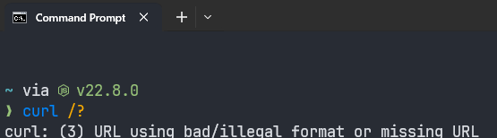
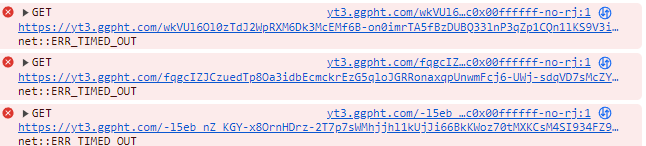

Новый билд:
GoodCheck_v1.3.02.zip (6,5 МБ)
Тестовый билд с автоматической проверкой doh:
GoodCheck_v1.3.06.zip (6,5 МБ)
Новый билд с отдельным чеклистом для Ютуба (проверяются только домены, нужные для его работы)
GoodCheck_v1.3.07.zip (6,5 МБ)
Скрипт, похожий по функционалу на блокчек Zapret’a. Изначально делался для GDPI. Потом разросся в более универсальный и стал совместим с gdpi, zapret и byedpi.
Как этим пользоваться?
- Кладёте всё в отдельную папку. Открываете config.cmd блокнотом. Прописываете путь до гудбая/запрета/byedpi в соответствующих строчках (пример:
set "_gdpiFolderOverride=D:\Soft\\goodbyedpi-0.2.3rc1") - Создаете свой чеклист с сайтами для проверки в формате txt, кладете его в папку checklists. Можете не создавать и использовать один из дефолтных, там небольшая коллекция заблокированных сайтов.
- Кроме того, автоматически ищется и проверяется Гугл-Кэш-Сервер (он же GGC, GSC, googlevideo) вашего провайдера. Если хотите это отключить - в конфиге ставите
set "_skipAutoISPsGCS=true". - По умолчанию используется DNS-over-HTTPS от Cloudflare (
https://1.1.1.1/dns-query), можно поставить свой (в конфиге) или использовать обычный резолвер (типа 8.8.8.8 или 9.9.9.9). Или отключить всё и использовать системный. - Можно настроить желаемые пэйлоады/SNI/hex в конфиге.
- Запускаете скрипт через start.cmd, он автоматически повышает привилегии до админских.
- В процессе работы выбираете через какую программу выполнять проверку, выбираете txt лист со стратегиями, выбираете чеклист с сайтами, выбираете количество проходов теста.
- Всё. После завершения смотрите файл лога. В самом конце будут стратегии рассортированные от наименее к наиболее удачной.
Наверняка есть баги, имейте в виду 
Буду рад отзывам.
P.S.: для ByeDPI нет нормального списка стратегий, т.к. я программой не пользуюсь. Если кто может помочь с составлением - будет хорошо.
Прошел все проверки, мой максимум это 4/10 успешных попыток.
Вы уверены что у вас версия гудбая с поддержкой параметра --fake-with-sni? Если нет, это бы объяснило такой плачевный результат.
Полагаю надо добавить опции для других версий.
привет
а как понять для какого сервера выполняется проверка
для провайдерского или который указан в списке?
тут оставил только нужный мне сервер для проверки:
Никак на данный момент. Разве что смотреть на exit-коды в логе. Первый код - это провайдер. 0 - значит успех. Полагаю, надо добавить возможность не проводить авто-тест провайдерского сервера.
Я просто изначально делал этот скрипт тупо под гуглвидео, а потом он перерос в блокчек. Вот так и получилось.
первые 2 кода - это провайдер получается. Потому что я убрал все доп. сервера и он по двум ищет
но вцелом находит все верно, спасибо=)
Добавил опцию set skipProvidersGGC= в скрипт. Замените на set skipProvidersGGC=1 и автопроверка провайдерского серера отключится.
Если вы всё убрали из файла, то не должно вообще ничего искаться. Возможно скрипт пустую линию считает? Сейчас проверю. upd: не считает. Хз тогда почему у вас ищет по двум. Возможно вы оставили ту штуку для tls 1.2?
Also, добавил стратегии с --fake-from-hex в стартовый набор, для тех у кого старая версия.
Эти стратегии с --fake-with-sni (ниже) бессмысленны, т.к. --fake-with-sni (так же как и --fake-from-hex) сам по себе не включает режим Fake Requests, флаг игнорируется фактически.
Fake Requests включают только флаги -5, -6, -7, -8, -9, --set-ttl, --min-ttl, --auto-ttl, --wrong-chksum, --wrong-seq. Никакие другие флаги режим Fake Requests не включают. Источник: смотрел код и пакеты в wireshark.
-e 1 --fake-with-sni FAKESNI
-e 1 --native-frag --fake-with-sni FAKESNI
-e 1 --reverse-frag --fake-with-sni FAKESNI
-e 2 --fake-with-sni FAKESNI
-e 2 --native-frag --fake-with-sni FAKESNI
-e 2 --reverse-frag --fake-with-sni FAKESNI
-e 1 --fake-with-sni FAKESNI --frag-by-sni
-e 1 --native-frag --fake-with-sni FAKESNI --frag-by-sni
-e 1 --reverse-frag --fake-with-sni FAKESNI --frag-by-sni
-e 2 --fake-with-sni FAKESNI --frag-by-sni
-e 2 --native-frag --fake-with-sni FAKESNI --frag-by-sni
-e 2 --reverse-frag --fake-with-sni FAKESNI --frag-by-sni
я имею ввиду вот так:
с таким нашел корректный конфиг для моих провайдерских (и моих магистральных серверов)
там просто написано do not remove)
Я обновил скрипт, теперь тест для tls1.2 можно из checkme удалить, т.к. он в самом скрипте. Он там нужен, чтобы видеть какие стратегии ломают tls 1.2 (на том же твиттере, тут много тем про это было).
@Decavoid Спс за инфо, сейчас подправлю список. Я просто туда напихал перебором стратегии. Я хз какие из них валидные, какие нет.
Рекомендую добавить в стратегии флаги: --auto-ttl, --set-ttl 3, --set-ttl 4, --set-ttl 5.
Я правильно понимаю, что вот такое тоже не будет работать? -e 1 --fake-from-hex 160301FFFF01FFFFFF0303594F5552204144564552544953454D454E542048455245202D202431302F6D6F000000000009000000050003000000 --fake-gen 5 Или фейк ген включает эту штуку?
Правильно. Эта конструкция не включает режим Fake Requests, она не будет отправлять никакие фейки.
Ни --fake-from-hex, ни --fake-gen не включают этот режим.
это замедлит процесс подбора раза в 3 наверно.
возможно имеет смысл это подключить, если не найдутся стратегии обхода.
Если бы у меня не работал ютуб, и я бы хотел, чтобы он заработал, я бы был готов подождать минут 10.
--fake-gen X аналогично. Если нет какого-либо флага (список выше), который включает режим Fake Requests, то --fake-gen X игнорируется.
Обновил стратегии и сам скрипт.
Со стратегиями тяжко, так как вариантов много получается разных.
теперь для каждой стратегии пишет TLS 1.2 Possible Breakage!
когда был тест в тхт файле такой ошибки не было
(upd по зависанию я сам дурак, кликнул мышью по cmd, не обращай внимание)
на самом деле первая версия как лайт меня бы полностью устроила
Серьезно? У меня не пишет… Блин, а почему?
Можно, конечно, выкинуть этот тест.
Возможно, потому что тестовый сайт с тлс12 использует специфический порт? Я просто другого сайта не нашел.
Пожелание: возможность указать абсолютный либо относительный путь к папке с goodbyedpi.exe.
ТЛС ломается от фейк-генов с большими цифрами. По идее этого не должно происходить с норм стратегиями.
Что касается количества стратегий, полагаю можно просто сделать отдельные листы, лайт и хэви, так сказать.
А ещё я что-то напортачил с цифрами потоков, блин. Возможно проблема в этом. Наверняка, в этом.
ломается с самой первой
в checkme пусто (чтобы проверял провайдерский по умолчанию)
но если это только у меня, то возможно это моя локальная проблема
Да я понял уже где косяк.
Обновил. Исправил косяк с ТЛС 1.2. Добавил exePathOverride= Должен указывать на папку с самим экзешником, типа D:\Soft\GDPI\.
Режимы -e 1 и -e 2 работают почти одинаково, откусывают 1 и 2 байта от пакета соответственно. Я не видел доказательств, что они приводят к разным результатам.
Strategies with 1 out of 5 successes:
-e 1 --native-frag --frag-by-sni -q
Strategies with 2 out of 5 successes:
-e 2 --native-frag --frag-by-sni -q
Предположу, что один из них можно удалить (2й) и сократить список стратегий в 2 раза, освободив место для других стратегий.
Проверил ещё раз эти 2 стратегии:
-e 1 --native-frag --frag-by-sni
-e 2 --native-frag --frag-by-sni
После нескольких запусков стало стабильно выдавать 1/10 для обеих стратегий.
Хочу видеть в списке более короткие, рабочие стратегии без --wrong-seq и --wrong-chksum. Например, такую:
-e 1 --reverse-frag --fake-with-sni FAKESNI --set-ttl 4
Сейчас прогнал полный тест, и действительно результаты для e1 и e2 идентичные. Ну, как минимум, для сложных стратегией разницы вроде нет.
Обновил стратегии. 311 штук, лол. Возможно, я там где-то опять лишнего засунул, уже крыша едет слегка.
На моей древней 7-ке все как всегда криво)) Не запускается от админа.
ERROR: This script requires elevated privilegies
You need to right click on “GoodCheck.cmd” and choose “Run as administrator”
Press any button to exit…
Но это ерунда, проверку можно закомментить. Но позже он виснет на choice /C Q /D Q /CS /T 1 >NUL Вот это уже не знаю, как обойти( Буду писать свой скрипт под 7-ку. Если правильно понимаю, ваш скрипт перебирает стратегии из файла, так же , как и мой testConfigs.cmd Окологудбайдипиайный флуд - #301 by TesterTi ? Но у меня проверялось вручную, а у вас проверяет curl-ом, верно? Отличная идея! Плюс автоматически определяется ggc провайдера - вот это действительно круто! (спасибо @manwithbox за метод)
меня кстати интересует, от такого количества запросов к серверу он не заблочит с какой нибудь 403 ошибкой?
А что у вас в cmd выдает команда net session? Я просто по рекомендации из интернета её использовал для проверки админских прав. Типа если отказано в доступе, то прав нет.
choice /C Q /D Q /CS /T 1 >NUL можно заменить на timeout /T 2.
Или возможно проблема не в команде, а в >NUL?
Хз. Но эта проблема и обычного блокчека из запрета. Не думаю что это как-то решить можно. Сервер не протестируешь не коннектясь.
Ну видимо не 0) На моей машине корректно можно проверить админские права только так
reg query %regPath% > nul
if %errorlevel%==0 (
бла-бла
)
Но не факт, что это будет работать у других.
Самое странное, что просто в отдельной командной строке это работает. А в батнике виснет( Эх
У меня reg query и без админских прав выполняется на десятке.
Крутая вещь получилась.
Мои результаты
log_30-09-2024_15-43-03.txt (113.9 KB)
Summary
Strategies with 8 out of 10 successes:
-e 1 --native-frag --wrong-seq --fake-with-sni www.google.com -q
-e 1 --reverse-frag --wrong-seq --fake-with-sni www.google.com -q
-e 1 --native-frag --wrong-seq --wrong-chksum --fake-with-sni www.google.com -q
-e 1 --reverse-frag --wrong-seq --wrong-chksum --fake-with-sni www.google.com -q
-e 1 --reverse-frag --wrong-seq --fake-with-sni www.google.com --frag-by-sni -q
-e 1 --reverse-frag --wrong-seq --wrong-chksum --fake-with-sni www.google.com --frag-by-sni -q
-e 1 --native-frag --wrong-seq --fake-with-sni www.google.com --set-ttl 3 -q
-e 1 --reverse-frag --wrong-seq --fake-with-sni www.google.com --set-ttl 3 -q
-e 1 --native-frag --wrong-seq --wrong-chksum --fake-with-sni www.google.com --set-ttl 3 -q
-e 1 --reverse-frag --wrong-seq --wrong-chksum --fake-with-sni www.google.com --set-ttl 3 -q
-e 1 --reverse-frag --wrong-seq --fake-with-sni www.google.com --frag-by-sni --set-ttl 3 -q
-e 1 --reverse-frag --wrong-seq --wrong-chksum --fake-with-sni www.google.com --frag-by-sni --set-ttl 3 -q
-e 1 --native-frag --wrong-seq --fake-with-sni www.google.com --set-ttl 4 -q
-e 1 --reverse-frag --wrong-seq --fake-with-sni www.google.com --set-ttl 4 -q
-e 1 --reverse-frag --wrong-chksum --fake-with-sni www.google.com --set-ttl 4 -q
-e 1 --native-frag --wrong-seq --wrong-chksum --fake-with-sni www.google.com --set-ttl 4 -q
-e 1 --reverse-frag --wrong-seq --wrong-chksum --fake-with-sni www.google.com --set-ttl 4 -q
-e 1 --native-frag --wrong-seq --fake-with-sni www.google.com --frag-by-sni --set-ttl 4 -q
-e 1 --reverse-frag --wrong-seq --fake-with-sni www.google.com --frag-by-sni --set-ttl 4 -q
-e 1 --reverse-frag --wrong-chksum --fake-with-sni www.google.com --frag-by-sni --set-ttl 4 -q
-e 1 --native-frag --wrong-seq --wrong-chksum --fake-with-sni www.google.com --frag-by-sni --set-ttl 4 -q
-e 1 --reverse-frag --wrong-seq --wrong-chksum --fake-with-sni www.google.com --frag-by-sni --set-ttl 4 -q
-e 1 --reverse-frag --fake-with-sni www.google.com --set-ttl 4 -q
-e 1 --reverse-frag --fake-with-sni www.google.com --frag-by-sni --set-ttl 4 -q
Exit коды не в том же порядке, что сайты в файле?
Сертификат в систему устанавливать надо или достаточно положить в папку с GDPI ?
По идее в том же. Они одним параметром -w “%{exitcode}” выводятся, так что это курл контролирует, а не скрипт.
Первый код это тест тлс, второй провайдерские GGC, дальше сайты из файла.
upd: теперь при выводе конечных результатов пишется какие стратегии ломали tls
Выглядит так, что сначала успешные (0) коды выводятся. Можно ли сказать курлу, чтобы он перед кодом порядковый номер сайта вывел, чтобы понять какие сайты заблочены?
REG ADD HKLM /F>nul 2>&1
И такое тоже? (взято из той же рекомендации в инете ))
Блин, порядок реально рандомный, какого ж хрена?! Я для теста tls проверял первый экзит код, а в этом никакого смысла, получается…
Многопоточность, успех приходит раньше, таймаут случается позже, выводится позже.
Да даже код необязательно смотреть, в ридми на гитхабе ясно написано, какие ключи задействуют Fake Request Mode. Причем 2 фейка подряд посылают только вронгсекью + вронг-чексум. Или -9 и -8
Документация часто врёт. Например, в ней не указано, что --min-ttl включает Fake Request мод, но фактически этот флаг его включает.
Я просто думал, что раз --set-ttl задействует, то и другие ттл-ы тоже. Мне важнее, чтобы 2 фейк-пакета не посылались (ибо избыточны в моем случае)
@Ori Так же у всяких ноунеймов до сих пор работают такие древности, как -s -r и -m - это так, на заметку
все ок, правда с большим количеством стратегий он немного ошибается
например выдал
-e 1 --native-frag --set-ttl 4 -q
или
-e 1 --native-frag --wrong-chksum --frag-by-sni --fake-from-hex 160301FFFF01FFFFFF0303594F5552204144564552544953454D454E542048455245202D202431302F6D6F000000000009000000050003000000 --fake-gen 10 -q
которые у меня не работают на деле. (в первой версии таких ошибок не было)
а почему ttl с 3 начинается?
--fake-with-sni + --wrong-chksum + --wrong-seq в сумме посылают 3 фейк пакета.
1 пакет для --fake-with-sni
1 пакет - копия предыдущего с неверной checksum
1 пакет - копия первого фейк-пакета с изменённым Sequence Number (и верной checksum).
Если цель - посылать минимум фейков (например, 1 фейк со SNI www.google.com), то надо убирать wrong* флаги (но включить какой-либо ttl-флаг, чтобы не выключился Fake Request режим).
Замечательный скрипт — однозначно поможет сэкономить кучу времени на ручное тестирование в будущем. Большинство успешных стратегий выглядят избыточно, но, тем не менее, все из них сейчас реально работают и для YouTube, и для прочих сайтов.
Если упростить список успешных (7/8 + 8/8 соответственно) из скрипта до одной строки, то сейчас на МГТС (кластер comstar-bka3) работает примерно следующее:
-e 1 -q [--reverse-frag | --native-frag] --set-ttl [3-5] --fake-with-sni www.google.com [--wrong-seq, опционально] [--wrong-chksum, опционально]
Результат налицо:
Наиболее предпочтительным сейчас выглядит -e1 -q --reverse-frag --set-ttl 4 --fake-with-sni www.google.com — всё работает без лишних вопросов, минимум параметров и фейковых пакетов. При желании туда можно добавить ещё и --max-payload, н̶о̶ ̶с̶ ̶н̶и̶м̶,̶ ̶п̶о̶ ̶с̶у̶б̶ъ̶е̶к̶т̶и̶в̶н̶ы̶м̶ ̶о̶щ̶у̶щ̶е̶н̶и̶я̶м̶,̶ ̶н̶а̶ ̶н̶е̶к̶о̶т̶о̶р̶ы̶х̶ ̶к̶о̶н̶ф̶и̶г̶а̶х̶ ̶н̶е̶к̶о̶т̶о̶р̶ы̶е̶ ̶с̶а̶й̶т̶ы̶ ̶п̶е̶р̶и̶о̶д̶и̶ч̶е̶с̶к̶и̶ ̶н̶е̶ ̶д̶о̶г̶р̶у̶ж̶а̶л̶и̶с̶ь̶ ̶д̶о̶ ̶к̶о̶н̶ц̶а̶ ̶—̶ ̶п̶р̶и̶х̶о̶д̶и̶л̶о̶с̶ь̶ ̶в̶р̶у̶ч̶н̶у̶ю̶ ̶о̶б̶н̶о̶в̶л̶я̶т̶ь̶ ̶с̶т̶р̶а̶н̶и̶ц̶у̶.̶ ̶Н̶е̶п̶о̶н̶я̶т̶н̶о̶,̶ ̶т̶о̶ч̶н̶о̶ ̶л̶и̶ ̶в̶и̶н̶о̶в̶а̶т̶ ̶и̶м̶е̶н̶н̶о̶ ̶э̶т̶о̶т̶ ̶п̶а̶р̶а̶м̶е̶т̶р̶,̶ ̶н̶о̶ ̶о̶щ̶у̶т̶и̶м̶о̶г̶о̶ ̶у̶в̶е̶л̶и̶ч̶е̶н̶и̶я̶ ̶п̶р̶о̶и̶з̶в̶о̶д̶и̶т̶е̶л̶ь̶н̶о̶с̶т̶и̶,̶ ̶к̶о̶т̶о̶р̶о̶е̶ ̶у̶п̶о̶м̶и̶н̶а̶е̶т̶с̶я̶ ̶в̶ ̶д̶о̶к̶у̶м̶е̶н̶т̶а̶ц̶и̶и̶,̶ ̶в̶ ̶м̶о̶ё̶м̶ ̶о̶г̶р̶а̶н̶и̶ч̶е̶н̶н̶о̶м̶ ̶и̶ ̶с̶у̶б̶ъ̶е̶к̶т̶и̶в̶н̶о̶м̶ ̶т̶е̶с̶т̶и̶р̶о̶в̶а̶н̶и̶и̶ ̶о̶т̶ ̶н̶е̶г̶о̶ ̶н̶е̶ ̶у̶в̶и̶д̶е̶л̶.
Ну, тут уже я ступил )) Думал что fake-with это что-то типа --fake-from хотя даже по названию видно, что это не так  Тогда значит посылается 2 фейк-пакета, ибо без wrong-seq (при наличии --set-ttl) ютуб точно не работает, остальные сайты не проверял.
Тогда значит посылается 2 фейк-пакета, ибо без wrong-seq (при наличии --set-ttl) ютуб точно не работает, остальные сайты не проверял.
Это в большинстве случаев означает, что они лезут на другой какой-то заблоченный сайт, для котрого эта стратегия обхода не работает. Вряд ли тут дело в max-payload Скорее уж в недостаточном TTL
Ок, починил и обновил первый пост. Теперь видно какие сайты работают, какие нет. И проверка tls 1.2 работает (вроде)?
Надо прогнать по всему списку стратегий чтобы убедиться.
Достаточно положить.
В первой версии стоял дополнительный таймаут в секунду после остановки windivert. Возможно в этом дело. Но с 300 стратегиями это +5 минут времени будет.
Я и так добавил таймаут между запуском gdpi и курлением, т.к. там было прям заметно что он не успевает запуститься и стратегии не работают.
Файл checkme.txt называется странно, лучше назвать hosts.txt, например.
А нельзя ли прикрутить типа проверки версии “на старость”? Типа, если после запуска с новым ключем в процессах не обнаружен goodbyedpi.exe то (делается то-то и то-то)
Можно по идее, только хз будет ли это иметь реальный эффект. Я попробую.
Я думал об этом, но боюсь некоторые умники начнут путать блеклист гудбая и хостлист для теста. В итоге запустят с блеклистом в котором многотысячный список, будет забавно.
Ну, как минимум можно выводить сообщение “Ваша версия устарела, обновитесь или удалите…”. По статистике, пользователи внутри программы читают внимательнее, чем в хелпе к ней
log_30-09-2024_19-54-58.txt (106,4 КБ)
не густо
как я понял нету ни одного 3/3, никто не прошел ютуб эх
Мои результаты, кста:
log_30-09-2024_16-00-22.txt (251,3 КБ)
Я так смотрю, стратегии с --fake-from-hex надо или выкидывать, или менять hex. Я дефолтный взял из гудбая, но работает он всрато.
Кроме того, я не уверен что тест на сломанность tls 1.2 адекватный (и нужен ли он?). Нужен какой-нибудь реальный пример ломающегося ресурса.
Не верится, что --fake-with-sni даёт меньше успехов, чем --fake-from-hex. Это точно обновлённая версия программы с ключом --fake-with-sni ?
Ну теперь будем говорить новичкам вы пробывали искать стратегии с помощью good check by ori 
Обновлённые результаты.
log_30-09-2024_17-09-05.txt (253.7 KB)
а расшифровка redirect не покажет сразу и магистральный?
потому что в консоли браузера как правило показывается mn = местный сервер, магистральный сервер.
в любом случае спасибо :3
Не хватает стратегии “gdpi не запущен”.
Ни одной рабочей стратегии для x.com? Странно.
Весьма недурно выглядит, мне насобирало прям целый веер возможных стратегий.
Как идея на будущее, если это будет уместно в рамках смысла тулзы и языка, то после проверки стратегий генерировать пару тестовых батников на запуск.
log_30-09-2024_18-03-14.txt (252,3 КБ)
Ну, как минимум, тут нифига нет.
https://redirector.googlevideo.com/report_mapping?di=no
В первой итерации на 47 стратегиях даже до 3/10 не доходило. И тут Остапа понесло…
Your cluster codename: transtelecom-ikt2
Strategies with 10 out of 11 successes:
-e 1 --native-frag --wrong-seq --wrong-chksum --fake-with-sni www.google.com --set-ttl 4 -q
-e 1 --reverse-frag --wrong-seq --wrong-chksum --fake-with-sni www.google.com --set-ttl 4 -q
-e 1 --native-frag --wrong-seq --fake-with-sni www.google.com --frag-by-sni --set-ttl 4 -q
-e 1 --reverse-frag --wrong-seq --fake-with-sni www.google.com --frag-by-sni --set-ttl 4 -q
-e 1 --native-frag --wrong-chksum --fake-with-sni www.google.com --frag-by-sni --set-ttl 4 -q
-e 1 --reverse-frag --wrong-chksum --fake-with-sni www.google.com --frag-by-sni --set-ttl 4 -q
-e 1 --native-frag --wrong-seq --wrong-chksum --fake-with-sni www.google.com --frag-by-sni --set-ttl 4 -q
-e 1 --reverse-frag --wrong-seq --wrong-chksum --fake-with-sni www.google.com --frag-by-sni --set-ttl 4 -q
-e 1 --native-frag --wrong-seq --fake-with-sni www.google.com --set-ttl 5 -q
-e 1 --reverse-frag --wrong-seq --fake-with-sni www.google.com --set-ttl 5 -q
-e 1 --native-frag --wrong-chksum --fake-with-sni www.google.com --set-ttl 5 -q
-e 1 --reverse-frag --wrong-chksum --fake-with-sni www.google.com --set-ttl 5 -q
-e 1 --native-frag --wrong-seq --wrong-chksum --fake-with-sni www.google.com --set-ttl 5 -q
-e 1 --reverse-frag --wrong-seq --wrong-chksum --fake-with-sni www.google.com --set-ttl 5 -q
-e 1 --native-frag --wrong-seq --fake-with-sni www.google.com --frag-by-sni --set-ttl 5 -q
-e 1 --reverse-frag --wrong-seq --fake-with-sni www.google.com --frag-by-sni --set-ttl 5 -q
-e 1 --native-frag --wrong-chksum --fake-with-sni www.google.com --frag-by-sni --set-ttl 5 -q
-e 1 --native-frag --wrong-seq --wrong-chksum --fake-with-sni www.google.com --frag-by-sni --set-ttl 5 -q
-e 1 --reverse-frag --wrong-seq --wrong-chksum --fake-with-sni www.google.com --frag-by-sni --set-ttl 5 -q
Да, похоже на то — изначально предполагал, что какие-то пакеты «зависают» после проверки размера. Интересно, что сайты, на которых такое наблюдалось, никогда никем не блокировались, и (вроде бы) ни на что неугодное не ссылались. Ещё потестирую конфиг выше именно с --max-payload и приподниму TTL, спасибо за наводку.
ладно тогда пофиг.( хотя если убрать dl=no то он показывает debug, но я хз как он расшифровывается)
Тем более я встречал на подвальных местных провах отсутствие маршрутизации и адрес сервера гуляет от одного магистрального прова к другому, одни видео на ттк грузились, другие на ртк итд. (и к каждому своя стратегия нужна была)
Не знаю, у меня все должно быть обновленное, но все равно не проходит ютуб
Короче, я поменял дефолтный hex и стало куда веселее:
log_30-09-2024_16-25-14.txt (259,1 КБ)
Обновил скрипт. Либо можете сами себе его туда запихнуть на место старого:
1603030135010001310303424143facf5c983ac8ff20b819cfd634cbf5143c0005b2b8b142a6cd335012c220008969b6b387683dedb4114d466ca90be3212b2bde0c4f56261a9801
Вопрос еще, приведенный в шапке сертификат нужно просто рядом положить или установить в систему?
В файле стратегий после --fake-from-hex можно заменить 2 пробела на один? А то глаза режет.
Исправил.
Просто рядом
Ок. Я тут потестил, виндиверт действительно не успевает остановиться достаточно быстро.
скачал заново файлы теперь проходят слава господи
Может уже в шапке написать, куда его класть, этот сертификат? 3-й или 2-й вопрос уже подобный в теме
Ну там и так было написано что надо всё кинуть в папку с батниками. Но видимо этого мало. Написал ещё раз, жирным шрифтом.
Добавил в скрипт дополнительную проверку и таймаут, если виндиверт не успел выгрузиться. Скорее всего, приципиально ничего от этого не поменялось, но пусть будет.
С новым хексом результаты сравнялись с --fake-with-sni.
log_30-09-2024_17-52-51.txt (261.6 KB)
В файле стратегий нет ни одной стратегии с хексом, в которой ровно один фейк, но это не принципиально.
Summary
Strategies with 8 out of 10 successes:
-e 1 --reverse-frag --wrong-seq --fake-from-hex 1603030135010001310303424143facf5c983ac8ff20b819cfd634cbf5143c0005b2b8b142a6cd335012c220008969b6b387683dedb4114d466ca90be3212b2bde0c4f56261a980 --fake-gen 15 -q
-e 1 --reverse-frag --wrong-seq --wrong-chksum --fake-from-hex 1603030135010001310303424143facf5c983ac8ff20b819cfd634cbf5143c0005b2b8b142a6cd335012c220008969b6b387683dedb4114d466ca90be3212b2bde0c4f56261a980 --fake-gen 15 -q
-e 1 --reverse-frag --wrong-seq --frag-by-sni --fake-from-hex 1603030135010001310303424143facf5c983ac8ff20b819cfd634cbf5143c0005b2b8b142a6cd335012c220008969b6b387683dedb4114d466ca90be3212b2bde0c4f56261a980 --fake-gen 15 -q
-e 1 --reverse-frag --wrong-seq --wrong-chksum --frag-by-sni --fake-from-hex 1603030135010001310303424143facf5c983ac8ff20b819cfd634cbf5143c0005b2b8b142a6cd335012c220008969b6b387683dedb4114d466ca90be3212b2bde0c4f56261a980 --fake-gen 15 -q
-e 1 --reverse-frag --wrong-seq --fake-from-hex 1603030135010001310303424143facf5c983ac8ff20b819cfd634cbf5143c0005b2b8b142a6cd335012c220008969b6b387683dedb4114d466ca90be3212b2bde0c4f56261a980 --fake-gen 15 --set-ttl 3 -q
-e 1 --reverse-frag --wrong-seq --wrong-chksum --fake-from-hex 1603030135010001310303424143facf5c983ac8ff20b819cfd634cbf5143c0005b2b8b142a6cd335012c220008969b6b387683dedb4114d466ca90be3212b2bde0c4f56261a980 --fake-gen 15 --set-ttl 3 -q
-e 1 --reverse-frag --wrong-seq --frag-by-sni --fake-from-hex 1603030135010001310303424143facf5c983ac8ff20b819cfd634cbf5143c0005b2b8b142a6cd335012c220008969b6b387683dedb4114d466ca90be3212b2bde0c4f56261a980 --fake-gen 15 --set-ttl 3 -q
-e 1 --reverse-frag --wrong-seq --wrong-chksum --frag-by-sni --fake-from-hex 1603030135010001310303424143facf5c983ac8ff20b819cfd634cbf5143c0005b2b8b142a6cd335012c220008969b6b387683dedb4114d466ca90be3212b2bde0c4f56261a980 --fake-gen 15 --set-ttl 3 -q
-e 1 --reverse-frag --wrong-seq --fake-from-hex 1603030135010001310303424143facf5c983ac8ff20b819cfd634cbf5143c0005b2b8b142a6cd335012c220008969b6b387683dedb4114d466ca90be3212b2bde0c4f56261a980 --fake-gen 10 --set-ttl 4 -q
-e 1 --reverse-frag --wrong-seq --wrong-chksum --fake-from-hex 1603030135010001310303424143facf5c983ac8ff20b819cfd634cbf5143c0005b2b8b142a6cd335012c220008969b6b387683dedb4114d466ca90be3212b2bde0c4f56261a980 --fake-gen 10 --set-ttl 4 -q
-e 1 --reverse-frag --wrong-seq --frag-by-sni --fake-from-hex 1603030135010001310303424143facf5c983ac8ff20b819cfd634cbf5143c0005b2b8b142a6cd335012c220008969b6b387683dedb4114d466ca90be3212b2bde0c4f56261a980 --fake-gen 10 --set-ttl 4 -q
-e 1 --reverse-frag --wrong-seq --wrong-chksum --frag-by-sni --fake-from-hex 1603030135010001310303424143facf5c983ac8ff20b819cfd634cbf5143c0005b2b8b142a6cd335012c220008969b6b387683dedb4114d466ca90be3212b2bde0c4f56261a980 --fake-gen 10 --set-ttl 4 -q
-e 1 --reverse-frag --wrong-seq --fake-from-hex 1603030135010001310303424143facf5c983ac8ff20b819cfd634cbf5143c0005b2b8b142a6cd335012c220008969b6b387683dedb4114d466ca90be3212b2bde0c4f56261a980 --fake-gen 15 --set-ttl 4 -q
-e 1 --reverse-frag --wrong-chksum --fake-from-hex 1603030135010001310303424143facf5c983ac8ff20b819cfd634cbf5143c0005b2b8b142a6cd335012c220008969b6b387683dedb4114d466ca90be3212b2bde0c4f56261a980 --fake-gen 15 --set-ttl 4 -q
-e 1 --reverse-frag --wrong-seq --wrong-chksum --fake-from-hex 1603030135010001310303424143facf5c983ac8ff20b819cfd634cbf5143c0005b2b8b142a6cd335012c220008969b6b387683dedb4114d466ca90be3212b2bde0c4f56261a980 --fake-gen 15 --set-ttl 4 -q
-e 1 --reverse-frag --wrong-seq --frag-by-sni --fake-from-hex 1603030135010001310303424143facf5c983ac8ff20b819cfd634cbf5143c0005b2b8b142a6cd335012c220008969b6b387683dedb4114d466ca90be3212b2bde0c4f56261a980 --fake-gen 15 --set-ttl 4 -q
-e 1 --reverse-frag --wrong-chksum --frag-by-sni --fake-from-hex 1603030135010001310303424143facf5c983ac8ff20b819cfd634cbf5143c0005b2b8b142a6cd335012c220008969b6b387683dedb4114d466ca90be3212b2bde0c4f56261a980 --fake-gen 15 --set-ttl 4 -q
-e 1 --reverse-frag --wrong-seq --wrong-chksum --frag-by-sni --fake-from-hex 1603030135010001310303424143facf5c983ac8ff20b819cfd634cbf5143c0005b2b8b142a6cd335012c220008969b6b387683dedb4114d466ca90be3212b2bde0c4f56261a980 --fake-gen 15 --set-ttl 4 -q
-e 1 --reverse-frag --fake-from-hex 1603030135010001310303424143facf5c983ac8ff20b819cfd634cbf5143c0005b2b8b142a6cd335012c220008969b6b387683dedb4114d466ca90be3212b2bde0c4f56261a980 --fake-gen 15 --set-ttl 4 -q
-e 1 --reverse-frag --frag-by-sni --fake-from-hex 1603030135010001310303424143facf5c983ac8ff20b819cfd634cbf5143c0005b2b8b142a6cd335012c220008969b6b387683dedb4114d466ca90be3212b2bde0c4f56261a980 --fake-gen 15 --set-ttl 4 -q
-e 1 --native-frag --wrong-seq --fake-with-sni www.google.com -q
-e 1 --reverse-frag --wrong-seq --fake-with-sni www.google.com -q
-e 1 --native-frag --wrong-seq --wrong-chksum --fake-with-sni www.google.com -q
-e 1 --reverse-frag --wrong-seq --wrong-chksum --fake-with-sni www.google.com -q
-e 1 --reverse-frag --wrong-seq --fake-with-sni www.google.com --frag-by-sni -q
-e 1 --reverse-frag --wrong-seq --wrong-chksum --fake-with-sni www.google.com --frag-by-sni -q
-e 1 --native-frag --wrong-seq --fake-with-sni www.google.com --set-ttl 3 -q
-e 1 --reverse-frag --wrong-seq --fake-with-sni www.google.com --set-ttl 3 -q
-e 1 --native-frag --wrong-seq --wrong-chksum --fake-with-sni www.google.com --set-ttl 3 -q
-e 1 --reverse-frag --wrong-seq --wrong-chksum --fake-with-sni www.google.com --set-ttl 3 -q
-e 1 --reverse-frag --wrong-seq --fake-with-sni www.google.com --frag-by-sni --set-ttl 3 -q
-e 1 --reverse-frag --wrong-seq --wrong-chksum --fake-with-sni www.google.com --frag-by-sni --set-ttl 3 -q
-e 1 --native-frag --wrong-seq --fake-with-sni www.google.com --set-ttl 4 -q
-e 1 --reverse-frag --wrong-seq --fake-with-sni www.google.com --set-ttl 4 -q
-e 1 --reverse-frag --wrong-chksum --fake-with-sni www.google.com --set-ttl 4 -q
-e 1 --native-frag --wrong-seq --wrong-chksum --fake-with-sni www.google.com --set-ttl 4 -q
-e 1 --reverse-frag --wrong-seq --wrong-chksum --fake-with-sni www.google.com --set-ttl 4 -q
-e 1 --native-frag --wrong-seq --fake-with-sni www.google.com --frag-by-sni --set-ttl 4 -q
-e 1 --reverse-frag --wrong-seq --fake-with-sni www.google.com --frag-by-sni --set-ttl 4 -q
-e 1 --reverse-frag --wrong-chksum --fake-with-sni www.google.com --frag-by-sni --set-ttl 4 -q
-e 1 --native-frag --wrong-seq --wrong-chksum --fake-with-sni www.google.com --frag-by-sni --set-ttl 4 -q
-e 1 --reverse-frag --wrong-seq --wrong-chksum --fake-with-sni www.google.com --frag-by-sni --set-ttl 4 -q
-e 1 --reverse-frag --fake-with-sni www.google.com --set-ttl 4 -q
-e 1 --reverse-frag --fake-with-sni www.google.com --frag-by-sni --set-ttl 4 -q
Он точно рабочий? Там нечётное количество символов
Тоже сомневаюсь. У меня резка.аг еще ни одна комбинация не пробила из протестированных, для нее как раз нужен у меня from-hex или with-sni Хотя, возможно, это из-за налепленных далее фейк-генов
Стратегии с --fake-with-sni пробили все
Так же видел прикол, когда стратегия пробила GGC провайдера определенный автоматом (rr1**), а тот, что вписал я (rr3***) - не пробила ) Защита от дурачка не сработала
Блин, там реально нечетное количество символов? А почему он работает вообще?!
Спс, я даже не заметил. Исправил.
При нечётном хексе ключ игнорируется, выводится “WARNING: bad fake HEX value”. Работает за счёт 15 фейков, набитых рандомными байтами. Нужно аналогичную стратегию добавить.
-e 1 --reverse-frag --fake-gen 15 --set-ttl 4 -q
Теперь винда от админа его запускать отказывается - Защитила, говорит ))
Всмысле?
В прямом
Спойлер
До правки такого не было
То есть sc delete windivert это норм, а sc query windivert это опасное приложение? Прикольно.
Пофиг, уберу проверку. Не то чтобы она была нужна.
Убрал. Отпиши о результатах, интересно
Неа, то же самое. Видимо, дефендер закинул файл в облако, и ему что-то там не понравилось - теперь не дает запускать
Особенно смешит - Неизвестный издатель  Подпись для CMD - это что-то новенькое, я про такое и не слышал никогда
Подпись для CMD - это что-то новенькое, я про такое и не слышал никогда
Может и нужна. Определить ошибку запуска windivert например, типа Error: XXXX Описание ошибки
Не все решается банальным stop и delete
А попробуй вместо проверки использовать net stop "WinDivert". В этом случае система должна ждать остановки службы
Не бойся, когда я первый раз скачал такое же окно вылезло, я честно говоря никогда на него и не обращал внимание, ибо это чисто из-за флага блокировки, который иногда появляется после скачивания с инета.
Возможно на первой версии этот флаг снялся, когда я скачал его не в ту папку, а потом перенес в нужную. Счас чекну
Да, именно так и есть. Сорри за суету ((
Добавил опцию skipTls12Test и поставил её включенной по умолчанию, т.к. на данный момент не похоже что это работает как задумано.
Нужен какой-то незаблокированный ресурс который будет 100% ломаться с хреновыми стратегиями типа фейкген 29.
Да оно там и так было. Просто хотел дополнительную проверку на случай если подвиснет.
Именно net stop? не sc stop?
У меня кстати наконец-то запустился твой блокчек, просто тупо закомментировав все choice) Ура, победа!
у меня это окно возникает при первом запуске любой подобной программы (gdpi,zapret) и при изменении местоположения исполняемого файла
так что все ок с ним
sc.
Блин, я не знал что есть альтернативный вариант. А в чем разница? Я просто взял sc stop из гудбаешного скрипта. Лучше net использовать получается?
Погуглил. Ок, щас попробую изменить на net. Это имеет смысл.
Поменял на net stop.
Спс за совет.
С исправленным хексом добавилось 12 успешных стратегий (8/10), но и стратегий в файле strategies.txt было добавлено ровно столько же.
log_30-09-2024_18-48-35.txt (273.3 KB)
На каком-то форуме писали, что лучше net stop
Как и SC START, SC STOP не ждет остановки службы. и часто будет возвращаться STOP_PENDING для многих остановок службы. NET STOP, с другой стороны, будет ждать остановки службы. прежде чем он вернется в командную строку.
а regexсы нельзя замутить? формата https://*---sn-gvnuxaxjvh-bvw*.googlevideo.com например, потому что я заметил что в моём случае checkme.txt выглядит все ети Ggc заканчиваются на ето
У меня в логе 4000+ строк и почти 1000 из них - это типо успешные стратегии - это нормально? ОО Нельзя было комментить choice, да?)
закомемнтил секцию с проверкой сети пингом, потому что у меня в сети пинги наружу не работайют (почему то)) иначе не запускается
чёт пока грусно
ладн подождём доконца
log_30-09-2024_18-27-06.txt (253.7 KB)
upd кажись я понел наверн оно прост по айпишнеку заблолчено по етому не кажет
уобщем давай поновой миша всё уйня 
падажжи а где он curl то берёт яего в папку не клал может поетому не кажет 
 или он всроен ввинду щас я хз
или он всроен ввинду щас я хз
Да, там свой билд курла начиная с десятки, они через него тянут обновления для винды (поэтому его даже не обновить, только использовать отдельный билд).
Причем интересно, что его можно через winget стянуть поновее и он поставится, но даже если в PATH его кинуть, он игнорится (видимо конфликт или еще что).
Зачем? GGC вашего провайдера скрипт найдет сам, достаточно пробить его и видео заработают.
Если нужен какой-то еще - впишите его в checkme.txt да и все.
Прогнал скрипт по 98 доменам, лучший результат 78 из 98:
-e 1 --native-frag --wrong-seq --fake-with-sni www.google.com
Негусто
Сомнительно. Маски типа * - слишком общие. Курлу нужна четкая ссылка - то есть мне придется циклом проходится по всем буквам и цифрам, и тыкаться курлом в надежде что будет ответ от ресурса. Нерационально.
Ну а Regex в форма батника я точно реализовывать не собираюсь.
закомемнтил секцию с проверкой сети пингом, потому что у меня в сети пинги наружу не работайют
Любопытно. Возможно стоит сменить пинг на обычный запрос курлом. Пинг я просто из-за скорости выбрал.
upd: сменил пинг на курл для проверки интернет-соединения
Это не цифра, это закодированный символ.
Можешь даже курл добавить к скрипту сразу, лицензия позволяет распространять. Там и сертификат имеется.
upd: багфикс. Один результат терялся.
А где этот тестовый билд гудбая взять с --fake-with-sni?
Короче, из любопытства прикрутил свой скрипт к запрету. Работает 
Если хотите тоже попробовать - вот инструкция:
- Открываем скрипт блокнотом
- Устанавливаем путь к папке с запретом в переменной:
set "exePathOverride=D:\Soft\zapret-win-bundle-master\zapret-winws\"(тут свой путь укажите, естественно, в зависимости от того где у вас лежит запрет) - Меняет имя экзешника:
set "exeName=winws.exe" - Указываем название файла со стратегиями для запрета (нагло потырено из блокчека):
set "strategiesList=strategies_zapret.txt"
strategies_zapret.txt (38,3 КБ) - Кладем в папку со скриптом пэйлоады, которые используются в стратегиях.
- Убираем доп. ключи гудбая:
set "gdpiAdditionalKeys=" - В 2 местах где идет остановка/удаление сервисов добавляем строки для запрета:
taskkill /T /F /IM "winws.exe" >NUL 2>&1
net stop "winws1" >NUL 2>&1
sc delete "winws1" >NUL 2>&1
- Ну и, собственно, всё. Рекомендую проверять сразу кучу доменов. Я тестил с 80, работает стабильно.
Скорее всего, по аналогии, можно прикрутить и к byedpi, и другим подобным штукам, которые принимают вводные параметры.
Буквально третий пост в теме.
Я наверное как всегда сделал что-то не так. Этот курл надо устанавливать отдельно? Windows 7, если важно. curl-ca-bundle.crt закинул в папку к батникам.
Уф. Я даже не ожидал как-то что курла может не быть… Он вроде даже на 7 в комплекте идет.
Скачать отсюда, нужна папка bin из архива - её содержимое (экзешник и еще пара файлов - кидаешь в папку к скрипту).
Заработало.
Проверил на ВМ с чистой семеркой - курла из коробки нет. Еще один повод поставлять его вместе со скриптом)
И что лучше использовать для Zapret? Blockcheck или всё же GoodCheck? У меня и Zapret, и GDPI на всякий случай (да и ByeDPI на телефоне).
Пока лучше блокчек, все же его написал автор запрета.
И то, и другое. Для надежности 

Во короче, мои результаты теста с запретом на 80 доменах. Как и ожидалось, split2 seqovl самый имбовый:
Strategies with 79 out of 80 successes:
--wf-l3=ipv4 --wf-tcp=443 --dpi-desync=split --dpi-desync-fooling=badseq --wssize 1:6
--wf-l3=ipv4 --wf-tcp=443 --dpi-desync=split2 --dpi-desync-split-seqovl=1 --dpi-desync-split-tls=sniext --wssize 1:6
--wf-l3=ipv4 --wf-tcp=443 --dpi-desync=split2 --dpi-desync-split-seqovl=1 --dpi-desync-split-pos=2 --wssize 1:6
--wf-l3=ipv4 --wf-tcp=443 --dpi-desync=split2 --dpi-desync-split-seqovl=2 --dpi-desync-split-pos=3 --wssize 1:6
--wf-l3=ipv4 --wf-tcp=443 --dpi-desync=split2 --dpi-desync-split-seqovl=3 --dpi-desync-split-pos=4 --wssize 1:6
--wf-l3=ipv4 --wf-tcp=443 --dpi-desync=split2 --dpi-desync-split-seqovl=9 --dpi-desync-split-pos=10 --wssize 1:6
--wf-l3=ipv4 --wf-tcp=443 --dpi-desync=split2 --dpi-desync-split-seqovl=49 --dpi-desync-split-pos=50 --wssize 1:6
А это если без wssize:
Strategies with 74 out of 80 successes:
--wf-l3=ipv4 --wf-tcp=443 --dpi-desync=fake,disorder2 --dpi-desync-fooling=badseq
--wf-l3=ipv4 --wf-tcp=443 --dpi-desync=fake,disorder --dpi-desync-fooling=badseq
Strategies with 75 out of 80 successes:
--wf-l3=ipv4 --wf-tcp=443 --dpi-desync=fake,split2 --dpi-desync-fooling=badseq
--wf-l3=ipv4 --wf-tcp=443 --dpi-desync=fake,split --dpi-desync-fooling=badseq
Also, для 80 одновременных тестов LaxTimeout стоит поднять до 3 секунд. С 2-мя иногда не успевают ответить сайты.
Тестировал и обнаружил новые удачные стратегии.
x.com и ntc.party пробиваются только при наличии --wrong-seq, да и ютуб при этом работает шустрее, даже в PotPlayer`е. Но! При использовании --wrong-seq некоторые другие нельзясайты работают не стабильно, прогружаются не полностью. Для них лучше подходит вариант без использования --wrong-seq.
Отсюда созрел вопрос - можно ли создать 2 (3) службы GDPI, с разными именами конечно же, и для каждой службы указать свою стратегию и свой блек-лист?
Что то типа:
sc create “GoodbyeDPI-wrong-seq” binPath= “"%CD%%_arch%\goodbyedpi.exe" -e 1 --native-frag --wrong-seq --fake-with-sni www.google.com --set-ttl 3 -q --blacklist "%CD%\russia-youtube.txt"” start= “auto”
sc create “GoodbyeDPI-all” binPath= “"%CD%%_arch%\goodbyedpi.exe" -5 -e1 -q --fake-with-sni www.google.com --blacklist "%CD%\russia-blacklist.txt"” start= “auto”
sc create “GoodbyeDPI-my” binPath= “"%CD%%_arch%\goodbyedpi.exe" -5 -e1 -q --fake-gen 13 --blacklist "%CD%\my_blacklist.txt"” start= “auto”
Можно, насколько мне известно. Так как вы написали - так и делается.
Проверил несколько предложенных стратегий, с ними YT работает. Пример работающей строки:
-e 1 --native-frag --wrong-chksum --frag-by-sni --fake-with-sni www.google.com --fake-gen 5 -q --blacklist ..\russia-blacklist.txt
Cпасибо за скрипт!
Шапку прочёл
30-09-24 Ростелеком, Воронеж
Ни один из тестируемых кэширующих серверов ютуба (которые “rr1—”) не отвечает (во всех триста одиннадцати тестах)
Отчаяние
Простите. Обнаружил всё-таки конфигурации
У вас получилось подобрать стратегию, которая полностью восстанавливает работоспособность ютуба без задержек при открытии, перемотках?
Если у кого-то получилось найти 100% рабочие стратегии для Ютуба пишите настройки GoodbyeDPI и запрета, интересно статистику собрать у разных людей.
Может, в отдельную тему? 
Проще log файл приложить, наверное, конфигураций где-то десяток
Ростелеком, Воронежская область
log_30-09-2024_21-54-05.txt (282,5 КБ)
Вы их погоняйте недельку, чтобы убедиться, что они действительно на 100% работоспособные.
Думаю, что отдельную тему не нужно, такая статистика будет очень полезна именно для улучшения GoodCheck.
Например?
Поучилось и даже не одну. Только вот зачем их тут светить, чтобы утекли в народ и попали в поле зрения кого не надо? Хотя… личное дело каждого
А в ЛС тут нельзя ответить? А то сайт 18+ ))
Можно. Клик по нику - Сообщение
“Светить” не надо? 
Но в целом, теоретически, думаю, заинтересованные люди всё равно отслеживают сайт и программу GoodByeDPI тоже. Неужели не все входные параметры открыты?
Эта статистика нам очень поможет в дальнейшем улучшении скрипта. У вас может работать одно, у других другое. А в целом картину не видно.
А кому не надо и так знают. Не надо паранойи, ни кто по вашим комментариям тспу не настраивает. Они просто рано или поздно упрутся в ситуацию когда дальнейшее усложнение фильтров тспу уже потребует более производительного и дорогого оборудования.
какого скрипта? в нем уже перечислено все доступное силами gdpi на данный момент
А что не так? Вам скрипт нашел стратегию - используйте ее и наслаждайтесь. Зачем ее всем рассказывать, тем более что у большинства она все равно работать не будет. Я так на это смотрю, в добавление к вышесказанному. Стратегию которую я использую сейчас скрипт нашел, значит работает и другим найдет ее, если понадобится.
Тоже не понимаю - какого улучшения? Что в нем еще улучшать?
Боюсь эти стратегии отваливаться будут часто. Каждый день тестировать при включении компьютера, такое себе удовольствие. Хочется в роутер стратегию записать и забыть об этом навсегда.
РКН это скажи, может они тебя послушают и пожалеют, не будут менять алгоритмы блокировки каждый день 
Хм… И давно это стало возможным gdpi на роутеры устанавливать? Через вин-эмулятор какой-то, что ли? Запрет же стоит скорее всего, найдите стратегию, которой нет в аналоге GDPI и при этом рабочую и записывайте.
Это фиаско, однако…
Получается у вас gdpi вообще не сможет блокировки обойти?
Другие заблокированные сайты открываются, в том числе и старой версией 0.2.2, а вот ютуб ни в какую нормально не хочет работать, если в браузере через 10 рефрешей ещё бывает показывает, то yt-dlp не качает.
Понятно как альтернативу могу посоветовать zapret и spoof dpi.
А если к этим стратегиям дописать -s -r -m ? Но уже придется вручную
У меня результат такой:
Strategies with 18 out of 37 successes - довольно много стратегий, несколько десятков.
А больше нет ни одной.
Т.е. на 19 из 37-ми серверов googlevideo.com не работает вообще ни одна стратегия. Получается, какую бы я стратегию не выбрал, половина ютуба работать не будет.
Без изменений, к сожалению.
А кто-нибудь может объяснить для особо одаренных, плс) Как читать этот лог файл, что означают записи к примеру Strategies with 0 out of 9 successes: и дальше куча стратегий. Они рабочие или нет?
Нет
@sfs56819 А можно поинтересоваться, что за 37 сайтов вы в чекер запихали? )
del ясно, это не мне)
Спасибо. А Strategies with 8 out of 9 successes: тоже не рабочие? или есть шанс?
Значит проверено 37 сайтов, 18 удачно
Рабочие, но 1 сайт не пробился
Идеал - что-то типа Strategies with 9 out of 9 successes
Но такое кол-во сайтов смысла нет в блокчекер совать, имхо. Достаточно гуглкэша, какого-нибудь сайта на TLS 1.2 (rezka.ag например) и сайта на TLS 1.3 (хотя он уже есть - x.com ). Если эти 3 пробьются, то и остальные заработают, что по IP не забанены
Понятно, ну 8 из 9 это уже неплохо. Мне кстати goodcheck не выдал тот единственный конфиг для ggc провайдера, которым реально пользуюсь -e2. Но может он и не самый лучший, буду проверять.
Запихал все сервера googlevideo.com моего провайдера 19 шт., и те сервера googlevideo.com, которые в браузере не открываются. И оставил в списке те, что были изначально.
На 2 сервера из 19 моего провайдера не нашло ни одной рабочей стратегии. Кроме этого ни одной рабочей стратеии обхода не нашлось для:
https://ntc.party
https://rr1---sn-gvnuxaxjvh-aome.googlevideo.com
Все верно, пол ютуба по ощущениям и не работает.
Не выдал, потому что в strategies.txt -e 2 вообще нет, надо дорабатывать
Мне мою выдал, но с -e 1 и она рабочая - все пробила
Я пока пасс так как у меня блокировки пока совсем лайтовые по сравнению с некоторыми форумчанами, мне пока good check не требуется. Но однозначно хорошо что такой инструмент появился многим будет полезен.
Ничего хорошего, это всего лишь из 9 северов. Добавьте в список абсолютно все российские сервера GGC, думаю их несколько тысяч, и вы ахнете сколько из них будет нерабочих.
А зачем все российские то?) ggc провайдера вполне достаточно
И зачем это делать? Скорее всего браузер обойдется GGC провайдера, а между собой они уж данные перекачивают без вашего участия и влияния на них
А у вас сколько выдал, вы говорили с десяток рабочих. Т.е. 100 из 100?
3 из 3. Выше я писал, что проверял. Работает все, что мне надо
Я добавлял в список именно те сервера, с которых не приходили пакеты в браузере при просмотре видео. Это именно те сервера, с которых ютуб и предлагает мне смотреть видео.
Класс! Ori добавил почти сотню. Добавьте столько же, увидите реальный результат.
На практике знаю когда ggc в бане например, youtube может почти сразу подкидывать рабочий сервер. Скорость упадет конечно но видео посмотреть можно.
Куда он добавил сотню и сотню чего?
Это хорошо и прекрасно, то только вот как бы сделать, чтобы yt-dlp не долбился в заблоченный сервер, а тоже переключался?
Вот
Хороший вопрос Но не по адресу. Так как не пользуюсь yt dlp. Надо смотреть инструмент разработчика в браузере к какому ggc проходит Коннект.
Это обычный тест скрипта, вам лично эти 98 доменов нужны как 5-е колесо телеге. Тем более непонятно, что это за 98 доменов, возможно просто копипаст из большого блэклиста. А вовсе никакие не GGC
Я уже молчу о том, что половина этих доменов уже тупо нерабочие, ибо никто в здравом уме платить каждый год за уже заблоченное зеркало домена не будет.
Ему помимо РКН мешает сам ютуб, поэтому говорить о работоспособности или нет стратегии на основе тестов с ним - как-бы не имеет смысла. Тут были идеи его использовать для тестов, но Ori отказался и правильно сделал.
Как вариант запихнуть в good check ggc разных стран. Идея для @Ori
А есть ли смысл? В лучшем случае, при нахождении правильной стратегии, соединение будет установлено, в худшем - установлено с ошибкой 403 Forbidden в ответе. Без стратегии получишь таймаут/connection reset и от них
Ну через варп спокойно всё скачивается, ничего не мешает, так что в данном случае только ркн проблема.
А какой IP у вас с варпом? Тот же, что и без него? Наверное, и какой-нибудь Chat GPT работает? 
Айпи другой, конечно же (клаудфларовский), заблокированные сайты открываются, ютуб тоже работает как должен.
Просто идея, я по опыту скажу. У меня работают ggc РФ мне не актуально. Есть провайдеры которые качают видосы с Америки как правило мелкие ноунеймы. Поэтому пусть этот вопрос решает создатель скрипта. Блокировки ещё у всех разные.
Да пусть решает, никто ж не против.
@Ritsu Как и у всех, кто использует ВПН, например. Есть подозрение, что этой качалке нужен доступ на какой-то домен ютуба или гугла, который заблочен, но не указан в блэклисте. Это только тем же вайршарком траффик грабить и смотреть, куда оно там ломится.
В логах yt-dlp я получаю таймауты именно от кеш-сервера заблоченного, судя по всему их у меня просто блокнули по айпи, вот и нет никаких рабочих стратегий от скрипта…
Может да, а может и нет. С полной уверенностью можно будет сказать, лишь проверив эти заблоченные сервера блокчеком запрета. У него, как ни крути, возможностей поболее будет.
Даже по моему обычной командой ping можно проверить или traceroute
Ну и ими тоже, хотя тут люди попадаются, у которых и пинги перекрыты и все что хочешь. Не угадаешь ни разу 
Можно попробовать проверить батником IPBlockChecker-v2.bat (3,4 КБ). Правда, там по 1 домену нужно вводить, но можно переделать, чтоб из файла грузил, как у Ori. И нужен последний curl в той же папке
А что делать, если скрипт надолго зависает на одной из стратегий (в моём случае это стратегия 136)?
пох оду я чёто не так делайю не можит быть не одной рабочей сратегии но при етом гудбай работает даже на шестёрке (-6)
я хз щто он там сам найдёт или нет там вроде написано вписать сюда ия навписывал кучу ggc которые у меня абортят ине одной сратегии нина шлось
checkme.txt (303 Bytes)
log_30-09-2024_18-27-06.txt (253.7 KB)
Шапку темы по диагонали читал или крестиком?
Как ни нашлось, а это что?
-e 1 --reverse-frag --fake-with-sni www.google.com --frag-by-sni --set-ttl 4 -q
Или ее вариант на основе провайдера
-e 2 --reverse-frag --wrong-seq --fake-with-sni www.google.com --frag-by-sni --set-ttl 4 -q
ну хатя да ви правы вот оно пишит вконце
Strategies with 1 out of 7 successes:
-e 1 --reverse-frag --wrong-chksum --fake-with-sni www.google.com --frag-by-sni -q
-e 1 --reverse-frag --fake-with-sni www.google.com --frag-by-sni --set-ttl 4 -q
-e 1 --reverse-frag --wrong-chksum --fake-with-sni www.google.com --set-ttl 5 -q
-e 1 --native-frag --wrong-seq --wrong-chksum --fake-with-sni www.google.com --set-ttl 5 -q
-e 1 --reverse-frag --wrong-chksum --fake-with-sni www.google.com --frag-by-sni --set-ttl 5 -q
ну какбы и какая из етих 1 из 7 из етих рабочая  походу у меня проблемы сынтерпретацией
походу у меня проблемы сынтерпретацией
у меня почему-то спамит The system cannot find the path specified, хотя вроде не смотря на это всё работает, я пытался убирать @echo off но всё равно не понятно, потому что оно пишется после огромной кучи кода, предполагаю это файл логи не создаётся и потом не может его найти чтобы записать, потому что файла после выполнения нет
А что в командной строке выдает команда curl /?
Сертификат скачан и рядом положен?
@zzr Все из них рабочие
Не совсем понял, а почему стратегии с включенным quic не тестируются ?
::Quic isn’t tested, so…
set “gdpiAdditionalKeys=-q”
Потому что GDPI не умеет обходить блокировку QUIC. Он работает на UDP, а GDPI работает только с TCP
Все из них рабочие
а почему тогда пишит один из семи? или типа любая из семи? но их там пять! или ето оно пишит по количесву срочек в чекми.тхт (но там их шесть) 
Your cluster codename: rostelecom-goj4
Your GGC server web address: https://rr1---sn-gvnuxaxjvh-bvwz.googlevideo.com
бл с деанонил сам себя кароч ето фиаско братан
Ахаххаха, реально кластер Нижнего GОrkiY называется? Смешно 
Короче, тут ситуация интересная  Серверов всего в списке проверки 7. Все эти стратегии пробивают только 1 из них - первый, который скрип определил сам, автоматом. Поэтому и написано 1 из 7. Но как такое может быть, лично мне непонятно. Разве что остальные 6 спрятаны где-то за другими коробками, с другими стратегиями, которых в списке Гудчека нет
Серверов всего в списке проверки 7. Все эти стратегии пробивают только 1 из них - первый, который скрип определил сам, автоматом. Поэтому и написано 1 из 7. Но как такое может быть, лично мне непонятно. Разве что остальные 6 спрятаны где-то за другими коробками, с другими стратегиями, которых в списке Гудчека нет
Причем rr3---sn-gvnuxaxjvh-bvw6.googlevideo.com вообще 2 раза зачем-то указан
судя по логам (не)Ori получается из питера (Your cluster codename: skynet-led2)

сертификат рядом лежит. сначала я запускал без него, но с ним всё также: когда делал скрин он рядом лежал
Причем rr3---sn-gvnuxaxjvh-bvw6.googlevideo.com вообще 2 раза зачем-то указан
ну ето я сам объе*лся 
Если по пути к ехе файлу есть восклицательный знак, то скрипт расхрюкаться не может. Кириллица, латиница, другие спецсимволы норм, а восклицательный знак не норм.
С:\huitamfolder\goodbyedpi ок
С:\ _huitamfolder\goodbyedpi ок
С:\ !huitamfolder\goodbyedpi не ок
Короче, у меня нет коннекта к твоим сервакам без GDPI но стоит его запустить и все появляется
Конфиг такой
-e 2 -f 1 --native-frag --wrong-seq --fake-with-sni www.google.com --set-ttl 3 --min-ttl 2 --frag-by-sni
хм  спасибо за информацию
спасибо за информацию 
збс теперь ваще падает с goodbyedpi.exe: unknown option -- fake-with-sni релиз последний goodbyedpi-0.2.3rc3-2
пробел лишний между – и fake-with-sni
--fake-with-sni
та ето прост сдешнее формотирование само пробелы ставит (походу)
3ий пост в теме
Возможно обнаруживать старую версию gdpi по хэшу (из заданного списка хэшей) или размеру и предупреждать (в логе или консоли), что ключ --fake-with-sni на этой версии работать не будет.
как там в Ульявноске щас?)
та я хз откуда ваще вы ету взяли его даже в ридми нету такой опции вот здесь написано тока там без бутылки не разберёшся
Потыкал скрипт.
В принципе отличная вещь, пакетная реализация как раз удобная штука. Поработать бы над удобством вывода, на первый взгляд может быть непонятно, что там проходит, а что нет. Было бы прикольно свести результаты как в запрете, без целого вороха вариантов, которые зачастую ничем не отличаются.
бл я думал что я шарю в етой теме, но у меня попрежнему не канает  нету такой опции и всё тут unknown option fake-sni хуё-моё мож вы из исходников собирали у кого ета опция работает
нету такой опции и всё тут unknown option fake-sni хуё-моё мож вы из исходников собирали у кого ета опция работает
upd
ЁПТА опять я в глаза долблюсь
какието левые челы скомпилили валдикас опять обленился как всегда почему релиз не сформирован?! 
спасибо 
тут в таком случае интиресно как оно вобще отработал скрип и нашёл рабочие сратегии с fake-sni если у меня был экзешник гудбайя не пропанченый версия без понтдерждки фейк-сни
Еще здорово, что можно искать сразу для нескольких сайтов, а не для одного, как в запрете.
там можно несколько делать
да ето я потом уже тож увидал
наконецто задержки перед началом просмотра are gone!!1
Новый тестовый билд. Переписал синтаксис, добавил проверку наличия курла, добавил проверку факта создания лог файла.
Добавил поддержку запрета и байдпи.
Переименуйте файл стратегий гудбая в strategies_gdpi.txt
Кроме того, вот выкладываю еще раз файл стратегий, сворованный из блокчека:
strategies_zapret.txt (38,2 КБ)
Можно использовать скрипт как и раньше, однако рекомендуемый вариант иной:
- положите скрипт, файл checkme, файлы со стратегиями, сертификаты курла (или сам курл) в отдельную папку. При необходимости положите рядом пейлоады запрета.
- Откройте скрипт блокнотом. Наверху вы увидете строчки gdpiExePathOverride, zapretExePathOverride и ciaExePathOverride. Введите туда путь к папкам с прогами.
- При запуске вам дадут выбор какую программу использовать.
GoodCheck_testbuild.cmd (18,5 КБ)
Для byedpi файл стратегий должен называться strategies_cia.txt. Проблема в том, что я прогой не пользовался и составить список не могу.
@alije Отпишитесь потом, помог ли workaround против проблем с логом.
@Shararamosh Я, к сожалению, хз почему может зависать. Вы уверены что это не единичный случай? По идее, единстввенное что может привести к зависанию - это если служба отказывается завершаться. Значит что-то её удерживает.
Возможно обнаруживать старую версию gdpi по хэшу
@Decavoid хорошая идея, сделаю, наверное.
Если по пути к ехе файлу есть восклицательный знак, то скрипт расхрюкаться не может
@Of_Course_I_Still_Love_You Это, скорее всего, нерешаемая проблема. Восклицательный знак при использовании enabledelayedexpansion меняет правила чтения строк.
А экранирование не помогает (\!)?
Так а как экранирую, если там чел в пути к файлу восклицательные знаки использует.
Ну это скорее к челу на попробовать, и потом упоминать в случае чего
Да, на второй раз нормально прошло.
Вы можете сами вписать в checkme ggc разных стран, если хотите.
Плюс для таких целей у меня есть другой скрипт, чисто под ggc. Проверяет ближайшие к выходной точке сервера. В т.ч. с ВПН/прокси.
GGC_test.cmd (11,1 КБ)
А зачем кста скрипт каждый раз чистит WinDivert из служб в каждом шаге цикла? Оно ж просто библиотека с которой gbdpi общается. Или там баг какой-то?
Я хз. Наверное вы правы и можно убрать.
upd: убрал.
Лучше вернуть. Уже немало случаев было, когда виндиверт при многочисленных изменениях стратегий вставал колом и рабочие стратегии просто не работали.
Логи кстати в файл не уходят
Действительно. Блин.
upd: исправил
Лютый овощь хир. Что я делаю не так?
GGC_test выдает что у меня старый курл
GoodCheck_testbuild не может даже лог файл создать и постоянно The system cannot find the path specified.
Для ggc теста нужен курл 8.10. Можете скачать с оф сайта и положить рядом.
Почему он не создает лог хз. У меня этой проблемы нет.
Можете проверить этот билд?
GoodCheck_testbuild.cmd (18,5 КБ)
С GGC_test разобрался, новый билд работает, лог в итоге создал.
Спасибо.
Интересно. Похоже проблема в переменных для извлечения даты и времени.
Можете в консоли выполнить команду
echo %date% %time%
и выложить сюда результат? Возможно у вас другой формат для времени и из-за этого ломается.
Время у меня действительно выставленно другое, скорее всего вы правы и в этом дело.
Для сравнения:
Ок, вроде поправил проблему со временем. Но это не точно 
GoodCheck_testbuild.cmd (18,5 КБ)
Билд x64 от Decavoid определяет как неправильный или устаревший - это неправильно )
Лог выводится нормально
Я из твоего поста брал экзешники и смотрел на их хэш
Я про этот экзешник. Уже поменял на автобилдовый, во избежание )
Ошибок больше нет.
Спасибо.
Обновил первый пост.
Скачал курл, положил в папку со скриптом, всё равно пишет outdated. ЧЯДНТ?
Для ggc теста? Вы именно содержимое папки bin рядом положили (curl.exe и еще пара файлов)? Остальное там не нужно.
Плюс, ggc скрипт НЕ нужно запускать от админа, в этом тож может быть проблема иногда.
Не от админа запустилось, спасибо.
Сюда напишу, раз тут blockcheck) Вот запускаешь проверку гуглвидео и выдаёт результат, обход найден - ок) Но подвисания видосов случаются.
- checking winws --wf-l3=ipv4 --wf-tcp=443 --dpi-desync=split2
!!!!! AVAILABLE !!!!!
А если запустить проходов десять, то результат уже не очень.
- checking winws --wf-l3=ipv4 --wf-tcp=443 --dpi-desync=split2
[attempt 1] AVAILABLE
[attempt 2] AVAILABLE
[attempt 3] curl: (28) Connection timed out after 2006 milliseconds
[attempt 4] AVAILABLE
[attempt 5] curl: (28) Connection timed out after 2011 milliseconds
[attempt 6] AVAILABLE
[attempt 7] AVAILABLE
[attempt 8] AVAILABLE
[attempt 9] AVAILABLE
[attempt 10] AVAILABLE
Получается, блокчек подберёт только частичное пробитие. Наверно, там какая-то балансировка как в блокчеке написано - sometimes ISPs use multiple DPIs or load balancing. Тут ведь тоже покажет, что работает, а на самом деле не всегда)
Хм, надо в свой скрипт тоже добавить возможность сделать 10 проходов 
В блокчеке, кстати, я стратегию чтоб прям 10 из 10 так и не подобрал) Часу на 3-ем его работы выключил
Лучше бы проходов с указанным количеством, имхо
О, спасибо!
Могу для начала предложить такие:
--disoob 3+sni
--tlsrec 3+sni
--split 2 --disorder 7
--disorder 2 --tlsrec 3+sni
--disoob 2 --tlsrec 3+sni
--split 2 --fake 0+e --ttl 5 --tls-sni=www.google.com
--split 2 --disorder 3 --fake -1 --ttl 5
--split 2 --disoob 3+sni --fake 517 --ttl 5
--disoob 2+sni --fake 517 --ttl 5
--disoob 3 --disorder 7
--disoob 3+sni --split -1+host --tlsrec 1+sni
--split 2 --disorder 3+sni --fake -1 --ttl 5
--split 2
@hufrea Подскажете, плс, есть ли ошибки и что еще необходимо добавить в список стратегий для проверки блокировок?
Спс, добавил.
Я вот вообще тут подумал - можно просто один сайт несколько раз в checkme добавить и курл к нему несколько параллельных запросов сделает одновременно. Это не тоже самое что отдельные проходы, но тоже вариант 
Плюс, время на проверку не увиличивается.
А GGC найденный, с ним как? Я его, например, не указываю отдельно. Скопировать из прошлого лога и вставить?
Как вариант. Можно вставить разные варианты rr1 rr2 rr3 и так далее. Я хз насколько параллельная провера объективна, если надо затестить именно балансировку нагрузки на ТСПУ.
Просто отдельные проходы - это супер долго будет. Скрипт сейчас тратит порядка 20 минут на все стратегии. если 3 прохода - это уже час.
@TesterTi что-то я попробовал стратегии для byedpi эти и они вообще не работают, тупо все тесты 18/80 показывают. Не пойму, то ли стратегии не оч, то ли скрипт сломался.
все работает в последней версии правда тут вопросы больше к запрету, он
находит рабочие стратегии в том числе по методу syndata
действительно с ними сервер googlevideo курлится и открывается, но при этом ютуб не работает (имеется ввиду на сам сайт не попасть)
А byedpi вообще-то запускается на порту по умолчанию? У меня например только так стартует:
ciadpi.exe --ip 127.0.0.1 --port 18081 %config%
Плюс при проверке нужно пускать curl через локальный сокс5 прокси byedpi
curl -x socks5://127.0.0.1:18081 ....
Опять сложности ) Я бы вообще не предлагал создавать очередной комбайн 100в1, ибо вероятность различных проблем, ошибок и вопросов увеличивается по экспоненте. У запрета уже есть свой блокчек, а пользователи Бая пусть свой мутят ))
А я хз? Я думал он как гудбай и запрет, запустил и готово. Блин.
Да, не все так просто))
У меня лично давно замучен) Простой перебор стратегий из файла. Нечто большее пока не требовалось. А свой блокчек писать сложновато. Проще приспособить готовый от Ori)
upd: исправлен функционал теста через byedpi. Если будете пробовать - убедитесь что не блочится файрволом.
В общем, прогнал ещё этот скрипт и блокчек запрета, результат 0 рабочих стратегий, походу мой провайдер победил… ГДПИ работает для всех остальных сайтов, кроме ютуба, в браузере с 5 раза проигрываются видео, скачать же невозможно, таймаут соединения, а обход мне как раз был нужен для возможности скачивать видео… Уже не знаю, что тут можно сделать кроме прокси/впн, конечно же.
А в браузере точно ничего лишнего нет?
Короче, меня запарило в каждой версии прописывать заново пути к папкам где у меня лежат запрет, гудбай и бай, поэтому я добавил в основной скрипт возможность получения переменных извне + небольшой стартер с которого скрипт и запускается. Его обновлять не надо. Один раз прописываете в него пути и готово.
В стартовом посте выложил.
Да, я отключал адблок, антизапрет и прочее, все остальные сайты же октрываются как надо.
У вас только какой-то конкретный сервер гуглвидео блокируется или прям вообще все серввера?
Провайдеровские все заблочены, судя по всему, в браузере видео загружаются и без гдпи, но нужно обновлять страницу раз по пять.
Ну то есть не провайдерские у вас работают?
Ну тогда либо пытаться заблочить провайдерские сервера через ublock и смотреть как пойдет.
Либо пускать ютуб через прокси (чтобы он начал отдавать другие сервера), а самр видео тянуть напрямую.
Либо ВПН. Варп с обфускацией работает вроде по сей день без проблем.
В этом и проблема, yt-dlp, в отличие от браузера, просто долбится в заблокированный сервер и получает таймаут, скачать невозможно, кеш-сервера я добавлял в hosts, не помогло. Про впн я в курсе, естественно, но хочется попробовать пока обойтисб без этого.
Запускаю StartGoodCheck.cmd с прописанным путем до byedpi. Получаю:
Can’t find ByeDPI anywhere
ЧЯДНТ?
UPD Проблема была с кириллицей в пути, после смены кодировки скрипта на oem 866 все ок.
@Ori Можно попросить вас добавить вывод ТОЛЬКО успешных стратегий GDPI (ну или максимально успешных) в отдельный файл с названием successfulConfigurations.txt ? Тогда его можно будет подать на вход моему скрипту https://ntc.party/t/скрипт-для-перебора-конфигураций-gdpi/ который позволяет менять стратегии без правки cmd. Идеальный вариант для чайников))
теперь не спамит и лог пишет
Я уже писал тут об этом. Можно получить ссылку для ytdlp через прокси (например, используя тор), а качать напрямую. Делается прикручиванием к ytdlp курла или aria2c определнным образом. Если захотите попробовать я вам расскажу.
У меня не работает. Требует запустить от админа, но я его и так запускаю от админа.
Странно. Удалите вот этот кусок кода:
::Checking up if we have admin rights
net session >NUL 2>&1
if not %ERRORLEVEL%==0 (
echo ERROR: This script requires elevated privilegies
echo.
echo You need to right click on "%~n0%~x0" and choose "Run as administrator"
goto EOF
)
Можете запустить консоль от админа, выполнить команду net session и сказать результат?
Правый клик мышки с шифтом.
Без этого куска, сразу запустился.
У вас win10? Выполните, пожалуйста, в командной строке от админа команду net session и скажите результат.
C:\Users\PC>net session
Не запущена служба сервера.
Для вызова дополнительной справки наберите NET HELPMSG 2114.
Понятно. По какой-то причине у вас выключена служба “Сервер” (LanmanServer). Либо вы её сами выключали, или может у вас какая-то сборка или какой-нибудь твикер windows. Хз.
Или может у вас какой-то виндоус специфический…
Из-за того что она выключена, ошибка возвращается даже при выполнении команды от админа. И в итоге скрипт не запускается из-за ложно-негативного результата.
upd Нашел решение без net session. Позже обновлю скрипт.
откатил все службы и прогнал.
log_GoodCheck_GoodbyeDPI_02-10-2024_10-58-22.txt (115,6 КБ)
Что не так интернет есть
Я вижу автор скрипта решил жёстко все ошибки проверять, в результате у кого-то скрипт не запускается. Уберите лишние проверки.
можеш закомемтируй секцию проверки пингом яндекса или щто там у меня проканало, ето примерно 97 срока в скрипе
У меня на 7-ке c самого начала та же проблема, приходилось каждый раз комментить проверку на права.
UPD Отбой, это тоже кривой метод оказался)) Скрипт для перебора конфигураций gdpi - #10 by TesterTi
Спойлер
Попробуйте сделать проверку через reg query и авто повышение прав.
Вот так:
reg.exe query "HKU\S-1-5-19" 1>nul 2>nul
if %errorlevel% equ 1 goto :RunAsAdmin
---здесь некий код ----
pause
exit /b
:RunAsAdmin
if "%~1"=="" (
pause
mshta "vbscript:CreateObject("Shell.Application").ShellExecute("%~fs0", "1", "", "runas", 1) & Close()"
)
exit /b
И код с Choice на 7-ке тоже не работает ни в какую, приходится вручную задавать код этого choice. Для меня это не проблема, но для кого-то м.б. да…
как ета на линукс запускать?? 
 через вайн можно?
через вайн можно? 
братан для линукса есть zapret сосвоим blockcheck.sh
а домсру в перми жестит ясмарю), суде по лолгам вам не повезло - не найдено ниодной рабочей сратегии(
Зависло к чертовой бабушке на 295 стратегии. Хотя до этого пробовал только 3 сайта чекать было нормально.

А что зависло то? goodbyedpi или curl? Что в процессах висит?
windivert можно проверить так в командной строке от админа net stop windivert а потом так sc query windivert
Батник завис на этом месте и висел минуты 2, я по ctrl-c потушил его и закрыл. А что там в процессах было не выяснял. Потом еще попробую как будет время.
Там был плохой лог. Слишком много условности. Надо было поднимать службу, которая не нужна в жизни. Потом ругался на курт, хотя я закинул сертификат к батнику, но ему было пофиг. Он сканил, ругаясь на него и выдавал всё пустое. Пришлось ставить новый курт, в систему, через редактирование параметров.
После всего, рабочий вариант получился вот такой. Работают даже лайт стратегии для ютаба.
log_GoodCheck_GoodbyeDPI_02-10-2024_20-13-12.txt (281,2 КБ)
P.s Для полноценно разблокировки, нужен редирект в стратегию.
Спойлер
-e 2 --native-frag --set-ttl 3 --dns-addr 77.88.8.8 --dns-port 1253 --fake-gen 2 --fake-from-hex ff01000100
Почти неделю была идеальная связка. Ютуб работал и все сайты открывались, но вчера, некоторые сайты начали отваливаться. Правда, периодический пробивает и пускает зайти.
Для рутрекера вообще обход не нужен, достаточно включить DoH и ECH в браузере. Это, кстати, уберет необходимость использовать редир в батнике. Сизонвар.ру у меня не открывается с ошибкой SSL ни через что вообще (впн/прокси и тд.). .nl отлично открывается и фильму показывает.
Так шо домру в Перми “жестит” не больше, чем мой местный РТК - стратегия обхода та же.
Теперь всё работает и сизонвар в том числе. Перешёл на DOH клаудов, ибо самые быстрые у меня.
Вышла реально хорошая штука, но публиковать какую стратегию используешь, думаю не стоит больше. Меньше ненужные глаза будут знать, мы будем проще спать.
Напишите, если не затруднит. В качестве прокси у меня варп сейчас.
Лютейший скрипт, спасибо.
Для моего кластера Ростелекома выдал 134 рабочие конфигурации GDPI. Слабый попался ТСПУ, не интересный)
Будет очень круто, если прикрутите к этому скрипту Windows-сервис и fallback-режим. Чтобы он опрашивал определённые URL раз в сутки, и корректировал конфигурацию GDPI на основе списка рабочих, если текущая отвалилась.
Если сделаете — станет ещё круче, и проблема ручного подбора подходящего конфига для GDPI будет по факту решена.
Ещё бы не помешало какое-нибудь ранжирование по скорости стратегий, но это уж совсем предел мечтаний.
Очень удобный скрипт. Спасибо автору.
Последняя версия еще более удобная и более настраиваемая.
Единственно можно добавить выбор файлов из папки CheckLists в менюшке при запуске, подобно тому как выбираются файлы из папок Strategies ?
Новая тестовая версия. Курл положил в комплект, так что объем вырос.
Распаковываете в отдельную папку. Блокнотом открывате config.cmd и прописываете там путь до папок с программами. Вынес конфиг в отдельный файл, чтобы в будущих версия его можно было не обновлять и настройки у вас не сбрасывались.
Запускаете через start.cmd, не обязательно от админа.
Можно использовать и как раньше, т.е. кинуть это всё дело в папку к гудбаю. Но это тупо - всё в одну кучу наваливать 
GoodCheck.zip (6,5 МБ)
Я спать (предположительно), так что если чё сломалось - узнаю об этом только завтра.
Вроде воркает.
Хороший софт, молодец)
Смотрю уже мануалы пишут в сети к нему) app-time.ru сайт
Лул 
Не ожидал такого.
Да, это в планах.
Сложновато. Плюс во время работы из-за постоянного включения-отключения гудбая интернет нормально не работает. Вы же не хотите чтобы у вас в рандомный момент интернет упал из-за самозапустившегося скрипта?
Простейший вариант:
yt-dlp https://www.youtube.com/watch?v=blablabla --proxy socks5h://127.0.0.1:9150 --downloader curl --downloader-args curl:"--noproxy *"
Прокси выписываете ваше. Ytdlp получает через него ссылку, потом передает курлу с опцией --no-proxy, так что курл качает напрямую.
На ютубе искуственное ограничение на 1 поток, лучше использовать aria2 вместо курла:
yt-dlp https://www.youtube.com/watch?v=blabla -f bv+ba/b --proxy http://127.0.0.1:9180 --downloader aria2c --downloader-args aria2c:"-c -j10 -s10 -x10 -k1M -m100 --retry-wait=10 --all-proxy="
Плюсы: хорошая скорость. Минусы: ария крашится если использовать socks, так что нужно http/s прокси. В торе можно включить http через torrc:
HTTPTunnelPort 9180
Хз почему так могло получится. В скрипте повисать особо нечему.
Я поменял метод определения, должно работать. А вот с choice хз. А как вы исправляете choice? Я могу потом добавить определение версии винды и fallback на другой метод.
Сделал. По-умолчанию выключено, но вы разберётесь. Вроде должно работать но я прям сильно не тестил.
Я вроде решил эту проблему, но это не точно. Поменял на windows-1251, так как видел до этого что на ней норм работают русские буквы.
Всё работает, но почему-то при нескольких последовательных запусках бывает, что на одинаковых конфигурациях срабатывают корректно то 57 сайтов из 64 то 58 то 56. Хотя в принципе это не критично, тем более глобальная сеть это глобальная сеть, а dpi добавляет еще “неопределённости”.
еще вопрос у всех ли работает сайт http://x.com/ и https://linkedin.com и если да то при каких конфигах?
Я думаю это не от скрипта зависит. Возможно просто ответы не приходят, либо из-за забивания канала или из-за каких-то механик ТСПУ или из-за того что сайт решил что вы ДДОСер.
Плюс-минус оценить успешность стратегии можно - и ладно.
Если хотите можете сами добавить retry к команде для курла. Я, наверн, потом сделаю что-то такое для теста. Вот тут ищите параметры по слову retry. Потом вставьте их в set "curlExtraKeys="
это да. все описанные ниже причины возможны или в купе. Просто может где-то в доках это пояснить, чтобы не было у людей вопросов.
retry подумаю, но пока для себя я смысла не вижу.
Оценить можно а ± один два сайта это не проблема. Это все-таки тестилка а не работа с ними 
Спасибо за скрипт. Новая версия вообще очень удобна.
Никак) Просто закоменчиваю и задаю свой set userTestChoice=n
Круто! Спасибо огромное!
Сейчас проверю. У меня с oem 866 было все ок
а там же на английском весь интерфейс скрипта?
может тогда chcp 437 сделать?
тогда и все утилиты и команды (в том числе и виндовые) будут использовать английский язык
вообще с этой кодовой страницей утилиты даже сообщения более правильные выдают, БЕЗ косяков перевода
Извините за оффтоп но просто сравните вывод
netsh int ipv4 set neigh
с кодовой страницей 437 и 1251
Работают оба, конфиг обычный - от HTTPS отрезать 5, от HTTP отрезать 1, обычная фрагментация, вронг-секью, фейк-с-сни на гугл, TTL 3, разрезать SNI
You're using a 64-bit 0.2.3-rc3-2 version. It doesn't have --fake-with-sni support, but supports --fake-from-hex.
Где вы качаете версию с fake-with-sni? У меня стоит последняя сгитхаба.
Тут есть 2 проблемы. Первая в том что ломаются русские буквы в путях, тут уже на это жаловались мне. А вторая - я хочу прикрутить локализацию в будущем, и там каракули будут с большой вероятностью.
На гитхабе и качаем
@Ori В теме по скрипту Тестера это уже обсудили - не надо ничего менять и использовать сохранение батника в DOS-866 (русская) и тогда у подавляющего большинства ломаться ничего не будет
Закинул в папку по пути к которой есть пробелы - ошибка.
Изменил ВБС. Теперь всё ок
Set args = WScript.Arguments
If args.count = 0 Then
wscript.echo "elevate.vbs <executable> <parameters>"
Else
Set UAC = CreateObject("Shell.Application")
cmd = args(0)
param = ""
If args.count >= 2 Then
param = Chr(34) & args(1) & Chr(34) ' Заключаем первый параметр в кавычки
For i = 2 To args.count - 1
param = param & " " & Chr(34) & args(i) & Chr(34) ' Заключаем каждый параметр в кавычки
Next
End If
UAC.ShellExecute cmd, param, "", "runas", 1
End If
https://github.com/user-attachments/files/17171532/goodbyedpi-fake-with-sni.zip
Ещё можно напрямую скачать артефакты из автоматического билда, собираемого при каждом пуше и пулреквесте: Add TLS ClientHello fake packet generator · ValdikSS/GoodbyeDPI@8de0478 · GitHub
Этот снизу goodbyedpi_x86_64_0411a42?
Да
Спасибо, сейчас попробую. Предыдущая у меня ни одной рабочей стратегии не нашла.
Спасибо за информацию. Я просто этот скрипт из запрета взял, без понятия как он работает.
-f 1 -e 5 --set-ttl 4 --native-frag --wrong-seq --frag-by-sni --fake-with-sni www.google.com
так? или что-то забыл?
А в чем смысл проверять только один GGC провайдера из всех? У меня разные видео с разных серверов провайдера грузятся.
Да, все так
Какой смысл проверять все? Мне кажется, если у вас есть доступ к rr1---sn-blablabla.googlevideo.com, то и к rr2---sn-blablabla.googlevideo.com то есть. Я не удивлюсь если они в одном здании все стоят.
почему-то на билайне не работает ни https://x.com/ ни https://linkedin.com/ .в браузере тоже не открываются, хотя стоит и DOH там на https://dns.comss.one/dns-query или CloudFlare. Ну и все остальные рекомнедации про отключение Kyber тоже выполнены. Причем почти всё остальное работает. Не то чтобы мне эти сайты сильно нужны просто странно.
Я не очень понимаю как поведение может зависеть от провайдера если у всех ТСПУ стоят в разрезе и управляют тспушками НЕ провайдеры.
Скорее всего стратегии для 1 ggc провайдера будет достаточно, чтоб разблокировать ютуб. А остальные ggc (которые не провайдера, они отличаются по названию) можно вручную добавить в checklist.txt - тогда возможно найдется общая стратегия
А если из фром-хекса добавить байты? Или от HTTPS отрезать поменьше.
У моего провайдера 3 группы серверов с похожими названиями. Внутри группы, возможно, они и будут за одним тспу находиться, а разные группы могут на разные тспу поставить.
Скрипт проверяет только сервер, выдающийся на https://redirector.googlevideo.com/report_mapping?di=no. Если вы хотите проверять сервера с другими названиями - впишите их в checklist и проверяйте. Совсем уже обленились.
Тем более у меня сильные сомнения, что кинет куда-то за пределы кластера, который выдает редиректор. И пофиг, какие там группы у твоего провайдера.
Я-то все вписал довно. Просто было интересно, может какая-то логика за этим есть.
Кстати скрипт повис на 185/323. Как-то можно исправить?
Без понятия. Учитывая что скрипт отработал 185 циклов, вряд ли проблема в нём, там же ничего нового в цикле не происходит. Или курл повис или может гудбай или что вы используете. Попробуйте сами его закрыть или через командную строку net stop windivert. Я хз как определить причину зависаний и что в принципе с этим можно сделать.
Полагаю, можно выводить сообщения до и после остановки служб, чтобы было понятно на каком моменте зависает.
Энивей, всё это завтра, я спать пошел.
А если с этим чеклистом?
checklist.txt (355 байтов)
Если найдет то, что там все откроет, то откроет и все на свете, что по IP не заблочено.
@Ori Прогнал по 10 серверам, все отлично ничего не повисло. Сильное подозрение, что проблема с зависаниями в 100500 серверах для проверки, хотя столько и не нужно.
у меня с этим чеклистом кстаи на разных конфигах где-то открывается где-то нет https://rezka.ag и https://kinozal.tv но стабильно НИ на одном НЕ работает https://x.com и https://linkedin.com
Видимо, у вашего прова они забанены по IP. DoH то в браузере есть?
Так kinozal.tv же теперь открывается просто с включенными ech и doh в браузере. Как и рутрекер и ннм-клуб. И еще некоторые сайты на cloudflare.
Это легко можно проверить скриптом Подбор рабочего конфига для GGC ютуба через blockcheck - #120 by TesterTi
Но скрипт определяет для системного ip, для ip из doh он не может проверить
Правильно говорить - DoH и ECH  Ибо первое без второго работает отлично, а вот второе без первого - никак не работает
Ибо первое без второго работает отлично, а вот второе без первого - никак не работает
Отименно, что не может. Системный резолвер может выдать забаненый iP, а вот DoH может и не выдать.
Это не говоря уже о том, что у какого-нибудь кинозала вряд ли 100500 айпишников, как у того же Х, например. Забань один и все, никакой DoH не поможет, только ВПН/прокси
Версия без fake-with-sni у меня не работала у половины серверов. Здесь нет ни одной стратегии лишь для ntc.party и youtube.com, не знаю как у вас для ntc.party нашло что-нибудь?
Работают вот эти:
Strategies with 34 out of 36 successes:
-e 1 --native-frag --wrong-seq --fake-with-sni www.google.com -q
-e 1 --reverse-frag --wrong-seq --fake-with-sni www.google.com --frag-by-sni -q
-e 1 --reverse-frag --wrong-seq --wrong-chksum --fake-with-sni www.google.com --frag-by-sni -q
-e 1 --reverse-frag --wrong-seq --fake-with-sni www.google.com --frag-by-sni --set-ttl 3 -q
В тестере я не увидел тестирования без -q. Может стоит добавить?
По вашему списку Strategies with 6 out of 9 successes:
И еще не плохо бы добавить в конце список серверов, для которых вообще скрипт не нашел ни одного рабочего метода обхода и удаление дубликатов серверов перед запуском теста.
Вы абсолютно правы, но есть нюанс) Речь не о блокировке ip “вообще”, а применительно к блокчеку, а точнее к curl. Который как раз и использует системные ip. Т.е возможно он отбрасывает какие-то стратегии именно из-за блокировки ip. Но это нужно уточнять у Ori. Скрипт просто колоссальный, пока не пойму как именно он работает
А что именно он не пробил? Может у вас тоже там блок по IP? И там 10 серверов должно быть, вообще-то, куда еще 1 потерялся? В логе есть ваш GGC?
@TesterTi Да, тут надо уточнить. Но скорее всего тут банальное - нет соединения. А его и не будет, если iP заблокирован, хоть какую стратегию ты на нем не пробуй
В вашем списке 9 серверов. Я в скрипте отключил добавление GGC ISP, по ним мне и так все ясно. Что именно не пробил не скажу, лог уже удалил.
вот виш КэДЭС не у меня одного такийе проблемы 
Я, наверное, добавлю использование doh к запросам курла в скрипте, на случай подмены DNS или типа того.
Но вот как отличить сервер забаненный по айпи от сервера повисающего на хендшейке автоматом, я хз.
А есть смысл? Гудбай вроде с квиком не помогает? Ну я в любом случае планирую там кое-что сделать по поводу того как стратегии применяются. Но если вам прям сейчас надо - зайдите в скрипт, там в начале есть gdpiAdditionalKeys, уберите оттуда -q. А в curlExtraKeys добавьте --http3-only. Тогда запросы будут по квику.
яканешн за скрипы не шарю толком (тока в повиршеле чучуть(и то щас нееросеть за меня делает)) и поетому мен не понятн вот есь переменая мапингУрл которая определяет GGC кластер но она дальше по коду не вызывается нигде где фигурирует слово cluster\clustername or whatver вот из етого вопрос как оно определяет клустер 

походу пора уже в гит выносить етот скрип ато тут искать где (не)Ori какие версии выкатил или нет
Вот что нееросеть думает по етому поводу:
Улучшение такого сложного скрипта можно разделить на несколько аспектов: повышение читаемости, улучшение функциональности, добавление обработки ошибок и оптимизация выполнения. Вот некоторые идеи, которые могут помочь:
Читаемость и Организация
-
Комментарии и Документация:
- Добавьте больше комментариев, чтобы объяснить, что делает каждая часть скрипта. Это поможет вам и другим разработчикам понять логику скрипта.
-
Структурирование кода:
- Разделите код на функции и метки, которые ясно описывают их назначение. Например,
:CheckAdminRights,:CheckFilesExist,:InitializeVariables, и т.д.
- Разделите код на функции и метки, которые ясно описывают их назначение. Например,
-
Использование переменных:
- Убедитесь, что все переменные имеют понятные и описательные имена. Это упростит понимание того, что они делают.
Функциональность
-
Проверка прав администратора:
- Вместо использования
fsutil, который может зависеть от настроек системы, используйте более надежные методы проверки прав администратора, например, через PowerShell.
powershell -Command "if (-not ([Security.Principal.WindowsPrincipal] [Security.Principal.WindowsIdentity]::GetCurrent()).IsInRole([Security.Principal.WindowsBuiltInRole]::Administrator)) { exit 1 }" if %ERRORLEVEL% neq 0 ( echo ERROR: This script requires elevated privileges. pause exit /b ) - Вместо использования
-
Упрощение проверки наличия файлов:
- Вместо многократного использования
if not exist, можно создать отдельную функцию для проверки наличия файлов или каталогов и вызова этой функции с нужным параметром.
- Вместо многократного использования
-
Динамическое создание списка URL:
- Вместо жесткого задания URL в скрипте, можно сделать так, чтобы они считывались из конфигурационного файла или принимались как параметры.
Обработка ошибок
-
Более детальная обработка ошибок:
- Добавьте обработку ошибок для каждого критического шага. Например, если не удается скачать файл с помощью Curl, запишите ошибку и продолжите с другими заданиями.
-
Логирование ошибок:
- В дополнение к созданию лог-файла, можно добавлять более детальные сообщения об ошибках, включая код ошибки и строку, на которой она произошла.
Оптимизация
-
Параллельное выполнение:
- Если возможно, выполните некоторые задачи параллельно. Однако, это может быть сложно в чистом Batch, поэтому можно использовать PowerShell или другие скрипты для более сложных задач.
-
Минимизация вызовов внешних программ:
- Используйте внутренние команды Windows, где это возможно, чтобы уменьшить время выполнения.
Пример улучшенного кода:
@echo off
chcp 1251
title GoodCheck
cls
:: Проверка прав администратора
powershell -Command "if (-not ([Security.Principal.WindowsPrincipal] [Security.Principal.WindowsIdentity]::GetCurrent()).IsInRole([Security.Principal.WindowsBuiltInRole]::Administrator)) { exit 1 }"
if %ERRORLEVEL% neq 0 (
echo ERROR: This script requires elevated privileges.
pause
exit /b
)
:: Инициализация переменных
set "goodCheckFolder=%~dp0"
set "logFileName=%goodCheckFolder%Log_%~n0_%date:~-4,4%-%date:~-10,2%-%date:~-7,2%_%time:~0,2%-%time:~3,2%-%time:~6,2%.txt"
:: Создание лог-файла
echo Creating log file...
echo GoodCheck Log - %date% - %time% > "%logFileName%"
if not exist "%logFileName%" (
echo ERROR: Cannot create log file.
pause
exit /b
)
:: Проверка наличия необходимых инструментов
call :CheckFileExistence "curl.exe" "Curl is required and was not found. Please install it."
:: Функция проверки существования файла
:CheckFileExistence
if not exist "%~1" (
echo ERROR: %~2
echo ERROR: %~2 >> "%logFileName%"
exit /b
)
goto :eof
:: Продолжение скрипта...
Заключение
Эти улучшения помогут сделать ваш скрипт более надежным, легким для чтения и поддерживаемым. Вы также можете рассмотреть возможность использования более мощного скриптового языка, такого как PowerShell или Python, для более
Есть пробовал и dns.comss.one/dns-query как где-то советаовали и CloudFlare и в фаерфоксе и в хроме. https://kinozal.tv/ то как раз открывается а вот https://x.com/ и https://linkedin.com нет.
Можно немного пояснения. Я не очень понимаю как помогает DoH если блочится по IP например. Так и так пойдёт в итоге IP пакет с адресом сервера в адресе источника и этот IP бдует заблочен. Только если реально у ресурса(сервера) 100500 IP и они выдаются взавсимости от региона или там еще как то случайно при запросе через сторонний DNS в частности DoH, то может повезти и выдастся НЕ заблоченный IP. Но и то где гарантия. Или я чего-то упускаю?
что касается x.com то мне для него несколько IP выдаётся из сетки 104.244.42.0/24 (nslookup -type=A x.com 8.8.8.8)
такие же если я запрашиваю ресолвинг через тот же 1.1.1.1. (curl -k -H “accept: application/dns-json” “https://1.1.1.1/dns-query?name=x.com&type=A”) (не знаю полная ли это эмуляция DoH запроса или нет)
При попытке открытия в браузере сайта уходят SYN пакеты на один из них и в ответ ничего. Т.е. явно по крайней мере эти IP режет провайдер (билайн).
И опять возвращаясь к вопросу о провайдерах. Зачем кто-то из них блочит до сих пор что-то по IP если уже стоят ТСПУшки и все свои доп блоки можно как бы и отключить.
кароч дошло до меня чё ето значит ето запись в лолге вида
Strategies with 52 out of 67 successes:
ето идёт кароч по возростанию успешных обходов данной сратегии т.е. идёт сратегия потом написано 1 из 60 саксесс типа с етой сратегией работает только один сайт из списка который был проверен с конкретной стратегийе, кароч можно смело перематывать в конец лога и там брать самую “мощную” сратегию
Новый тестовый билд. Распаковываете в отдельную папку, старую папку лучше перед этим удалить совсем, включая config и т.д. Так как я там много поменял и старое, если подцепится, может сломаться.
В config.cmd прописываете пути до папок gdpi/zapret/byedpi. Запускаете со start.cmd.
GoodCheck_v1.2.5.zip (6,5 МБ)
На гитхабе есть смысл выкладывать релизы, на случай если форум недоступен?
Хз. Сам я точно этим заниматься не планирую.
спасибо, всё отлично работает, небольшое пожелание, можно в название лога включить какой вид обхода проверялся, что то типа Log_{goodbyedpi|zapret|ByeDPI}_GoodCheck_dd-mm-yyyy_hh-mm-ss?
пичаль 
ееее наконец то e2 сратегии подъехали (чтобы ето не значило)) ато я тока хотел спросить почему все сратегии начинаются с e1
Это проблематично, т.к. лог создается до выбора через что будет проверка. Полагаю, можно автоматически переименовать его в процессе? Я подумаю.
так логировать можно начинать уже после выбора движка.
или два лога один для приложения, один лог перебора. Так логичнее, на мой взгляд, потому что после настройки приложения “вводная часть” проверок будет просто повторяться в каждом логе. Либо в лог писать только ошибки. Но это так, пожелание, ибо труд и так большой проделали. Еще раз спасибо.
чёта я зажрался вобще не разу не выразил (не)Ori благодраснось - испражвляюсь - вырожаю (не)Ori благораднось!
Механику логирования я менять не планирую. Авто-переименование, наверное, сделаю.
Если вас только результат тестов интересует - там уже встроена функция outputMostSuccessfulStrategiesSeparately, которую можно включить в конфиге и которая выводит наиболее успешные стратегии в отдельный файл, который называется - сюрприз - MostSuccessfulStrategies_ИмяПрограммы.txt. Прямо как вы и заказывали.
Спасибо 
Черт его знает, может и помогает. я пробовал добавить стратегии которые выдал чекер в гудбай без -q, стало лучше, не идеально, но лучше. Надо подумать как лучше стратегии применять.
Если будете дописывать скрипт, добавьте в конце вывод количества рабочих стратегий для каждого протестированного сервера, будет полезно.
Возможно есть смысл добавить стратегии только с fake-with-sni, у меня без него вообще ни одна стратегия не проходит.
В последней версии я добавил тест квика для гудбая, но чет у меня результаты он показал плачевные. Насчет fake-with-sni - я разнес стратегии по разным листам. Чтобы не сидеть и не ждать пока там 400+ стратегий протестится.
Статистика по --fake-with-sni.
Лучший результат: Successes: 57/61
NOT WORKING https://x.com
NOT WORKING https://linkedin.com
NOT WORKING https://www.instagram.com
NOT WORKING https://instagram.com
Во всех успешных стратегиях присутствует --wrong-seq
-e 2 дало на 2 стратегии меньше, чем -e 1.
уже отлично. Благодарю
Как в новой версии вообще все стратегии запустить?
Хочется иметь возможность проверить за раз все сайты: и default, и googlevideo.
curl таймаут лучше выставить 1 секунду. Если сервер за секунду не ответил, значит даже если он ответит, он будет тормозить.
-e 2 означает же разбить HTTPS пакет на 3 части (вместо двух при e 1)???
-e set HTTPS fragmentation to value
дословный перевод “to value” как-то двояко может быть воспринят.
И разбивается я так понимаю в любом случае ClientHello? не очень понятен флаг --frag-by-sni в этом случае. Что он добавляет?
if SNI is detected in TLS packet, fragment the packet right before SNI value
просто первая часть будет содержать кусок ДО поле SNI?
И еще вопрос, у всех сайт лежал почти весь день?
по поводу -e и --frag-by-sni @Decavoid оказался полностью прав. Спасибо.
число это как раз размер первой части, а при наличии флага frag-by-sni он “перекрывает” -e и первая часть будет точно до начала SNI, а вторая часть как раз начнётся с SNI. Ну и при наличии --reverse-frag эти части пойдёт в обратном порядке.
Вопрос по форуму. Ограничение на 3 сообщения для новых пользвателей когда-то снимается? и ограничение это 3 сообщения в день или как?
-e 2 означает же разбить HTTPS пакет на 3 части (вместо двух при e 1)???
Нет, обе команды пилят пакет на 2 части.
И разбивается я так понимаю в любом случае ClientHello?
-e разбивает реальный ClientHello
не очень понятен флаг --frag-by-sni в этом случае. Что он добавляет?
–frag-by-sni пилит пакет на две части, так что SNI в самом начале 2го фрагмента.
При наличии и -e, и --frag-by-sni, --frag-by-sni имеет более высокий приоритет.
А вот это важное дополнение, спасибо в очередной раз! Может тему создадите, я закреплю. А то подобные вопросы не кончатся, похоже, никогда ( Хотя нет, лучше не надо, по понятным причинам.
@SanSerg У всех.
Никак. Полагаю, стоило оставить лист со всеми проверками. В следующей версии верну. Ну или скопируйте сами из прошлого билда.
Ну так создайте свой собственный список и скопируйте туда всё.
С секундной задержкой ОЧЕНЬ много false-negative результатов, особенно в 50+ потоков.
Есть. Вот прямо сейчас не могу скачать новый билд. Скорость 20 КБ/с, 3 МБ качает и рестарт. И сайт еле шевелится. Очень похоже на DDOS атаку.
Создал. Просьба добавить в следующий релиз.
ALL.txt (1.9 KB)
Есть. Вот прямо сейчас не могу скачать новый билд. Скорость 20 КБ/с, 3 МБ качает и рестарт. И сайт еле шевелится. Очень похоже на DDOS атаку.
Боюсь что это как раз не false-negative. Сколько раз подряд запускал чекер результат каждый раз разный. Существующие dpi обходы не работают на 100%, поэтому один и тотже сервер в одно время может сразу дать ответ, в другое ответить с задержкой в несколько секунд, в третье не ответить вообще.
Если взять какую-то конкретную стратегию, то с 1 секундой кол-во успехов в скрипте будет 40/80, с 2 секундами ~60/80, с 3 и так далее по-прежнему ~60/80.
Я вам прямо говорю, 1 секунда - это мало. Минимальная задержка меняться не будет. Если хотите - отредактируйте в скрипте сами.
С чем связана задержка ответа сервера в 2-3 секунды по вашим наблюдениям?
Сервер в США (минимальный пинг 300), плюс высокая нагрузка на сайт в пиковые часы, легко выйти за 1 секунду.
А к московским серверам при запросе ночью?
Похоже curl конфликтует с фичей проверки защищённых соединений касперского.
При запуске пишет ERROR: No network connection. Make sure Curl aren't blocked by firewall.. После отключения проверки защищённых соединений проверка наличия соединения с интернетом проходит успешно.
Как вариант можно убрать https:// в set "netConnTestURL=https://ya.ru".
Раскомментировать rem ping -n 1 -w 2000 "!netConnTestURL!">NUL.
Закомментировать "!curl!" -so NUL "!netConnTestURL!"
Если указать относительный путь к папке byedpi, то она успешно детектится на этапе выбора инструмента, но после начала проверки выскакивает окно
[Window Title]
..\byedpi\ciadpi.exe
[Content]
Не удается найти "..\byedpi\ciadpi.exe". Проверьте, правильно ли указано имя и повторите попытку.
[ОК]
Указание полного пути решает проблему.
При включённой проверке защищённых соединений касперского все сайты помечаются NOT WORKING и скрипт не идёт далее строки Testing (7/13): --split 2 --disorder 3 --fake -1 --ttl 5 --ip 127.0.0.1 --port 18081.
Отключение проверки защищённых соединений касперского решает проблему.
Добавление --ca-native вроде бы решает проблему проверки защищённых соединений касперского
set "curlExtraKeys=--ca-native"
"!curl!" --ca-native -so NUL "!netConnTestURL!"
но количество WORKING в результатах становится гораздо меньше чем без --ca-native
Можете проверить пинг до всех серверов из вашего списка в powershell, вставить можно все сервера через запятую:
Test-Connection -ComputerName [IP1], [IP2], [IP3] -Count 1
У меня там 3 категории: до моего провайдера 1 мс, до мск серверов 30 мс, до америки 180 мс. Других нет.
что я не так сделал?
Поставьте что он тут пишет в config.cmd
Нельзя сравнивать однопоточный Test-Connection с параллельным запуском сотни курлов.
Почему? Они к разным серверам. Если гугл забанит, то они и через 3 секунды не ответят.
Если вы найдете хоть один мск сервер googlevideo.com или вашего провайдера с пингом более 1 секунды скиньте скриншот, если вы пингуете из РФ конечно.
Я к тому, что скрипт выдает много false-positive, поэтому результат скрипта разный при каждом запуске.
Все так. Просто у вас блокнули gvt1.com видимо. Странне решение
При чём здесь Москва? Если мне нужен доступ до pixiv.net, то вредный совет заменить таймаут на 1 секунду будет выдавать намного больше false-positivenegative, чем больший таймаут.
curl -o NUL -w "time_total:%{time_total}s" https://pixiv.net
% Total % Received % Xferd Average Speed Time Time Time Current
Dload Upload Total Spent Left Speed
100 162 100 162 0 0 122 0 0:00:01 0:00:01 --:--:-- 122
time_total:1.320709s
Тотал тайм в данном случае не нужно, и даже тут нет секунды
Большинство людей сюда пришло обходить замедление ютуба, и в первую очередь разговор об этом. В РФ вы не найдете сервер googlevideo.com с пингом в 1 секунду. Поэтому для обхода замедления ютуба 1 секунды более чем достаточно, все что больше вредит.
У меня больше секунды, и таймаут в 1 секунду даёт ложно-отрицательный результат.
>curl -o NUL -w "time_starttransfer:%{time_starttransfer}s" -m 1 https://pixiv.net
% Total % Received % Xferd Average Speed Time Time Time Current
Dload Upload Total Spent Left Speed
0 0 0 0 0 0 0 0 --:--:-- 0:00:01 --:--:-- 0
curl: (28) Operation timed out after 1002 milliseconds with 0 bytes received
time_starttransfer:0.000000s
>curl -o NUL -w "time_starttransfer:%{time_starttransfer}s" -m 2 https://pixiv.net
% Total % Received % Xferd Average Speed Time Time Time Current
Dload Upload Total Spent Left Speed
100 162 100 162 0 0 149 0 0:00:01 0:00:01 --:--:-- 149
time_starttransfer:1.086396s
Давайте проголосуем, кто сюда пришел обходить pixiv.net, и кто ютуб.
Большинство здесь все таки за ютуб, да и замедление гораздо более сложная проблема чем обычная блокировка. Для таких частных случаев как у вас, думаю, вы и без меня знаете где поставить нужный тайминг.
А в чем проблема самому изменить скрипт на то что тебе нужно?
Я сюда пришел обходить все. И, действительно, в чем проблема изменить скрипт самому?
разница в пинге и отклике сервера может отличаться, например, утром и вечером (когда повышенная нагрузка на сеть)
Я уже все изменил, здесь проблема в другом.
Если применить самую успешную стратегию из чекера в GoodbyeDPI то процентов на 80% проблема загрузки видео ютуба проходит. Поэтому многим может показаться, что проблема решена. Но как только вы захотите убрать проблему с оставшимися периодически подвисающими 20% серверов googlevideo.com, то обнаружите, что сделать это не так просто. Результат чекера при каждом запуске разный. И это не потому, что тспу настройки поменяли. Так получилось из-за того, что сама логика проверки, реализованная сейчас, дает много false-positive.
Чтобы обойти все нужно сначала гарантированно обойти самую сложную часть, т.е. ютуб, а потом добавлять более простые случаи, пытаясь не сломать при этом обход ютуба.
так проблема с
решена?
У меня например по вечерам на некоторое время отваливается рутрекер, хотя, якобы, он и так должен работать. А потом так же сам восстанавливается. По утрам отваливается этот форум (я не про сегодня), а потом сам восстанавливается. Получается, я мог бы это время что-то суетиться, искать обходы, а потом подумать, что героически решил проблему.
В теории, можно было бы запотеть и для каждого домена свою стратегию запилить, но как будто бы не настолько оно мне надо.
Кстати, скрипт ведь тупо по списку аргументы перебирает? Что насчет похранить их в дереве и перебирать по приоритету да с балансировочкой? Пойду думать.
Мне тут приснилось, возможно всего лишь приснилось, что заблокированный от незаблокированного серверы можно отличить трассировкой. К чистому можно успешно трассировать маршрут, а заблокированный начнет дропать пакеты и отвалится по максимальному числу хопов. Я знаю что другой протокол. Всего лишь предположение.
А второе, таймаут для тестирования делать не статическим, а брать Х квантов, где квант равен avg ping. К примеру, пинг 8 мс, тогда таймаут брать условных 100 пингов (800 мс) и регрессивно итерироваться с каким-то шагом пока хендшейк не перестанет успевать.
Какая только дичь не приснится. Пойду досыпать, проснусь скажу взломали и это был не я.
Строка с пингом закомментирована не просто так, а потому что у некоторых людей заблокирован ICMP трафик, на это уже жаловались в данной теме. И в скрипте это черным по белому написано.
Убирать https тоже не вариант. Проверка при инициализации пройден, но потом будут валиться ошибки. Лучше пусть сфейлится сразу.
Тем не менее, спс за инфо, я подумаю что с этим сделать.
Хз почему так, я посмотрю.
У вас версия из шапки? Она старая, я не обвновлял. Попробуйте тестовый билд, из поста выше.
Вы адекватный вообще? Я вам прямым текстом написал, что не планирую менять дефолтную минимальную задержку, привел аргументы. А вы тут развели - какие-то голосования призываете проводить. Я, конечно, понимаю, что наглость - второе счастье, но вы мне не клиент и я вам ничем не обязан. Поумерьте пыл.
Откройте чеклист со списком серверов для проверки, выделите их все и нажмите CTRL+C, CTRL+V. Вуаля - ваши сервера теперь проверяются дважды.
Выбор кол-ва проходов в самом скрипте добавлю когда будет время.
Многие сервера банально не отвечают на пинг.
Короче, я не понимаю как работает doh в курле. Допустим у нас есть команда:
curl -4sSm 2 -w "%{time_namelookup}\n" --doh-url https://freedns.controld.com/uncensored https://ya.ru -o NUL
Она делает запрос к doh, потом к серверу и выводит время dns-lookup. У меня её результат - 1,1 секунды, что странно и много.
Вот вторая команда - то же самое но с включенным параллелизмом, результат идентичен:
curl -4sSm 2 -w "%{time_namelookup}\n" --doh-url https://freedns.controld.com/uncensored --parallel --parallel-immediate --parallel-max 10 https://ya.ru -o NUL
Вот третья команда, где мы делаем не одно обращение, а два. И неожиданно время снижается c 1.1 секунды до ожидаемых 0,1 секунды:
curl -4sSm 2 -w "%{time_namelookup}\n" --doh-url https://freedns.controld.com/uncensored --parallel --parallel-immediate --parallel-max 10 https://ya.ru -o NUL https://ya.ru -o NUL
Можно подумать, что по каким-то причинам doh игнорится для параллельных запросов. Однако если его убрать, то результат уменьшится до 0,002 секунд. То есть doh имеет эффект:
curl -4sSm 2 -w "%{time_namelookup}\n" --parallel --parallel-immediate --parallel-max 5 https://ya.ru -o NUL
Я в растерянности. Хотел прикрутить doh к скрипту, а тут такое…
а зачем вобще дох (тут) нужон? чтобы ECHить? так ето два споловиной сайта понтдерживают ету технололгию, а если ктото пользуется днсами от провайдера то ето ССЗП
ето уже становится похоже на как етот анон описывал 
Но зачем?
сюда как будто бы просится {time_connect}
У меня вот так
curl -4sSm 2 -w “%{time_namelookup}\n” --doh-url https://freedns.controld.com/uncensored https://ya.ru https://ya.ru
1.259895
0.000071
что в принципе как раз логично
Ростелеком. Замедление YT обходит любая стратегия дающая хоть какой-то обход блокировок сайтов. Кроме стокового -wrong-sec, который мы как помним на ТСПУ сломали, но не суть. При этом добиться 90%+ обходов по списку куда сложнее.
При этом GGC работает только на модифицированом GBDPI с поддержкой with-sni.
Как итог для меня оптимальнейшее решение, где не обходится 2 каких-то левых сайта из списка, но работают GGC: -e 2 --reverse-frag --fake-with-sni www.google.com --wrong-seq –max-payload
При этом в прошлой версии скрипта были стратегии только -e 1, с которой половина не работало. Сейчас всё есть. Но это не было бедой, я сам в стратегиях менял как надо.
Не просится. Проблема в ненормальном времени ответа от днс, а не во времени соединения с сайтом.
Нет. 1,2+ секунды на резолвинг - это долго. И эта проблема сохраняется даже с гугл днс или с клаудфлейром, которые должны летать.
В курле что-то сломано.
Новый тестовый билд
GoodCheck_v1.2.8.zip (6,5 МБ)
- Добавлена и включена по умолчанию поддержка doh. В качестве костылей, если вы проверяете только 1 сайт, вам автоматически добавится для проверки 0.0.0.0, чтобы курл починился.
- Добавлена поддержка обычных резолверов (типа 1.1.1.1, 8.8.8.8 и т.п.). По умолчанию выключено. При использовании заранее кэширует все айпи проверяемых сайтов, что дает более стабильный результат.
- Добавлены проходы. При выводе финальных стратегий учитывается только худший проход.
- Вроде как починил поддержку относительных путей.
- Добавил fallback до режима insecure, если проваливается проверка сертификатов при инициализации.
- Вернул список со всеми стратегиями гудбая в одном файле.
- Добавил set “_curlMinTimeout=” в конфиг, для нытика из темы. Чтобы у него за 1 секунду всё фейлилось.
Не просто резолвинг, а резолвинг поверх https. Попробуй ткнись в тот же ya.ru и посмотри time_connect, под секунду и прилетит.
Хм? Это далеко не секунда.
Так это и не резолвинг через DoH 
Хм-хм?
С этим - curl -4sSm 2 -w “%{time_namelookup}\n” --doh-url https://freedns.controld.com/uncensored [https://ya.ru ](https://ya.ru) https://ya.ru секунда с лишним. Что логично, тут не дох, а его пропускание через контролди сначала )
А у тебя прямая ссылка
Ничё не понял что ты написал. Всмысле прямая ссылка?
Вот это прямая ссылка:
Время уменьшилось в 2 раза.
https://freedns.controld.com/uncensored - пропускание через контролди.
https://dns.comss.one/dns-query - прямая ссылка
В первом случае тратится доп. время на постучаться на контролди,во втором случае коннект идет сразу на DoH
?
Это всё еще ДАЛЕКО не секунда.
И это не объясняет вот эту аномалию:
Почему 2 параллельных запроса на порядки быстрее одиночного.
Не знаю, у меня секунда с лишним
А теперь попробуй тоже, но включив параллельные запросы и введя 2 раза я.ру, как на скрине выше.
Так теперь оно из кеша дернет.
Doh игнорирует кэш.
Посмотри на время ответов, я что один эту аномалию вижу?

Одиночный запрос - лаг. Параллельный запрос - всё ок.
у меня также
Странно конечно, но как это мешает. Почему все привязались к этой секунде?
Тут мы не скорость же мерим а доступ к сайтам с различными стратегиями.
Да и даже если мерить скорость то время первоначального коннетка и ресолвинга тут никак не влияет.
а у меня как раз таки НЕ тупит секунду если двойной запрос, но иногда 1 из 20 может второй и не выдать вообще и упасть (но это не самый последний curl 8.6.0 32bit).
Тупит оно туже секунду, но цифры рисует маленькие
Я хз, я предлагал использовать time_connect для оценки как раз скорости доступа. Причем тут DoH я не понял.
Но потом я еще поприкидывал и понял, что ничего это время соединения не даст, т.к. будет +/- одинаковым на разных стратегиях. Разница будет несущественна для оценки.
Оно НЕ тупит секунду. Разница заметна на глаз. + на скринах time_connect, я хз о чем вы.
Вопрос в том, почему одиночный запрос идет секунду+, а параллельный в 20 раз быстрее (~0,04 секунды).
Я предполагал, что doh игнорируется при параллельных запросах, однако, если его убрать, то скорость вырастает ещё в 2 раза - до 0.015-0.02 секунд (то есть какой-то эффект он оказывает).
IMHO не надо вообще привязываться к этому времени. потому кому уж сильно надо протестят самые лучше работающие стратегии и по времени и по скорости скачивания и проигрывания видео.
завязываться на СЕКУНДЫ в глобальной сети это провальный вариант.
Человек, который поднял изначальный кипеж про 1 секунду вообще не понимает принципы работы сетевых протоколов (поскольку еще и пинг сюда приплетает).
Потому что по дефолту, в скрипте, в курле стоит таймаут в 2 секунды. Секунда - это половина этого времени. Сайт может не успеть ответить и будет ложно-отрицательный результат.
Поэтому мне пришлось городить костыли, когда при тестировании лишь 1 сайта автоматом делается запрос еще и к 0.0.0.0, чтобы включился параллелизм в курле и задержка doh упала до ожидаемых 0.04 секунд.
Либо doh реально игнорируется и это бы многое объяснило.
Абажжите, ребят. Вы сгребли все в кучу: и секунду таймаута для этого челика и эту баганую секунду из доха и теперь меня решили крайним назначить что ли?
Я вообще руками параметры подбираю и все работает. Херово, но работает. И вот чтобы руками не подбирать, между делом прикидываю как бы тестить перф.
Никто вас крайним не делает 
Меня лично просто интересует сама причина аномалии при использовании doh в курле.
Но по прежнему не понимаю зачем нужен дох.
Затем что у некоторых подменяется dns. Энивей можно его выключить 1 параметром в конфиге.
почему не к 127.0.0.1?
хотя на нем конечно тоже не будет ни https Ни http сервера.
но адрес назначения 0.0.0.0 как бы вообще не корректный.
так он же будет опциональным вроде как.
127.0.0.1 - это loopback. Если у вас на компьютере запущен какой-то сервер или типа того - это может быть проблемой. А 0.0.0.0 сразу возвращает ошибку.
Окей. Мне кажется курл реально сломан.
Результат выполнения команды (ping -n 1 ya.ru) & (curl -4so NUL --doh-url https://dns.google/dns-query https://ya.ru). Обратите внимания на странную паузу в секунду, когда НИЧЕГО не происходило:
Теперь результат команды (ping -n 1 ya.ru) & (curl -4so NUL --doh-url https://dns.google/dns-query --parallel --parallel-immediate https://ya.ru https://ya.ru). Пауза пропала:
Что это за хрень?
Явно косяк внутри curl.
А это что утилита так рисует? на wireshark не похожа.
Flow graph в вайршарке
Спасибо! не использовал его ранее.
Flow graph - позволяет отображать графически этапы взаимодействия хостов по определенному протоколу.
English version: Statistic > “Flow graph”
Русская версия: “Статистика”" —> “График потока”
если у их подменяется днс (они об етом не знайют) то допустим скрип найдёт рабочую сратегию (с дохом?) но разве гудбай буит работать если у их днс подменяется? автор запрета явна об етом пердупреждает вначале прогона блокчека что если у вас понтдменяется днс то вы ссзп
https://curl.se/mail/lib-2024-06/0006.html
Похоже, они просто положили на это болт. DoH живет отдельной жизнью, и поэтому даже с флагами -v --trace-time трассировка идет с момента как хост зарезолвится. А до этого просто черный ящик.
Наверное тоже надо что-то подобное потом сделать. Не уверен как именно, надо тестить
Интересно. Спасибо что заморочились и нашли.
И не только. У некоторых он еще вместо заблоченных IP выдает рабочие, не заблоченные. Например, у меня только с ним работают инста и линкедин. Не то, чтобы они мне нужны были, так для тестов использую.
И что стоит таким людям сказать - DoH [такой-то] в браузере включите (включается это там-то) и все? Ничего не стоит. Можно даже сделать, чтобы это писал сам скрипт, не подробно, конечно, но с упоминанием DoH. Гудбай работать будет, он не занимается резолвингом адресов в IP, этими запросами занимается браузер. Гудбай может только указать ему - сходи на DNS тындекса и там получи IP. А может и не говорить и браузер через DoH сделает все сам.
К слову - именно так по уму это и должно работать, а Валдик просто костыль прикрутил к проге, чтобы хоть что-то было подобное. Ибо там обычные запросы по UDP просто на нестандартный порт (вместо 53-го) идут.
Да не меняйте, успокойтесь, пожалуйста.
Голосование я предлагал по поводу сайтов, а не этой секунды. Вы сами мою цитату привели. И делал это я даже не с целью провести какое-то реальное голосование, а с целью предложить не сваливать обход блокировок всех сайтов в одну кучу, потому, что блокировка ютуба существенно отличается от блокировок остальных сайтов.
Я где-то написал, что вы мне обязаны? Вам показалось. Это не так. И я вам никаких указаний не давал. Я лишь предложил дописать некоторые улучшения, которые мне показались удобными. Если вы считаете, что это не нужно, ради бога, я не настаиваю. Я себе все что хотел уже написал.
Вы это о чем вообще? Повторная проверка сервера не решит проблемы о которой я писал. Когда я писал вот это:
я имел ввиду, что у большинства заблокированных сайтов есть два состояния: сервер ответил и сервер не ответил. А у ютуба есть третье состояние: сервер ответил, но позже. Можете легко увидеть это по статусу Pending висящему несколько секунд, за которым следует 200 на вкладке network при просмотре ютуба. И вот это самое позже нужно обязательно классифицировать как true-negative. При чем тут повторное тестирование сервера? Я вас не понял.
А если по существу и без обид, я протестировал вчерашнюю версию вашего скрипта с 1 секундой, если кто хочет повторить, вот код:
set curlParallelRequestTimeout=1
rem for /L %%i in (50,50,1000) do (
rem if !curlThreadsNum! GTR %%i (
rem set /A curlParallelRequestTimeout+=1
rem ) else (
rem goto BREAKTIMEOUTESTIM
rem )
rem )
rem :BREAKTIMEOUTESTIM
на сайтах youtube.com, www.youtube.com и еще 54 googlevideo.com, получилось не так уж плохо:
Strategies with 53 out of 56 successes:
--native-frag --wrong-seq --frag-by-sni --fake-gen 15 -e 1 --fake-from-hex 1603030135010001310303424143facf5c983ac8ff20b819cfd634cbf5143c0005b2b8b142a6cd335012c220008969b6b387683dedb4114d466ca90be3212b2bde0c4f56261a9801 -q
Еще раз подчеркну, 1 секунда - это не идеальное решение, оно не позволяет получить true-negative для Pending в 100% случаев, но значительную часть все же фильтрует. Бонусом скрипт работает в 2 раза быстрее. Опять же: никому не навязываю, не хотите - не меняйте.
Офигеть!
Я думал что мой конфиг оптимален, который я подобрал, а благодаря скрипту оказалось, что он далеко не столь же эффективен как некоторые из подобранных параметров. А всё потому, что я пользуюсь не всеми сайтами, а лишь определёнными, потому и полагал, что вроде как настроил конфиг))
Спасибо за работу и готовую к работе инструкцию! Разберутся даже чайники вроде меня 
Попробовал новую версию. С удивлением узнал, что вообще пофиг, в каком положении должны стоять ключи в конфиге  Я бы никогда не додумался воткнуть ключ, который задает вид фрагментации перед ключем, который включает эту самую фрагментацию. Профдеформация, видимо )
Я бы никогда не додумался воткнуть ключ, который задает вид фрагментации перед ключем, который включает эту самую фрагментацию. Профдеформация, видимо )
Поменял наоборот set "strategy=!strategyExtraKeys! !strategy!" Но все равно получилось неидеально, ибо теперь ключ с фейком оказался раньше ключей, которые активируют режим фейка. Но вроде работает.
Какое это отношение имеет к моему скрипту? Если вы возьмете ссылку типа https://rr2---sn-4axm-n8vs.googlevideo.com и попытаетесь открыть её в браузере, то вам просто выдадет заглушку с ошибкой 404. И если вы сделаете запрос в курле - сюрприз! - он тоже вернет 404.
Чтобы в принципе получить что-то иное, надо имитировать функционал yt-dlp, но такая задача не стоит и не стояла. Задача - проверить сам факт доступности сервера. Если любой код ответа пришел - значит сервер доступен. Всё.
Я вам специально вынес в конфиг set "_curlMinTimeout=" Нафиг вы опять в коде меняете?
Я думал разницы нет. И я надеюсь что это так, потому что переделывать впадлу.
Просто зависает во время теста. Лог-файлы там обновляются постоянно, но внизу нет summary успешных стратегий, листать вручную неудобно.
А с блокчеком Запрета я не могу разобраться, как там сразу много серверов гуглвидео закинуть? Я писал их все через пробел вручную, потом что ни ctrl+v, ни ПКМ не работают и просто текст скопировать я туда не могу. Гудчек намного удобнее в этом плане, но зависает постоянно.
Всмысле нет summary? Есть же.
Насчет зависаний, я пробовал провести небольшой дебаг, чтобы понять на каком этапе это происходит. Ну так и вот: зависает курл. К нему и претензии.
Тоже мне “установлено на 20 миллиардах устройств с 1998 года”, хтьфу.
Блокчек запрета, насколько мне известно, не поддерживает проверку нескольких сайтов.
Всё что могу посоветовать на данный момент: не используйте длинные листы стратегий. Если у вас зависает на 100+ проверке - используйте листы с меньшим количеством.
Ну я имею в виду, что у зависшего теста summary внизу нет. У более короткого quic-теста, который прошёл успешно, summary есть.
Ну естественно. А как вы предлагает подвести итоги, если тест завис не закончившись?
Я не знаю что тут можно сделать. Вынести курл в отдельное окно cmd и добавить таймер с taskkill? Это тоже какое-то переусложнение.
Ничего не предлагаю. Мой манки брейн подумал, что мб возможно как-то пихать summary в logs периодически после каждых 50-100 проверок или вроде того. Но понятия не имею, как это сделать.
Запрет почему-то все-равно перестает грузить видео, даже с успешными стратегиями. Хотя хз что я тут нагородил:
start "Zapret - Multi" /min "winws.exe" --wf-tcp=443 --wf-udp=443 ^
--filter-udp=443 --hostlist="googlevideo.txt" --dpi-desync=fake --dpi-desync-repeats=2 --dpi-desync-fake-quic="D:\GoodCheck_v1.2.8\Payloads\quic_ietf_www_google_com.bin" --wf-l3=ipv4 --new ^
--filter-tcp=443 --hostlist="googlevideo.txt" --dpi-desync=fake,split --dpi-desync-fooling=datanoack --dpi-desync-fake-tls="D:\GoodCheck_v1.2.8\Payloads\tls_earth_google_com.bin" --wf-l3=ipv4 --new ^
--filter-udp=443 --hostlist="my_hostlist.txt" --dpi-desync=fake --dpi-desync-repeats=2 --dpi-desync-fake-quic="D:\GoodCheck_v1.2.8\Payloads\quic_ietf_www_google_com.bin" --wf-l3=ipv4 --new ^
--filter-tcp=443 --hostlist-auto="my_hostlist.txt" --dpi-desync=fake,split --dpi-desync-fooling=datanoack --dpi-desync-fake-tls="D:\GoodCheck_v1.2.8\Payloads\tls_earth_google_com.bin" --wf-l3=ipv4
Квик тоже не работает.
На GDPI пока нормально.
Надо попробовать не извращаться с квиком наверное и тупо все одной строкой записать.
Возможно --wf-l3=ipv4 надо пихать не в стратегию, а в начало, туда где порты? И вы уверены что у вас datanoack работает? Он только при прямом подключении по кабелю, без роутера.
Попробуйте более стандартный вариант:
start "Zapret - Multi" /min "winws.exe" --wf-tcp=443 --wf-udp=443 ^
--filter-udp=443 --hostlist="googlevideo.txt" --dpi-desync=fake --dpi-desync-repeats=2 --dpi-desync-fake-quic="D:\GoodCheck_v1.2.8\Payloads\quic_ietf_www_google_com.bin" --new ^
--filter-tcp=443 --hostlist="googlevideo.txt" --dpi-desync=split2 --dpi-desync-split-seqovl=1 --new ^
--filter-udp=443 --hostlist="my_hostlist.txt" --dpi-desync=fake --dpi-desync-repeats=11 --new ^
--filter-tcp=443 --hostlist-auto="my_hostlist.txt" --dpi-desync=fake,split2 --dpi-desync-fooling=badseq
del
Спасибо, заработало. Сегодня Запрет совсем выдохся на ТТК и с утра видео работали только минуту-другую, а потом скорость падала до 500кб и buffer health улетал в ноль в stats for nerds. В приватном окне кстати всегда работает хуже, чем в обычном почему-то.
Новый тестовый билд. Курл запускается в отдельном окне и убивается по таймауту. Просьба проверить работоспособность.
GoodCheck_v1.2.9.zip (6,5 МБ)
Всё сработало, тест прошёл до конца. Никаких зависаний.
версия 1.2.8
постоянные зависания, сколько бы раз не запускал на стратегиях 5,7,9
лучшие результаты:
[TCP] - [e1] - [fake-with-sni].txt" strategy list
Strategies with 90 out of 92 successes:
–reverse-frag --wrong-seq -e 1 --fake-with-sni www.google.com -q
–reverse-frag --wrong-seq --frag-by-sni -e 1 --fake-with-sni www.google.com -q
–reverse-frag --wrong-seq --set-ttl 4 -e 1 --fake-with-sni www.google.com -q
–reverse-frag --wrong-seq --frag-by-sni --set-ttl 4 -e 1 --fake-with-sni www.google.com -q
[TCP] - [e2] - [fake-with-sni].txt" strategy list
Strategies with 90 out of 92 successes:
–reverse-frag --wrong-seq -e 2 --fake-with-sni www.google.com -q
–native-frag --wrong-seq --set-ttl 3 -e 2 --fake-with-sni www.google.com -q
–reverse-frag --wrong-seq --set-ttl 3 -e 2 --fake-with-sni www.google.com -q
–reverse-frag --wrong-seq --frag-by-sni --set-ttl 3 -e 2 --fake-with-sni www.google.com -q
–native-frag --wrong-seq --set-ttl 4 -e 2 --fake-with-sni www.google.com -q
–reverse-frag --wrong-seq --set-ttl 4 -e 2 --fake-with-sni www.google.com -q
–reverse-frag --wrong-seq --frag-by-sni --set-ttl 4 -e 2 --fake-with-sni www.google.com -q
На последней 1.3.0 должно быть лучше (я надеюсь) 
Я не знаю с чем зависания связаны, потому что у меня за все тестирования это 1 раз произошло. Вроде как повисает курл.
Я скрипт обычно прогоняю в виртуалке (с сетью в режима моста), и он у меня вис только в случае, когда я иногда из виртуалки возвращался в основную систему, и я его пробуждал просто вернувшись в виртуалку и тыкнув на окно скрипта и нажав Enter или ещё что-то, и он просто продолжался с того же места.
В 1.3.0 появилось такое: GoodbyeDPI (unknown or outdated version); Zapret (unknown or outdated version). В предыдущих такого не было. GDPI у меня должен быть самый последний. Ну тесты вроде идут, подожду до самого конца.
upd: тест прошёл без ошибок/зависаний
когда будет релизная версия?)
просто не хочется через месяц скачать и увидеть, что там все поменялось
И вы уверены что у вас datanoack работает? Он только при прямом подключении по кабелю, без роутера.
Ну значит не работает. А как этот datanoack совсем удалить из предлагаемых стратегий? С ним он мне выдаёт самые “успешные”. Я могу просто убрать всё с “datanoack” из GoodCheck_v1.3.0\Strategies\Zapret?
Странно. Он должен проверять версию по хэш-сумме. Можете, например, в папке где у вас winws.exe выполнить certutil -hashfile winws.exe md5? У меня на последней версии 8c624e64742bc19447d52f61edec52db
Я могу просто убрать всё с “datanoack”
Да, можете.
Я думаю нынешнюю версию можно считать плюс-минус релизной. Я хз что ещё прикрутить к ней. Плюс, с 7 числа у меня времени на скрипт не будет.
Тут были?
Аналогично
Можете, например, в папке где у вас winws.exe выполнить
certutil -hashfile winws.exe md5?
А не знаю, как.
Вот что удалось выяснить при отладке батников, вдруг и вам чем эта инфа пригодится:
- Насчет кодировок - кодировка скрипта (cmd) должна совпадать с кодовой страницей по умолчанию в системе (можно посмотреть командой
chcp). У большинства она 866, поэтому и советуют батники с кириллицей сохранять в oem 866. - Насчет путей с пробелами - нужно просто добавлять флаг
S, и тогда будет использоваться короткий путь без пробелов. К примеру,set path=%~dpS0. Тогда path будет содержать путь к текущему каталогу БЕЗ пробелов - Насчет спец символов при включенном
SetLocal EnableDelayedExpansion- нельзя использовать некоторые спецсимволы (в частности!) без экранирования. Т.е. нужно выводить@echo Error^!вместо@echo Error!. А для переменных содержащих спецсимволы, нужно наоборот использовать!....!, к примеру,!param!вместо%param% - Для запуска текущего батника от имени админа нужно использовать код
if "%~1"=="" (
mshta "vbscript:CreateObject("Shell.Application").ShellExecute("%~fs0", "1", "", "runas", 1) & Close()"
exit /b
)
Батник перезапустит сам себя от админа, доп. файлы не нужны
5) Для запуска утилиты без консольного окна нужно использовать код
mshta vbscript:CreateObject("WScript.Shell").Run("комнадная_строка",0)(Window.Close)
Если по-быстрому, то вот так:
curl -ks -m 2 --connect-to %workingsite%::[%systemip%]:443 --tlsv1.3 -A Mozilla -I https://%workingsite% -o nul 2>nul
где workingsite - любой незаблоченый сайт, systemip - системный ip проверяемого сайта. Это исключает блокировку по sni. Т.е. если курл вернет для такого 0 или 35, то почти 100%, что сайт не заблокирован по ip. Если иной код, т.е. сайт заблокирован по ip. Далее уже по желанию. Можно просто записать в лог, что сайт заблочен по ip и убрать его из списка проверок. Либо же ищем альтернативный ip через nslookup или doh, подставляем его вместо системного в тот же запрос. Если curl вернул 0 или 35 - мы нашли рабочий ip. Вот теперь этот ip уже можно использовать в запросе curl без фейкового sni
curl -ks -m 2 --connect-to %site%::[%dohworkingip%]:443 --tlsv1.3 -A Mozilla -I https://%site% -o nul 2>nul
Тут были?
Да, там точно был. --fake-with-sni www.google.com у меня работает.
Видимо, у вас exe скомпилированный Decavoid - тогда забейте, ничего не outdated и не unknown
Зайдите в папку где у вас winws.exe лежит. Поставьте курсор в адресную строку, введите cmd, нажмите enter. Введите certutil -hashfile winws.exe md5, нажмите enter. Результат запостите сюда.
Не, билд от Decavoid уже учтен. Мне кажется там опять какая-то поломка либо от кодировки, либо от версии винды. В результате certutil выдает не то что надо.
Ну, от кодировки сильно вряд ли, у меня же работает. Правда, пришлось добавить @echo off в каждый батник, где его не было, чтобы не спамили страшными словами )
Понятно, видимо реально так и есть.
CertUtil: -hashfile command FAILED
CertUtil: WsResetMetadata
Ваша команда не работает. Запрет у меня скорее всего предпоследней версии. Думаю ничего страшного?
А что за винда то у вас? По скрину не понять - то ли XP, то ли 7 какая-то лысая )
Windows 7 Ultimate SP1
Что так каракули, что сяк каракули 
В принципе для меня это не проблема, т.к. весь скрипт на инглише. Это скорее проблема для тех кто ру символы будет использовать в путях.
Эх, где же вы раньше были… Я посмотрю где это можно применить, но учитывая сколько я там костылей нагородил - впору с нуля переписывать по-человечески. Очень полезное инфо, спс.
Ну это понятно.
Какое-то очень простое решение. Оно точно норм работает без проблем? Я попробую.
Полезно, но я хз стоил ли мне это применять чтобы, например, скрыть окно курла. Возможно, лучше его оставить на виду.
Спс за инфо. Но мне, наверное, лень будет это к скрипту прикручивать. А может не будет…
Энивей, большое спасибо за всю эту инфу! 
Это нормально. “Не заслуживающий…” же нормально написано, а что это за каракули - хз, они всегда там были.
Вам спасибо за шикарный скрипт!) Как всегда спрошу: можно ли его утащить и переделать под себя для byedpi? Потому что 50% времени использую именно его, а не gdpi. Потом поделюсь результатами. Но это не скоро) Т.к. придется поизучать как следует все параметры byedpi. Текущий список стратегий никуда не годится
GoodCheck.cmd (39,0 КБ)
Убрал проверку версий программ для винды ниже 10 из-за фейлящегося certutil.
Фича-реквест - в итогах рядом с каждой успешной стратегией показывать кол-во (fake+real) отправляемых пакетов. Это ручная работа, могу протестить и предоставить готовые цифры для каждой стратегии файла [TCP] - [e1] - [fake-with-sni].txt
Не то чтобы это нереализуемо, но есть ли особый смысл для большинства? Плюс это лишнее усложнение для скрипта, который и так переусложнен из-за того, что batch не поддерживает массивы как таковые, даже одномерные.
Я могу вам сказать как это реализовать или сделать кастомную версию скрипта, это по идее недолго.
Мб потом перепишу на C#, но сейчас мне максимально лень.
Типа такого?:
GoodCheck_v1.3.01_with_packets_showcase.zip (10,8 КБ)
Стратегию кладете к остальным, пакеты вписываете после знака $.
не успеваю версии качать…
в догонку после 1.2.8
скачал версию 1.2.9 - на проблемных 5,7,9 зависаний больше не наблюдается
Добавил цифры в формате $<fakecount>+<realcount>
[TCP] - [e1] - [fake-with-sni] - [packets].txt (3.5 KB)
Результат прогона:
Summary
Strategies with 78 out of 83 successes:
-e 1 --fake-with-sni www.google.com -q --reverse-frag --wrong-seq --wrong-chksum Packets: 2+2
-e 1 --fake-with-sni www.google.com -q --reverse-frag --wrong-seq --wrong-chksum --frag-by-sni Packets: 2+2
-e 1 --fake-with-sni www.google.com -q --native-frag --wrong-seq --set-ttl 3 Packets: 2+2
-e 1 --fake-with-sni www.google.com -q --reverse-frag --wrong-seq --set-ttl 3 Packets: 2+2
-e 1 --fake-with-sni www.google.com -q --native-frag --wrong-seq --wrong-chksum --set-ttl 3 Packets: 3+2
-e 1 --fake-with-sni www.google.com -q --reverse-frag --wrong-seq --frag-by-sni --set-ttl 3 Packets: 2+2
-e 1 --fake-with-sni www.google.com -q --native-frag --wrong-seq --set-ttl 4 Packets: 2+2
-e 1 --fake-with-sni www.google.com -q --reverse-frag --wrong-seq --set-ttl 4 Packets: 2+2
-e 1 --fake-with-sni www.google.com -q --reverse-frag --wrong-seq --wrong-chksum --set-ttl 4 Packets: 3+2
-e 1 --fake-with-sni www.google.com -q --reverse-frag --wrong-seq --frag-by-sni --set-ttl 4 Packets: 2+2
У всех плюс минус одни и теже методы дают самые лучшие результаты:
Strategies with 52 out of 57 successes:
--reverse-frag --wrong-seq --fake-with-sni www.google.com -e 1 -q
--native-frag --wrong-seq --wrong-chksum --fake-with-sni www.google.com --set-ttl 3 -e 1 -q
--reverse-frag --wrong-seq --wrong-chksum --fake-with-sni www.google.com --frag-by-sni --set-ttl 3 -e 1 -q
Strategies with 53 out of 57 successes:
--native-frag --wrong-seq --fake-with-sni www.google.com --set-ttl 3 -e 2 -q
--native-frag --wrong-seq --wrong-chksum --fake-with-sni www.google.com --set-ttl 3 -e 2 -q
Strategies with 52 out of 57 successes:
--native-frag --wrong-seq --fake-gen 10 -e 1 --fake-from-hex 1603030135010001310303424143facf5c983ac8ff20b819cfd634cbf5143c0005b2b8b142a6cd335012c220008969b6b387683dedb4114d466ca90be3212b2bde0c4f56261a9801 -q
--reverse-frag --wrong-seq --fake-gen 15 -e 1 --fake-from-hex 1603030135010001310303424143facf5c983ac8ff20b819cfd634cbf5143c0005b2b8b142a6cd335012c220008969b6b387683dedb4114d466ca90be3212b2bde0c4f56261a9801 -q
Может имеет смысл добавить в тест больше различных комбинаций этих методов?
Можно плс поправить в GoodCheck.cmd
if not defined external_mostSuccessfulStrategiesFileName (
на
if not defined _mostSuccessfulStrategiesFileName (
т.к. в Config.cmd нет переменной external_mostSuccessfulStrategiesFileName
А в Config.cmd задать
set "_outputMostSuccessfulStrategiesSeparately=true"
set "_mostSuccessfulStrategiesFile=successfulConfigurations.txt"
?
Поправил.
Я, честно говоря, не думаю что эта функция нужна большинству людей, так что оставлю выключенным. Можешь свой конфиг сделать да и всё.
Крч, от нефиг делать пытался повторить функционал скрипта на golang, но чёт у меня так и не заработало. Вроде и стратегии парсятся, и чеклист парсится. И запросы делаются. И гудбай запускается (почему-то невидимый, но в диспетчере есть и ошибки не выскакивают). Но при этом обход не работает хоть ты тресни.
Задача усложняется тем, что go я запустил впервые в жизни 
damn_this_shit.go (4,3 КБ)
У меня Ростелеком и один местечковый провайдер банят 1.1.1.1 (или же перенаправляют на свой сервер, из-за чего https://1.1.1.1/dns-query недоступен). Так как DNS-over-HTTPS по-умолчанию включен, скрипт нормально завершается и спокойно репортит, что абсолютно ничего не работает.
Я на версии 1.2.8 сначала было полез скрипт изучать, чтобы найти ошибку, и до меня далеко не сразу дошло проверить доступность DoH. Тут разные популярные DNS периодически то блокируются, то разблокируются. Из-за этого, кстати, приходится оставлять DNS провайдера в списке DNS серверов на роутере, а он подсовывает 127.0.0.1 вместо того же instagram.com, например.
Стоит добавить проверку доступности самого DoH резолвера и откатываться на запасные варианты, если очевидно доступные сайты не работают. Другие DoH сервера, которые предлагают в этой и смежных темах, работают — хоть и с переменным успехом.
Прикладываю лог с DoH’лым резолвом через https://one.one.one.one/dns-query (пока собирался с силами, Ori уже выложил новую версию, где логгируется эта вещь — удобно):
Log_GoodCheck_2024-10-06_04-25-53.txt (5.0 KB)
P.S. В версии 1.3.01 ещё подвисает на этапе загрузки чеклиста, если резолвер недоступен — так можно сразу понять, что смысла продолжать нет.
Использовать 1.1.1.1 в качестве резолвера по-умолчанию — то же самое, что тестировать доступ к интернету на гугле в 2024.
По списку ‘default - googlevideo.txt’
Одни и те же стратегии приносят сильно разные результаты по доступности GGC серверов. Бывает, что один и тот же набор флагов показывает 13/23 и 20/23 успехов с разницей в несколько секунд. Увеличение таймаута для curl’а на это не влияет (если смотреть на 16-и повторениях с задержкой в две секунды vs. три, например).
Поэтому конечный результат в логах, который показывает один самый успешный проход, значит лишь чуть. Если нам повезло один раз из восьми получить доступ к 20 серверам из 23, а остальные семь раз были в районе 13-16, то эта стратегия будет хуже, чем другая, с которой стабильно был доступ к 17-19-и серверам из 23-х.
В итоге я сначала запустил [TCP] - [e1] - [FULL].txt и отобрал из него все наборы параметров, успех с которыми был выше определённого уровня. Из него создал новый список из 32 наборов и прогнал их все — на этот раз по четыре раза. Взял средние по всем стратегиям, выделил восемь наилучших и снова прогнал их по восемь раз каждую. И так несколько раз, высчитывая среднюю величину успеха из восьми повторений, пока не осталось четыре самых успешных (и надёжных) списка параметров. И, конечно же, это были не те one hit wonders, которые чудом выдавали 21/23 один раз за жизнь.
Я бы добавил автоматизацию всего этого дела, но, к сожалению, это Batch, а не PowerShell. Если я начну сам вписывать это в батник, то буду страдать так же, как его автор.
А у меня этих страданий и так хватает.
@Ori , спасибо за отличный инструмент! Могу помочь с переписыванием под PowerShell (код на Go гораздо более читаемый, но — не вчитываясь — я пока не знаю, как сильно он отличается от батника).
У меня, кстати, заработало*. Исправил только вызов exe’шника goodbyedpi (50-я строчка), чтобы он использовал переменные с путями и поменял, собственно, сами переменные. Если запускаешь из VS Code, то убедись, что у тебя сам VS Code запущен с админскими правами (goodbyedpi.exe requires elevation). С другими IDE, наверное, так же.
*Заработало — значит, он запустился и сделал своё дело. А уж какое это дело — уже другой вопрос… Из-за того, что проверки адресов последовательны, весь отведённый таймаут уходит на один единственный адрес, от которого не приходит ответ. В итоге скрипт обработает, скажем, 9 адресов из 83-х, подумает несколько секунд и перейдёт к следующей стратегии.
Вчера ютуб начал периодически подтормаживать. Через F12 в браузере было видно что через несколько быстрых запросов к googlevideo идёт один долгий с ожиданием в несколько секунд. Увеличение ttl помогло.
Добавил автоматическую проверку резолверов по списку. Просьба проверить работоспособность.
GoodCheck.cmd (40,5 КБ)
Само тестирование запускать не обязательно, просто посмотреть на лог после того как скрипт дойдет до выбора программы пользователем.
В конечных итогах учитывается не самый успешный, а, наоброт, самый неудачный проход.
50 строчка - это я уже там от отчаяния засунул гудбай в папку со скриптом, поэтому и убрал переменную с путем.
VS Code, понятное дело, от админа.
У меня тоже запускается, но обходы не ищет нормально. Но вот сейчас я проснулся и понял что вчера при тестировании использовал сломанный список стратегий, возможно из-за этого проблема.
Они параллельны. Там же специально для этого горутина используется. Единственное, я пока не понял как разрывать коннект по указанному таймауту.
В общем, останусь на версии 1.2.8 наверное, все работает идеально, ничего не зависает (потому что не проверяется 100500 сайтов - ибо смысла в этом нет абсолютно никакого), все что надо в файлы выводит, DoH прикрутили.
Спасибо еще раз за отличный инструмент!
Тоже верно. Работает - не трогай! 
Спасибо еще раз за отличный инструмент!
Всегда пожайлуста 
а прописанные hosts ведь программа игнорирует?
а то 0 вариантов для x com как-то подозрительно , при том что curl проходит (если прописывать ip вручную)
Его игнорирует не программа, а DoH в ней прописанный. Можно его отключить в файле Config.cmd
set "_dohEnabled=false"
Или вписать другой DoH, который выдает правильные IP
Наверное, doh игнорирует. Можете попробовать для начала в самом скрипте в строчке set "curlExtraKeys=" всписать --resolve x.com:443:айпишник Если не поможет - отключить doh.
Вынес _curlExtraKeys в конфиг.
Спасибо!
Я -то могу, конечно) И то что большинству не нужна - но ведь и не мешает при этом? Моя идея была изначально
Нашел конфиги гудчеком, выбрал лучшую - получил на выходе cmd. Ничего руками менять не нужно. Особенно проблемы начинаются, когда пытаются править cmd для службы. Так что на мой взгляд смысл все-таки есть. Но если не согласен - то и ладно)
@Ori На сайтах без сертификатов (или без перевода на версию https) проходится “успешная” проверка, хотя там провайдерская заглушка загружается. Например, rutor.info :: Свободный торрент трекер
Тестировал GoodbyeDPI
Что-то перемудрили. Народ жалуется.
Log_GoodCheck_06-10-2024_23-16-51.txt (33,3 КБ)
Список стратегий не тот выбран, надо выбрать с --fake-with-sni.
Так пользователю догадаться нужно об этом ?
Нет, пользователю делать вообще ничего не надо, посидел в потолок поплевал, все само разблокировалось. Или все же нет?
Непонятно как-то. Что ни запускаю - получаю в итоге ответ типа Strategies with 0 out of 83 successes. Ну не могут же все они быть неудачными. Где что посмотреть можно?
В версии 1.3.04 строчка 348: set "curlExtraKeys=!curlExtraKeys! --doh-url !curlDoH!
Отсутствует выбор айтема.
Закомментил неправильный вариант, снизу вписал правильный:
::Setting up DoH
if "!dohEnabled!"=="true" (
call :WriteToConsoleAndToLog Setting up DNS-over-HTTPS resolver...
for /L %%i in (0,1,15) do (
if not "!curlDoH[%%i]!"=="" (
call :WriteToConsoleAndToLog Trying "!curlDoH[%%i]!"...
"!curl!" -m !curlMinTimeout! -so NUL "!curlDoH[%%i]!"
if !ERRORLEVEL!==0 (
call :WriteToConsoleAndToLog Resolver accessible
:: set "curlExtraKeys=!curlExtraKeys! --doh-url !curlDoH!"
set "curlExtraKeys=!curlExtraKeys! --doh-url !curlDoH[%%i]!"
goto BREAKRESOLVERSETUPLOOP
)
) else (
call :WriteToConsoleAndToLog Can't find working DNS-over-HTTPS resolver
set "dohEnabled=false"
goto BREAKRESOLVERSETUPLOOP
)
)
)
:BREAKRESOLVERSETUPLOOP
::Main testing loop —> line 944:
if !successes! GTR !lowestSuccesses! (set lowestSuccesses=!successes!)
Учитывается именно самый успешный проход.
Это которая закомменчена?
Получилось в итоге запустить?
Действительно, это я проглядел. Исправил.
Блин. Я был в полной уверенности что делал стратегию с наименьшим успехом. Ну у меня походу уже крыша едет 
go sendrequest же не закомменчена. С последовательными запросами там всё совсем по-другому работает и это видно. Можете сами потестить.
Хз я не тестил, у меня времени нет заниматься скриптом.
Скорее всего вы тестовый билд 1.3.04 тестили, там из-за сломанного dns-over-https так происходило. Я обновил стартовый пост, можете проверить как будет.
-------------------------------
DNS-over-HTTPS resolver used: "curlDoH[0]"
-------------------------------
Log saved to "F:\Distr\Internet\DPI\GoodCheck\GoodCheck_v1.3.05\Logs\Log_GoodCheck_07-10-2024_00-38-21.txt"
Мне кажется, что doh неправильный.
Уже исправил (хотя это просто визуальная ошибка). И стратегии тоже теперь с наименьшим успехом считаются.
По причине того, что Ori слишком переусложнил скрипт, он стал слишком непонятен для неподготовленного пользователя и смотреть можно где угодно - от нерабочего DoH (хотя это бред, но сейчас всего можно ожидать. А нет, все-таки не бред ) ) до старого экзешника или выбора не того файла стратегий (надо выбирать [4] или [8] ) или русских букв в пути к папке гудбая. Фиг там знает, что с ними происходит при кодировке 1251 и в итоге GDPI просто не запускается когда надо.
Хотя если папка гудчека лежит в папке гудбая, то можно ограничиться таким вариантом
set "_gdpiFolderOverride=..\"
Закомменчена строчка, где используется WaitGroup, поэтому всё идёт последовательно. Я так понял это были попытки заставить работать GoodbyeDPI.
Это было из-за ошибки в скрипте. В шапке уже лежит обновлённая версия.
WaitGroup нужен для синхронизации. А так суть в том, что при использовании go func скрипт отправляет запрос и едет дальше, не дожидаясь ответа, насколько я понимаю. А потом ждет на waitgroup.wait. Ну то есть это async. Можно ли это назвать параллельными запросами? Хз.
Энивей, я включил обратно.
И, кстати, скрипт заработал полностью. По каким-то причинам gdpi не хотел принимать аргументы нормальным путём и пришлось использовать другой способ.
damn_this_shit.go (5,0 КБ)
Ю-ху, заработало! Strategies with 79 out of 83 successes: -e 1 -q --reverse-frag --wrong-seq --fake-with-sni www.google.com - не знаю что это значит, но Ютуб работает.
Почитал комменты выше. Соглашусь, как-то слишком мудрёно всё. Нужно чтобы все просто было: начать тест - подождать - получить наиболее оптимальные аргументы для запуска GoodbyeDPI. Конечно, оно всё и в таком виде работает, но мне кажется, Роскомнадзор не скоро еще прекратит свое существование, а значит, GoodbyeDPI и сопутствующее ПО должно быть подготовлено для широких масс трудящихся.
Широкие массы не нужны. И так распиарили свой gbdpi. И так скоро могут забанить, раз выделили сколько-то на “модернизацию тспу”, а все стратегии выкладывают на виду.
99% vpn уже не работает, тоже было подготовлено для широких масс. Ну нам же просто посмотреть ютуб.
Уверен, что там же где-то притаилась такая же стратегия, но с --set-ttl Лучше использовать ее, причем чем меньше число - тем лучше
ну чё у вас тут) ёмаё, ну да всё как то наворочено стало для непонтготовленого пользователя, а так да щас самая навороченая сратегия ето фейк сни (удачи(нет)) им блолкировать леджитемет сни), походу ркн скоро перейдёт к другим методам нежели блолкировка по сни not consider effective anymore
Скачал, распаковал, прописал путь к GBDPI, запускаю скрипт и выскакивает ошибка:
Initial Checks…
Windows major version: 10
Checking privilegies…
Checking up if checklists folder do exist…
ERROR: Can’t find checklists folder
Script terminated with a critical error
Press any button to exit…
Потерялась папка CheckLists при распаковке?
Спецсимволы в пути? (восклицательный знак)
Папка на месте (скачивал и 1.3.06 версию, для проверки)
Вот мои пути:
P:\GoodbyeDPI\goodbyedpi-0.2.3rc3-2
P:\GoodCheck_v1.3.02
В скриптах GoodCheck.cmd и Config.cmd ссылка на папку set "checkListFolder=~\CheckLists"
Ну, и я ничего не трогал лишнего.
Ничаво не понимаю
Символ тильда ~ не является верным символом в ОС Windows.
set “checkListFolder=CheckLists”
Спасибо, не знал. Странно, что я один с такой ошибкой обратился.
Не странно, никому не приходит в голову использовать символ тильда в виндовых скриптах.
delete
Сделал. Кривыми ручками своими скрипты заставил не спрашивать юзера, а самому всё сделать. Естественно всё на скриптах Ori и TesterTi.
Круто! Именно такой и была изначальная идея. Еще осталось дождаться гуи от manwithbox, для тех кого пугает слово cmd)
Во крч. Сделал на go. Пока достаточно криво, т.к. ловлей ошибок не занимался. Управляется исключительно через конфиг, наворотов никаких нет. Вывода лога тоже нет. Ничё нет. Чисто proof of concept, так сказать.
damn_this_shit.exe (7,6 МБ)
config.ini (506 байтов)
Исходный код:
damn_this_shit.go (8,3 КБ)
Сегодня последний день когда могу скриптом заниматься, дальше буду занят до конца месяца. Так что если и буду дописывать на go (или на c sharp как планировал сначала), то только потом.
Класс! Но вылезает ошибка
Error when starting the program:: fork/exec D:\Soft\_Portable\goodbyedpi-0.2.3rc
1\x86_64\goodbyedpi.exe: The system cannot find the path specified.
p.s. На 7-ке перед запуском нужно пропатчить этим Releases · stunndard/golangwin7patch · GitHub
А можно простую проверялку по списку из файла с использованием QUIC only?  Доступен/не доступен, с таймаутом. В большом скрипте не разобрался как это намутить (
Доступен/не доступен, с таймаутом. В большом скрипте не разобрался как это намутить (
Ну ты путь то вписал в конфиге? У тебя ошибка с моим путем вылезает, т.к. я не удалял его оттуда.
Путь надо указывать прямо до папки с экзешником, а не до основной папки с гудбаем.
В go я пока без понятия как udp задействовать, не искал даже инфу.
В батнике открываешь любую стратегию, в строчке _strategyCurlExtraKeys# после знака # пишешь --http3-only, чтобы курл использовал только http3.
В строчке _strategyExtraKeys# убираешь -q если оно там стоит.
Таймаут управляется через set “_curlMinTimeout=” в config.cmd
Тьфу, точно! Спасибо!
Так мне не нужен запуск гудбая и вот это вот все. Мне чисто без обхода проверить, доступны ли по квику сайты из списка, мною составленного.
Бери
CheckOnce.cmd (1,1 КБ)
Премного благодарен! Отлично работает, даже с таймаутом 1 
Ещё немного доделал скрипт на го. Теперь выводит результаты в лог. Скорость проверки в сравнении с батником раз в 5 быстрее 
damn_this_shit.exe (7,6 МБ)
config.ini (552 байта)
Исходный код:
damn_this_shit.go (8,9 КБ)
А в дальнейшем скрипт будет и на cmd И на go или как?
Не очень понимаю зачем скрипт на го, если его не исправишь без наличия дополнительных программных средств. Плюс такого скрипта в том что можно всегда подправить под себя.
Работает просто прекрасно. Спасибо!
Хз. В батнике я плюс-минус реализовал всё что хотел, так что там особо двигаться некуда. Можно его, конечно, оптимизировать, почистить ит.д. но мне это видится бессмысленным.
- Затем, что мне так хочется. Код - это хобби.
- Затем, что писать на Batch - это пытка. Он не поддерживает элементарных вещей, вроде массивов. В итоге батник превращается в костыль на костыле, чтобы это хоть как-то работало.
Не за что 
Не за что, пользуйтесь на здоровье 
Это да. В принципе меня функционал уже сделанный на batch более чем устраивает. Еще раз спасибо за скрипт 
Там, по моему, не в 5, а во все 10, а то и 15 раз быстрее)). Вот еще бы прикрутить к нему возможность выбора листа! Мне, к примеру, нужна только труба, оставил в папке CheckLists только лист default - googlevideo - фигушки, ошибка, давай мне, говорит, только лист default - all
В config.ini базовые настройки есть, включая выбор листа.
отмена). думал, что работает хорошо, но по факту хуже, чем флаги, которые посоветовали.
было 5 -e1 -f1
лучший выбран -e 1 -q --native-frag --wrong-seq
прежний сильно лучше работает
Да, точно, прозевал это дело, только путь к Gdpi выставил, остальное не глянул. Но в скрипте удобнее, там выбор листа и стратегии есть, но по скорости работы он отстает очень сильно. Совместить бы удобство выбора и скорость работы - вообще бомба была бы!
Не, и так инструмент отличный появился, респект и уважуха! Это я просто капризничаю немного)))
Надеюсь в будущем скрипт на го, будет выложен на гит, сборщик на workflow+actions, довольно легко конфигурируется. Очень удобно коммитить код, и сразу же получать сборки.
Смените натив на реверс и получится то же самое ) И -q уберите, если QUIC не отключали.
Так а опция -q сама блокирует QUIC/HTTP3? другими словами если не нужен quic то можно ИЛИ отключить в браузере ИЛИ использовать -q?
И сейчас вообще актуально для ютуба блокировка QUIC? А то кто-то рекомендует отключить а кто-то нет.
Естественно, для этого и сделана.
Не надо ИЛИ. Не нужен QUIC - отключаем в браузере и все. Браузер не знает, что GDPI блочит QUIC и будет пытаться ломиться по нему на ютуб, зря расходуя время на бесполезный коннект.
Актуальность зависит от местной коробки ТСПУ (блочит или нет и если блочит, то какие домены) и от программы обхода. Например у меня zapret обходит блокировку QUIC на доменах ютуба, поэтому у меня он в браузере не отключен, 99% ютуба работает по квику.
А эти коробки разных версий и с разным функционалом у разных провайдеров в итоге?
точнее говоря, он может работать и используя QUIC и не используя его.
Ну, по статистике - да. Еще не бывало такого, чтобы “раз!” и у всех сразу отвалился очередной обход.
Именно так. Мне почему-то понравился первый вариант )
CheckOnce.cmd (1,1 КБ)
CheckQUIC.txt (191 байт)
Вот два файла, закиньте их в папку Curl соотв. разрядности внутри папки гудчека, отключите программу обхода блокировки и запустите CheckOnce.cmd Если везде будет WORKING и будет указан IP сервера - ваш ютуб может спокойно работать по квику и в браузере отключать ничего не надо и в гудбае -q ставить.
WORKING https://jnn-pa.googleapis.com[ip:173.194.221.95] {404}
WORKING https://www.youtube.com[ip:66.102.1.198] {200}
У меня WORKING только сам сайт www.youtube.com еще один 404 ошибка, а всё остальное код возврата 000.
Короче можно сделать вывод что квик блочит билайн.
Хотя при бОльшем таймауте при нескольких запусках подряд бывают пробиваются еще 1-2 адреса signaler-pa.youtube.com и i.ytimg.com. Но они то работают то нет.
Этого все равно недостаточно, считайте что квик для ютуба для вас недоступен - отключайте в браузере смело. 404 - это нормально в данном случае. Пробиваются - потому что замедлены, а не полностю заблочены. Что однофигственно плохо.
Вы вывод кода ответа сами добавили? У меня такого нет.
да. добавил для лучшего вывода. Но хотя он везде 404 или 400, там где работает. Но это понятно что индексной старницы на этих ресурсах нет и ничего они по / отдавать не будут (даже заглушку).
А ну если настолько замедлены, что время от времени только пробиваются, то понятно. Ну я квик в браузере и до этого ввыклчили и без -q стратегии использую.
Хотя тут возник вопрос. GDPI применяет эту опцию и блочит HTTP3 только для сайтов из указанного списка? Если так, то может тогда логичнее наоборот включить в браузере и использовать -q. Тогда сайты НЕ из списка и использующие HTTP3 будут его использовать. Ну минус этого подхода в том что для сайтов из списка браузер будет пытаться делать лишние запросы.
Хотя я суперплюсов и ускорения от HTTP3 не вижу.
Мне то за что спасибо, это Ori его сделал, я только список доменов составил )
Точно не знаю, но логичнее было бы - только для сайтов из списка. Надо код смотреть.
А как? Я пытался - запутался в этих переменных и их форматах окончательно (
Какая-то чертовщина происходит - домен yt3.ggpht.com в браузере работает по квику, а в чекере пишет NOT WORKING. Таймаут увеличивал, даже DoH прикрутил - ничего не помогает. Странно…
Не знаю. Спрашивали ли раньше. Но есть ли копия этого проекта на гитхабе? Гитхаб вроде пока не собираются блокировать. Он даже в Китае еще не заблокирован
Значит и ему спасибо 
if "%%j"=="000" (
echo NOT WORKING %%k {%%j}
) else (
echo WORKING %%k {%%j}
set /A successes+=1
)
Ну конечно синтаксис batch очень не юзерфрендли. особенно конструкция for с токенами и нумерацией переменных по алфавиту. Ну и фишка с DelayedExpansion тоже вносит “неразбериху” в удобочитаемость кода.
Да, куда быстрее. Жаль не выводит файл с лучшими стратегиями, чтобы прикрутить его к однокнопочному скрипту. И без прав админа не стартует) Было бы круто если бы в дальнейшем и GUI появился с 2 кнопками или триггер в конфиг-файле просто. “Сделай мне хорошо” - полностью однокнопочный, где только конфига 2 с выхода забрать нужных и расширенный для остальных))
Молодец)
GoodCheck нет на GH. Ori сказал что не планирует самостоятельно заливать туда.
Странно. Но понятно
Выводит. В Config.cmd
set outputMostSuccessfulStrategiesSeparately=true
set “mostSuccessfulStrategiesFile=MostSuccessfulStrategies.txt”
А вот какая из них действительно лучшая - тут уже надо мозгом пошевелить, срипту такое не под силу )
Я про софтину на go написанную.
А на batch я тут приспособил бабушкам всяким ставить: https://ntc.party/t/сборка-pressx2win-подбор-конфига-парой-кликов
Вот и хотелось бы более лучшее решение) Хотя бы более быстрое)
А, блин, сорри, подслеповат к ночи стал (
Видел, хотел попробовать, но передумал - ручками надежнее. Если у тебя 9 лучших стратегий, то тут без этого никак.
Классно, блокчек может заменить ланчеры, если докрутить. damn_this_shit надо бы новый класс добавить для проверки, подтягивания и начальной конфигурации - запрета, байдпи и гудбайдпи. курл уже есть (можно добавить wget и aria2 в бедующем как альтернативы), колоризацию чтобы покрасивше. И наверно мои хотелки и закончены))
а нет, еще чтобы можно было проверять все 3, пусть по очереди, но все же… будут вписыватся в один лог, с выборкой по лучшим стратегиям, просто подпись добавить какие дпайки.
Всё, понял, о чём речь.
В том самом первом .go файле, строчка 50:
_program := exec.Command(`./x86_64/goodbyedpi.exe`, `_strategies[i]`)
Кроме использования переменных для пути к файлу, убираем так же апострофы вокруг _strategies[i]. Теперь i-й элемент _strategies нормально считывается, но есть один нюанс: в goodbyedpi передаётся одна большая строка в качестве аргумента, а не набор параметров со значениями. Чтобы передать параметры по отдельности, надо самому разбивать строку на составляющие.
Альтернативный метод: создание временного .bat файла с нужными аргументами и его запуск.
Посмотреть, как передаются аргументы, можно следующим образом.
- Создаём C# приложение (пусть будет
ArgsTest.exe):
using System;
using System.IO;
class Program
{
static async Task Main(string[] args)
{
string outFile = "Arguments.txt";
string textToFile = "Arguments:\n";
await File.WriteAllTextAsync(outFile, textToFile);
int i = 0;
foreach (string arg in args)
{
textToFile = String.Format("Arg[{0}]: {1}\n", i, arg);
Console.Write(textToFile);
await File.AppendAllTextAsync(outFile, textToFile);
i++;
}
}
}
- В коде
.goвместоgoodbyedpi.exeиспользуем наше приложение выше и смотрим на результаты.
_program := exec.Command(argsTestFolder + "/" + argsTestExeName, `_strategies[i]`)
Arguments:
Arg[0]: _strategies[i]
- Без апострофов:
_program := exec.Command(argsTestFolder + "/" + argsTestExeName, _strategies[i])
Arguments:
Arg[0]: --reverse-frag --wrong-seq --fake-with-sni www.google.com --frag-by-sni --set-ttl 3 -e 1 -q
- *Работающий workaround из второй версии:*
Arguments:
Arg[0]: --reverse-frag
Arg[1]: --wrong-seq
Arg[2]: --fake-with-sni
Arg[3]: www.google.com
Arg[4]: --frag-by-sni
Arg[5]: --set-ttl
Arg[6]: 3
Arg[7]: -e
Arg[8]: 1
Arg[9]: -q
Я смотрел только первую и вторую версии кода на .go, но, полагаю, можно также сравнивать и с любой из последующих.
Так а зачем? Метод из второй версии работает в 2 строчки:
_program := exec.Command(gdpi.path + string(os.PathSeparator) + gdpi.executableName)
_program.SysProcAttr = &syscall.SysProcAttr{CmdLine: " " + strategies[i].StrategyKeys}
Через cmd тоже есть решение в 2 строчки, без отдельных батников:
_program := exec.Command("cmd.exe")
_program.SysProcAttr = &syscall.SysProcAttr{CmdLine: "/c start " + gdpiFolder + string(os.PathSeparator) + gdpiExeName + " " + _strategies[i]}
Во время анализа ютуб начинает работать, после окончания нет
Ну так вы стратегию найденную себе установили в гудбае?
Какую стратегию?
Как установить…
Новый билд в шапке.
Добавлен отдельный чеклист - Список доменов только для Ютуба
Можно так: https://ntc.party/t/скрипт-для-выбора-конфигурации-goodbyedpi/
Если сложно, то так https://ntc.party/t/сборка-pressx2win-подбор-конфига-парой-кликов/ (мной не проверялось)
100 из 100 серверов гуглвидео кто-нибудь смог получить? Какие лучшие результаты получились?
Какой конкретно workaround использовать — вопрос вторичный. Самое главное, что cmd воспринимает строку с параметрами как один параметр, поэтому их надо разделять самим. Если бы, например, мы записали всё как _program := exec.Command(gdpiFolder + "/" + gdpiExeName, arg1, arg2, arg3), то это не было бы проблемой.
Also: “Curling”? Really?..
Ну так это слово не я придумал. В гугле легко найти примеры использования. Это как гуглить, но курлить. 
Про аргументы я уже понял.
Поможите с тем, что после запуска start.cmd, выбираю гудбай, после любую стратегию, програ что то быстро пишет и закрывается. Концовка логов: ---------------------
Script is ready.
Proceeding with “GoodbyeDPI” and “C:\папки(без пробелов и иных символов)\GoodbyeDPI[QUIC] - [e2] - [fake-with-sni].txt” strategy list…
Parsing strategy list…
Curl extra keys found: --http3-only
Strategy extra keys found: -e 2 --fake-with-sni FAKESNI
Вопрос может странный но что-то не пойму “куда именно вставлять стратегии в zapret?”
У него более сложный вариант запуска
Например
start "zapret: websites" "winws.exe" ^
--wf-tcp=443 --wf-udp=443 ^
--filter-udp=443 --hostlist="youtube.txt" --dpi-desync=fake --dpi-desync-repeats=2 --dpi-desync-fake-quic="quic_initial_www_google_com.bin" --new ^
--filter-tcp=443 --hostlist="youtube.txt" --dpi-desync=split2 --dpi-desync-split-seqovl=1 --new ^
--filter-udp=443 --hostlist="websites.txt" --dpi-desync=fake --dpi-desync-repeats=11 --new ^
--filter-tcp=443 --hostlist-auto="websites.txt" --dpi-desync=fake,split2 --dpi-desync-fooling=badseq
это работает.
скрипт подобрал еще стратегии (ну на будущее например или для тестов)
Strategies with 10 out of 11 successes:
--wf-l3=ipv4 --wf-tcp=443 --dpi-desync=fake,disorder --dpi-desync-ttl=1 --dpi-desync-autottl=1 --wssize 1:6
--wf-l3=ipv4 --wf-tcp=443 --dpi-desync=syndata,split2 --wssize 1:6
--wf-l3=ipv4 --wf-tcp=443 --dpi-desync=split2 --dpi-desync-split-seqovl=1 --dpi-desync-split-tls=sniext --wssize 1:6
--wf-l3=ipv4 --wf-tcp=443 --dpi-desync=split2 --dpi-desync-split-seqovl=1 --dpi-desync-split-pos=2 --wssize 1:6
--wf-l3=ipv4 --wf-tcp=443 --dpi-desync=split2 --dpi-desync-split-seqovl=9 --dpi-desync-split-pos=10 --wssize 1:6
Проверка по сайтам ютуба как раз.
вставляю, например, из последней " –dpi-desync=split2 --dpi-desync-split-seqovl=9 --dpi-desync-split-pos=10 --wssize 1:6"
в третью строку,получая
--filter-tcp=443 --hostlist="youtube.txt" --dpi-desync=split2 --dpi-desync-split-seqovl=9 --dpi-desync-split-pos=10 --wssize 1:6 --new ^
больше ничего НЕ меняю и не работает ютуб.
Вопрос, я что-то не так вставляю всё-таки или одно дело проверка доступности сайта скриптом, а другое дело НЕ тормозящее и играющее видео? и надо просто подбирать другие стратегии и принцип действий правильный?
Я без понятия, если честно, почему так происходит. Судя по вашему описанию поломка происходит на вот этом куске:
call :FormatStrategy "%%i" "!programName!" strategy
:FormatStrategy
SetLocal EnableDelayedExpansion
set "strategy=%~1"
set "program=%~2"
set "strategy=!strategyExtraKeys! !strategy!"
::mode for GDPI
if "!program!"=="!gdpiName!" (
set "strategy=!strategy:FAKESNI=%fakeSNI%!"
set "strategy=!strategy:FAKEHEX=%fakeHexRaw%!"
)
EndLocal && (set "%~3=%strategy%")
exit /b
Но что тут поломку вызывает конкретно, я хз. Я проверил, закинул у себя на диск C:\несколько_папок, выбрал всё тоже что у вас - поломки нет.
Можете понатыкать там везде дополнительнх строчек со словом pause, чтобы увидеть что там за ошибка выскакивает.
В конфиге точно ничего не меняли кроме вписывания пути до папки с гудбаем?
Как вариант - попробуйте вариант на golang. Он довольно ущербный по функционалу, т.к. я писал по фану, но работать должен.
- Закидываете exe и config.ini в папку с гудчеком.
- В config.ini (не путайте с config.cmd) прописываете путь до папки с exe’шником гудбая (именно exe’шником, то есть с подпапкой, типа C:\goodbyedpi-0.2.3rc2\x86_64).
- В StrategiesList= вписываете руками название листа стратегий, который вам нужен
- В Checklist= вписываете руками название чеклиста с сайтами для проверки.
- Руками проверяете что у вас удалена/остановлена служба гудбая, т.к. авто-остановки в этом скрипте нет.
- Запускаете от админа и ждете.
- После работы лог выводится в logfile.log в папке Logs, с перезаписью.
PS: скрипт на golang не подерживает quic/http3. Впрочем, гудбай, насколько мне известно, тоже с квиком ничего не делает. Так что смысла проверять нет.
Это из-за wssize. Wssize и syndata - это опции применяющиеся при установке соединения, до того как будет получен и прочитан пакет со SNI. Как следствие, они полностью игнорируют хостлист и применяются ко всем соединениям. Поэтому их надо вписывать в самый конец, в “дефолтную стратегию” без хостлиста (или с автохостлистом, возможно?). Подробнее в теме zapret what’s new и в теме самого запрета.
Потому что хотлист указан неправильно, нужно %~dp0youtube.txt
Мне кажется скрипт на Go даже перспективнее, не прекращай его развивать, скорость гораздо выше и код современнее.
К сожалению тулза пока не может Fake Hex использовать со списком [TCP] - [e1] - [fake-from-hex, fake-gen].txt
Скорее к счастью. Ибо все кто в теме давно перешли на fake-with-sni и забыли эти фейк-гены и фромхексы как страшный сон.
К сожалению тут только то, что Валдик до сих пор не внес этот полезный инструмент в официальный релиз, хотя прошло уже несколько недель с его появления.
Это баг. Проблема была в том, что сначала происходили замены, а потом уже добавлялись доп. ключи для стратегии.
Поправил
upd: ещё поправил лишний пробел
damn_this_shit.exe (7,6 МБ)
damn_this_shit.go (9,0 КБ)
Это правда, но времени, к сожалению, сейчас нет.
И Fakesni тоже не мог использовать, вместо фактического просто писал “fakesni” в запросах
Действительно виноваты были они. Без них кстати стратегии найденные работают или же если мы их указываем,то --hostlist-auto=“youtube.txt” вместо --hostlist=“youtube.txt”
Спасибо за пояснения!!!
Это как раз не влияет. youtube.txt лежал там же где прога winws.exe и она его нормально находила. В принципе вариант с абсолютным путём может и предпочтительнее, но щас работает и без него.
damn_this_shit в заголовок надо добавить какую нибудь версию и статус проверки
Log_GoodCheck_09-10-2024_23-45-23.txt (323,4 КБ)
Почти все сервера ютуба хлопнули, час назад.
Есть похожая проблема.
та же проблема с byedpi, какраз час назад билайн.
е моё теперь и с гудбаем
zapret вроде работает с последним конфигом с гитхаба.
ни один сервер гуглвидео из встроенного списка не работает. видимо они их убили, чтобы сказать “ну видите, говорили же, деградировали”.
у меня полностью умер --fake-with-sni, ни одна стратегия с ним не работает. прогнал гудчеком стратегии с фейкфромхексом, что нагенерил работает, только твиттер и ntc отвалились
у меня тоже, но работает старый (добрый) fake-from-hex
start "" goodbyedpi.exe -e 2 --set-ttl 4 --reverse-frag --wrong-chksum --frag-by-sni --fake-from-hex 1603030135010001310303424143facf5c983ac8ff20b819cfd634cbf5143c0005b2b8b142a6cd335012c220008969b6b387683dedb4114d466ca90be3212b2bde0c4f56261a9801 --fake-gen 10 --blacklist ..\russia-blacklist.txt --blacklist ..\russia-youtube.txt
Вообще удобней многострочный вариант в случае ручной вставки стратегий
start "" goodbyedpi.exe ^
-e 2 --set-ttl 4 --reverse-frag --wrong-chksum --frag-by-sni --fake-from-hex 1603030135010001310303424143facf5c983ac8ff20b819cfd634cbf5143c0005b2b8b142a6cd335012c220008969b6b387683dedb4114d466ca90be3212b2bde0c4f56261a9801 --fake-gen 10 ^
--blacklist ..\russia-blacklist.txt --blacklist ..\russia-youtube.txt
Мужик, ты просто лучший. Мне что-то казалось, что тема с --fake-from-hex вечная, и достаточно будет просто менять hex-числа, чтобы обойти блокировки, но фиг там плавал, у брата с долго до этого работающим конфигом Ютуб лёг, и смена hex-чисел не помогала. Я сильно этому удивился, т.к. казалось, что это беспроигрышная история. Но твоя прога суперски помогла. Взял первый же набор флагов из секции “67 out of 83 successes”, и всё шикарно пошло. Ты герой, как и Валдик.
а куда и в какой файл это вставлять ? start “” goodbyedpisni.exe ^
-e 2 --set-ttl 4 --reverse-frag --wrong-chksum --frag-by-sni --fake-from-hex 1603030135010001310303424143facf5c983ac8ff20b819cfd634cbf5143c0005b2b8b142a6cd335012c220008969b6b387683dedb4114d466ca90be3212b2bde0c4f56261a9801 --fake-gen 10 ^
–blacklist …\russia-blacklist.txt --blacklist …\russia-youtube.txt
Ютуб 3 час тупит в спб
Запустил скрипт - вставил результат - не помогла, пока фурычит со стандартными настроками но с -1
эти строчки вставлять в файл запуска goodbyedpi
1_russia_blacklist_YOUTUBE
вместо аналогичной строчки start “” goodbyedpi.exe …
старую можно просто закомментить, указав в начале строки
REM start...
или
:: start...
goodbyedpi.exe только везде вместо goodbyedpisni.exe
для запуска в режиме сервиса там уже надо более аккуратно и с умом вставлять.
Ошибка при проверке защищенных соединений в приложении «Лаборатории Касперского»
Антивирус лучше выключать при поиске?
И в пути к файлам не должно быть рус букв и пробелов?
Касперский добавляет свой сетевой фильтр, он не работает с WinDivert сетевым фильтром. Только полное удаление помогает с обходом ркн.
вообще для всех программ, которые так или иначе запускаются батниками или используют файлы для своей работы в качестве параметров лучше никогда не называть папки по пути к ним “с пробелами и/или русскими символами.”
Не соглашусь, для батников есть экранирование путей. Это обычно должно учитываться в дефолте. При выпуске скриптов в массы. Все проблемы с тем что простой народ не знаком с нюансами ведь это все таки скриптовый язык, хоть и древний. Batсh удобен, но наверно для народа все таки лучше в прогах прикручивать конфиги, а команды оставить для специфики в качестве резерва.
Это в каком он месте удобен!? Он мне в кошмарах снится!
ну да его закопать пора, но на коленке в одну команду для себя что нибудь сделать его хватает и голова не болит, в этом его парадокс. ( ну типа copy /Y путь1 путь2 или ren *.bak .txt точно не помню может и не правильно это просто пример.)
А в каких параметрах запускать лучше прогу? запускал для ютуба 1134 - проходит 4 из 23 адреса - 4 прогона, или лучше выставлять максимальное количество прогонов?
и нужный код нужно вставить в файл после (start “” goodbyedpi.exe ) и до ( --blacklist …\russia-blacklist.txt --blacklist …\russia-youtube.txt) Верно? (а то вдруг я не туда вставляю код) в файл 1_russia_blacklist_YOUTUBE
прогнал максималку - 9 прогонов тоже самое 9 из 23
никто не спорит, что нормальный cmd файл должен быть написан так чтобы пути все и везде были заэкранированны. Но зачем человеку для себя как для опытного пользователя испытывать судьбу (правильно ли там кто-то всё написал). Никакого смысла создавать папку с пробелом и не дай бог еще на русском для таких программ нет. Надеюсь это не посчитают за флуд. Посыл был просто рекомендация пользователям 
-e 2 -q --reverse-frag --wrong-seq --fake-from-hex 16030301350100013103032c13f4b12de8112b93559cfe6c10e868cdbdda8ba8a403bff878cc9f22406ea020ae7208df93611ba299b45e40f2a64fd2ca3c2da92424d771c331ad44d198d371005c130213031301c030c02cc028c024c014c00a009f006b0039cca9cca8ccaa00c40088009d003d003500c00084c02fc02bc027c023c013c009009e0067003300be0045009c003c002f00ba0041c011c0070005c012c0080016000a00ff0100008c00000013001100000e7777772e676f6f676c652e636f6d002b00050403040303000d0018001608060601060308050501050308040401040302010203000a000a0008001d0017001800190010000e000c02683208687474702f312e31000b00020100003300260024001d0020a2801cac54905b69776d1af498d47379968856499676324caec1aa330520bc27
Пробуйте. Судя по всему, прошлый хекс улетел в бан. На части провайдеров, по крайней мере.
Да нет, работает. Жалко что хреново - стримы подвисают, видео кое-как смотреть можно
Ну я ща просто затестил со старым хексом и с fake-with-sni тоже, результат 8/23, печально. С другой стороны, запрет как работал, так и работает 
У меня 4/23 но всё равно ютьюб не открывается.
Этот пример тоже работает. Спасибо.
У меня заработал ютуб через GoodbyeDPI: 1_russia_blacklist_YOUTUBE применял вот такие настройки:
-e 2 --native-frag --set-ttl 5 --fake-from-hex 1603030135010001310303424143facf5c983ac8ff20b819cfd634cbf5143c0005b2b8b142a6cd335012c220008969b6b387683dedb4114d466ca90be3212b2bde0c4f56261a9801 --frag-by-sni --blacklist …\russia-blacklist.txt --blacklist …\russia-youtube.txt
–set-ttl можно увеличивать на 1 до 5, если вдруг с 5 не заработают видео
Узнал о них от KDS
У меня почему то ничего не заработало может я сделал что то не так?
@ECHO OFF
PUSHD “%~dp0”
set _arch=x86
IF “%PROCESSOR_ARCHITECTURE%”==“AMD64” (set _arch=x86_64)
IF DEFINED PROCESSOR_ARCHITEW6432 (set _arch=x86_64)
PUSHD “%_arch%”
start “” goodbyedpi.exe -e 2 --native-frag --set-ttl 5 --fake-from-hex 1603030135010001310303424143facf5c983ac8ff20b819cfd634cbf5143c0005b2b8b142a6cd335012c220008969b6b387683dedb4114d466ca90be3212b2bde0c4f56261a9801 --frag-by-sni --blacklist …\russia-blacklist.txt --blacklist …\russia-youtube.txt
POPD
POPD
2 конфига выше не работают
Почему то после нескольких работ по подбору и нового старта выдал такое
и перестали грузиться сайты, телеграмм работал. Выход из пользователя вернул всё в норму
Спойлер
Checking up network connectivity…
WARNING: Basic connectivity test failed, attempting insecure…
ERROR: No network connection. Make sure Curl aren’t blocked by your firewall.
Script terminated with a critical error
Press any button to exit…
Большое спасибо! Только не очень понятно для нулевого юзера…Через какую программу выполнять проверку?
Прикольная штука это я так понял чтобы вручную варианты не перебирать оно само перебирает.
Инструкция в шапке конечно совсем не для нулей…
300 прооверок если фулл проверки делать это они сколько делаются час?
Встретил проблему при использовании скрипта - скрипт не убивает GDPI после проверки и в итоге эти 65 окон очень влияют на быстродействие пк.
изначально проблема была в спецсимволах, так что я перенёс папку с GDPI и гудчеком на другой диск, но сомневаюсь что это сломало сам PurgeProgram.
умные люди, помогите ламеру пофиксить милосердный скрипт…
Спасибо, на данный момент работают эти параметры
Не работает
Сам ютуб открывается, но видео не грузит
@ECHO OFF
PUSHD “%~dp0”
set _arch=x86
IF “%PROCESSOR_ARCHITECTURE%”==“AMD64” (set _arch=x86_64)
IF DEFINED PROCESSOR_ARCHITEW6432 (set _arch=x86_64)
PUSHD “%_arch%”start “” goodbyedpi.exe -e 2 --native-frag --set-ttl 5 --fake-from-hex 1603030135010001310303424143facf5c983ac8ff20b819cfd634cbf5143c0005b2b8b142a6cd335012c220008969b6b387683dedb4114d466ca90be3212b2bde0c4f56261a9801 --frag-by-sni --blacklist …\russia-blacklist.txt --blacklist …\russia-youtube.txt
POPD
POPD
менял цифры справа от set ttl с 1 до 5, перезагружался на всякий случай
у “1” даже комменты не грузит ютубовские
МГТС Москва
О повыше чутка нашел экзешник и конфиг. он конечно не так удобно настраивается как батник а вручную, ноо зато работает быстрее.
однако из 323 стратегий у меня ни одна не закрывает ютуб 30 из 30.максимум 14 из 30. а какой должен быть минимум чтоб ютуб заработал?
ЭЭ как в начало пролистать, неудобно-же
Можете уточнить, что за хекс генератор и с какими параметрами? Пробовал сгенерировать сам, не работает, с указанным заводится.
Можете подсказать, каким образом\с какими параметрами генерировали хекс?
справа ползуно есть типа 584 из 584
Запустилось, но на телевизоры не отдается даже c auto-ttl и без set-ttl
-e 1 -q --reverse-frag --wrong-chksum --fake-from-hex 1603030135010001310303424143facf5c983ac8ff20b819cfd634cbf5143c0005b2b8b142a6cd335012c220008969b6b387683dedb4114d466ca90be3212b2bde0c4f56261a9801 --fake-gen 15 --auto-ttl
Кто-нибудь может уже победил?
Подскажите, что значит Strategies with 67 out of 83 successes? Это столько заработало, а остальное нет?
На предложенных стратегиях для запрета видео сначала работают несколько секунд, а потом buffer health уходит в ноль. Приходится перезагружать страницу по несколько раз, чтобы видео заработало нормально. В чем может быть дело?
По GoodCheck_v1.3.07 (более ранние версии не смотрел):
Проверка актуальности билда GoodbyeDPI производится по контрольной сумме файла и поскольку не все в обязательном порядке используют билды именно из действия Add TLS ClientHello fake packet generator #77, то возможно имеет смысл добавить суммы из действия Add TLS ClientHello fake packet generator #78 и обозвать их соответсвенно: 0411a42 и 810aef6?
Как то так к примеру:
::Hashes for programs
:: GDPI
::last official
set "hash_gdpi_86_023rc32=9c3f16d5a0aff180f9d04ae6c0fe1f28"
set "hash_gdpi_64_023rc32=afa7f66231b9cec7237e738b622c0181"
::test builds
set "hash_gdpi_86_0411a42=a3131eabbf518ec6d8ed6dca8bf112e6"
set "hash_gdpi_64_0411a42=4d060be292eb50783c0d8022d4bf246c"
set "hash_gdpi_86_810aef6=f99693d6f7de3e32b4884bda0335d18e"
set "hash_gdpi_64_810aef6=ccf38c0cf3706ac2b19fbd668b9bfdf3"
set "hash_gdpi_64_testbuild_by_Decavoid=c25b01de6d5471f3b7337122049827f6"
и далее соответственно:
::...Checking if it's outdated
if "!winVersion!"=="10" (
call :CalculateHash "!gdpiExeFullpath!" hash
set confirmed=
if !hash!==!hash_gdpi_64_0411a42! (
call :WriteToConsoleAndToLog You're using a 64-bit test build version with --fake-with-sni support
set confirmed=1
set "gdpiVersion=(newest test build detected)"
)
if !hash!==!hash_gdpi_86_0411a42! (
call :WriteToConsoleAndToLog You're using a 32-bit test build version with --fake-with-sni support
set confirmed=1
set "gdpiVersion=(newest test build detected)"
)
if !hash!==!hash_gdpi_64_810aef6! (
call :WriteToConsoleAndToLog You're using a 64-bit test build version with --fake-with-sni support
set confirmed=1
set "gdpiVersion=(newest test build detected)"
)
if !hash!==!hash_gdpi_86_810aef6! (
call :WriteToConsoleAndToLog You're using a 32-bit test build version with --fake-with-sni support
set confirmed=1
set "gdpiVersion=(newest test build detected)"
)
Понятно, что уже не так актуально это, но всё же.
Не обязательно полное удаление. Достаточно выставить настройки как тут Начали блокировать wrong-seq (часть 1) или как пробить непробиваемое (часть 2) - #353 by TesterTi
Плюс удалить сертификат каспера здесь certmgr.msc
Чтобы не было проблем с пробелами, нужно использовать короткий путь без пробелов. Получается он так: set pathToCmd=%~dpS0, pathToCmd - это путь к каталогу с батником без пробелов. Даже кавычки не нужны. Русские символы тоже норм читаются, если батник в кодировке 866 либо 1251
Странно. Это именно окна gdpi не закрываются? Попробуйте руками его запустить и, руками же, из командной строки, прибить командой taskkill. Может прояснит ситуацию.
Wireshark

Телевизоры ломаются от определенных опций. Здесь тем хватает на этот счет, это не ко мне вопрос.
С тем, что ютуб берет видео с разных серверов и они работают по-разному. На какие-то стратегия может действовать, на какие-то - нет. У меня вообще подобная проблема была из-за того что провайдерские сервера стояли до коробки РКН и лагали. Я их заблочил через блокировщик рекламы и проблема исчезла.
В общем, это тоже не по теме вопрос.
Это правда, но мне лень сейчас + времени нет + не критично + исчезла возможность редактирования шапки темы, из-за кривой настройки форума, что тоже осложняет заливку новых версий скрипта. Так что потом.
А как отличить провайдерские сервера от остальных?
- По пингу
- По количеству хопов tracert’а
- По айпи (он будет совпадать с
rr1.имя_кластера.googlevideo.com). Кластер берется с https://redirector.googlevideo.com/report_mapping?di=no Если вы хоть раз запускали гудчек из этой темы, то в начале лог-файла должна быть инфа о вашем кластере и кэш-сервере.
(вопрос про HEX)
Там первые 116 байт надо или как? Client Hello весит 517 байт…
Можете запихнуть целиком, или попробовать отрезать только часть. Какого-то определенного требования к длине нет, насколько мне известно, если только ваш провайдер не фильтрует основываясь на ней.
Ещё стоит знать, что длина зависит от того через что запрос был: курл короткий, лиса и хром - длиннее.
Час назад с этими параметрами всё прекрасно работало , сейчас прерывается часто , через полсекунды . Может есть новые параметры ? Ростелеком , Ростов
а потом из rr1.имя_кластера.googlevideo.com формируется
rr1—sn-модифицированное_имя_кластера.googlevideo.com (оно и используется браузером)
которое является псевдонимом rr1.модифицированное_имя_кластера.googlevideo.com
модифицированное_имя_кластера получается из исходного имя_кластера путём простой посимвольной замены
uzpkfa50vqlgb61wrmhc72xsnid83ytoje94-
0123456789abcdefghijklmnopqrstuvwxyz-
@Ori
Это я правильно понял из кода скрипта или есть еще какие-то подводные камни?
бл как они фйек сни то детектят что ето не фейк?!  свой хекс тож пробовал понтсовывать не канает пока что имено провайдерские gcc
свой хекс тож пробовал понтсовывать не канает пока что имено провайдерские gcc
Запустила, 100% рабочих комбинаций нет, максимум 12/31. Но раз 12 работают, значит, я могу как-то обратиться именно к ним? Я не могу понять, что делать с полученной информацией. Вот, например, чем мне может помочь знание Your Google Cache Server web address? Такое ощущение, что я хожу кругами, я так устала каждую неделю настраивать то, в чём вообще ничего не понимаю =(
(я тестирую только ютуб, остальное мне не нужно)
Удалось кому нибудь починить на Дом.ру?
Я выбрал тест googlevideo and youtube.txt и так понимаю что GoodCheck.cmd должен найти параметр где везде будет написано WORKING? Или не обязательно везде должно быть значение WORKING?
Сразу скажу, что GoodbyeDPI до последней версии (которую KDS выложил в соседнем топике) обновил. В общем, если у брата (провайдер Новтек) первый же набор флагов из последней секции “Strategies with 67 out of 83 successes” завёл Ютуб, то у меня (провайдер Аванта-Телеком) не работают никакие испробованные флаги ни из каких секций вообще. Выбирал стратегии с --fake-with-sni, выбирал стратегии с --fake-with-hex и --fake-gen, всё равно Ютуб не заводится никак. Причём доходит до смешного, при стратегии с -fake-with-sni в середине тестов вкладка с Ютубом заводится, но сам goodcheck выводит в логе, что ни одна стратегия не сработала (при -fake-with-hex и --fake-gen стратегии таки какие-то успешные чеки с ними есть). В общем, не пойму, то ли у меня лыжи не едут, то ли чё. Вот сами логи на всякий.
Logs.rar (2,0 МБ)
Правильно.
Сайты гуглвидео в списке добавлены для примера, из разных концов страны и забугорные тоже. По хорошему, вам надо открыть в браузере ютуб, нажать F12, вкладка сеть, там найти адреса googlevideo, в которые тычется ютуб конкретно у вас, и их и проверять.
Поэтому в тесте и есть возможность нескольких прогонов. В одном кругу может не пройти соединение, в другом пройдет.
Если вам нужен ютуб здесь и сейчас и на всё остальное пофиг, вот волшебная таблетка для zapret’а:
winws.exe --wf-tcp=443 --dpi-desync=split2 --dpi-desync-split-seqovl=1 --wssize 1:6
С этим работает вообще всё что на TCP. Однако wssize игнорит хостлисты и вносит некоторые лаги в общее качество соединения. Если готовы терпеть - вперед.
Спасибо большое автору, за данную программу.
Подобрал значения запуска для гудбайдипиай. Ютуб заработал.
Еще раз - Спасибо.
В документации подтверждено что с автохостистами опции работают
“Если включен режим autohostlist, то syndata и wssize будут применяться, поскольку профиль с autohostlist приоритетен.”
тогда не очень понятно вообще смысл указания их вместе с autohostlist
только вводит в заблуждение
Это не отменяет того, что само содержимое хостлиста игнорится и wssize/syndata применяются ко всем соединениям вообще. Ну точнее не игнорится, а очередь до него не успевает дойти.
Я так понимаю в вашем вариант wssize будет применяться для всего, а split2 seqovl только для хостлиста.
Можно, наверное, переписать вот так, если с фильтрами:
winws.exe --wf-tcp=443 ^
--filter-tcp=443 --hostlist="youtube.txt" --dpi-desync=split2 --dpi-desync-split-seqovl=1 --new ^
--filter-tcp=443 --wssize 1:6
Но это не точно. Однако, работать это будет также. Т.е. хостлист так и так игнорится.
Суть в том что wssize должен указываться в последней стратегии, дальше которой запрет не пойдет. Это либо тупо дефолтная стратегия без хостлиста, либо стратегия с авто-хостлистом, потому что дальше неё запрет тоже не пойдет (т.к. обнаружив поломку он просто добавит сайт в автохостлист, даже если он уже есть в другом хостлисте).
Спасибо за волшебную таблетку, GDPI умер, GoodCheck не нашел работающих решений, пришлось пересаживаться на Zapret, где я не знаю как правильно вставлять настройки.
Вроде и документация на русском, но что-то для меня этот автохостлист с этими опциями сложен для понимания
--hostlist-auto=<filename> ; обнаруживать автоматически блокировки и заполнять автоматический hostlist (требует перенаправления входящего трафика)
Если какой-то профиль удовлетворяет жесткому фильтру и содержит авто-хостлист, он выбирается сразу
Может так случиться, что до получения имени хоста соединение идет по одному профилю, а при получении
хоста профиль меняется на лету. Поэтому если у вас есть параметры дурения нулевой фазы, тщательно
продумывайте что может произойти при переключении стратегии.
т.е. в профиле где указан авто-хостлист, сайты из него все равно не читаются и применются только жесткие фильтры ВСЕГДА независимо от содержимого файла, но потом хоты добавляются в это файл, указанный в авто-хостлист. и этот файл в принипе может применяться в других профилях?
Запрет работает в 3 этапа. Самый первый - это этап установки соединения, до того как летит пакет со SNI (именем сайта). SNI необходим чтобы выполнить фильтрацию по хостлисту. А wssize и syndata должны применяться на этапе установки соединения. Вот и получается, что в момент когда они должны применяться, фильтрацию по хостлисту ещё выполнить невозможно.
А что касается автохостлиста - он просто автоматически добавляет в себя сайты когда на них не получается зайти из-за блокировки.
Я запускаю start.cmd, и мне никакой программы не предлагается. Что я делаю не так?
Разобрался, не ту папку указывал. Почему-то папка с гудбаем от лаунчера не определяется, а чистый гудбай - определяется.
Стало более понятно, спасибо. Но надо бы как-то это указать для вашего скрипта подбора стратегий. Потому что выдаёт он
--wf-l3=ipv4 --wf-tcp=443 --dpi-desync=syndata,disorder2 --wssize 1:6
--wf-l3=ipv4 --wf-tcp=443 --dpi-desync=fake,disorder --dpi-desync-fooling=badsum --wssize 1:6
и т.д. а эти стратегии в итоге НЕЛЬЗЯ указывать с хостлистом, с автохостлистом указывать можно но смысла может нет, так как много сайтов попадёт в автохостлист (ну может нам таки и надо но это надо осознанно делать всё равно, чтобы потом этот сгенеренный хостлист где-то использовать).
а другие варианты подобранные скриптом
--wf-l3=ipv4 --wf-tcp=443 --dpi-desync=fake,disorder --dpi-desync-ttl=1 --dpi-desync-autottl=5
--wf-l3=ipv4 --wf-tcp=443 --dpi-desync=fake,disorder2 --dpi-desync-fooling=badseq
--wf-l3=ipv4 --wf-tcp=443 --dpi-desync=fake,disorder --dpi-desync-ttl=4
--wf-l3=ipv4 --wf-tcp=443 --dpi-desync=fake,disorder --dpi-desync-fooling=badseq
использовать с хостлистом можно
Но это сразу вот вообще непонятно. Я понимаю что для использования такими прогами надо читать доки и понимать что и куда вставляешь, но все же. с гудбаем не всё так сложно. Можно этот ньанс где-то опистаь , хотя бы в выводе успешный стратегий упомянуть что опции --dpi-desync=syndata и --wssize 1:6 особенные
В любом случае спасибо за комментарии и объяснения.
Вроде как можно, если не использовать фильтры. Ну или раньше так можно было делать, мб поменялась механика.
Т.е. типа такого --wf-tcp=443 --hostlst="list.txt" --dpi-desync=fake --wssize 1:6 наверное, будет работать? Я не проверял. Идея в том, что wssize будет применяться ко всему, а fake только к хостлисту.
Ну получил я файл лога, а дальше что делать? Я использую готовый файл 1_russia_blacklist_dnsredir, мне надо один из готовых изменить или как-то создать свой? Просто готовый у меня работает для ряда нужных сайтов, некоторые другие не загружает, но мне нужна конфигурация именно для ютуба. А ютуб у меня со стандартными не работает. Было бы хорошо если бы скрипт генерировал сразу файл для запуска с лучшей конфигурацией из лога
Было бы хорошо, если бы скрипт кто-нибудь за меня написал.
а как я понял нет. от в теме по запрету писали выдержку из новой схемы работы
В новой концепции профилей методы нулевой фазы десинхронизации несовместимы с хост-листами и больше не применяются !
Ранее они применялись , игнорируя хостлист.
Если у вас были стратегии с syndata или wssize и включен режим hostlist, то syndata и wssize не будут применены. Остальные методы 1 и 2 фазы будут применены как обычно.
Если включен режим autohostlist, то syndata и wssize будут применяться, поскольку профиль с autohostlist приоритетен.
еще одно предложение/пожелание раз уж эти syndata или wssize ведут себя так “сложно” для их дальнейшего использования, может их вынести в отдельный файл со стратегиями?
Ну это для пользователей скрипта, которые забудут или не знают об особенностях их применения.
Ну это так просто мысли вслух. А то тут замучили “добавьте то и это” и почему самое не делает файлы и т.д.
Скрипт и так очень помогает.
Так есть уже) Как раз с инструкцией для гудчека Скрипт для выбора конфигурации GoodbyeDPI
И еще более удобный мод Сборка PressX2Win (подбор конфига парой кликов)
Всем привет. Для автора инфа.
Решил сравнить GoodCheck и отдельно GDPI. Прогонял по одним и тем же листам (default - googlevideo) и по одной и той же стратегии ([TCP] - [e1] - [FULL]). По скорости понятно, GoodCheck кроет GDPI как бык овцу, а вот по результатам такая фигня получилась:
GDPI выдает одну стратегию 21/23 (работает без вопросов), полтора десятка 20/23 (одну проверил - пашет), несколько десятков 19/23, дальше не смотрел, там и 18, 17 были.
GoodCheck выдал несколько десятков 4/23 и все…
Или я что-то не так делаю, или GoodCheck глючит. Но пару дней назад гонял его - выдавал рабочие стратегии, сейчас вот так вот… Логи поудалял, а то их там понакопилось… Если надо - сделаю заново.
А что вы имеете ввиду под отдельным GDPI? Это скрипт похожий на GoodCheck?
Здравствуйте.
Прогонял прогой вот эти стратегии [TCP] - [e1] - [fake-from-hex, fake-gen].txt. Ютуб начинает работать на время, я останавливаю скрипт, иду смотреть рабочий вариант, допустим 23 из 263, вставляю в CMD, запускаю, но ютуб не грузится. Делал так с много вариантами, даже пробовал ±5 строчек от той, на которой он начал работать - все впустую. Как так?
Прогнал еще раз GoodCheck и damn_this_shit.ехе, лист default - googlevideo, стратегия [TCP] - [e1] - [FULL]. Результат
damn_this_shit.ехе - Strategies with 20/22 successes: - 1 (один)
logfile.log (802,8 КБ)
GoodCheck - Strategies with 20 out of 23 successes: - 21 (двадцать один результат)
Log_GoodCheck_10-10-2024_21-45-18.txt (727,0 КБ)
Короче, что-то с damn_this_shit.ехе не совсем ладно. Поправить бы, уж больно скорость работы привлекает.
+++
Пардон, напутал. Голова с этими блокировками уже как чугунный колокол)))
Как раз GoodCheck отрабатывает медленно, но с лучшими результатами. А быстро работает, но результат гораздо хуже - damn_this_shit.ехе. Возможно даже, что это я с темой промахнулся.
Проблема, как я понял с сокращениями в чеклистах, типа FAKESNI, FAKEHEX и подобных, при проверке они вроде и учитываются, а вот в логах пишется в сыром виде. Все копируют удачную строку из лога, а она, удивительно - не работает, так как Fakesni это www.google.com должен быть, а Fakehex 1603030135010001310303424143facf5c983ac8ff20b819cfd634cbf5143c0005b2b8b142a6cd335012c220008969b6b387683dedb4114d466ca90be3212b2bde0c4f56261a9801, GoodChek об этом знает, а вот goodbyedpi - нет
Извините, не до конца Вас понял, так что мне нужно заменить, в успешной строчке из лога, чтобы она заработала на смд лаунчера?
Решил протестить запрет, но открыв конфиг, понял что там лес дремучий.
Покопавшись там чуть чуть в конфиге, смог разблокировать ютуб. Всё остальное, тоже думаю реально.
Попросить у автора чеклист из первых версий гудчека без наворотов, там слишком многое изменено
Да, действительно, уже сделали готовое решение без пердолинга Сборка PressX2Win (подбор конфига парой кликов) У меня заработал ютуб после полного перебора и генерации файла для запуска
Хмм. На ТТК после блокировки дискорда пробили очередное дно. В самом лучшем случае работает всё, кроме видео серверов гугла. И да, пробовал ставить свои сервера из F12, ситуация аналогичная. Нужна пояснительная бригада как с этим работать
Upd а зачем в блокчек перекинули? Проблема с gbdpi, а не блокчеком…
Речь идёт про эту вкладку и эти адреса? Выделенный красный адрес и спустя одно обновление страницы тот же выделенный адрес но к нему прошёл коннект уже без проблем. Вообщем проблемы не постоянные недавно просмотрел видео в час и ни одного зависания на загрузке видео но спустя час даже пятиминутное видео с трудом глянул. Переменные проблемки и не постоянные
А у выделеных адресов и один и тот же домен? По скрину не очень понятно.
Версии в названии ссылок в шапке идут в странном порядке.
Заведите публичный Git репозиторий для порядка, пожалуйста.
Я хз что такое домен) но если это он то да один rr2---sn-nxu-nufl.googlevideo.com в обоих случаях
Log_GoodCheck_10-10-2024_23-33-25.txt (550,2 КБ)
Googlevideo not working
По логу есть рабочие конфиги для вашего ggc https://rr1---sn-gvnuxaxjvh-o8ge.googlevideo.com
Ищите поиском вот такую строку
WORKING https://rr1---sn-gvnuxaxjvh-o8ge.googlevideo.com
-e 2 -q --native-frag --wrong-chksum
-e 2 -q --frag-by-sni
-e 2 -q --native-frag --frag-by-sni
Хз, правда. Скрипт использует родной функционал гудбая/запрета. Так что если вставить самому опции - результат должен быть идентичен.
Скорее всего из-за того что в скрипте на go таймаут 1 секунда вместо 2. В итоге сервера не успевают отвечать или включается какая-то защита от ДДОСа у них.
Ютуб тянет видосы с разных серверов. К ним могут быть нужны разные стратегии. Ваше часовое видео, скорее всего, было популярным. Кто-то поблизости его посмотрел и оно закэшировалось на гугл-серверах у провайдера. А 5-минутное - нет. Ну или наоброт.
Потому что у меня нет прав для редактирования поста в шапке темы. Это туда @KDS добавлял. Git репозиторий заводить не собираюсь.
Тоже вчера с таким столкнулся, вроде подбираю конфиг блокчеком, беру лучший где точно есть работающие сервера, вставляю, а он не работает.
Если у вас гудчек ничего не нашел. Открываете лог гудчека, ищете строку
Your Google Cache Server web address:
копируете адрес, к примеру, https://rr1---sn-gvnuxaxjvh-o8ge.googlevideo.com
Потом перед ним добавляете слово working
Получится так (к примеру, у вас будет свой адрес)
WORKING https://rr1---sn-gvnuxaxjvh-o8ge.googlevideo.com
Ищете эту строку в логе
Если найдется, то смотрите выше какой там конфиг - это и будет ваш рабочий конфиг
Testing (4/322): -e 2 -q --native-frag --wrong-chksum - это к примеру
-e 2 -q --native-frag --wrong-chksum - рабочий конфиг
Спасибо, подобрал. Сделал следующим образом:
Я заметил, что во время работы чекера видео, которое висело в окне ютуба начинало работать.
В это время можно выключать чекер и лезть в конец лога, там где-то в конце будет конфиг при котором видео заработало.
Мне подошло:
-e 1 -q --reverse-frag --wrong-seq --wrong-chksum --frag-by-sni --set-ttl 4
UPD:
Этого конфига хватило на 1 видео и все, остальные больше не работают((
Log_GoodCheck_10-10-2024_23-41-48.txt (1,4 МБ)
Как только не прогонял, всеми стратегиями, через разные скрипты, которые нашел на этом сайте. Итог один - при прогоне иногда начинает работать ютуб, но после копирования конфига в СМД лаунчера Гудбая и преобразования, нечего не работает.
Открыли бы репозиторий — можно было бы соратникам в него контрибутить код.
Не хотите Git — ну я не знаю: Fossil там какой-нибудь, Mercurial, SVN в конце концов…
Что угодно кроме разбросанных по форуму файликов, пожалуйста.
Тем более когда форум мешает автору редактировать собственные сообщения.
В каком посту архив последней версии?
Да, мне хватило конфига на 1 видео
Пошел пробовать это Если опять перестал грузиться YouTube или его видео - #1169 by Patchy3604
Вы читать не умеете? Черным по белому написал: “нет и не планирую”.
Только 4 штучки воркинг, но в итоге понятное дело никакой конфиг не работает) я уже сижу часа 3 убиваюсь. Там даже какая-то прога где она ещё жёсче брутит, но в итоге ничего не помогло. Вот теперь сижу думаю на какого провайдера перейти можно, к тому же впску выбираю.
Может я слепой и не увидел.
бейсик чек (16.0 KB)
фулл е1 чек (711.4 KB)
Это вроде заработало
Господи… тоже заработало, при чем уже пробовал этот метод, но сейчас только заметил, что был включен лаунчер гудбая.
6 часов уже сижу мучаюсь, лазая по по форумам, перебирая все варианты, какой кошмар, куда катится мир.
P.S. Читал комментарии, что с запретом не все так просто, то ли лагает он, то ли что, будьте осторожны.
Нагрубить то нагрубили, от души, а на вопрос принципиально не ответите?
Всё по нулям
Попробуйте эту сборку
Либо готовые внутри сначала попробуйте, либо сразу запускайте 1_Start, а после минут 20 перебора - 2_Configuration_asService или 2_Configuration_ - если не нужен сервис.
У вас строка поиска WORKING https://rr1---sn-8ph2xajvh-axql.googlevideo.com
-e 2 -q --native-frag --wrong-chksum --fake-from-hex 1603030135010001310303424143facf5c983ac8ff20b819cfd634cbf5143c0005b2b8b142a6cd335012c220008969b6b387683dedb4114d466ca90be3212b2bde0c4f56261a9801 --fake-gen 5 --set-ttl 3
-e 2 -q --reverse-frag --wrong-chksum --fake-from-hex 1603030135010001310303424143facf5c983ac8ff20b819cfd634cbf5143c0005b2b8b142a6cd335012c220008969b6b387683dedb4114d466ca90be3212b2bde0c4f56261a9801 --fake-gen 5 --set-ttl 3
-e 2 -q --native-frag --wrong-chksum --frag-by-sni --fake-from-hex 1603030135010001310303424143facf5c983ac8ff20b819cfd634cbf5143c0005b2b8b142a6cd335012c220008969b6b387683dedb4114d466ca90be3212b2bde0c4f56261a9801 --fake-gen 5 --set-ttl 3
-e 2 -q --native-frag --wrong-chksum --fake-from-hex 1603030135010001310303424143facf5c983ac8ff20b819cfd634cbf5143c0005b2b8b142a6cd335012c220008969b6b387683dedb4114d466ca90be3212b2bde0c4f56261a9801 --fake-gen 10 --set-ttl 3
И можно еще поиграться значением --fake-gen и --set-ttl
Нужно искать с точным количеством пробелов после working
WORKING https://.....com
Вот как в логе выглядит стратегия, которая признана успешной для PX2W:
Тут проблема, что в лог не выводятся отдельно рабочие стратегии чисто для ggc прова. Как нынче выяснилось, это очень нужная фича) Т.к. общие итоговые конфиги не у всех рабочие.
Ну вон есть успешный сервак один для стратегии, уже неплохо, можно попробовать её, глядишь прокатит.
Но вы запустили 1_Start_Fast, а стоило 1_Start обычный, много у кого после последней волны -fake_with-sni не работает, а Fast именно с ним весь. Рекомендовал бы всё же просто 1_Start, но попробовать можно то что дал сейчас. И так же сначала имеющиеся в папке попробовать стоило. Там в т.ч. мой успешный прогон был.
Так это сборка как раз только для GGC же. Я её пол часа назад закинул
@Ori можешь такое сделать? Или сделано, просто где-то включить нужно?
Ранее в скрипте вручную определялся сервер провайдера у него. Сейчас преддобавленные default - googlevideo.txt в чек-листах
А, ну видимо вы у себя допилили уже  . Но многие пользуется оригиналом от Ori
. Но многие пользуется оригиналом от Ori
Действительно, там нужно использовать пробелы или табы определенное количество. В общем по итогу поиска подходящих стратегий в логах найдено:
- для GoodbuyDPI: 0;
- для Zapret: 12.
Так у него спрашивает же при запуске какой чек-лист использовать. Есть чисто под YouTube. У меня в сборке просто автовыбор реализован, нет нового функционала.
В чисто под ютуб там тоже несколько ggc . А нужно чисто для ggc прова. Не знаю, удается ли мне донести свою мысль, и насколько она вообще верная?)
Ну в скрипте реализовано добавление 1 провайдерского адреса.
Вот пример в логе: Site to check: https://rr1---sn-gvnuxaxjvh-wv3e.googlevideo.com (Your ISPs Google Cache Server)
Можно сделать пуской чек-лист, конечно, чтобы только его проверял если надо)
Да, вот именно об этом и речь)
Там есть опция на выборе чеклиста “proceed without a checklist”, она как раз и является аналогом “пустого чеклиста”. И в этом случае будет как раз поверяться только провайдерский ggc (+ 0.0.0.0 добавится автоматически, чтобы курл не ломался).
@TesterTi отдельного вывода для провайдерского ggc нет, и сейчас времени это делать тоже нет. Только если 1 сайт проверять, как я выше написал.
Спасибо, понятно!
А как-то можно пропинговать сервера для определения ближайших?
Трасертом. Чем меньше хопов - тем ближе. Скорее всего это окажется сервер, найденный скриптом автоматически 
Цель в том, чтобы определить ближайший, если моего провайдера заблочат наглухо.
А как уменьшить таймаут на GoodCheck? Поиграться с этими настройками и сравнить. Нашел в GoodCheck.cmd эту строку в самом начале. Это оно?
set “curlMinTimeout=2”
Больше нигде менять не надо? Чисто ради эксперимента.
Да, это оно. Нет, не надо.
Да я уже попробовал единичку там выставить)). Да, быстрее дело пошло, но резко упал КПД. Так что, да, 2 - самое то.
Приветствую.
Windows 8.1
Антивирус - Нет, Файрвол - Нет,
далее было выполнено специально:
Брандмауэр (родной виндовый) - Отключен, Контроль уч.записей (уведомления) - Отключено.
Результат (все версии из шапки)
GoodCheck v1.3.01 Log - 2024-10-11 - 09:23:18
---------------------
Reading external variables...
---------------------
Initial Checks...
Windows major version: 6
Checking privilegies...
Checking up if checklists folder do exist...
Checking up if strategies folder do exist...
Checking up if payloads folder do exist...
Checking up if Curl do exist...
-----
curl 8.10.1 (x86_64-w64-mingw32) libcurl/8.10.1 LibreSSL/3.9.2 zlib/1.3.1 brotli/1.1.0 zstd/1.5.6 WinIDN libpsl/0.21.5 libssh2/1.11.0 nghttp2/1.63.0 ngtcp2/1.7.0 nghttp3/1.5.0
Release-Date: 2024-09-18
Protocols: dict file ftp ftps gopher gophers http https imap imaps ipfs ipns ldap ldaps mqtt pop3 pop3s rtsp scp sftp smb smbs smtp smtps telnet tftp ws wss
Features: alt-svc AsynchDNS brotli CAcert HSTS HTTP2 HTTP3 HTTPS-proxy IDN IPv6 Kerberos Largefile libz NTLM PSL SPNEGO SSL SSPI threadsafe UnixSockets zstd
-----
Setting up DNS-over-HTTPS resolver... (https://one.one.one.one/dns-query)
Checking up network connectivity...
WARNING: Basic connectivity test failed, attempting insecure...
ERROR: No network connection. Make sure Curl aren't blocked by your firewall.
Script terminated with a critical error
Куда копать?
Я заблокировал uBlock’ом сервера, которые как я подумал были провайдерскими, но Youtube не дал мне новых взамен, видео просто продолжали тыкаться в заблокированные и всё. Пришлось всё вернуть обратно. 
Log_GoodCheck_11-10-2024_08-39-21.txt (1,9 МБ)
Почти все смог пробить в запрете, с действующими стратегиями 79/83.
Хз. Попробуйте сами курлом в какой-нибудь сайт тыкнуться и посмотреть пройдет ли коннект.
Версия 0.2 на golang. Супер сырая: поддержки quic нет, редиректа dns нет, byedpi не работает т.к. нужно прикручивать прокси. Вывод в лог одной сплошной кучей. Лог файл не заменяется и не создается заново - просто продолжает толстеть при каждой проверке. “Защиты от дурака” тоже почти нет: если что-то сломается - фиг поймешь в чем проблема. Ну и т.д.
Экзешник:
GoodCheckGo_v0.2_bin.zip (4,6 МБ)
Исходный код:
GoodCheckGo_v0.2_src.zip (6,2 КБ)
А, и вполне возможно он крашнется если всех 3 программ: гудбая, запрета и байдпи нет. Т.к. я забыл настроить уровень критичности ошибок.
Пойду спать, если че завтра баги поправлю.
красаучиг вася! и дейсвительно если внимательно пройтись по лолгу то есть вероятнось найти робочую сратегию (конкретно в свойе ситуациий), если раньш я тупа скрололил вниз и копировал самую навороченую сратегию то сейчас необходимо ёрзать
тока тут самойе главнойе отдавать себе отчёт что над искать именно свои провайдерские gcc ане рандомные (а для етого нужн прочитать хвост your cluster codename)
скрип повершела для обработки лолга (бэкап сдлеайте ток)) убирает все лишние сроки
# Чтение содержимого файла
$inputFilePath = 'F:\ZOGрузки\goodbyedpi-0.2.3rc3-2\Logs\Log_GoodCheck_10-10-2024_16-06-05.txt'
$outputFilePath = 'F:\ZOGрузки\goodbyedpi-0.2.3rc3-2\Logs\zz.txt'
$content = Get-Content -Path $inputFilePath
# Фильтрация строк и запись результата в новый файл
$content | Where-Object { $_ -notmatch '^NOT WORKING' } | Set-Content -Path $outputFilePath
вты разобралс как запрет делать на венде? я скока не смотрел в етот скрип запуска так ничё ине вышло у меня  вроде бы всё прост ети переносы там нано вую сроку ето понятн но блокчек пишет в одну сроку сратегии ине х не понятн становится куда там вставлять чё какието wfы ipv4 хуё-моё чё за на ваще
вроде бы всё прост ети переносы там нано вую сроку ето понятн но блокчек пишет в одну сроку сратегии ине х не понятн становится куда там вставлять чё какието wfы ipv4 хуё-моё чё за на ваще
Не, пока не осилил. Там слишком запутано для неподготовленных . Взял готовый с включённым doh всё работает. Dom.ru травят dns, по этому не факт что он другим нужен. Хотя лишним не будет.
понятн thanx anyway, притом что на линуксе там всё гаразд проще в етом плане
нужна помощь в настройке скрипта.
комп с вин7 стоит за http прокси к которому нет доступа, dns тоже нестандартный (единственный доступный). при запуске скрипта не прохожу проверку соединения. Что сделал:
- строка 18 прописал проксю set “curlExtraKeys=-p ip:port”
- отключил doh, включил кастом резолвер
- строка 34 заменил set “resolver[0]=dns” на свой нестандартный днс
- строка 317 (проверка соединения) дописал в конец !curlExtraKeys!
теперь проверка проходит успешно, потом функция :ResolveDomain отрабатывает и резолвит адреса по списку через nslookup. Но когда запускается основное тело функции (строка 866) то ни один адрес не доступен. Подозреваю что соль в нестандартном dns сервере. скормить curl’y в строку 905 или 913 параметр --dns-servers не выходит - ругается на c-ares. Я дуб дубом в этом всём, подскажите что делать. Можно ли как-то скормить curl’y ipшники которые в начале nslookup насобирал? а то я не очень понимаю нафиг он вообще это делал
Попробовал, нашлось аж целых два. Выглядит цифра количества стратегий довольно удручающе.
ТТК:
-e 2 -q --native-frag --fake-from-hex 1603030135010001310303424143facf5c983ac8ff20b819cfd634cbf5143c0005b2b8b142a6cd335012c220008969b6b387683dedb4114d466ca90be3212b2bde0c4f56261a9801 --fake-gen 5 --set-ttl 3
-e 2 -q --reverse-frag --fake-from-hex 1603030135010001310303424143facf5c983ac8ff20b819cfd634cbf5143c0005b2b8b142a6cd335012c220008969b6b387683dedb4114d466ca90be3212b2bde0c4f56261a9801 --fake-gen 10 --set-ttl 3
Вопрос по ютубу + fake-with-sni. Как собрать именно свой список доменов вида rX---XXXX.googlevideo.com? на разных видео они разные, но полагаю есть какой-то пул именно для моего провайдера?
Проверял и дефолтный список доменов и свой пытался собрать - по fake-with-sni крайне мало рабочих стратегий, которые на деле после добавления в goodbyedpi не работают совсем.
ЗЫ с fake-from-hex рабочий стратегий полно, почти все.
для МГТС москва-север вообще ничего не находится впринципе разными конфигами если использовать различные наборы.проход по 2 делаю.прогоняю все.либо если начинает работать тот же ютуб,то минут через 5 уже всё падает и не грузит более.
Gdpi использую goodbyedpi-0.2.3rc3-2 система вин10
МГТС Москва - Юго-запад аналогично - ничего не находится
Аналогичная проблема. Поменял exeшник в папке с гудбаем.Прошёлся goodcheck по нескольким типам проверок fake with shi и fake from hex. Безрезультатно. Ни один из вариантов не смог достучаться до GGC. Попробовал последние две сборки от @KDS с запретом. Тоже не помогло. Москва, Север.
Помогите пж, гудчек не видит гудбайдпи, лежит в той же папке что и гудбайдпи, и с адресом в конфиге тоже все вроде нормально
Красаучиг!)
А вы попробуйте для начала по-простому
winws --wf-l3=ipv4 --wf-tcp=443 --dpi-desync=fake,disorder2 --dpi-desync-ttl=1 --dpi-desync-autottl=4 --wssize 1:6
wins.exe в той же папке должен лежать. Если заработает, потом будете усложнять)
Путь без пробелов попробуй. И лучше не-из програмфайлс, с ней бывают нюансы
Попробуйте запуск через Start.cmd, а не GoodCheck.cmd
Емнип, прокси для curl задается так
set “curlExtraKeys=-x тип_прокси://ваш_ip:ваш_порт"
тип_прокси socks5 или socks4 или http
А doh так (на примере CF):
--doh-url https://1.1.1.1/dns-query
В логе гудчека ищите Your Google Cache Server web address: https://rr1---sn-чего-то-там.googlevideo.com
Это и будет ggc вашего прова. Если хотите все подобные адреса собрать, то просто увеличивайте rr1 на единичку и пингуйте
У кого ничего не работает с gdpi и запретом, попробуйте SpoofDpi Инструкция для windows Ну а вдруг)
яне причём ето всё неееросети (бесплатно без регисрации  )
)
спасибо за информацию!, над буит попробовать
онлайм думаю знаешь ростелекомом выкуплен. Тоже самое не хочет принимать ничего. Но вот для себя нашёл чисто под дискорд и ютуб на МГТС " -2 -e 1 -q --set-ttl 5 ". Видео грузится от 10 до 40 секунд но дальше без задержек и лагов хоть в 4к…и каждый раз заметил ночью инет отваливается от 15 до 40 минут в периоде от часа до двух ночи и конфигурация отваливается наглухо.
Надо прогонять поидее короткие и уже подбирать оптимал.Хотя что выше написал было 0/83 тест…
заметил, что в браузере выскакивает ошибка 403 при попытке воспроизвести видео. Видно, что пытается достучаться до других GGC серваков, но все с этой ошибкой и разным пингом. В большинстве своем огромным.

Странно, в диск C просто закинул папку гудбайдпи с скриптом, вроде нигде пробелов нет и спецсимволов, тоже самое когда кидал в диск Д, все равно скрипт не может найти
Попробовал, тоже самое, пустые строчки
Помогите, пожалуйста. Скачал GoodCheck_v1.3.07, прописал в Config.cmd расположение GDPI, запускаю Start.cmd, прога предлагает нажать 1: Press [1] - test with “GoodbyeDPI” (newest test build detected)
Далее нажимаю 1, предлагает опции, что тестировать, нажимаю 5, далее программа мгновенно закрывается и ничего не тестирует. Перепробовал все варианты вместо 5 - результат тот же. В логе по сути пусто, никакие проверки не запускались. Что я делаю не так и как это исправить?
Log_GoodCheck_12-10-2024_00-08-05.txt (1.6 KB)
А если не пробовали перенести папку с гудбаем из program files в др место? м.б. просто с правами что-то?
Я тупо скопировал содержимое GoodCheck_v1.3.07 в папку с гудбаем и там запустил
и всё работает и не надо никаких путей вводить.
в пути не один слеш прописывайте а два
Если папка гудчека лежит в папке гудбая, в качестве пути достаточно указать ..\
Вот так set "_gdpiFolderOverride=..\"
Ничего вообще не прописываю, просто запускаю GoodCheck.cmd от админа. Я делаю что-то не так?)
Не знаю, я запускаю как автор указал, через start Думаю, большинство так и делают. Когда причиной поломки может стать отсутствие банального пробела в CMD, тут уже на воду дуешь и строго следуешь инструкциям
Так-то да. Но если по инструкции не работает, то начинаешь эксперементировать
У меня какой то прикол случился, я нашёл Hex ключ который мне нужен через Wireshark, вставил в GCHK, проверил через GPDI вроде работает. Выключил запрет и GDPI до этого. Бац в браузере загрузился ютуб, работает как ни в чём не бывало!
Дс понятное дело отвалился, но это ладно.
Просто хочу узнать у меня одного ютуб заработал без Zapret’a и без GDPI?
И Гуд чек, это скрипт для поиска настроек по сути да?(Чтобы не тратить время на перебирание их вручную)
Прогнал тек. версию на gbdpi по максимальному количетству стратегий на ютуб - получил какие-то результаты на 12 13 успехов из 30. По итогу - ни те, ни те не работают. А настройки, которые я сам подобрал - работают. По итогу скрипт какой-то бесполезный, если он не учитывает даже стратегии которые просто можно копипастнуть из интернета с минимальным подгоном под себя
Полагаю вы не подбирали Hex ключ? Просто у меня с дефолтным который там стоял не работал GCHK, поэтому я нашёл его через Wireshark. Здесь где то есть инструкция для поиска, но я пока не особо понял как сделать ссылку на неё.
Ключ у меня откуда-то скопипащен, даже не помню откуда, то ли из ридми к гбдпи, то ли с форума. И
- Зачем скрипт для подбора, если вместо него подбираю я?
- Зачем скрипт врет насчет количества успехов, если по факту стратегии успешные “на 50 процентов” - не работают?
Не очень понял эти моменты.
Ключ конкретный нужен, потому что я сам как ни пробовал откуда ни брал, у меня ключи рано или поздно отвалилвались.
- Это экономия времени. Вручную тонну сам устанешь переписывать файл, или консоль.
- На то это и скрипт, чтобы смотреть количество успехов и перебирать все возможные варианты настроек. У меня если настройки 2/3 успешно, то работает. Нет пытаюсь прогнать другие.
Вот и всё пожалуй.
Скорее всего у вас минимальный Client Hello из гудбая?
160301FFFF01FFFFFF0303594F5552204144564552544953454D454E542048455245202D202431302F6D6F000000000009000000050003000000
пока работает 5 -e1 -f1
У меня прошлой ночью тоже вдруг ютуб разблокировался, до настоящего времени работает без средств обхода.
А до этого с 9 октября что-то сильно испортили: перебор скриптом давал для GDPI 0 рабочих вариантов для коннекта на те сервера, куда тычется ютуб. 
При этом Zapret спокойно справлялся с обходом на типовых настройках “из коробки”. Но на одной системе у меня Win7x86, и там Zapret не пашет. А у GDPI нет рабочих стратегий. Ищу варианты решения.
Кстати, смотреть разблокированный Ютуб не так интересно, как заблокированный. 
Ну вот я взял свой рабочий hex и подставил в конфиг. Прогнал ту же проверку - максимальным результат получил те же 12 / 30. Т.е. практические те же результаты, что с дефолтным hex-кодом. А это означает, что скрипт выдает какую-то ерунду.
Я поставил один из этих и у меня заработало.
Мех…
Выглядит как то так.
-e 2 --fake-from-hex (HEX) -q --reverse-frag --wrong-seq --fake-gen 15
Ещё от провайдера сильно зависит.
Но суть в том, какие вы пресеты прогона используете? Типо я выбрал 7й пресет с [TCP] [e2] [Fake from hex, fake gen] . В итоге после прогонки мне выдало результат выше. (Проверял только googlevideo.)
Скрипт проверяет те сайты, которые указаны в чеклисте. Сайты в дефолтных листах даны в целях демонстрации принципа работы. Хотите искать стратегии под себя - создавайте чеклист со своими гугл-серверами. И это тоже не гарантирует успех, т.к. скрипт проверяет лишь то, что в него заложено. Это не волшебная таблетка.
Поражаюсь, что приходится пояснять столь очевидные вещи.
Вы уже 2 человек, который пишет про такую проблему. Я хз с чем это связано. Скрипт на batch очень хрупкий, там что угодно может его сломать.
Проблема где-то в районе 622 строчки скрипта начинается, и дальше в районе 1141-1163 строчек. Можете поставить echo on, и натыкать там везде pause, чтобы скрипт не закрылся и посмотреть что там происходит.
А, нет, беру свои слова обратно. Во время прогона забыл вырубить “рабочий” гбдпи (а скрипт почему-то его не офнул, хотя вроде должен был). И, вероятно, из-за этого получились кривые результаты. Сделал повторный прогон уже правильно - получил “нормальные” 28/31 на своем хекс-коде - та что да, “зря быканул”.
Но что забавно со 2го (а на самом деле с 3го) прохода стал показывать 28/31 успех для стратегий без хекс-кода вообще(!), при этом при первом проходе (с нерабочим хекс-кодом) он ничего такого не показывал. Странно. И еще странно что у меня с конкретно этими стратегиями (напр “-e 1 -q --native-frag --wrong-seq --fake-with-sni www.google.com --frag-by-sni --set-ttl 3”) - вообще gbdpi крэшится, хотя с другими из того же лога работает ок - вот этого я вообще не понял.
Та же проблема. Почему-то примерно с такими же настройками GDPI крашится. По моему Fake with sni у меня просто не робит.
Ну рад за вас.)
Скрипт ищет и останавливает службу со стандартным называнием “GoodbyeDPI”. Возможно вы меняли название или типа того, это бы объяснило такую ситуацию. Если нет - то хз.
Для fake-with-sni нужен особый тестовый билд гудбая. В релизах официального репозитория его нет.
А, ну тогда зачем его включать в дефолтные стратегии? Или тогда уже какую-то проверку на версию добавить.
Не, у меня не служба. Я думал что запущенный процесс в любом случае ищет, если нет, то все понятно.
Ну и опять же общий вывод - работает, но по факту реально самый значимый параметр (по крайней мере для моего провайдера) параметр от которого по итогу будет зависеть работает или нет (смещение, хекс код и тп что оно там) - не подбирает. А это делает итоговую полезность сомнительной.
И чтобы 2 раза не ходить - т.к. своего рода уже появляется некая “база стратегий” - нет идеи скомбинировать функционал скрипта собственно с приложениями (с каким не важно). А именно сделать онлайн обновляемую базу стратегий (по типу списка фильтров в плагинах адблока, например) и соответственно прикрутить к приложениям обновление стратегий из этой базы? В идеале еще и с автоопределением провайдера. Сюда же можно, например, прикрутить какой-то юзерский сабмит рабочих стратегий в общую базу. Мне кажется, это логичный следующий шаг, не сидеть же постоянно скрипты руками перетыкивать
Именно так рабочие стратегии и находятся, неважно в какой программе. Автоматика никогда человека в полной мере не заменит.
Ну если будет юзерский сабмит - поработает один, а пользоваться будут все. Иначе мартышкин труд
Если бы я был не я, я бы знаете что подумал? А вот нафига я буду свою рабочую стратегию всем раздавать, чтобы ее локнули через неделю? Ага, ищите дурака!
Мартышкин труд - труд без результата. А результат будет - рабочая стратегия.
как свои сервера найти для чеклиста?
Звучит логично. Но есть ощущение, что настройки дпи так и так меняются периодически, а в таком случае есть ли смысл прятать для себя какие-то там настройки, которые через условную неделю все равно отвалятся
Там есть проверка на версии. При выборе программы пишется в скобках you’re using version without fake-with-sni support. Работает только на вин10, правда (на 11 забыл включить, на версиях ниже ломается проверка хэш-суммы).
Включены они по причине эффективности и простоты использования этой опции. Лишь 2 дня назад РКН заблочили fake-with-sni на части провайдеров, каким-то образом. До этого пробивалось всё.
Вообще должен был найтись и закрыться. Хз.
Чтобы генерировать валидный хекс, а не просто рандомщину, нужно что-то типа netcat. А это значит, придется ставить ещё и драйвер для захвата пакетов, будь то npcap или что-то ещё. Это уже не задача для мини-скрипта. Плюс, антивирусам это не понравится.
Если пользователю хочется свой хекс/пэйлоад - он может сделать их сам.
Подобную базу РКН по айпи заблочет и на этом всё кончится. Плюс, задача слишком монументальная, я таким заниматься не буду.
Кроме того, у вас даже на одном компьютере, при доступе к одному сайту, могут быть эффективными разные стратегии. Потому что в одном случае соединение пойдет по одному маршруту и пройдет через коробки А и B, а в другом - через коробки А и C. Да и вообще настройки коробок меняют все время. Не уверен что можно какую-то эффективную базу данных собрать.
всё верно, можно по всякому.
-p это сокращение от --proxy, http дефолтный, можно не обозначать
Помогло перенести папку в корень диска и заменить пробелы во всех названиях папок на нижние подчеркивания. Всем спасибо!
A post was merged into an existing topic: Окологудбайдипиайный флуд
Продолжение темы со скриптом на go. Я там налажал и придется все довольно сильно переделывать, но работать он, в общих чертах, работает.
Сделал логирование более понятным + убрал ошибку из-за пустых значений в конфиге.
Сам лог всё еще надо удалять руками. Времени совсем нет чтобы поправить.
GoodCheckGo_v0.2.1_bin.zip (4,6 МБ)
GoodCheckGo_v0.2.1_src.zip (7,9 КБ)
Спасибо за скрипт.
GDPI / Chrome после базовой стратегии youtube открыл, но видео не начинают проигрываться, в превью тоже.
Firefox youtube открывает через раз и видео тоже не работает.
Вырезка из лога
В вашем логе написано, что ваш гугл-кэш сервер называется https://rr1---sn-oxuctoxu-nbje.googlevideo.com При этом в том куске, который вы выложили нет ни одной стратегии, которая бы для него работала. Так что неудивительно, что у вас видео нет.
А, вот оно как. В таком случае мне перебирать стратегии пока он не станет доступен?
Почему у меня открывается скрипт на долю секунды и тут же закрывается?
Делаю все как по инструкции, скачал отсюда ГудЧек, указал в конфиге расположение GDPI, в список google и youtube добавил 100500 вариаций адресов. Запускаю чекер и он тут же закрывается. Почемуууу?
Потом вспомнил, что в другой теме по zapret в закрепленном сообщении от KDS есть новый exe-шник goodbyedpi_x86_64_0411a42 , он говорит что надо оттуда заменить этот файл в goodbyedpi. И хоть это для zapret, я решил тут попробовать, раз у меня все равно не работает. Таким образом запустился скрипт GoodCheck, я там все как по инструкции нажал, затем один за другим попробовал настройки вставить в файл russia_blacklist_youtube , но при запуске всегда выдает какую-то ошибку. Хоспади, ну что я не так опять делаю?
Log_GoodCheck_12-10-2024_12-19-52.txt (28,4 КБ)
я из хрома навытаскивала кэш-сервера, к которым безуспешно обращается ютуб, собрала из них список и прогоняла стратегии e1(full) и e2 (full), успех успехыч - 1 из 7, ютубчик не завелся. очень наивный вопрос: есть ли смысл искать еще какие то варианты стратегий или мне уже ничего не поможет, остаётся только сдаться?
Оно работает, но не долго. Пров РТК 34 регион. GoodCheck подбираются успешные стратегии через которые работает ютуб. Когда вставляешь в GoodbyeDPI работает максимум мин 30 и перестает.
Как будто идет теневой бан по каким-то параметрам у прова.
Успешная стратегия подобранная в первый раз в GoodCheck при повторном подборе уже не работает. Определённо у прова стоит анализ трафика каждого пользователся и автоматически идут блокировки как только начинает идти видеопоток с ютуба.
Бывает так, что при успешно подобранной стратегии внесенной в goodbyedpi работает только одно видео которое было открыто в браузере в момент подбора стратегии. Оно показывает нормально до конца без задержек в высоком качестве. Но если переключиться на другое видео, работать уже не будет, будет крутится бесконечная загрузка/режим ожидания.
quic выключен?
У меня то же самое. Пробовал во всех режимах: работают максимум 5 GGC из всего списка по умолчанию. По итогу видео так и не грузятся. Провайдер: Телеком Центр, Москва/МО.
Не знаю, нужно ли сюда логи кидать, но вот, к примеру, один из последних логов. Взял 4 GGC из списка по умолчанию, которые в некоторых стратегиях работают, и ещё два дополнил из своих роликов.
Log_GoodCheck_12-10-2024_11-40-11.txt (59,7 КБ)
Получается, в этом случае GoodbyeDPI уже всё, без вариантов?
При запуске GoodbyeDPI есть строчка Block QUIC/HTTP3: 1. Или нужно где-то ещё посмотреть?
попробуй еще в браузере выключить
это если у тебя такая же проблема, когда успешная стратегия через некоторое время перестает работать (15-30мин), т.е если видео грузятся, а потом те же самые перестают грузиться
в браузере все выключено Kyber и quic. Тестировалось как с ними, так и без них. Результат все тот же.
ты не тот тест приложил. gdpi сейчас (в отличии от запрета) работает для ютуба только с фейк хексом
поэтому нужен [e2] или [e1] - [FULL]
тогда не знаю
Такая ошибка - признак копипаста кода оттуда, где он не был завёрнут как код. Форум искажает кавычки (и многоточия), замените их в файле на обычные (“” на "")
Ок. гляну, спасибо. А это может являться причиной другой проблемы – когда скрипт открывается и мгновенно закрывается? Невозможно глянуть есть ли там какая-то ошибка из-за быстрого прекращения скрипта
Такой тоже делал. Максимум 5/23. GGC дефолтные из архива.
Log_GoodCheck_12-10-2024_09-32-45.txt (712,2 КБ)
У вас же на скриншоте start таЬтАЭ вместо start "" и несколько тАж, где должны быть .. . А зачем вы копипастите строки из батника, если его можно через ПКМ открыть?
А это уже, вероятно, кривые пути. Точки тоже проверьте (… заменить на ..).
По логу у вас есть стратегии для вашего ggc. Вначале ищете строку
Your Google Cache Server web address: https://rr1
Копируете адрес ggc
Затем такую строку (т.е. подставляете ваш ggc после working, при этом количество пробелов не менять!)
WORKING https://rr1---sn-n8v7kn7r.googlevideo.com
Смотрите выше стратегию. У вас их две:
-e 1 -q --native-frag --fake-from-hex 1603030135010001310303424143facf5c983ac8ff20b819cfd634cbf5143c0005b2b8b142a6cd335012c220008969b6b387683dedb4114d466ca90be3212b2bde0c4f56261a9801 --fake-gen 5 --set-ttl 3
-e 1 -q --reverse-frag --fake-from-hex 1603030135010001310303424143facf5c983ac8ff20b819cfd634cbf5143c0005b2b8b142a6cd335012c220008969b6b387683dedb4114d466ca90be3212b2bde0c4f56261a9801 --fake-gen 15 --set-ttl 4
Они рабочие? Тут кстати даже выкладывали скриптик для автоматического поиска по логу…
это видимо мелкий пров?
могу разве что предложить попробовать: (это примеры именно для тебя, остальным не нужно пробовать)
первый это из goodcheck’a
-e 1 -q --reverse-frag --wrong-chksum --fake-from-hex 1603030135010001310303424143facf5c983ac8ff20b819cfd634cbf5143c0005b2b8b142a6cd335012c220008969b6b387683dedb4114d466ca90be3212b2bde0c4f56261a9801 --fake-gen 10 --set-ttl 5
-e 1 -q --reverse-frag --wrong-chksum --fake-from-hex 1603030135010001310303424143facf5c983ac8ff20b819cfd634cbf5143c0005b2b8b142a6cd335012c220008969b6b387683dedb4114d466ca90be3212b2bde0c4f56261a9801 --fake-gen 10 --set-ttl 6
-e 1 -q --reverse-frag --wrong-chksum --fake-from-hex 1603030135010001310303424143facf5c983ac8ff20b819cfd634cbf5143c0005b2b8b142a6cd335012c220008969b6b387683dedb4114d466ca90be3212b2bde0c4f56261a9801 --fake-gen 10 --set-ttl 7
-e 1 -q --reverse-frag --wrong-chksum --fake-from-hex 1603030135010001310303424143facf5c983ac8ff20b819cfd634cbf5143c0005b2b8b142a6cd335012c220008969b6b387683dedb4114d466ca90be3212b2bde0c4f56261a9801 --fake-gen 10 --set-ttl 8
-e 1 -q --reverse-frag --wrong-chksum --fake-from-hex 1603030135010001310303424143facf5c983ac8ff20b819cfd634cbf5143c0005b2b8b142a6cd335012c220008969b6b387683dedb4114d466ca90be3212b2bde0c4f56261a9801 --fake-gen 10 --auto-ttl
если не поможет тогда сорри, разбираться как у тебя идет маршрутизация гуглсерверов удаленно сложно
и тоже самое с примеров выше можно попробовать с --fake-gen 15 вместо 10
К сожалению, все предложенные стратегии не работают. Видео не грузит
Log_GoodCheck_Сб_12_окт_2024_г-_13-10-39.txt (56,1 КБ)
ся.
(Помогает только RealProxy ,но видео максимум-480p.AdGuard VPN ограничение 4gb-мгновенно заканчивается лимит.)
Оператор-МГТС(да,очень не повезло)
Спойлер Strategies
Strategies with 12 out of 31 successes:
-e 1 -q --native-frag --wrong-seq
-e 1 -q --reverse-frag --wrong-seq
-e 1 -q --native-frag --wrong-seq --fake-with-sni www.google.com
-e 1 -q --reverse-frag --wrong-seq --fake-with-sni www.google.com
-e 1 -q --native-frag --wrong-seq --fake-from-hex 1603030135010001310303424143facf5c983ac8ff20b819cfd634cbf5143c0005b2b8b142a6cd335012c220008969b6b387683dedb4114d466ca90be3212b2bde0c4f56261a9801 --fake-gen 5
-e 1 -q --reverse-frag --wrong-seq --fake-from-hex 1603030135010001310303424143facf5c983ac8ff20b819cfd634cbf5143c0005b2b8b142a6cd335012c220008969b6b387683dedb4114d466ca90be3212b2bde0c4f56261a9801 --fake-gen 10
service_install_russia_blacklist_YOUTUBE_ALT
@ECHO Off
PUSHD “%~dp0”
set _arch=x86
IF “%PROCESSOR_ARCHITECTURE%”==“AMD64” (set _arch=x86_64)
IF DEFINED PROCESSOR_ARCHITEW6432 (set _arch=x86_64)
pause
sc stop “GoodbyeDPI-youtube”
sc delete “GoodbyeDPI-youtube”
sc create “GoodbyeDPI-youtube” binPath= ""%CD%%_arch%\goodbyedpi.exe" -e 1 -q --native-frag --wrong-seq --blacklist "%CD%\russia-blacklist.txt" --blacklist "%CD%\russia-youtube.txt" start= “auto”
sc description “GoodbyeDPI-youtube”
sc start “GoodbyeDPI-youtube”
pause
POPD
Провайдер МГТС и его руководство бросило все ресурсы и силы, чтобы не дать своим клиентам пользоваться ютубом. Ставлю 5 балов за старания.
спасибо,
Знакомый с РТК еще в начале года говорил, что правительство дало денег несколько сотен млрд. рублей на закупку нового оборудования в Китае для контроля трафика и блокировки ресурсов т.к. старое оборудование не справлялось. Вот походу новое оборудование начали вводить в эксплуатацию. Думаю все равно найдут пути обхода, но на это уйдет время.
Ножками из темы в этот раздел форума топ-топ, темки листаем (мышкой скролл-скролл) и ищем похожее название
У него там походу с кодировкой что-то. Скрипт не может найти команду echo , не может стартовать гудбай ОО Первый раз такое вижу. Ручками что ли правил что-то wayvvy?)
Господа, сервера из чеклиста для ютуба демонстрационные, как писалось ранее. Как проверить найти свой или свои сервера?
Он по идее сам должен находиться. См пост GoodCheck - блокчек-скрипт для GoodbyeDPI, Zapret, ByeDPI - #757 by TesterTi
Такой список есть:
8.8.4.0/24, 8.8.8.0/24, 8.34.208.0/20, 8.35.192.0/20, 23.236.48.0/20, 23.251.128.0/19, 34.0.0.0/10, 35.184.0.0/13, 35.192.0.0/14, 35.196.0.0/15, 35.198.0.0/16, 35.199.0.0/17, 35.199.128.0/18, 35.200.0.0/13, 35.208.0.0/12, 64.18.0.0/20, 64.233.160.0/19, 66.102.0.0/20, 66.249.64.0/19, 70.32.128.0/19, 72.14.192.0/18, 74.114.24.0/21, 74.125.0.0/16, 104.132.0.0/23, 104.133.0.0/23, 104.134.0.0/15, 104.156.64.0/18, 104.237.160.0/19, 108.59.80.0/20, 108.170.192.0/18, 108.177.0.0/15, 130.211.0.0/16, 136.112.0.0/12, 142.250.0.0/15, 146.148.0.0/17, 162.216.148.0/22, 162.222.176.0/21, 172.110.32.0/21, 172.217.0.0/16, 172.253.0.0/16, 173.194.0.0/16, 173.255.112.0/20, 192.158.28.0/22, 192.178.0.0/15, 193.186.4.0/24, 199.36.154.0/23, 199.36.156.0/24, 199.192.112.0/22, 199.223.232.0/21, 207.223.160.0/20, 208.65.152.0/22, 208.68.108.0/22, 208.81.188.0/22, 208.117.224.0/19, 209.85.128.0/17, 216.58.192.0/19, 216.239.32.0/19, 216.239.36.0/24, 216.239.38.0/23, 216.239.40.0/22, 34.64.0.0/10, 34.128.0.0/10, 142.251.141.46/32, 212.188.34.209/32, 172.217.169.138/32, 142.250.187.106/32, 142.250.186.33/32, 172.217.17.238/32, 172.217.20.78/32, 142.250.185.238/32, 74.125.156.170/32, 185.38.0.76/32, 212.188.34.207/32, 108.177.14.138/32, 142.251.40.139/32, 142.251.40.102/32, 108.177.14.113/32, 142.251.40.138/32, 142.250.74.78/32, 142.251.141.145/32, 142.250.74.110/32, 142.251.40.103/32, 142.250.74.46/32, 108.177.97.78/32, 142.250.74.14/32, 142.250.74.78/32
Кстати, а сколько там пробелов? У себя в логах смотрел, вроде два, но уж очень широко на вид, как будто штуки 4-5
Скорее всего 1 пробел + 1 tab
Все делаю по инструкции, запускаю Start.cmd от имени администратора и cmd запускается на долю секунды и закрывается, запускаю дабл кликом ЛКМ, вылазит эта ошибка:
Win11 x64, config:
P.S. Добавил паузу в Start.cmd получил следующее:
Потратив полдня вроде заработало.(Strategies with 25 out of 83 successes).Это было очень тяжело.
Ребят, вопрос тупой, наверное. Но если FAKEHEX от балды подбирать - есть смысл?
- Т.е., найдутся ли рабочие варианты?
- Будут ли эти варианты более живучи, чем стандартный FAKEHEX?
Попадалось где-то, что должно быть кратное число символов.
Ближайший находится сам, остальные руками. Открываете видос в браузере, f12-сеть и там смотрите ссылки на googlevideo.com
Так как в командной строке моноширинный шрифт, то чтобы было ровно там добавлено 4 пробела (в итоге “not working” и “working” используют одинаковое кол-во символов). Плюс табуляция в конце. Вру, там просто 2 табуляции.
Оказывается на вин11 нет fsutil, ну приехали… Удалите вот этот кусок из скрипта:
::Checking up if we have admin rights
call :WriteToConsoleAndToLog Checking privilegies...
::Net session method not working for some people
rem net session >NUL 2>&1
fsutil dirty query %systemdrive% >NUL
if not !ERRORLEVEL!==0 (
set endedWithErrors=2
call :WriteToConsoleAndToLog
call :WriteToConsoleAndToLog ERROR: This script requires elevated privilegies
call :WriteToConsoleAndToLog
call :WriteToConsoleAndToLog You need to right click on "%~n0%~x0" and choose "Run as administrator"
goto EOF
)
А ещё и wsrcipt нет? Мда… Тогда надо в самом скрипте прописать в строчку set "gdpiFolderOverride=" путь к гудбаю и пробовать через него, а не через start запускать.
Или попробовать недоделанный вариант на golang из этого поста.
Fakehex надо брать не от балды, а записывать реальный, через захват трафика.
Но вот этот стандартный, что забит в скрипт - 1603030135… и т.д., он же работает почти у всех! И я пробовал ради эксперимента уменьшать его - тоже куча рабочих вариантов. Брал 20, 10 начальных символов - ГудЧек выдает рабочие варианты и с урезанным Fakehex.
Я понимаю, что мало что понимаю))), но это я со своей нубской колокольни.
Тут написал про хекс.
Тот что в скрипте у некоторых уже забанен, следовательно может понадобиться свой.
Действительно, кто-то приехал
Win11 Pro 21H2
Там еще и wscript отрублен
Log_GoodCheck_12-10-2024_20-20-32.txt (4,1 КБ)
Либо я что-то не понял, либо лог в результате редактирования и запуска через GoodCheck.cmd вышел не полный.
GoodCheck.cmd (40,7 КБ)
Набросал за пару вечеров скрипт для проверки работы сайтов на python. Список стратегий взял из сборки в шапке.
Поддерживается zapret и GoodbyeDPI.
При первоначальной установке запускать python download_files.py, все бинарники для Windows скачаются из официальных репозиториев, затем запускать python blockcheck.py --tool=zapret или python blockcheck.py --tool=goodbyedpi (для теста нужно вручную отключать системную службу).
Список протестированных стратегий пишется в лог.
По поводу fsutil и wsrcipt. Что это и можно ли это поставить на win11 (у меня не официальная сборка ОС, мб вырезано)?
Это официальные компоненты винды:
Где их брать и как устанавливать, если они вырезаны - без понятия. Разбираться в этом тоже не планирую, сорри. Чините свою сборку сами.
привет,
у меня получились вот такие результаты:
Strategies with 28 out of 31 successes:
-e 2 -q --native-frag --wrong-seq --fake-from-hex 1603030135010001310303424143facf5c983ac8ff20b819cfd634cbf5143c0005b2b8b142a6cd335012c220008969b6b387683dedb4114d466ca90be3212b2bde0c4f56261a9801 --fake-gen 5
-e 2 -q --native-frag --wrong-seq --fake-from-hex 1603030135010001310303424143facf5c983ac8ff20b819cfd634cbf5143c0005b2b8b142a6cd335012c220008969b6b387683dedb4114d466ca90be3212b2bde0c4f56261a9801 --fake-gen 15
-e 2 -q --reverse-frag --wrong-seq --fake-with-sni www.google.com --frag-by-sni
-e 2 -q --native-frag --wrong-seq --wrong-chksum --fake-with-sni www.google.com --frag-by-sni
-e 2 -q --native-frag --wrong-seq --wrong-chksum --fake-with-sni www.google.com --set-ttl 4
-e 2 -q --reverse-frag --fake-with-sni www.google.com --set-ttl 4
может кто-нибудь подсказать, куда их нужно вставлять (GDPI)? В “1_russia_blacklist_YOUTUBE_ALT.cmd”?
@ECHO OFF
PUSHD "%~dp0"
set _arch=x86
IF "%PROCESSOR_ARCHITECTURE%"=="AMD64" (set _arch=x86_64)
IF DEFINED PROCESSOR_ARCHITEW6432 (set _arch=x86_64)
PUSHD "%_arch%"
start "" goodbyedpi.exe здесь_вставляешь_твой_конфиг --blacklist ..\russia-blacklist.txt --blacklist ..\russia-youtube.txt
POPD
POPD
Если не охота вручную менять, можно сохранить все конфиги в файл successfulConfigurations.txt и перебирать скриптом https://ntc.party/uploads/short-url/cqetY3Rbc1dXGe2cXsAq0MksC1L.cmd если он конечно заведется) Оба файла сохранить рядом с 1_russia_blacklist_YOUTUBE_ALT.cmd
Спасибо большое за ответ,
Всё равно пока не понимаю, объясните мамонту, пожалуйста, что он делает не так 
- Я собрала “успешные” конфигурации, которые подобрал GoodCheck в один файл: “successfulConfigurations.txt”. Этот файл лежит в папке “goodbyedpi-0.2.3rc3-2”.
- В эту же папку закинула файл скрипта “SelectConfigurationEn.cmd”.
- Запускаю скрипт, там меня встречает команда:
1. yes
2. no
Install gdpi as Service? Insert number of your choice from 1 to 2 (default=2) and press Enter:
(выбираю 1) - Далее:
1.
2. myblacklist.txt
3. russia-blacklist.txt russia-youtube.txt
4. russia-blacklist.txt
5. russia-youtube.txt
Use gdpi only for sites from the blacklists? Insert number of your choice from 1 to 5 (default=3) and press Enter:
(выбираю 3) - Далее:
Use yandex dns? (default=no):
(выбираю no) - У меня открывается список конфигураций из файла “successfulConfigurations.txt”:
- -e 1 -q --native-frag --wrong-seq
- -e 1 -q --reverse-frag --wrong-seq
- -e 1 -q --native-frag --wrong-seq --fake-with-sni www.google.com
- -e 1 -q --reverse-frag --wrong-seq --fake-with-sni www.google.com
- -e 1 -q --native-frag --wrong-seq --fake-from-hex 1603030135010001310303424143facf5c983ac8ff20b819cfd634cbf5143c0005b2b8b142a6cd335012c220008969b6b387683dedb4114d466ca90be3212b2bde0c4f56261a9801 --fake-gen 5
- -e 1 -q --reverse-frag --wrong-seq --fake-from-hex 1603030135010001310303424143facf5c983ac8ff20b819cfd634cbf5143c0005b2b8b142a6cd335012c220008969b6b387683dedb4114d466ca90be3212b2bde0c4f56261a9801 --fake-gen 10
- -e 2 -q --native-frag --wrong-seq --fake-from-hex 1603030135010001310303424143facf5c983ac8ff20b819cfd634cbf5143c0005b2b8b142a6cd335012c220008969b6b387683dedb4114d466ca90be3212b2bde0c4f56261a9801 --fake-gen 5
- -e 2 -q --native-frag --wrong-seq --fake-from-hex 1603030135010001310303424143facf5c983ac8ff20b819cfd634cbf5143c0005b2b8b142a6cd335012c220008969b6b387683dedb4114d466ca90be3212b2bde0c4f56261a9801 --fake-gen 15
- -e 2 -q --reverse-frag --wrong-seq --fake-with-sni www.google.com --frag-by-sni
- -e 2 -q --native-frag --wrong-seq --wrong-chksum --fake-with-sni www.google.com --frag-by-sni
- -e 2 -q --native-frag --wrong-seq --wrong-chksum --fake-with-sni www.google.com --set-ttl 4
- -e 2 -q --reverse-frag --fake-with-sni www.google.com --set-ttl 4
What configuration to use? Insert number of your choice from 1 to 12 (default=1) and press Enter:
-
Я по очереди “перебираю” конфигурации, для каждой из них в папке “goodbyedpi-0.2.3rc3-2” у меня создаётся новый скрипт: “Configuration1asService.cmd”, “Configuration2asService.cmd”, “Configuration3asService.cmd” и т.д.
Внутри них уже содержится код с выбранной конфигурацией, например:
if “%~1”==“” (
mshta “vbscript:CreateObject(“Shell.Application”).ShellExecute(”%~fs0", “1”, “”, “runas”, 1) & Close()"
cls
exit /b
)
set arch=x86
if “%PROCESSOR_ARCHITECTURE%”==“AMD64” set arch=x86_64
if defined PROCESSOR_ARCHITEW6432 set arch=x86_64
taskkill /IM “goodbyedpi.exe” /F
net stop “WinDivert”
sc delete “WinDivert”
set serviceName=GoodbyeDPI
set cmdLine=%~dps0%arch%\goodbyedpi.exe -e 1 -q --native-frag --wrong-seq --dns-addr 77.88.8.8 --dns-port 1253 --dnsv6-addr 2a02:6b8::feed:0ff --dnsv6-port 1253 --blacklist C:\GOODBY~2.3RC\russia-blacklist.txt --blacklist C:\GOODBY~2.3RC\russia-youtube.txt
net stop “%serviceName%”
sc delete “%serviceName%”
sc create “%serviceName%” binPath= “%cmdLine%” start= “auto”
sc description “%serviceName%” “Passive Deep Packet Inspection blocker and Active DPI circumvention utility”
sc start “%serviceName%”
exit /b -
Я пробую по очереди запускать каждый из скриптов с правами Админа, обновляю Ютуб, но ничего не работает :((
Подскажите, я что-то делаю не так? Или просто конфигурации не срабатывают?
Спасибо!
Да куда хотите вставляйте, в любой CMD кроме тех которые службу создают (со словом service) - можете все сломать по незнанию и 2_any_country - там блэклистов нет.
И скомбинируйте их в одну вот так:
-e 2 -q --reverse-frag --wrong-seq --fake-with-sni www.google.com --frag-by-sni --set-ttl 4
Дорогой автор, а как должен работать Ваш скрипт? У меня он бесконечно (ну или по крайней мере, очень долго) перебирает конфигурации и сервисы, которые помечает как WORKING или NOT WORKING,
Какой должен быть итог работы скрипта?
Спасибо заранее за ответ
что значит “Strategies with 5 out of 31 successes:”?
Итог можно посмотреть в папке Logs. Открываешь папку, открываешь крайний справа файл тхт, прокручиваешь в самый низ и смотришь результаты. 31 из 35 - это вполне работоспособные конфиги. Ну и 25-30 из 35 тоже терпимо. 4, 5, 6 … - очень плохо. Потом копируешь одну строку из тех, что ниже, и вставляешь ее в 1_russia_blacklist.cmd. Запускаешь этот файл и проверяешь открываемость сайтов, предварительно вырубив все фастпрокси и другие подобные расширения.
Плохо. Должно быть хотя бы 25 из 31
А у вас в службах windows (Пуск- выполнить - services.msc) создается служба GoodbyeDPI? Она запускается?
Если нет - попробуйте вручную прописать конфиг в 1_russia_blacklist_YOUTUBE_ALT.cmd
Еще как вариант: проверить по логу, а есть ли вообще рабочие стратегии для вашего ggc? Алгоритм такой:
Вначале ищете строку
Your Google Cache Server web address: https://rr1
Копируете этот адрес целиком. Затем подставляете его в поиск после working, при этом количество пробелов не менять
WORKING ваш_адрес
Ищете. Смотрите выше стратегию.
А если не охота со всем этим париться, то зацените чудо-сборку от KDS Сборка YTDisBystro на основе Zapret: Тестирование и обсуждение
И не выносите себе мозг)
KDS: Ссылку надо давать на шапку, а не посередь темы.
Вот, кстати, если он пробивается, то этого достаточно для трубы или для верности еще десяток-другой серверов пробить?
дайте ссылку на GoodbyeDPI, которая поддерживает --fake-with-sni, скачал goodbyedpi-0.2.3rc3-2.zip, она с этим параметром не запускается
По идее достаточно, если конфиг реально рабочий. И сами сервера живые
Здесь в шапке есть Если опять перестал грузиться YouTube или его видео
@ECHO OFF
PUSHD “%~dp0”
set _arch=x86
IF “%PROCESSOR_ARCHITECTURE%”==“AMD64” (set _arch=x86_64)
IF DEFINED PROCESSOR_ARCHITEW6432 (set _arch=x86_64)
echo This script should be run with administrator privileges.
echo Right click - run as administrator.
echo Press any key if you’re running it as administrator.
pause
sc stop “GoodbyeDPI”
sc delete “GoodbyeDPI”
sc create “GoodbyeDPI” binPath= “"%CD%%_arch%\goodbyedpi.exe" -e 2 -q --native-frag --fake-from-hex 1603030135010001310303424143facf5c983ac8ff20b819cfd634cbf5143c0005b2b8b142a6cd335012c220008969b6b387683dedb4114d466ca90be3212b2bde0c4f56261a9801 --fake-gen 10 --set-ttl 4 --blacklist …\russia-blacklist.txt --blacklist …\russia-youtube.txt"” start= “auto”
sc description “GoodbyeDPI” “Passive Deep Packet Inspection blocker and Active DPI circumvention utility”
sc start “GoodbyeDPI”
POPD
POPD
Это файл сервиса, он почему-то не работает. Но с таким же конфигом “1_russia_blacklist_YOUTUBE_ALT” работает нормально. Помогите поправить файлик.
Это что за чудо?? 
Реально всё заработало!!!
Спасибо большое!!!
Искренне восхищаюсь вами, дорогие программисты 
Попробуй, файл запускать от имени Администратора не забудь.
@ECHO OFF
PUSHD "%~dp0"
set _arch=x86
IF "%PROCESSOR_ARCHITECTURE%"=="AMD64" (set _arch=x86_64)
IF DEFINED PROCESSOR_ARCHITEW6432 (set _arch=x86_64)
echo This script should be run with administrator privileges.
echo Right click - run as administrator.
echo Press any key if you're running it as administrator.
pause
sc stop "GoodbyeDPI"
sc delete "GoodbyeDPI"
sc create "GoodbyeDPI" binPath= "\"%CD%\%_arch%\goodbyedpi.exe\" -e 2 -q --native-frag --fake-from-hex 1603030135010001310303424143facf5c983ac8ff20b819cfd634cbf5143c0005b2b8b142a6cd335012c220008969b6b387683dedb4114d466ca90be3212b2bde0c4f56261a9801 --fake-gen 10 --set-ttl 4 --blacklist \"%CD%\russia-blacklist.txt\" --blacklist \"%CD%\russia-youtube.txt\"" start= "auto"
sc description "GoodbyeDPI" "Passive Deep Packet Inspection blocker and Active DPI circumvention utility"
sc start "GoodbyeDPI"
POPD
Спасибо, заработало! Но другие заблокированные сайты не открываются, буду другой конфиг искать.
p.s. запускал всегда от админа)
Очередная версия на golang:
GoodCheckGo_v0.3.0_bin.zip (4,6 МБ)
Исходники:
GoodCheckGo_v0.3.0_src.zip (10,3 КБ)
Всё ещё не умеет само закрывать запущенную службу (надо самому заранее руками), нет проверки quic, нет возможности нескольких проходов. Не перенаправления dns/doh.
В остальном вроде работоспособно.
Чтож, с чего начать.
И так по сути во всех прогонах.
Просто бац, и прямо час назад всё перестало работать.
А я ведь только вчера порадовался что свой HEX отрыл рабочий 
В логе перечисляются все протестированные конфигурации, например
Testing (1/410): --dpi-desync=split2 --dpi-desync-split-seqovl=1 --dpi-desync-split-tls=sni --wssize 1:6
затем список сайтов, которые заработали с этой конфигурацией, и внизу общее количество заработавших сайтов:
Successes: 51/83
После частичного или полного прогона можно открывать лог и проверять, с какой конфигурацией заработали нужные сайты или заработало больше всего сайтов.
Видимо, такой формат вывода лога не самый удобный, надо еще подумать, как лучше выводить.
Нормально работает. Мне лично одного прохода хватает за глаза. И, вроде, раза в полтора быстрее чем через Start.cmd.
И хотелка. Хорошо бы время работы в окне прикрутить. В логе-то оно есть, но так нагляднее и привычнее.
Ребят, такой вопрос. Ищу сервера своего прова, вот попадаются такие разные немного, в том смысле, что есть более длинные, есть покороче. Типа такого
rr5---sn-gvnuxaxjvh-3ggl.googlevideo.com
rr1---sn-4g5edndk.googlevideo.com
Их все можно в чеклист заносить или что-то можно проигнорить? А то сейчас около двух десятков уже нарыл. В общем, сколько их в листе будет достаточно?
Хотя, с другой стороны, у меня и с дефолтным списком найденные конфиги работают без вопросов.
Все что ютуб выдает - все и добавляй. Если разница только в цифре после rr, то можно оставить только один. Так как они, скорее всего, там все вместе стоят где-то.
Те что подлиннее - это провайдерские, покороче - магистральные.
Вот скрипт, можешь туда вставить ссылку и увидишь расшифровку. Можно увидеть к какому провайдеру относится веб-адрес. Имеет вид типа “rostelecom-abc1”, где аbc - это IATA код ближайшего аэропорта, цифра - номер кластера для крупных провайдеров, у которых большое покрытие.
GGC_codename_convert.cmd (1,6 КБ)
Ясно, спасибо за инфо. Перебрал таким образом свои сервера, было 46, осталось 36, это вместе с дефолтными.
А он должен как-то работу завершать? А то у меня выдал сообщение про наш аэропорт и завис 
Должен если любую кнопку нажать. Ну или закрой сам, делов то.
Понятно, ты pause на NUL перенаправил. Надо было сначала листинг посмотреть, а потом спрашивать 
Можете что-то посоветовать при лучшем результате
Strategies with 16/31 successes:
-e 1 -q --frag-by-sni
С ним к сожалению ютуб не рботает. Конфиги с --fake-with-sni www.google.com и -fake-from-hex … (использовался и стандартный и взятый из wireshark) дают ещё меньше (13/31).
Ищите стратегии конкретно под свои сервера (взятые из браузера, на странице ютуба, f12-сеть). Те googlevideo, которые идут с программой даны там в демонстрационных целях. Они с разных концов страны, вам необязательно пробиваться именно к ним.
Если не поможет - то хз. Скрипт тестит только те варианты, которые в него заложены. А самих вариантов бесконечное множество, ищите руками как-нибудь.
Новая версия на golang:
GoodCheckGo_v0.4.0_src.zip (11,7 КБ)
GoodCheckGo_v0.4.0_bin.zip (4,6 МБ)
Что нового:
- Проверка наличия соединения при запуске
- Оценка времени до завершения теста и отображение этой информации в заголовке окна
- Возможность нескольких проходов
- Возможность установить кастомный dns резолвер (настраивается/отключается в конфиге)
- Кэширование айпишников (чтобы не спамить резолвер)
- Возможность выбора ipv4/6 (в конфиге tcp4/tcp6 для RequestsProtocol)
Важные функции, которые НЕ реализованы:
- Автоостановка службы перед тестом (надо останавливать руками)
- Проверка QUIC
- DNS-over-HTTPS
О том и речь - какой смысл гонять 300 проверок скриптом, если и так на текущий момент понятно, что имеет значений только этот код, а для него данный скрипт бесполезен…
объясните мне дураку, почему с версией Release 0.2.3rc3 · ValdikSS/GoodbyeDPI · GitHub
я вижу
test with “GoodbyeDPI” (last official build detected: no “–fake-with-sni” support)
потому что Если опять перестал грузиться YouTube или его видео. Читаем шапку.
А лучше читаем тут - Сборка YTDisBystro на основе Zapret: Тестирование и обсуждение
Работает отлично, но такая хотелка нарисовалась)). Вот это (1) вообще удалить бы, а вместо 2 оставить только Time. Тогда вся инфа понятна и компактно будет расположена, одним взглядом охватывается и не нужно окно раздвигать по горизонтали, чтобы увидеть время.
Да, и минуты с секундами тоже можно m и s
замена exeшника из 1 ссылки ни на что не влияет.
видимо надо разбираться со второй.
Да ладно?
Как видите, никаких предупреждений и доступны варианты стратегий с fake-with-sni
Очередная версия на go, уже 0.5.0.
GoodCheckGo_v0.5.0_bin.zip (4,6 МБ)
GoodCheckGo_v0.5.0_src.zip (13,4 КБ)
- Добавлена возможность скипнуть проверки сертификатов.
- Добавлен перебор резолверов из предустановленного списка, если кастомный фейлится. Если фейлятся все - идет fallback на системный.
- Добавлено автозавершение программ и сервисов. Можно указать несколько названий, через запятую в конфиге (а то развелось сборок, и все по-разному службу называют!).
- Добавил вывод версии винды и архитектуры проца в лог.
- Если не найден пэйлоад для запрета, используется хекс в качестве параметра.
Не сделано:
- http3/quic
- doh
- прокси для byedpi
В целом, на данный момент, прога может работать без конфига, чеклиста, папки логов, пэйлоадов. Единственное что точно нужно - папка со стратегиями.
Спасибо!!!
походу пора уже на гитхабчик 
Провайдер МТС
start “” goodbyedpi.exe -5 -e 1 --fake-from-hex 2e9a3c033324d437cd07138fd6c69cf59a9d5f1eae9169acee789e4b47a241e8cf8ab38cae4911f25e3ac222a85516f0f51eb4d59639913f25b9 -q --reverse-frag --set-ttl 7 --fake-gen 15 --blacklist …\russia-blacklist.txt --blacklist …\russia-youtube.txt
с этими параметрами открывает
https://www.youtube.com/watch?v=sStuI47cE_4&t=6s
https://www.youtube.com/watch?v=oWhalHZXLUw
https://www.youtube.com/watch?v=_M-DV8kKNMk
https://www.youtube.com/watch?v=9hDjp0C79-c
https://www.youtube.com/watch?v=IblDZpSyFSM&t=163s
https://www.youtube.com/watch?v=ONegYxmO1QI
https://www.youtube.com/watch?v=CErf41K1tTI
https://www.youtube.com/watch?v=b3-ZQu842B4
https://www.youtube.com/watch?v=c0riYZJoZJw
https://www.youtube.com/watch?v=MTwxi222RaQ&t=90s
https://www.youtube.com/watch?v=pc1RrpGbdMI
https://www.youtube.com/watch?v=L8rb47p1qfQ
https://www.youtube.com/watch?v=ilapZBGYaGE
https://www.youtube.com/watch?v=Sx5gLyrpZO8
Почему не все, а только некоторые?
Заметил в этой версии Гудчека такую ошибку, когда утилита долго работает (много сайтов для проверки):
Terminating program...
Critical error: TerminateProcess: Access is denied.
На Proceeding with: [from Blockcheck] - [IPv4] - [TCP].txt
На куике такого нет, потому что быстрее прогоняется.
Процесс запрета по каким-то причинам крашнулся → функция из официального пака os/exec попыталась его убить → процесса не оказалось и она вылетела с ошибкой. Проблема в том, что говноеды, которые писали оф. пак не могли сделать нормальную проверку на вид ошибки, или написать что они сами не знают почему у них что-то сломалось. В итоге вместо “процесса не существует” мы имеем “доступ запрещен”. И пойди догадайся, что это от отсутствия процесса.
Энивей, я добавил проверку на наличие процесса перед вызовом kill.
Также прикрутил прокси, чтобы byeDPI работал, но… По каким-то причинам работает не оч. При проверки одних и тех же стратегий, через батник с курлом, и через прогу с нативными запросами - результаты разные (в батнике через курл может быть 65/80, а в проге 2/80). Не приходит ответ за отведенное время и происходит фейл по таймауту. Подозреваю, что как-то неправильно реализовал параллельные запросы в прокси. Но хз. Что странно проявляется проблема только на некоторых стратегиях, на остальных всё окэй. Короче не знаю. Подумываю убрать из проги поддержку byedpi, чтобы не путать людей некорректными результатами.
GoodCheckGo_v0.5.5_bin.zip (4,6 МБ)
GoodCheckGo_v0.5.5_src.zip (14,8 КБ)
Если это повысит стабильность Гудчека, то я бы выкинул byeDPI. Все равно большинство здесь использует Гудбай или Запрет.
Пожалуйста не надо удалять поддержку byedpi! У меня такой провайдер, на котором обход через goodbyedpi вообще не работает, а zapret через пень-колоду. Каждый день ломают их, приходится параметры заново подбирать.
Но с byedpi проблем почти нет, его способы, видимо, специально не блочат из-за малой распространённости.
Мне кажется, на выходе, результат работы запрета и byedpi должен быть примерно одинаков при одинаковых параметрах…
Из батника, который в стартовом посте я в любом случае не планирую удалять поддержку bye, т.к. там оно работает нормально. Проблема есть только в варианте на golang.
Ну и плюс гудчек мало чем пользователям bye может помочь сейчас, т.к. нет нормального списка стратегий.
Может, стоит в таком случае сделать некий фаззинг? Взять более-менее разумный список значений для --split, --disorder, --disoob, —tlsrec, и прогнать в цикле сочетания со случайным разбросом ±3. У byedpi параметров не так много, чтобы цикл получался сильно длинным. Ну или ограничить до 50, например. Каждый раз брать случайный random seed.
Батником такое очень неприятно делать. Я сам думал на powershell наговнякать по образу и подобию, но там с ожиданием завершения процесса у меня ещё хуже получается.
Всем здрасьте! Есть пара вопросиков по гудчеку (версии 1.3.07 в основном):
- Что-то у меня через Wireshark такой здоровый по длине HEX получился Прям в разы длинней дефолтного. Так-то скормить его гудчеку удалось, но результаты при прогоне вышли так себе, даже хуже, чем с дефолтным. Его никак обрезать не нужно было?
- Я так понял, что стратегии e1 и e2 отличаются одним параметром. Насколько имеет смысл прогонять обе группы стратегий? Может ли так случиться, что e2 даст результат лучше?
- Есть ли вообще смысл увеличивать количество прогонов стратегий. Ставлю обычно (зачем-то) 3 прогона, в результате fake-from-hex, fake-gen гоняется 40+ минут. Может, я зря так много ставлю, или может наоборот, мало?
- Тут вроде писал автор, что серваки в “default - googlevideo and youtube.txt” условные, и надо туда записать свои. А откуда их взять?
- А в чем причина переписывания утилиты с нуля (той которая 0.5.5 на данный момент)?
Заранее спасибо за ответы
кароч попробовал так в одну сроку работает, но тут как я понемайю тока тисипи порктокол идёт имодифицирует все пакеты бизесключения с хотслистами не зрадаботало пока что и прочие навороченые параметы
Добавьте в конец --hostlist=youtube.txt
Можно так
start "zapret: https" /min "%~dp0winws.exe" ^
--wf-l3=ipv4 --wf-tcp=443 ^
--filter-tcp=443 --hostlist="%~dp0youtube.txt" --dpi-desync=fake,disorder2 --dpi-desync-ttl=1 --dpi-desync-autottl=4 --wssize 1:6 --new ^
--filter .... конфиг_для_других_сайтов
Из личного опыта использования:
Насколько знаю, да, надо — как где-то писали, нужны только 116 (или 114/144?) символов, так как cmd не умеет переваривать команды длиннее определённого числа символов. Остальное можно выкидывать или даже обрезать сильнее — например, оставить 100 или ещё меньше. У меня всё успешно завелось с 116.
Зависит от провайдера. К примеру, на МГТС -e2 вообще не функционирует и ломает большинство рабочих стратегий, с -e1 всё ОК. Как правило, работает либо одно, либо другое — можно понять ещё на начальном этапе после 20-30 проверок.
Если хотите избежать периодических ложнооотрицательных результатов и/или если ТСПУ замедляет соединение до конкретных серверов не сразу, а спустя несколько попыток соединения, то да, смысл может быть. Лично я использовал несколько прогонов только для тестов Google Video, для прочих сайтов особого смысла это не имеет.
Открыть YouTube (без VPN/прокси) и начать тыкать на рандомные видео с открытой консолью, F12 → Сеть. Выписываете все сервера Google Video вида rr1---sn-abcdefg-asdf.googlevideo.com, с которых тянутся видосы, и заносите в свой файл для проверки. Сервера, которые сразу на старте отдают 403, выписывать не надо — они не заработают ни при каких обстоятельствах.
Желательно проверить таким способом как минимум 20+ видео (в т.ч. непопулярные), чтобы собрать относительно полную базу ваших кластеров GGC — поможет избежать случаев, когда часть видео внезапно откажется загружаться из-за того, что вы нашли рабочую стратегию не для всех использующихся кластеров. Дубликаты можно не выписывать, но несколько серверов из одного кластера (т.е. от rr1 до rr8) добавить на всякий случай можно.
Также может быть смысл проверять сайт YouTube отдельно от GGC — с недавнего времени на некоторых провайдерах (в частности, МГТС) стратегии обхода для них отличаются, а общей стратегии для GGC + YT фактически не существует. По моему субъективному опыту, для самого сайта YT работает то же самое, что и для остальных нельзясайтов, так что суммарно может потребоваться два прогона: только GGC и YT + нельзясайты.
- Я урезал НЕХ до 6, 10, 20 знаков - работает без вопросов. Попадалось где-то, что число знаков должно быть четным.
- Всегда ставлю 1 прогон, проблем не вижу.
- В браузере открываешь видео, жмякаешь F12 (Лис), в хромых Контр-Шифт-I кажется, вкладка Сеть, запускаешь видео и смотришь куда браузер тычется и куда его не пускают. Строки обычно красным и начинаются на videoplayback… Клацаешь по строчке - справа видишь длинный адрес, копируешь оттуда только начало без https, типа такого - rr4---sn-gvnuxaxjvh-3ggl.googlevideo.com
Это и есть один из серверов твоего провайдера. Не знаю у какого прова сколько серверов, я у своего нарыл около 20-ти штук.


ну вот в скрипе я хотяб понимал чё происходит, а тут ничё не понятн 
Здравствуйте.
У меня такой лог файл получился. Что с ним делать?
Спойлер
GoodCheck v1.3.07 Log - 16-10-2024 - 18:05:06
Reading external variables…
Initial Checks…
Windows major version: 10
Checking privilegies…
Checking up if checklists folder do exist…
Checking up if strategies folder do exist…
Checking up if payloads folder do exist…
Checking up if Curl do exist…
curl 8.10.1 (x86_64-w64-mingw32) libcurl/8.10.1 LibreSSL/3.9.2 zlib/1.3.1 brotli/1.1.0 zstd/1.5.6 WinIDN libpsl/0.21.5 libssh2/1.11.0 nghttp2/1.63.0 ngtcp2/1.7.0 nghttp3/1.5.0
Release-Date: 2024-09-18
Protocols: dict file ftp ftps gopher gophers http https imap imaps ipfs ipns ldap ldaps mqtt pop3 pop3s rtsp scp sftp smb smbs smtp smtps telnet tftp ws wss
Features: alt-svc AsynchDNS brotli CAcert HSTS HTTP2 HTTP3 HTTPS-proxy IDN IPv6 Kerberos Largefile libz NTLM PSL SPNEGO SSL SSPI threadsafe UnixSockets zstd
Checking up network connectivity…
Setting up DNS-over-HTTPS resolver…
Trying “https://one.one.one.one/dns-query”…
Trying “https://1.1.1.1/dns-query”…
Resolver accessible
Looking for executables…
“GoodbyeDPI” is found at “C:\Program Files\GoodbyeDPI\x86_64\goodbyedpi.exe”
You’re using a 64-bit test build version with --fake-with-sni support
Can’t find “Zapret” anywhere…
Can’t find “ByeDPI” anywhere…
Script is ready.
Ребят, а такой вариант можно реализовать - запустить Гудчек сразу со всеми стратегиями, которые в наличии, по очереди? Пусть трудится час-два, а я пока другими делами займусь)))
Да, самый полезный совет в теме, по крайней мере просто работает и само, без всяких там махинаций с хекскодами
а подскажите пожалуйста, какая конфигурация у вас работает?
У меня вот такая ситуация и хочется уже как-то заставить работать на роутере.
Пробовал через goodcheck стратегию подобрать - вроде по проверкам 28 из 31 - но в итоге что-то не рботает совсем.
при этом, обнаружилось, что рутркр и мэдоуза сами открываются на пк (без каких либо обходов вообще), а на телефоне, что подключен к тому же роутеру по wifi - не открываются. странно
спасибо!
p.s. --port 18081 --split 2 --disoob 3+sni --fake 517 --ttl 5 вот что мне goodcheck подбирает
Попробуйте обрезать и проверить как работает. Как правило там проверяются только байты в начале, в районе первых ~144 байт. Хотя у меня вообще hex 160303 работает сейчас. Однако, на некоторых провайдерах есть проверки по длине - там сложнее.
e1 отрезает 1 байт, а e2 - 2 байта. На моем провайдере разницы нет, но у всех ситуации разные.
Очевидно что больше прогонов даст более объективный результат. Но я обычно этим не пользуюсь, т.к. времени действительно много съедается.
В том что скрипт на batch состоит из костылей на костылях - в нем отсутствует поддержка даже самых базовых вещей.
Это вроде в ярлык нельзя вставить так много. Через скрипт проблемы я не фиксировал. Хоть я инфу и не искал, но не удивлюсь если там лимит в 65535 символов.
Естественно. 2 шестнадцетиричные цифры - это 1 байт.
16*16 = 256 = 2^8 = 8 бит = 1 байт.
А где всё остальное? Или у вас скрипт вылетел?
В том списке что full называется, и так, считай, все стратегии. Ну или можете свой список составить, тупо накопировав туда что нужно.
У них включен ECH (encrypted client hello), поэтому и открываются. Нужна поддержка со стороны браузера, видимо на телефоне этого нет. Попробуйте файрфокс бета или fennec - в них можно открыть about:config на телефоне и там поискать опции для включения. На хроме хз как, мб в flags уже есть? Можно ли их использовать на трубе?
Скрипт (и прога на go) в нынешней версии тупо берут список стратегий из файла. Добавлять там какие-то циклы поверх этого - выглядит достаточно сложно и ненадежно. Мб написать скрипт для составления списка стратегий в txt формате, через перебор вариантов? А потом его скармливать гудчеку? Хз. В ближайшее время вряд ли такое буду делать.
Сейчас занимаюсь прогой для скукоживания пэйлоадов, посмотрю что выйдет.
Так у нас два таких списка - е1 фулл и е2 фулл.
Как составить свой список? Открыл, к примеру, [TCP] - [e1] - [FULL], прокрутил вниз, из [TCP] - [e2] - [FULL] скопипастил туда все записи? И между ними, наверное, StrategyExtraKeys#-e 2 -q ?
И дальше по тому же принципу. Я правильно понял?
Ну так у большинства людей они идентично работают. Либо один работает норм, второй отваливается. Тестить оба, как правило, бессмысленно.
Как составить свой список? Открыл, к примеру, [TCP] - [e1] - [FULL], прокрутил вниз, из [TCP] - [e2] - [FULL] скопипастил туда все записи? И между ними, наверное, StrategyExtraKeys#-e 2 -q ?
И дальше по тому же принципу. Я правильно понял?
К сожалению, скрипт не настолько умный. Он читает StrategyExtraKeys только 1 раз, в начале файла, и применяет их ко всему что есть
Если вы правда хотите совместить себе - вам надо в StrategyExtraKeys оставить только -q.
А -e1 и -e2 приписать в каждой строчке руками. Или какой-то автозаменой.
Как и планировал вчера (или позавчера?), сделал выжималку для пэйлоадов.
payload_works_0.8_bin.zip (8,5 МБ)
payload_works_0.8_src.zip (5,8 КБ)
Работает на основе бинарника курла, что не есть хорошо, но мне было лень прикручивать нативный вариант.
Принцип работы:
- В конфиге указываем путь до запрета (winws.exe), надо прямо фул путь
- Там же указываем на каком сайте будем выжимать. По дефолту стоит ростелекомовский гуглвидео сервак в Новосибе. Хз почему именно он, просто так.
- В папку payloads кладем пэйлоад снятый вайршарком (или используем один из дефолтных)
- Ручками выключаем/останавливаем сервисы запрета/гудбая и т.д. Проверяем что курл не блочится файрволом.
- Запускаем. Выбираем пэйлоад. Выбираем одну из стратегий по умолчанию (кастомные стратегии пока не прикрутил). Как показала практика, реальные TLS пэйлоады для гуглвидео работают плохо (или это только у меня, яхз). Даже файл из двух нулевых байтов работает лучше. Для QUIC пэйлоады работают норм.
- Перед тестом прога проверит, работает ли вообще выбранная стратегия с выбранным пэйлоадом для тестируемого сайта (и вывалится с ошибкой если нет).
- Дальше она будет обрезать пэйлоад пока не начнутся отвалы. По умолчанию проверяется соединение по 5 раз, для надежности. Можно изменить в конфиге.
- Потом прога начнет менять байты поштучно на нули, если не получается - на мусор. Всё еще не получается? Оставляем исходный байт. Это долгий процесс и хз насколько нужный. Можно отключить в конфиге.
- После завершения работы результат сохранится в виде bin файла и в txt, откуда удобно скопировать в byedpi, например.
Короче, звучит сложно, но, на практике, прога всё делает за вас.
Может и вылетел, остального нет.
В config.cmd я такие строки прописал:
set “_gdpiFolderOverride=C:\Program Files\Launcher\x64”) – для лаунчера
и
set “_gdpiFolderOverride=C:\Program Files\GoodbyeDPI”) – для обычного гудбая
это правильно?
Ни с какими лаунчерами мой скрипт не работает. Только с самим гудбаем.
Для начала, я бы посоветовал вам вытащить это добро из programfiles. Я никогда не пойму зачем люди туда всё подряд пихают. Возможно это решит проблему, возможно нет. Указывать set “_gdpiFolderOverride= надо только 1 раз, естественно. Плюс к тому, зачем у вас там скобка в конце строки?
Batch скрипты хрупкие, сломать легко. И сиди гадай что сломалось.
Попробуйте вариант на golang. Хз как вам ещё помочь.
спасибо за ответ, но есть нюанс - они открываются при выключенном byedpi на роутере (openwrt) и в разделе Processes нет такого процесса.
И вот этот момент интересный или я чего-то не знаю и выключить byedpi недостаточно?
Ничего не понял, какого процесса?
ECH - это технология шифрования для clienthello. Если сайт её поддерживает и браузер её поддерживает, то больше ничего не надо. ТСПУ не сможет прочитать пакет рукопожатия и извлечь оттуда SNI, чтобы выполнить фильтрацию на основе доменного имени.
по поводу процессов - речь о openwrt и его внутренних разделов (Status → Processes) + скрипта byedpi
и я о том, что эти 2 сайта работают без этого скрипта и какого либо обхода блокировок.
если я вас правильно понял - то получается эти 2 сайта работают сейчас у всех при условии поддержки clienthello у браузера?
если я вас правильно понял - то получается эти 2 сайта работают сейчас у всех при условии поддержки clienthello у браузера?
Ну да, так и есть.
спасибо за подробный ответ!
__
подскажите, почитав данную тему - я так понимаю, что byedpi в текущей ситуации очень нестабильное решение и даже goodcheck по сути ничего не гарантирует? (потому как пробую те конфы что он предлагает и оно не заводится, хотя чеккер показывает что почти все сайты ок должны открываться)
p.s. моя ситуация описана тут более подробно
ByeDPI - норм вещь. Проблема только в моей проге на golang, где я не могу нормально реализовать сетевую часть. А вот скрипт на batch из первого поста работает с byedpi без проблем.
Насчет того почему именно у вас работает не очень я хз. Лучше обращайтесь в тему самой проги, вам там может подскажут. Я сам bye не использую и в его настройках не разбираюсь. Тот небольшой список стратегий, который идет в комплекте с гудчеком, даже не мной составлен.
а chrome://geckoview/content/config.xhtml на обычном не к тем же настройкам доступ даст?
теперь такой лог получился побольше, что с ним делать?
Спойлер
GoodCheck v1.3.07 Log - 17-10-2024 - 11:06:57
Reading external variables…
Initial Checks…
Windows major version: 10
Checking privilegies…
Checking up if checklists folder do exist…
Checking up if strategies folder do exist…
Checking up if payloads folder do exist…
Checking up if Curl do exist…
curl 8.10.1 (x86_64-w64-mingw32) libcurl/8.10.1 LibreSSL/3.9.2 zlib/1.3.1 brotli/1.1.0 zstd/1.5.6 WinIDN libpsl/0.21.5 libssh2/1.11.0 nghttp2/1.63.0 ngtcp2/1.7.0 nghttp3/1.5.0
Release-Date: 2024-09-18
Protocols: dict file ftp ftps gopher gophers http https imap imaps ipfs ipns ldap ldaps mqtt pop3 pop3s rtsp scp sftp smb smbs smtp smtps telnet tftp ws wss
Features: alt-svc AsynchDNS brotli CAcert HSTS HTTP2 HTTP3 HTTPS-proxy IDN IPv6 Kerberos Largefile libz NTLM PSL SPNEGO SSL SSPI threadsafe UnixSockets zstd
Checking up network connectivity…
Setting up DNS-over-HTTPS resolver…
Trying “https://one.one.one.one/dns-query”…
Resolver accessible
Looking for executables…
“GoodbyeDPI” is found at “C:\GoodbyeDPI\x86_64\goodbyedpi.exe”
You’re using a 64-bit test build version with --fake-with-sni support
Can’t find “Zapret” anywhere…
Can’t find “ByeDPI” anywhere…
Script is ready.
Proceeding with “GoodbyeDPI” and “C:\GoodbyeDPI\GoodCheck_v1.3.07\Strategies\GoodbyeDPI[basic functionality test].txt” strategy list…
Parsing strategy list…
Curl extra keys found:
Strategy extra keys found: -e 1 -q
Reading strategies (0): -e 1 -q --native-frag --wrong-seq
Reading strategies (1): -e 1 -q --reverse-frag --wrong-seq
Reading strategies (2): -e 1 -q --native-frag --wrong-seq --fake-with-sni www.google.com
Reading strategies (3): -e 1 -q --reverse-frag --wrong-seq --fake-with-sni www.google.com
Reading strategies (4): -e 1 -q --native-frag --wrong-seq --fake-from-hex 1603030135010001310303424143facf5c983ac8ff20b819cfd634cbf5143c0005b2b8b142a6cd335012c220008969b6b387683dedb4114d466ca90be3212b2bde0c4f56261a9801 --fake-gen 5
Reading strategies (5): -e 1 -q --reverse-frag --wrong-seq --fake-from-hex 1603030135010001310303424143facf5c983ac8ff20b819cfd634cbf5143c0005b2b8b142a6cd335012c220008969b6b387683dedb4114d466ca90be3212b2bde0c4f56261a9801 --fake-gen 10
Proceeding with a “C:\GoodbyeDPI\GoodCheck_v1.3.07\CheckLists\default - googlevideo and youtube.txt” checklist…
Your cluster codename: comstar-rov3
Your Google Cache Server web address: https://rr1---sn-jvhnu5g-gv8s.googlevideo.com
Processing checklist…
Skipping TLS 1.2 breakage auto-test
Site to check: https://rr1---sn-jvhnu5g-gv8s.googlevideo.com (Your ISPs Google Cache Server)
Site to check: https://rr1---sn-4axm-n8vs.googlevideo.com
Site to check: https://rr1---sn-gvnuxaxjvh-o8ge.googlevideo.com
Site to check: https://rr1---sn-ug5onuxaxjvh-p3ul.googlevideo.com
Site to check: https://rr1---sn-ug5onuxaxjvh-n8v6.googlevideo.com
Site to check: https://rr1---sn-gvnuxaxjvh-aome.googlevideo.com
Site to check: https://rr2---sn-ubpouxgg5-n8ml.googlevideo.com
Site to check: https://rr4---sn-q4flrnsl.googlevideo.com
Site to check: https://rr10---sn-gvnuxaxjvh-304z.googlevideo.com
Site to check: https://rr4---sn-n3toxu-axql.googlevideo.com
Site to check: https://rr1---sn-jvhnu5g-n8ve7.googlevideo.com
Site to check: https://rr14---sn-n8v7kn7r.googlevideo.com
Site to check: https://rr16---sn-axq7sn76.googlevideo.com
Site to check: https://rr1---sn-8ph2xajvh-5xge.googlevideo.com
Site to check: https://rr1---sn-gvnuxaxjvh-5gie.googlevideo.com
Site to check: https://rr12---sn-gvnuxaxjvh-bvwz.googlevideo.com
Site to check: https://rr5---sn-n8v7knez.googlevideo.com
Site to check: https://rr1---sn-u5uuxaxjvhg0-ocje.googlevideo.com
Site to check: https://rr2---sn-q4fl6ndl.googlevideo.com
Site to check: https://rr5---sn-gvnuxaxjvh-n8vk.googlevideo.com
Site to check: https://rr4---sn-jvhnu5g-c35d.googlevideo.com
Site to check: https://rr1---sn-q4fl6n6y.googlevideo.com
Site to check: https://rr2---sn-hgn7ynek.googlevideo.com
Site to check: https://www.youtube.com
Site to check: https://manifest.googlevideo.com
Site to check: https://play.google.com
Site to check: https://i.ytimg.com
Site to check: https://yt3.ggpht.com
Site to check: https://yt4.ggpht.com
Site to check: https://signaler-pa.youtube.com
Site to check: https://jnn-pa.googleapis.com
Total: 31 sites Curl timeout: 2 seconds
Proceeding with 1 passes…
Estimated time for a test: 0 minutes 18 seconds
Terminating active programs and services…
Testing (0/5): -e 1 -q --native-frag --wrong-seq
Starting up GoodbyeDPI…
Starting up Curl…
Waiting for Curl to do it’s job…
Terminating Curl if it’s still there…
Reading results…
WORKING https://i.ytimg.com[ip:173.194.221.119]
WORKING https://play.google.com[ip:173.194.73.138]
WORKING https://jnn-pa.googleapis.com[ip:173.194.73.95]
WORKING https://rr2---sn-hgn7ynek.googlevideo.com[ip:173.194.18.39]
WORKING https://manifest.googlevideo.com[ip:142.251.1.190]
WORKING https://signaler-pa.youtube.com[ip:64.233.162.139]
WORKING https://rr4---sn-q4flrnsl.googlevideo.com[ip:173.194.57.73]
WORKING https://www.youtube.com[ip:64.233.165.198]
WORKING https://rr2---sn-q4fl6ndl.googlevideo.com[ip:173.194.141.7]
WORKING https://rr1---sn-q4fl6n6y.googlevideo.com[ip:173.194.140.166]
WORKING https://yt3.ggpht.com[ip:64.233.163.198]
WORKING https://yt4.ggpht.com[ip:173.194.73.132]
NOT WORKING https://rr1---sn-jvhnu5g-gv8s.googlevideo.com[ip:]
NOT WORKING https://rr1---sn-4axm-n8vs.googlevideo.com[ip:]
NOT WORKING https://rr1---sn-gvnuxaxjvh-o8ge.googlevideo.com[ip:]
NOT WORKING https://rr1---sn-ug5onuxaxjvh-p3ul.googlevideo.com[ip:]
NOT WORKING https://rr1---sn-ug5onuxaxjvh-n8v6.googlevideo.com[ip:]
NOT WORKING https://rr1---sn-gvnuxaxjvh-aome.googlevideo.com[ip:]
NOT WORKING https://rr2---sn-ubpouxgg5-n8ml.googlevideo.com[ip:]
NOT WORKING https://rr10---sn-gvnuxaxjvh-304z.googlevideo.com[ip:]
NOT WORKING https://rr4---sn-n3toxu-axql.googlevideo.com[ip:]
NOT WORKING https://rr1---sn-jvhnu5g-n8ve7.googlevideo.com[ip:]
NOT WORKING https://rr14---sn-n8v7kn7r.googlevideo.com[ip:]
NOT WORKING https://rr16---sn-axq7sn76.googlevideo.com[ip:]
NOT WORKING https://rr1---sn-8ph2xajvh-5xge.googlevideo.com[ip:]
NOT WORKING https://rr1---sn-gvnuxaxjvh-5gie.googlevideo.com[ip:]
NOT WORKING https://rr12---sn-gvnuxaxjvh-bvwz.googlevideo.com[ip:]
NOT WORKING https://rr5---sn-n8v7knez.googlevideo.com[ip:]
NOT WORKING https://rr1---sn-u5uuxaxjvhg0-ocje.googlevideo.com[ip:]
NOT WORKING https://rr5---sn-gvnuxaxjvh-n8vk.googlevideo.com[ip:]
NOT WORKING https://rr4---sn-jvhnu5g-c35d.googlevideo.com[ip:]
Successes - Pass 1: 12/31
Terminating GoodbyeDPI…
Testing (1/5): -e 1 -q --reverse-frag --wrong-seq
Starting up GoodbyeDPI…
Starting up Curl…
Waiting for Curl to do it’s job…
Terminating Curl if it’s still there…
Reading results…
WORKING https://jnn-pa.googleapis.com[ip:142.250.150.95]
WORKING https://play.google.com[ip:173.194.73.101]
WORKING https://i.ytimg.com[ip:64.233.164.119]
WORKING https://manifest.googlevideo.com[ip:142.251.1.190]
WORKING https://rr2---sn-hgn7ynek.googlevideo.com[ip:173.194.18.39]
WORKING https://signaler-pa.youtube.com[ip:64.233.162.100]
WORKING https://www.youtube.com[ip:142.251.1.198]
WORKING https://rr4---sn-q4flrnsl.googlevideo.com[ip:173.194.57.73]
WORKING https://rr2---sn-q4fl6ndl.googlevideo.com[ip:173.194.141.7]
WORKING https://rr1---sn-q4fl6n6y.googlevideo.com[ip:173.194.140.166]
WORKING https://yt3.ggpht.com[ip:64.233.164.198]
WORKING https://yt4.ggpht.com[ip:173.194.73.132]
NOT WORKING https://rr1---sn-jvhnu5g-gv8s.googlevideo.com[ip:]
NOT WORKING https://rr1---sn-4axm-n8vs.googlevideo.com[ip:]
NOT WORKING https://rr1---sn-gvnuxaxjvh-o8ge.googlevideo.com[ip:]
NOT WORKING https://rr1---sn-ug5onuxaxjvh-p3ul.googlevideo.com[ip:]
NOT WORKING https://rr1---sn-ug5onuxaxjvh-n8v6.googlevideo.com[ip:]
NOT WORKING https://rr1---sn-gvnuxaxjvh-aome.googlevideo.com[ip:]
NOT WORKING https://rr2---sn-ubpouxgg5-n8ml.googlevideo.com[ip:]
NOT WORKING https://rr10---sn-gvnuxaxjvh-304z.googlevideo.com[ip:]
NOT WORKING https://rr4---sn-n3toxu-axql.googlevideo.com[ip:]
NOT WORKING https://rr1---sn-jvhnu5g-n8ve7.googlevideo.com[ip:]
NOT WORKING https://rr14---sn-n8v7kn7r.googlevideo.com[ip:]
NOT WORKING https://rr16---sn-axq7sn76.googlevideo.com[ip:]
NOT WORKING https://rr1---sn-8ph2xajvh-5xge.googlevideo.com[ip:]
NOT WORKING https://rr1---sn-gvnuxaxjvh-5gie.googlevideo.com[ip:]
NOT WORKING https://rr12---sn-gvnuxaxjvh-bvwz.googlevideo.com[ip:]
NOT WORKING https://rr5---sn-n8v7knez.googlevideo.com[ip:]
NOT WORKING https://rr1---sn-u5uuxaxjvhg0-ocje.googlevideo.com[ip:]
NOT WORKING https://rr5---sn-gvnuxaxjvh-n8vk.googlevideo.com[ip:]
NOT WORKING https://rr4---sn-jvhnu5g-c35d.googlevideo.com[ip:]
Successes - Pass 1: 12/31
Terminating GoodbyeDPI…
Testing (2/5): -e 1 -q --native-frag --wrong-seq --fake-with-sni www.google.com
Starting up GoodbyeDPI…
Starting up Curl…
Waiting for Curl to do it’s job…
Terminating Curl if it’s still there…
Reading results…
WORKING https://play.google.com[ip:173.194.222.101]
WORKING https://i.ytimg.com[ip:64.233.164.119]
WORKING https://jnn-pa.googleapis.com[ip:64.233.162.95]
WORKING https://rr2---sn-hgn7ynek.googlevideo.com[ip:173.194.18.39]
WORKING https://manifest.googlevideo.com[ip:74.125.205.91]
WORKING https://signaler-pa.youtube.com[ip:64.233.161.139]
WORKING https://www.youtube.com[ip:74.125.131.198]
WORKING https://rr4---sn-q4flrnsl.googlevideo.com[ip:173.194.57.73]
WORKING https://rr2---sn-q4fl6ndl.googlevideo.com[ip:173.194.141.7]
WORKING https://rr1---sn-q4fl6n6y.googlevideo.com[ip:173.194.140.166]
WORKING https://yt4.ggpht.com[ip:64.233.163.132]
WORKING https://yt3.ggpht.com[ip:64.233.162.198]
NOT WORKING https://rr1---sn-jvhnu5g-gv8s.googlevideo.com[ip:]
NOT WORKING https://rr1---sn-4axm-n8vs.googlevideo.com[ip:]
NOT WORKING https://rr1---sn-gvnuxaxjvh-o8ge.googlevideo.com[ip:]
NOT WORKING https://rr1---sn-ug5onuxaxjvh-p3ul.googlevideo.com[ip:]
NOT WORKING https://rr1---sn-ug5onuxaxjvh-n8v6.googlevideo.com[ip:]
NOT WORKING https://rr1---sn-gvnuxaxjvh-aome.googlevideo.com[ip:]
NOT WORKING https://rr2---sn-ubpouxgg5-n8ml.googlevideo.com[ip:]
NOT WORKING https://rr10---sn-gvnuxaxjvh-304z.googlevideo.com[ip:]
NOT WORKING https://rr4---sn-n3toxu-axql.googlevideo.com[ip:]
NOT WORKING https://rr1---sn-jvhnu5g-n8ve7.googlevideo.com[ip:]
NOT WORKING https://rr14---sn-n8v7kn7r.googlevideo.com[ip:]
NOT WORKING https://rr16---sn-axq7sn76.googlevideo.com[ip:]
NOT WORKING https://rr1---sn-8ph2xajvh-5xge.googlevideo.com[ip:]
NOT WORKING https://rr1---sn-gvnuxaxjvh-5gie.googlevideo.com[ip:]
NOT WORKING https://rr12---sn-gvnuxaxjvh-bvwz.googlevideo.com[ip:]
NOT WORKING https://rr5---sn-n8v7knez.googlevideo.com[ip:]
NOT WORKING https://rr1---sn-u5uuxaxjvhg0-ocje.googlevideo.com[ip:]
NOT WORKING https://rr5---sn-gvnuxaxjvh-n8vk.googlevideo.com[ip:]
NOT WORKING https://rr4---sn-jvhnu5g-c35d.googlevideo.com[ip:]
Successes - Pass 1: 12/31
Terminating GoodbyeDPI…
Testing (3/5): -e 1 -q --reverse-frag --wrong-seq --fake-with-sni www.google.com
Starting up GoodbyeDPI…
Starting up Curl…
Waiting for Curl to do it’s job…
Terminating Curl if it’s still there…
Reading results…
WORKING https://jnn-pa.googleapis.com[ip:173.194.221.95]
WORKING https://play.google.com[ip:173.194.73.113]
WORKING https://i.ytimg.com[ip:173.194.222.119]
WORKING https://manifest.googlevideo.com[ip:142.251.1.190]
WORKING https://rr2---sn-hgn7ynek.googlevideo.com[ip:173.194.18.39]
WORKING https://www.youtube.com[ip:64.233.165.198]
WORKING https://signaler-pa.youtube.com[ip:64.233.162.113]
WORKING https://rr4---sn-q4flrnsl.googlevideo.com[ip:173.194.57.73]
WORKING https://rr1---sn-q4fl6n6y.googlevideo.com[ip:173.194.140.166]
WORKING https://rr2---sn-q4fl6ndl.googlevideo.com[ip:173.194.141.7]
WORKING https://yt3.ggpht.com[ip:64.233.163.198]
WORKING https://yt4.ggpht.com[ip:173.194.73.132]
NOT WORKING https://rr1---sn-jvhnu5g-gv8s.googlevideo.com[ip:]
NOT WORKING https://rr1---sn-4axm-n8vs.googlevideo.com[ip:]
NOT WORKING https://rr1---sn-gvnuxaxjvh-o8ge.googlevideo.com[ip:]
NOT WORKING https://rr1---sn-ug5onuxaxjvh-p3ul.googlevideo.com[ip:]
NOT WORKING https://rr1---sn-ug5onuxaxjvh-n8v6.googlevideo.com[ip:]
NOT WORKING https://rr1---sn-gvnuxaxjvh-aome.googlevideo.com[ip:]
NOT WORKING https://rr2---sn-ubpouxgg5-n8ml.googlevideo.com[ip:]
NOT WORKING https://rr10---sn-gvnuxaxjvh-304z.googlevideo.com[ip:]
NOT WORKING https://rr4---sn-n3toxu-axql.googlevideo.com[ip:]
NOT WORKING https://rr1---sn-jvhnu5g-n8ve7.googlevideo.com[ip:]
NOT WORKING https://rr14---sn-n8v7kn7r.googlevideo.com[ip:]
NOT WORKING https://rr16---sn-axq7sn76.googlevideo.com[ip:]
NOT WORKING https://rr1---sn-8ph2xajvh-5xge.googlevideo.com[ip:]
NOT WORKING https://rr1---sn-gvnuxaxjvh-5gie.googlevideo.com[ip:]
NOT WORKING https://rr12---sn-gvnuxaxjvh-bvwz.googlevideo.com[ip:]
NOT WORKING https://rr5---sn-n8v7knez.googlevideo.com[ip:]
NOT WORKING https://rr1---sn-u5uuxaxjvhg0-ocje.googlevideo.com[ip:]
NOT WORKING https://rr5---sn-gvnuxaxjvh-n8vk.googlevideo.com[ip:]
NOT WORKING https://rr4---sn-jvhnu5g-c35d.googlevideo.com[ip:]
Successes - Pass 1: 12/31
Terminating GoodbyeDPI…
Testing (4/5): -e 1 -q --native-frag --wrong-seq --fake-from-hex 1603030135010001310303424143facf5c983ac8ff20b819cfd634cbf5143c0005b2b8b142a6cd335012c220008969b6b387683dedb4114d466ca90be3212b2bde0c4f56261a9801 --fake-gen 5
Starting up GoodbyeDPI…
Starting up Curl…
Waiting for Curl to do it’s job…
Terminating Curl if it’s still there…
Reading results…
WORKING https://jnn-pa.googleapis.com[ip:64.233.161.95]
WORKING https://i.ytimg.com[ip:64.233.161.119]
WORKING https://play.google.com[ip:173.194.222.101]
WORKING https://rr2---sn-hgn7ynek.googlevideo.com[ip:173.194.18.39]
WORKING https://manifest.googlevideo.com[ip:74.125.205.93]
WORKING https://signaler-pa.youtube.com[ip:64.233.161.102]
WORKING https://www.youtube.com[ip:74.125.131.198]
WORKING https://rr4---sn-q4flrnsl.googlevideo.com[ip:173.194.57.73]
WORKING https://rr2---sn-q4fl6ndl.googlevideo.com[ip:173.194.141.7]
WORKING https://rr1---sn-q4fl6n6y.googlevideo.com[ip:173.194.140.166]
WORKING https://yt3.ggpht.com[ip:74.125.131.198]
WORKING https://yt4.ggpht.com[ip:64.233.163.132]
NOT WORKING https://rr1---sn-jvhnu5g-gv8s.googlevideo.com[ip:]
NOT WORKING https://rr1---sn-4axm-n8vs.googlevideo.com[ip:]
NOT WORKING https://rr1---sn-gvnuxaxjvh-o8ge.googlevideo.com[ip:]
NOT WORKING https://rr1---sn-ug5onuxaxjvh-p3ul.googlevideo.com[ip:]
NOT WORKING https://rr1---sn-ug5onuxaxjvh-n8v6.googlevideo.com[ip:]
NOT WORKING https://rr1---sn-gvnuxaxjvh-aome.googlevideo.com[ip:]
NOT WORKING https://rr2---sn-ubpouxgg5-n8ml.googlevideo.com[ip:]
NOT WORKING https://rr10---sn-gvnuxaxjvh-304z.googlevideo.com[ip:]
NOT WORKING https://rr4---sn-n3toxu-axql.googlevideo.com[ip:]
NOT WORKING https://rr1---sn-jvhnu5g-n8ve7.googlevideo.com[ip:]
NOT WORKING https://rr14---sn-n8v7kn7r.googlevideo.com[ip:]
NOT WORKING https://rr16---sn-axq7sn76.googlevideo.com[ip:]
NOT WORKING https://rr1---sn-8ph2xajvh-5xge.googlevideo.com[ip:]
NOT WORKING https://rr1---sn-gvnuxaxjvh-5gie.googlevideo.com[ip:]
NOT WORKING https://rr12---sn-gvnuxaxjvh-bvwz.googlevideo.com[ip:]
NOT WORKING https://rr5---sn-n8v7knez.googlevideo.com[ip:]
NOT WORKING https://rr1---sn-u5uuxaxjvhg0-ocje.googlevideo.com[ip:]
NOT WORKING https://rr5---sn-gvnuxaxjvh-n8vk.googlevideo.com[ip:]
NOT WORKING https://rr4---sn-jvhnu5g-c35d.googlevideo.com[ip:]
Successes - Pass 1: 12/31
Terminating GoodbyeDPI…
Testing (5/5): -e 1 -q --reverse-frag --wrong-seq --fake-from-hex 1603030135010001310303424143facf5c983ac8ff20b819cfd634cbf5143c0005b2b8b142a6cd335012c220008969b6b387683dedb4114d466ca90be3212b2bde0c4f56261a9801 --fake-gen 10
Starting up GoodbyeDPI…
Starting up Curl…
Waiting for Curl to do it’s job…
Terminating Curl if it’s still there…
Reading results…
WORKING https://play.google.com[ip:108.177.14.101]
WORKING https://jnn-pa.googleapis.com[ip:64.233.165.95]
WORKING https://i.ytimg.com[ip:64.233.163.119]
WORKING https://manifest.googlevideo.com[ip:74.125.205.91]
WORKING https://rr2---sn-hgn7ynek.googlevideo.com[ip:173.194.18.39]
WORKING https://signaler-pa.youtube.com[ip:64.233.161.113]
WORKING https://www.youtube.com[ip:74.125.131.198]
WORKING https://rr4---sn-q4flrnsl.googlevideo.com[ip:173.194.57.73]
WORKING https://rr2---sn-q4fl6ndl.googlevideo.com[ip:173.194.141.7]
WORKING https://rr1---sn-q4fl6n6y.googlevideo.com[ip:173.194.140.166]
WORKING https://yt3.ggpht.com[ip:74.125.131.198]
WORKING https://yt4.ggpht.com[ip:64.233.163.132]
NOT WORKING https://rr1---sn-jvhnu5g-gv8s.googlevideo.com[ip:]
NOT WORKING https://rr1---sn-4axm-n8vs.googlevideo.com[ip:]
NOT WORKING https://rr1---sn-gvnuxaxjvh-o8ge.googlevideo.com[ip:]
NOT WORKING https://rr1---sn-ug5onuxaxjvh-p3ul.googlevideo.com[ip:]
NOT WORKING https://rr1---sn-ug5onuxaxjvh-n8v6.googlevideo.com[ip:]
NOT WORKING https://rr1---sn-gvnuxaxjvh-aome.googlevideo.com[ip:]
NOT WORKING https://rr2---sn-ubpouxgg5-n8ml.googlevideo.com[ip:]
NOT WORKING https://rr10---sn-gvnuxaxjvh-304z.googlevideo.com[ip:]
NOT WORKING https://rr4---sn-n3toxu-axql.googlevideo.com[ip:]
NOT WORKING https://rr1---sn-jvhnu5g-n8ve7.googlevideo.com[ip:]
NOT WORKING https://rr14---sn-n8v7kn7r.googlevideo.com[ip:]
NOT WORKING https://rr16---sn-axq7sn76.googlevideo.com[ip:]
NOT WORKING https://rr1---sn-8ph2xajvh-5xge.googlevideo.com[ip:]
NOT WORKING https://rr1---sn-gvnuxaxjvh-5gie.googlevideo.com[ip:]
NOT WORKING https://rr12---sn-gvnuxaxjvh-bvwz.googlevideo.com[ip:]
NOT WORKING https://rr5---sn-n8v7knez.googlevideo.com[ip:]
NOT WORKING https://rr1---sn-u5uuxaxjvhg0-ocje.googlevideo.com[ip:]
NOT WORKING https://rr5---sn-gvnuxaxjvh-n8vk.googlevideo.com[ip:]
NOT WORKING https://rr4---sn-jvhnu5g-c35d.googlevideo.com[ip:]
Successes - Pass 1: 12/31
Terminating GoodbyeDPI…
Strategies with 12 out of 31 successes:
-e 1 -q --native-frag --wrong-seq
-e 1 -q --reverse-frag --wrong-seq
-e 1 -q --native-frag --wrong-seq --fake-with-sni www.google.com
-e 1 -q --reverse-frag --wrong-seq --fake-with-sni www.google.com
-e 1 -q --native-frag --wrong-seq --fake-from-hex 1603030135010001310303424143facf5c983ac8ff20b819cfd634cbf5143c0005b2b8b142a6cd335012c220008969b6b387683dedb4114d466ca90be3212b2bde0c4f56261a9801 --fake-gen 5
-e 1 -q --reverse-frag --wrong-seq --fake-from-hex 1603030135010001310303424143facf5c983ac8ff20b819cfd634cbf5143c0005b2b8b142a6cd335012c220008969b6b387683dedb4114d466ca90be3212b2bde0c4f56261a9801 --fake-gen 10
DNS-over-HTTPS resolver used: “https://one.one.one.one/dns-query”
Script ended without catched errors
Log_GoodCheck_17-10-2024_11-06-57.txt (18,9 КБ)
Возможно. Я не знал про такое. Спасибо за инфу.
Basic functionality check - это лист для тестирования базовой работоспособности скрипта, не более. Используйте лист full или какой-нибудь ещё. Так вроде всё написано максимально понятно в логе.
Я не понял, что такое Basic functionality check и full. В логе я их не нашёл.
При чем тут лог? Во время работы скрипта вас спрашивают: какую программу использовать, какой лист со стратегиями использовать, какой список сайтов использовать, сколько проходок делать. У вас там был выбран лист, который предназначен чисто для тестирования скрипта, а не для поиска рабочих стратегий: Proceeding with “GoodbyeDPI” and “C:\GoodbyeDPI\GoodCheck_v1.3.07\Strategies\GoodbyeDPI[basic functionality test].txt” strategy list…
Так же имейте ввиду, что у вас тест-билд с поддержкой --fake-with-sni и имеет смысл прогонять соответствующие стратегии
@Rodcrit @Japonamat @Ori спасибо большое за ответы, стало немного понятней.
config_PW.ini (675 Bytes)
logfile.log (4.1 KB)


Выбрал лист full, и 2 прохода. Такой лог появился. Так что с ним делать?
Спойлер
GoodCheck v1.3.07 Log - 16-10-2024 - 18:05:06
Reading external variables…
Initial Checks…
Windows major version: 10
Checking privilegies…
Checking up if checklists folder do exist…
Checking up if strategies folder do exist…
Checking up if payloads folder do exist…
Checking up if Curl do exist…
curl 8.10.1 (x86_64-w64-mingw32) libcurl/8.10.1 LibreSSL/3.9.2 zlib/1.3.1 brotli/1.1.0 zstd/1.5.6 WinIDN libpsl/0.21.5 libssh2/1.11.0 nghttp2/1.63.0 ngtcp2/1.7.0 nghttp3/1.5.0
Release-Date: 2024-09-18
Protocols: dict file ftp ftps gopher gophers http https imap imaps ipfs ipns ldap ldaps mqtt pop3 pop3s rtsp scp sftp smb smbs smtp smtps telnet tftp ws wss
Features: alt-svc AsynchDNS brotli CAcert HSTS HTTP2 HTTP3 HTTPS-proxy IDN IPv6 Kerberos Largefile libz NTLM PSL SPNEGO SSL SSPI threadsafe UnixSockets zstd
Checking up network connectivity…
Setting up DNS-over-HTTPS resolver…
Trying “https://one.one.one.one/dns-query”…
Trying “https://1.1.1.1/dns-query”…
Resolver accessible
Looking for executables…
“GoodbyeDPI” is found at “C:\Program Files\GoodbyeDPI\x86_64\goodbyedpi.exe”
You’re using a 64-bit test build version with --fake-with-sni support
Can’t find “Zapret” anywhere…
Can’t find “ByeDPI” anywhere…
Script is ready.
Log_GoodCheck_16-10-2024_18-05-06.txt (1,3 КБ)
Вы видимо опять выбрали вариант Basic functionality test, вам и выдало, что всё ок 
Вам нужно выбрать при старте скрипта другие стратегии, когда выбор предоставится
Изменено:
Прошу прощения, невнимательно прочел начало поста. Моя версия ошибочна
Какие-то странности с новой версией.
- Иногда шпарит как из пулемета, т.е. за секунду может штуки 3-4 варианта как бы проверить. А потом опять как положено - раз в 2 секунды. У меня что-то сомнения в такой проверке…
- Сравнил с версией 0.5.0, та же стратегия, тот же чеклист - выдают разные результаты.
Крутая идея!
Прогнал сегодня ради теста несколько стратегий и с фейк-с-сни и фромхексом + фейкгеном, с несколькими попытками коннекта. Ни одной рабочей стратегии для googlevideo.com все остальное без проблем. Приехали, называется…
А ваша сборка запрета при этом работает?
Конечно же нет, я не такой тупой, как обо мне могли бы подумать ) Полный останов с виндивертом вместе.
О вас так никто и не думает) Но вот на ночь глядя мы часто друг друга не понимаем. Возможно, это я тупею)) Вопрос был “работает” в смысле разблокирует ли по-прежнему? А не “запущен ли”)
Ах, это ))) Работает, конечно, что ей станется то?
Да кто знает) У меня вот на пару часов отвалились все doh-и, на этот раз не только зарубежные. Потом опять вернулись.
Чуть не сDoHли, но выжили ) Это кто так решил поиграться, интересно, что за безумец?
Наши dohи не dohнут, да)) На мегафоне уже 3 раз что-то тестируют за последние 2 месяца. Посколько сижу на макс. настройках doh, то сразу и замечаю. Возможно ech пытаются заблочить таким образом, кто их знает
Вы выбрали пэйлоад для quic и стратегию с tcp.
Фиг его знает… По идее там ничего особо измениться не должно было.
Хз, может какой временный глюк, понаблюдаю еще.
По сути в 0.5.5 я добавил прокси, но он отключен по умолчанию, переподключения при ошибке “прокси отбросило соединение”, но, опять-таки, это только для прокси. Ещё добавил небольшой рандомный таймаут. Раньше соединения для всех проверяемых сайтов устанавливались одновременно. А сейчас идет рандомная пауза в пределах 300 миллисекунд. Возможно раньше фейлы были из-за забитого канала?
ладн неOri  https://a.d-cd.net/84278e4s-480.jpg
https://a.d-cd.net/84278e4s-480.jpg
Блин, всю ночь сидел, пытался прикрутить quic к проге на go. Никак не мог понять почему не работает: пытаюсь тестировать гуглвидео, стабильно выдаёт 0 успехов на любых стратегиях. Часа 4 перебирал код, пытаясь определить где накосячил.
А в итоге оказалось, что это гуглвидео присылает хедер “connection”, который запрещён спецификациями http2/http3. Это расценивается как ошибка и соединение разрывается до получения тела ответа… Пипец.
Зато теперь понятно почему в курле, при тестировании гуглвидео с флагом --http3-only, соединение успешно проходило и код ответа получался, но сам курл завершался с ненулевым exit-кодом.
Приветствую.
Подскажите в чём проблема. Правильный ли лог получился? Если правильный, что с ним делать?
Видео и лог прикрепил.
Log_GoodCheck_18-10-2024_15-25-45.txt (150,7 КБ)
А у кого Ростелеком и достучаться до видео гугла нельзя что делать?
Уже всё перепробовал, только VPN помогает, но это тормозное решение!
Все стратегии не могут достучаться именно до видео ютуба, а не до самого ютуба.
Та же фигня, тоже ростелеком.
Попробуйте сборку “Сборку YTDisBystro на основе Zapret”. У меня Ростелеком. Сейчас всё хорошо работает, в том числе стримы.
goodbyedpi-0.2.3rc3-2 и тут где-то нашёл вот такие ключи:
@ECHO OFF
PUSHD “%~dp0”
set _arch=x86
IF “%PROCESSOR_ARCHITECTURE%”==“AMD64” (set _arch=x86_64)
IF DEFINED PROCESSOR_ARCHITEW6432 (set _arch=x86_64)
PUSHD “%_arch%”
start “” goodbyedpi.exe -e 1 -q --native-frag --wrong-chksum --fake-from-hex 1603030135010001310303424143facf5c983ac8ff20b819cfd634cbf5143c0005b2b8b142a6cd335012c220008969b6b387683dedb4114d466ca90be3212b2bde0c4f56261a9801 --fake-gen 5 --set-ttl 4 --blacklist …\russia-blacklist.txt --blacklist …\russia-youtube.txt
И заработал ютуб.
Только ярлык от CMD нельзя запихать на панель 
Вы поправьте service_install_russia_blacklist_YOUTUBE.cmd и вставьте конфиг который нашли. При старте ПК служба будет сразу стартовать.
Мне так не надо.
Мне удобнее из панели его запускать было.
Про то, что его можно сделать сервисом я знаю.
Да и в панель легко поместить ярлык)
Можно. Запускаете гудбай, его окно закрепляете на панель, ПКМ по закрепленному значку - goodbyedpi - по нему еще раз ПКМ - Свойства - там меняете exe на нужный cmd и соотв. меняете путь, убирая \x86_64 (или что там у вас). Потом жмете Сменить значок, находите exe гудбая и оттуда берете значок. Жмете Применить. Все.
У меня гудчек нашел два вида стратегий: те, в которых работают все googlevideo, но не работает youtube, и наоборот, работает youtube и не работают googlevideo.
Для решения этой проблемы пришлось поступить так:
- Создал в папке с GDPI еще один файл russia-googlevideo.txt, в котором была единственная строчка googlevideo.com. При этом из файла russia-youtube.txt этот домен удалил
- В 1_russia_blacklist_YOUTUBE.cmd вместо одного запуска гудбая сделал два, для каждого запуска используя свой соответствующий рабочий набор параметров
start “” goodbyedpi.exe start “” goodbyedpi.exe -e 1 --native-frag --wrong-chksum --fake-with-sni www.google.com --set-ttl 3 -q --blacklist …\russia-blacklist.txt --blacklist …\russia-youtube.txt
start “” goodbyedpi.exe start “” goodbyedpi.exe -e 1 --native-frag --fake-from-hex 1603030135010001310303424143facf5c983ac8ff20b819cfd634cbf5143c0005b2b8b142a6cd335012c220008969b6b387683dedb4114d466ca90be3212b2bde0c4f56261a9802 --fake-gen 15 --set-ttl 5 -q --blacklist …\russia-googlevideo.txt
Теперь работает, но запуск гудбая усложнился и их теперь два. Возникла мысль, что в силу громоздкости параметров, возможно, более удобно было бы уйти к чему-то вроде ini файла конфигурации для гудбая, в котором будут секции и параметры. В подобном файле можно было бы разбивать на секции разные наборы доменов, где будут свои параметры и тогда один экземпляр гудбая мог бы обрабатывать разные домены.
Привет! Нужно найти в логе строку Your Google Cache Server web address: https://rr1
Потом скопировать этот адрес и искать по логу
WORKING https://rr1---sn-n8v7znlk.googlevideo.com
Прокрутить выше - там будет рабочий конфиг
-e 2 --fake-with-sni www.google.com --native-frag --wrong-chksum --frag-by-sni
Открываете в тектовом редакторе 1_russia_blacklist_YOUTUBE.cmd Находите строку
start "" goodbyedpi.exe -9 --fake-gen 5 --fake-from-hex 160301FFFF01FFFFFF0303594F5552204144564552544953454D454E542048455245202D202431302F6D6F000000000009000000050003000000 --blacklist ..\russia-blacklist.txt --blacklist ..\russia-youtube.txt
Меняете ее на
start "" goodbyedpi.exe -e 2 --fake-with-sni www.google.com --native-frag --wrong-chksum --frag-by-sni --blacklist ..\russia-blacklist.txt --blacklist ..\russia-youtube.txt
Сохраняете, запускаете, проверяете
А может просто пустить youtube.com через прокси вроде censor tracker? А googlevideo через гудбай оставить.
Плохой результат, 5 из 31 сервера пробило, работать не будет. Вот эту стратегию попробуй, у меня с твоим сервером отработала нормально.
TEST.rar (925 байтов)
Главное, чтоб пробило именно ваш ggc, а не все ggc из чеклиста. Возможно 1 из 31 будет лучше, чем 30 из 31, если среди этих 30 нет нужного ggc
Так я этой стратегией именно его сервер чекал, из его лога взял. Создал лист только с ним, запустил эту стратегию и сразу повалили результаты 1/1. Штук десяток выдало, потом я закрыл ГудЧек.
У меня был ответ вот на это
На самом деле, может и с 1 из 100 работать, если повезет) И не работать с 99 из 100, если среди этих 99 нет доступных тебе ggc ( у меня именно так и происходит).
Нет, такой ключ только убивает соединение и всё. Все заблоченные сайты начинают выкидывать различные ошибки, и ютюб даже главную страницу не открывает.
Столкнулся с проблемой: программа показывает, что доступ к сайту имеется с данным конфигом
-e 1 -q --reverse-frag --wrong-seq
Но по факту это не так

Это понятно, но это в том случае, если чек-лист собран от балды. У меня в листе около 20-ти точно моего прова + примерно столько же из тех, в которые мой браузер тычется часто. В итоге вся моя двадцатка пробита, а из сторонних 4 непробиваемых осталось. Мне вполне хватает.
Это так, скрипт вас не обманывает. 1 запрос проходит, ну 2, ну 3, но на стриме такие запросы идут каждые неск. секунд, коробка просто блочит их и все.
Допустим я выставлю 10 проходов и только в одном из десяти доступа к сайту не будет. Тогда программа откинет этот вариант или посчитает успешным (т.к. успешных соединений больше)?
А вот этого я вам не скажу, возможно @Ori объяснит, как автор скрипта.
А в логе гудчека случайно нет строчки вроде DNS-over-HTTPS resolver used: "https://...." ?
Вы просто в теме) А большинство мне кажется используют чеклисты даже не от балды, а просто “из коробки”. Вот для того и было пояснение, что не всегда число “successes” определяет реальный “успех”
привет.
строку Your Google Cache Server web address:
я нашёл, а откуда конфиг брать
-e 2 --fake-with-sni www.google.com --native-frag --wrong-chksum --frag-by-sni
Я не понял.
Привет, что с этим тестом делать?
Это и есть конфиг, его пробуй, он твой сервер пробивает.
Распаковать и закинуть в папку Strategies\GoodbyeDPI, а потом при сканировании выбрать именно эту стратегию - TEST
Открываешь папку goodbyedpi-0.2.3rc3-2 или как там она у тебя называется, находишь там файл 1_russia_blacklist_YOUTUBE.cmd, открываешь этот файл в блокноте, выделяешь то, что на скрине и вставляешь вместо него
Сохраняешь файл, запускаешь и пробуй как ютуб будет себя вести. При копипасте аккуратней, никаких лишних пробелов, иначе сломаешь код.

А где стратегии брать вообще просветите?
Или лазить по всему форуму выискивая их?
@Ori можно для чекера добавить, чтобы в конце проверки, если сайт(ы) не работает(ют) не на одной тактике (и проходе), выводить список в лог этих сайтов.
В папке Strategies их полтора десятка дефолтных, выбирай - не хочу.
Да, но только в конце
Значит, все проверки шли через него. Попробуйте включить этот doh (безопасный dns) в своем браузере, может быть, заработает?
Она чуть выше, над списком всех сайтов
Testing (8/65): -e 2 --fake-with-sni www.google.com --native-frag --wrong-chksum --frag-by-sni
Но этот алгоритм на будущее, как в принципе в логе искать рабочие варианты
Сейчас то вам прям готовый вариант предложен для cmd
start "" goodbyedpi.exe -e 2 --fake-with-sni www.google.com --native-frag --wrong-chksum --frag-by-sni --blacklist ..\russia-blacklist.txt --blacklist ..\russia-youtube.txt
Правильный. Про то что с логом делать вам уже выше написали. Fake-with-sni не очень эффективно с некоторых пор, т.к. роскомнадзорники научились с ним бороться. Лучше fake-from-hex пробовать.
Откинет. Учитывается наихудший проход.
Хорошая идея. Буду ли я это добавлять в cmd-скрипт? Хз. Я уже тут ни раз писал, что batch не имеет даже поддержки массивов, в итоге простейшая задача превращается в сооружение из костылей. Я не особо хочу его дальше развивать.
В реализацию на go точно добавлю.
Но зато очень эффективно на сайтах на TLS 1.2 - без этой опции например у меня они просто не открываются или вылетают с ошибклй SSL.
Лучший результат такой, но на РТ ютюб заводится на --set-ttl 5, что-то с тактикой не так. Может из-за того что --fake-gen приоритетней, не знаю.
Strategies with 70/83 successes:
-e 1 -q --reverse-frag --fake-from-hex 1603030135010001310303424143facf5c983ac8ff20b819cfd634cbf5143c0005b2b8b142a6cd335012c220008969b6b387683dedb4114d466ca90be3212b2bde0c4f56261a9801 --fake-gen 5 --set-ttl 4
-e 1 -q --reverse-frag --frag-by-sni --fake-from-hex 1603030135010001310303424143facf5c983ac8ff20b819cfd634cbf5143c0005b2b8b142a6cd335012c220008969b6b387683dedb4114d466ca90be3212b2bde0c4f56261a9801 --fake-gen 5 --set-ttl 4
-e 1 -q --reverse-frag --fake-from-hex 1603030135010001310303424143facf5c983ac8ff20b819cfd634cbf5143c0005b2b8b142a6cd335012c220008969b6b387683dedb4114d466ca90be3212b2bde0c4f56261a9801 --fake-gen 10 --set-ttl 4
-e 1 -q --reverse-frag --frag-by-sni --fake-from-hex 1603030135010001310303424143facf5c983ac8ff20b819cfd634cbf5143c0005b2b8b142a6cd335012c220008969b6b387683dedb4114d466ca90be3212b2bde0c4f56261a9801 --fake-gen 10 --set-ttl 4
-e 1 -q --reverse-frag --fake-from-hex 1603030135010001310303424143facf5c983ac8ff20b819cfd634cbf5143c0005b2b8b142a6cd335012c220008969b6b387683dedb4114d466ca90be3212b2bde0c4f56261a9801 --fake-gen 15 --set-ttl 4
-e 1 -q --reverse-frag --frag-by-sni --fake-from-hex 1603030135010001310303424143facf5c983ac8ff20b819cfd634cbf5143c0005b2b8b142a6cd335012c220008969b6b387683dedb4114d466ca90be3212b2bde0c4f56261a9801 --fake-gen 15 --set-ttl 4
пс. Про бат скрипт я не писал, это вы уже догадку предположили) я поддерживаю нормальные языки, хоть go мне не знаком). Это наверно вы так подумали потому что я сказал что бат в некотором смысле удобен и проще, для ординарных задач), или может быть уже на автомате, бат скрипт у народа выстрелил первым в инструкциях, теперь они к нему на долго прицепились)
А откуда Вы эту стратегию TEST взяли?
Наверное, не файл 1_russia_blacklist_YOUTUBE.cmd изменять надо, а
1_russia_blacklist_YOUTUBE_ALT
Так как в нём строка совсем другая:
start “” goodbyedpi.exe -9 --fake-with-sni www.google.com
Чесно говоря не помог когфиг
start “” goodbyedpi.exe -e 2 --fake-with-sni www.google.com --native-frag --wrong-chksum --frag-by-sni --blacklist …\russia-blacklist.txt --blacklist …\russia-youtube.txt
Даже этот форум перестал открываться.
И самое главное я так и не понял как конфиг из лога доставать.

- Гуглвидео блокируют одним способом. Остальные сайты - другим. Ключ
--fake-with-sni www.google.comиспользуют (ну или использовали) именно для гуглвидео (т.к. смежные домены). - С некоторых пор РКН научились блокировать --fake-with-sni и оно не особо эффективно. Вам стоило запускать проверку с --fake-from-hex.
- Вместо использования дефолтного списка гуглвидео, вам стоит сформировать свой. Заходите на ютуб, открываете видос, нажимаете f12-сеть и ищите там запросы вида
https://rr*---sn-******.googlevideo.com/videoplayback. Копируете эти адреса в блокнотик, по адресу на строку (кусок после / не нужен, только сам адрес). Потом сохраняете в папку GoodCheck/Checklists. Это именно ВАШИ сервера. Вам стоит пробиваться к ним. Запускаете проверку. На моменте с выбором кол-ва проходов (passes) стоит поставить хотя бы 3, т.к. гуглвидео блокируют довольно жестко и одна проверка может не дать объективный результат. - В логе в самом конце стратегии сортируются по их “успешности”. Например, “Strategies with 5 out of 31 successes:” означает что перечисленные ниже стратегии пробили 5 адресов из 31 тестируемого.
- Описанное выше поможет найти стратегию для гуглвидео, однако вам может понадобиться другая стратегия для остальных сайтов, т.к. их блокируют по-разному.
- Запускаете тестирование снова, но теперь для чеклиста “default - miscellaneous.txt”.
- Потом пихаете всё это добро в свой конфиг:
@ECHO OFF
PUSHD "%~dp0"
set _arch=x86
IF "%PROCESSOR_ARCHITECTURE%"=="AMD64" (set _arch=x86_64)
IF DEFINED PROCESSOR_ARCHITEW6432 (set _arch=x86_64)
PUSHD "%_arch%"
start "GDPI - Googlevideo" goodbyedpi.exe ТУТ ВАША СТРАТЕГИЯ ДЛЯ ГУГЛВИДЕО --blacklist ..\russia-youtube.txt
start "GDPI - All" goodbyedpi.exe ТУТ ВАША СТРАТЕГИЯ ДЛЯ ДРУГИХ САЙТОВ --blacklist ..\russia-blacklist.txt
POPD
POPD
В итоге у вас будет открываться 2 окна гудбая - для гуглвидео и для всего остального.
Перед поиском запросов вида https://rr*—sn-******.googlevideo.com/videoplayback
Надо впн отключать?
Конечно. Ютуб выдает сервера гуглвидео на основе местоположения. С ВПН оно у вас будет другим.
Да пофиг какая там строка, это пример. У меня эта строка менялась уже десятки, а то и сотни раз.
Значит, или что-то неправильно сделал, или как раз сегодня твой провайдер нахимичил что-то новое. Попробуй этот .cmd . Там найденный конфиг, пробивающий сервер именно твоего провайдера, это только для ютуба. В папку с гудбаем закинь. Если не заработает, значит твой провайдер придумал что-то новое.
YOUTUBE.cmd (314 байтов)
Вот мой лог, промотал в самый низ. 19 из 19 серверов пробито, это мои сервера. Ниже 11 строк, начинающиеся на -3… Это 11 рабочих для меня конфигов. Вот любой из них надо вставить в .cmd, как я показывал на первом скрине.
Ругается ОС на ваш cmd, Раньше такого не было. Да и не работает он.
Это он так на любой cmd скачанный из инета ругается. Перенесите его из загрузок в любое другое место и перестанет. Потом можете вернуть обратно, куда вам нужно.
Откуда ты знаешь, что он не работает, если тебе его запускать не дают?)))
И потом, я же сказал, перенести его в папку гудбая. Из любого другого места он просто не будет работать.
Strategies with 26 out of 30 successes:
красава, спасибо
У меня ростелеком. Сначала они в сентябре что-то поменяли, из-за чего у меня, как и у многих, гудбай перестал работать с ютубом - мне пришлось обновить гудбай до последней версии, и некоторое время всё работало с параметром --fake-from-hex. А потом они 10-11 октября опять что-то обновили, когда дискорд начали блокировать, и у меня даже с --fake-from-hex нифига не работает.
Решил попробовать эту утилиту. С дефолтными настройками лучший результат - это 10/30, но это только на сайт пускает, а сами видео не грузятся. Сделал всё по инструкции, сформировал список из 7 своих серверов гуглвидео, поставил 3 прохода, прогонял с параметрами 5 и 9, которые FULL - бестолку. Лучший результат - 2/7, и то, не с первого прохода. С выданными настройками видео не прогружаются. Я правильно понимаю, что ростелеком научился блокировать --fake-from-hex, и гудбай в моём случае бесполезен - остаётся только юзать юбусты и впны?
Ростелеком ничему не научился, блокирует ютуб вообще не он. Ну да, после того как в запрете “вирусы” стали “антивирусы” которые стоят у полтора землекопа в мире находить, то тут только юбусты и остаются. Ну посмотрят они с вашего компа с десяток видео без вашего ведома, потом следы этого сотрут - никому же хуже не станет )
Остается еще ByeDPI или SpoofDPI но там все не так однозначно.
Но лучше все-таки впн, конечно.
Эту часть надо копировать?
Все 28 адресов?
Там дублированных очень много.
Копировать адреса не полностью, в чек-листе они должны быть такого вида
rr1---sn-4axm-n8vs.googlevideo.com
Дублировать не надо, конечно.
И запустить с десяток разных видео и из каждого вылавливать эти адреса серверов.
Блин без ВПН уже и главная страница ютьюба не открывается, что делать?
По моему он к прокси не может подключится, может настройки прокси сбросить? Конкретно эта ошибка, это ошибка именно соединения прокси и браузера. Может настройки сбросить, может браузер перезапустить, может расширение хреновое стоит, что-то такое я думаю
Это я к тому, что свой список гуглвидео уже не сформируешь.
Вам целой темы по качалкам мало? Офтоп удален.
@stringer Они недавно сменили блокировку на картинки, аватарки и все такое, возможно и на главную тоже.
Так отключите то что мешает открыть Ютуб, и он откроется. Наверное. Вон у вас Юбуст вроде стоит отключенный, может он настройки прокси перезаписывает
Я делал так:
- Создаю чек-лист с такими адресами:
youtube.com
youtu.be
yt.be
- Запускаю Гудчек, выбираю стратегию одну из SIMPLE, а лист тот самый созданный.
- Запускаю сканирование, в конце, как правило, выдаст кучу рабочих конфигов.
- С одим их рабочих создаю cmd, запускаю - ютуб открывается
- Запускаю ролики, играть они не будут, но браузер будет тыкаться в сервера, которые и надо отловить. Как-то так.
А если одно из дополнений включить: " YouTube без ограничений", Поток или ЮБуст, то сервера гуглвидео правильные появятся? Местоположение не измениться?
Конечно изменится. Это же впны по сути. И в блокчеке сразу все стратегии станут рабочими ))
Шучу, конечно. Блокчеку похер на то, что там у вас в браузере стоит.
Я так и не понял с этими расширениями можно свой список гуглвидео сформировать?
Можно. Только это будут гуглвидео уже не вашего провайдера. Скорее всего - зарубежные, до которых вы не доберетесь из-за коробок на пути, возможно даже не одной.
А если лаунчер гудбая запустить, то сервера гуглвидео моего провайдера будут?
С чем запустить? С юбустом включенным? Нет, не будут. С отключенной подобной херней в браузере (всей) - будут вашего провайдера.
А эта шапка нужна для своего чек листа?
Нет, не нужна. Всё что с знаком / - это просто комментарии.
Спасибо, а если адреса, которые я нашёл добавить например в
default - googlevideo and youtube
их всего з штуки.
Думаю нет смысла для них отдельный чеклист делать.
Как вам удобнее, так и делайте. Но вообще, стратегии для гуглвидео и для ютуба отличаются, поэтому особого смысла в комбо-чеклисте “ютуб+гуглвидео” нет. Он там скорее так, для коллекции.
Уж лучше на чеклисте с одними только гуглвидео проверять.
Спасибо,
Короче лишние адреса только вредят?
Не сказать что вредят, но пользы от них тоже не особо.
Кстати, это, действительно был баг. При параллельных запросах с кастомным резолвером, по непонятным причинам, айпишники кэшировались не туда куда надо. В итоге при запросах валились ошибки сертификатов. Устранить корень проблемы я не смог. Помогает отключение кастомного резолвера в настройках. Думаю, добавлю проход по чеклисту и кэширование айпи заранее, до начала проверок.
Сегодня полночи пытался решить задачу по комбинаторике: как сделать автоформирование листа стратегий на основе заданных ключей, не упарываясь в миллион вложенных циклов. Решил. Теперь работает очень прикольно, но всё остальное не готово и хз когда будет, т.к. я взялся с 0 переписывать. В будущих версиях на go лист будет иметь вот такой вид:
#KEY#-q
#KEY#-e 2
#KEY#--native-frag;--reverse-frag
#KEY#--wrong-seq;--wrong-chksum;empty
#KEY#--fake-with-sni FAKESNI;empty
#KEY#--fake-from-hex FAKEHEXSTREAMTLS;--fake-from-hex 160303;empty
#KEY#--fake-gen 5;--fake-gen 15;empty
#KEY#--set-ttl 4;--set-ttl 8;empty
Из этого листа, например, формируется 324 уникальные стратегии для тестов. Куда удобнее, чем руками городить текстовые файлы.
так как я в программировании не шарю, и к тому же только поверхностно в сетевых технологиях, то все ключи, используемые goodbyedpi и zapret я подставлял тупо по аналогии с представленными тут стратегиями. Но была мысль если бы как-то намутить конвертер стратегий. Например, на этом форуме бывало выкладывали рабочую стратегию под byedpi, но у меня zapret на openwrt, а под него не получалось подобрать. Я начал задрачивать чатжпт. Если попросить его тупо конвертировать между zapret, goodbye и byedpi , то он делает полную дичь, без учета всех ключей. Далее когда довел его до создания таблицы сопоставления ключей, уже стал чуть логичнее его результат, но всё равно все ключи сопоставить не смог и в итоге забил. а потом попросил его сделать генератор стратегий для zapret, и тоже очень долго ему объяснял, т.к. он выдавал всякую дичь. В итоге остановился на такой версии генератора для запрета, вероятно там и ключи не все еще используются и может неправильно совмещаются, но что есть
str_gen_v0_5.py (4,0 КБ)
Круто, даже с возможностью выбора ключей пользователем.
У меня без стороннего модуля для перебора, так что без бутылки не поймешь 
Спойлер
type Strategy struct {
Keys []string
Successes int
HasSuccesses bool
}
type keySet struct {
keys []string
}
func NewStrategy() Strategy {
s := Strategy{
Keys: nil,
Successes: -1,
HasSuccesses: false,
}
return s
}
func newKeySet(_keys []string) keySet {
k := keySet{
keys: _keys,
}
return k
}
var keySets []keySet
///тут кусок кода для вытаскивания наборов ключей из текстового файла///
func formStrategies() ([]Strategy, error) {
var strats []Strategy
total := 1
for _, keySet := range keySets {
total = total * len(keySet.keys)
}
for i := 0; i < total; i++ {
strats = append(strats, NewStrategy())
}
previousSteps := 1
for _, keySet := range keySets {
var err error
strats, previousSteps, err = keysStep(strats, keySet.keys, previousSteps, total)
if err != nil {
return nil, fmt.Errorf("can't form strategy line: %v", err)
}
}
for i := 0; i < total; i++ {
for j := 0; j < len(strats[i].Keys); j++ {
for j < len(strats[i].Keys) && strats[i].Keys[j] == "empty" {
strats[i].Keys = utils.RemoveFromArrayString(strats[i].Keys, j)
}
if j < len(strats[i].Keys) {
replacer := strings.NewReplacer(
options.MyOptions.FakeSNI.Mask, options.MyOptions.FakeSNI.Value,
options.MyOptions.FakeHexStreamTLS.Mask, options.MyOptions.FakeHexStreamTLS.Value,
options.MyOptions.FakeHexStreamUDP.Mask, options.MyOptions.FakeHexStreamUDP.Value,
options.MyOptions.FakeHexBytesTLS.Mask, options.MyOptions.FakeHexBytesTLS.Value,
options.MyOptions.FakeHexBytesUDP.Mask, options.MyOptions.FakeHexBytesUDP.Value,
options.MyOptions.PayloadTLS.Mask, options.MyOptions.PayloadTLS.Value,
options.MyOptions.PayloadUDP.Mask, options.MyOptions.PayloadUDP.Value,
)
strats[i].Keys[j] = replacer.Replace(strats[i].Keys[j])
}
}
log.Printf("Strategy %d/%d: %s\n", i+1, total, strats[i].Keys)
}
return strats, nil
}
func keysStep(strategies []Strategy, keys []string, previousSteps int, totalStrategies int) ([]Strategy, int, error) {
if len(keys) == 0 {
return nil, previousSteps, fmt.Errorf("keys array length is zero")
}
if len(strategies) == 0 {
return nil, previousSteps, fmt.Errorf("strategies array length is zero")
}
if previousSteps == 0 {
return nil, previousSteps, fmt.Errorf("steps in cycle is zero")
}
if totalStrategies == 0 {
return nil, previousSteps, fmt.Errorf("total strategies number is zero")
}
if len(strategies) != totalStrategies {
return nil, previousSteps, fmt.Errorf("total strategies number isn'n equal to an actual array length")
}
currentSteps := previousSteps * len(keys)
stepLength := totalStrategies / currentSteps
for i := 0; i < currentSteps; i++ {
n := i % len(keys)
for j := 0; j < stepLength; j++ {
strategies[j+i*stepLength].Keys = append(strategies[j+i*stepLength].Keys, keys[n])
}
}
return strategies, currentSteps, nil
}
А когда ждать? Руки уже чешутся)))
Хз, там пока кроме парсинга листов ничего не готово. Я думаю сделать с 2 режимами на выбор: нативно и через курл. Потому что проблему с фейлами нативных запросов через прокси мне так и не удалось решить. Даже не понимаю с чем она связана - идут таймауты, хоть ты тресни. А отказываться от поддержки byedpi не хочу. В итоге придется переделать весь код. Дня 2, как минимум. Наверное, даже больше.
Ясно. Ждем-с…
А вот это
Пулемет выключит, как я понял, а минусы какие от этого есть?
Ну, у вас будет системный резолвер использоваться. Если его блочат или перехватывают, то ничего хорошего из теста не выйдет. Если не перехватывают - то пофиг. Ну а батник из шапки использует dns-over-https, с ним такой проблемы в принципе нет. Как прикрутить doh к go я пока не разбирался. Ну, через курл, в любом случае, можно будет реализовать…
Ну, у меня, похоже, второй вариант - “пофиг”)). Результаты со включенным резолвером и выключенным одинаковые. Зато от периодического пулемета избавлюсь, уже большой плюс.
И кстати, тайм-аут выставил единичку - третий день полет нормальный при более приятной скорости.
Странная штука получается. Есть список серверов гугла, которые работают всегда даже без ГудбайДПИ, по ним само собой тесты проходят нормально. Однако если листать видосы, иногда сервер для подгрузки меняется (видно что другой пулл имён даже). И вот эти вот сервера (попробуй еще выуди все их, они бывает с каждым новым видео добавляются новые и новые) уже не проходят никакие проверки, везде по нулям. НЕХ менял на свой сгенерированный, ГудбайДПИ с Fake SNI скачал, даже через Zapret пробовал прогонять тесты с этими неработающими адресами, когда время от времени у меня долбится Ютуб при попытке загрузить видео или его новый кусок. Итог один - по всем фронтам 0.
Вот собственно список того, что у меня вообще никак не хочет работать, однако Ютуб эти адреса использует:
Тык
https://rr1---sn-axq7sn7l.googlevideo.com
…
https://rr17---sn-axq7sn7l.googlevideo.com
https://rr13---sn-axq7sn76.googlevideo.com
https://rr9---sn-axq7sn7z.googlevideo.com
А вот этот пулл работает даже без активированного обхода:
Я в замешательстве. СПб, провайдер Skynet.
Читайте начало этой темы — там как раз @Ori упоминал, что у вашего провайдера нестандартная схема расположения GGC в собственной сети. Если кратко, у Skynet они стоят до ТСПУ, поэтому все запросы до них работают и без разблокировки, т.е. стратегию для них искать не имеет смысла. Эти GGC замедляет сам провайдер какими-то собственными методами, не через ТСПУ. Если из-за них видосы подтормаживают, можно забанить их в блокировщике рекламы.
По конкретным примерам: первый пул — магистральные сервера Google. Можно определять по наличию домена *.1e100.net, владельцем у всех них указан Google LLC, а пишутся по маске вида <международный код ближайшего аэропорта>**s** (например, led03s02). Как я понимаю, они у вас ничем не пробиваются.
Второй пул — локальные сервера вашего провайдера, которые разблокировать не требуется. Домена *.1e100.net нет, владельцем указан ваш провайдер, записываются по маске вида rrX---sn-******-****.googlevideo.net, в расшифрованном виде что-то в духе rX.<ваш провайдер>-<код аэропорта>X (r1.skynet-led2). Расшифровывать можно этим. Как выяснили ранее, пробивать их GDPI и не нужно, они уже разблокированы.
По умолчанию YouTube будет пытаться скачивать видосы с локального кластера GGC, если их там нет — начинает стучаться на магистральные (для которых у вас нет рабочих стратегий), отчего часть видео и не работает. В вашем случае имеет смысл искать стратегию обхода только для магистральных серверов Гугла отдельно от всего остального.
Если сгенерировали хекс сами, попробуйте обрезать его до ~144 знаков или меньше, число обязательно должно быть чётным. У меня, например, с исходным хексом из 500+ символов тоже ничего не работало, после урезания до 116 знаков стратегии начали находиться успешно. У кого-то всё успешно ищется и работает даже с супер-короткими хексами вида 160304, зависит от настроек ТСПУ у конкретного провайдера.
Если всё по-прежнему плохо и так ничего найти не получится, посмотрите в сторону готовой сборки на основе Zapret — в стандартной конфигурации «из коробки» должно пробиваться практически всё.
Судя по номеру кластера, мы из противоположных частей города. Забавно, что скайнет и у вас тоже установил GGC до ТСПУ. Магистральные у меня те же самые.
Кинул свою стратегию вам в личку, можете у себя потестить.
Хорошая стратегия у меня тоже работает. Может не стоит ее всем показывать?
Хз. Ну лан, сотру и кину тому челу в личку тогда.
Кто хочет заморочиться с поиском доменов googlevideo в большом количестве, к которым идет ваше соединение и занести их в checklists:
- Установите Wireshark, в строчке фильтра напишите “tls”
- Запускайте без остановки ютуб ролики с разных каналов
- Остановите процесс анализа пакетов в Wireshark, выделяйте строчки через зажатый Ctrl, где в конце написано (SNI=rr1-----googlevideo.com)
- После выделения с зажатым Ctrl нажмите С (Ctrl+C). Через мышку выделение сбросится
- Вставьте в Excel (вставится в несколько столбцов). Оставьте столбцы с доменом “rr1—”, остальные удалите
- В Excel “Данные” > “Текст по столбцам” > “С разделителями” > "Другой: = ". Получится “rr1-----googlevideo.com)”
- Удалите скобку в ячейках через “Главная” > “Найти и выделить” > “Заменить” > Скобку на пустую ячейку, заменить все.
- Удалите дубли - выделите ячейки с ссылками, далее “Главная” > “Условное форматирование” > “Правила выделение ячеек” > “Повторяющиеся значения”. Удаляйте по одной закрашенной ячейке.
Далее создайте txt файл с полученными доменами в папке CheckLists.
До 100 доменов GoodCheck должен “переварить”. Времени на всё +/- 15 мин.
Прикольный способ, спасибо что поделились 
Надо будет себе так список потом сделать.
В notepad++ такое сделать гораздо проще. Тем более excel далеко не у всех установлен. Кому он нужен кроме бухгалтеров и студентов? Но за совет спасибо, лишних полезных советов не бывает.
В Excel еще удобно список стратегий составлять. После прогона GoodCheck заметил закономерность подходящих параметров для GoodBye, после через автозаполнение ячеек и формулу составил разные варианты.
“Проще” в плане если только быстрее по времени т.к. здесь тупо скопировать, пару вкладок нажать. Я думал наоборот, обычно устанавливают Word, а Excel в придачу, да и базовый функционал большинству знаком т. к. все мы вчерашние студенты)
Я помню, и в школе и в институте капали на мозг этим Excel. Я так его и не выучил даже на минимальном уровне, просто забил и почти вся группа так же. Word да - минимальный уровень владения, но не Excel. 
А notepad++ прост как три копейки и установлен явно чаще. Ну ладно, это уже все оффтоп.
Можно ещё сразу фильтр на GGC сервера сделать, вот так: tls.handshake.extensions_server_name contains "googlevideo.com"
или
(tls.handshake.extensions_server_name contains "googlevideo.com") && !(quic) (в этом варианте убираются QUIC запросы)
Попробовал ваш первый вариант и только хотел дописать про quic, а вы уже написали. Да с таким фильтром: (tls.handshake.extensions_server_name contains “googlevideo.com”) && !(quic) идеально, можно сразу через ctrl+a все домены выделить.
У меня так работает. Youtube не тормозит вообще. Но на SmartTV сам Youtube app не открывается.
start "" goodbyedpi.exe -e 2 --fake-from-hex 160303 -q --native-frag --wrong-chksum --set-ttl 5 --blacklist ..\russia-blacklist.txt --blacklist ..\russia-youtube.txt
Занятная закономерность, у меня такая же история, я тоже из сзфо, но не из питера ,а из самого западного региона (угадайте откуда я ;). Провайдерские сервы, их штук 5, летают без каких либо обходов, но идут обращения к (судя по пингам с check-host)все-таки питерским региональным, это сервы, кончающиеся на 76, 7e, 7l, 7s, 7z, и вот они мертво не отдавали ничего. Пару дней назад перестала открываться главная yt, решил попробовать запрет, скачал последнюю сборку, запустил комплектный пресет и все завелось, даже питерские начали отдавать видео, но с очень низкой скоростью до ~5мбит/c.
Вот на картинке обратите внимание как от меня трассируется rr1---sn-axq7sn7l.googlevideo.com и где теряется больше всего пакетов

У меня обратная ситуация. Провайдерские тормозят, несмотря на то, что доступны без обхода. А магистральные летают, если ТСПУ пробить удалось. В итоге мне провайдерские пришлось заблочить через ublock, иначе видосы по 15 секунд грузятся перед началом просмотра и при перемотках.
@Ori , не знаю, видел ли ты, что romanvht выложил в ByeDPI for Android: обсуждение - #273 by romanvht ссылку на новую версию с крутым списком для byedpi.
Было бы здорово добавить в гудчек, если @romanvht не против
Спасибо за инфу, но не уверен насколько это для меня актуально, учитывая, что в версии на go будет совсем другая механика листа стратегий, а в батник из стартового поста можно и без меня добавить.
Плюс, у меня нет прав для редактирования стартового поста, а KDS’a в очередной раз лень тревожить.
Ну вы уж хоть с этим то разберитесь, а то всё как всегда.
Можно ли отсеять дубликаты запросов вида
https://rr*—sn-******.googlevideo.com/videoplayback
в самой консоли разработчика браузере?
Так как дублей слишком много.
И что вас удивляет? Видео разбито на куски, каждый кусок - отдельный запрос.
Отвалился ютуб с goodbyedpi вчера. Попробовал goodcheck что-то у меня не получается кажись)
Все делал по инструкции. Из стратегий кликал “5”
Конфиг сюда вставлять, между start “GDPI - Googlevideo” goodbyedpi.exe и ГУГЛВИДЕО – *blacklist …* russia- youtube. txt?
Вообще-то там обычный regexp. Так что, разумеется – можно!
Только сразу себе вопрос: “нафига мне это нужно?”. Если лишь сделать по красоте, чтобы глаза не резало - придётся страдать. Если просто наловить кучу ссылок и продолжить с ними работу:
- протыкиваем всё, что нужно, собирая линки
- ПКМ - Copy - Copy all - as cURL (cmd)
- полученный файл - в n++ - сортировка строк по алфавиту - удаление дубликатов.
Теперь про пострадать… смотрим на ссылки и выявляем к-н паттерны, которые можно зацепить через regexp. Всякие инкременируемые последовательности и т.д. Потом пишем маску. Например, “glev rn= /1[1-3]3/”. Вылавливаются все ссылки гуглвидео, в которых есть rn=113, 123, 133.
На вашем скриншоте, кстати, rn=212. Можете просто, даже без regexp, написать “glev rn=212” и останется только одна эта строка.
Какое “5”? Не понял о чем вы.
Successes 0/154062 - вы что весь russia-blacklist в скрипт пустили? Нормальные вообще? У вас столько портов на компьютере нет даже. Максимум курла - 300 потоков. Больше 100-150 ставить не рекомендую.
Как правило, для гуглвидео и для всех остальных сайтов - две разные стратегии нужны. Т.е. у вас будет гудбай в 2 окна.
Выглядеть будет плюс-минус так:
@ECHO OFF
PUSHD "%~dp0"
set _arch=x86
IF "%PROCESSOR_ARCHITECTURE%"=="AMD64" (set _arch=x86_64)
IF DEFINED PROCESSOR_ARCHITEW6432 (set _arch=x86_64)
PUSHD "%_arch%"
start "Goodbye - Googlevideo" goodbyedpi.exe стратегия_для_гуглвидео --blacklist ..\блеклист_в_котором_только_googlevideo.com
start "Goodbye - Main" goodbyedpi.exe стратегия_для_остальных_сайтов --blacklist ..\russia-blacklist.txt --blacklist ..\russia-youtube.txt
POPD
POPD
Убедитесь что в блеклистах russia-blacklist.txt и russia-youtube.txt нет googlevideo.com
а это зачем?
Чтобы вторая копия программы не фильтровала гуглвидео.
В списке для первого инстанса гудбая у вас ТОЛЬКО googlevideo.
В списках для второго инстанса у вас всё остальное КРОМЕ googlevideo.
А тогда в какой блеклист прописать googlevideo.com?
Создаете пустой лист, прописываете туда гуглвидео и используете этот лист.
Вы должны понимать: гуглвидео блочится не так как все остальные сайты. Отсюда и необходимость в 2 разных стратегиях: одна только для гуглвидео, вторая - для всего остального. А так как в гудбае нет мультипрофилей, то остается лишь запустить 2 копии программы (ну или установить 2 службы): одну - для листа только с гуглвидео внутри, вторую - для листа со всеми остальными сайтами.
А есть дефолтная стратегия для всех остальных сайтов?
Запустите Гудчек и найдите себе стратегию для “всех остальных сайтов”. Только не берите весь russia-blacklist!! Понадёргайте оттуда рабочих сайтов (проверяя через ВПН что они вообще живы) или воспоминайте сами и запишите их в отдельный файл в папку Checklists, и ищите стратегии по этому своему блоклисту, выбрав его в программе.
Создал видеоинструкцию по скрипту, может кому-то пригодиться.
Подскажите, сделал гудчек
Вот результаты:
Спойлер
Strategies with 25 out of 31 successes:
-e 2 -q --native-frag --wrong-chksum --frag-by-sni --fake-from-hex 1603030135010001310303424143facf5c983ac8ff20b819cfd634cbf5143c0005b2b8b142a6cd335012c220008969b6b387683dedb4114d466ca90be3212b2bde0c4f56261a9801
-e 2 -q --native-frag --wrong-chksum --frag-by-sni --fake-from-hex 1603030135010001310303424143facf5c983ac8ff20b819cfd634cbf5143c0005b2b8b142a6cd335012c220008969b6b387683dedb4114d466ca90be3212b2bde0c4f56261a9801 --fake-gen 15 --set-ttl 5
-e 2 -q --native-frag --fake-from-hex 1603030135010001310303424143facf5c983ac8ff20b819cfd634cbf5143c0005b2b8b142a6cd335012c220008969b6b387683dedb4114d466ca90be3212b2bde0c4f56261a9801 --fake-gen 15 --set-ttl 5
Strategies with 27 out of 31 successes:
-e 2 -q --native-frag --wrong-chksum --frag-by-sni --fake-from-hex 1603030135010001310303424143facf5c983ac8ff20b819cfd634cbf5143c0005b2b8b142a6cd335012c220008969b6b387683dedb4114d466ca90be3212b2bde0c4f56261a9801 --fake-gen 10
Спойлер
Strategies with 25 out of 31 successes:
-e 1 -q --reverse-frag --wrong-chksum --fake-from-hex 1603030135010001310303424143facf5c983ac8ff20b819cfd634cbf5143c0005b2b8b142a6cd335012c220008969b6b387683dedb4114d466ca90be3212b2bde0c4f56261a9801 --fake-gen 10 --set-ttl 4
-e 1 -q --native-frag --wrong-chksum --frag-by-sni --fake-from-hex 1603030135010001310303424143facf5c983ac8ff20b819cfd634cbf5143c0005b2b8b142a6cd335012c220008969b6b387683dedb4114d466ca90be3212b2bde0c4f56261a9801 --fake-gen 5 --set-ttl 5
Ютуб работает, но видео приостанавливается, и приходится перезагружать страницу.
Как это исправить?
Благодарствую. Теперь буду всех вопрошающих как пользоваться - посылать смотреть ваш видос 
Много у кого такая проблема. От чего зависит - хз.
Возможно какой-то конкретный сервер лагает и создает проблемы (у меня такая ситуация). Решается либо блокировкой проблемного сервера через etc/hosts, либо через ublock.
Или может какие-то блокировки динамические. Один раз коннект проходит, а потом уже нет. В таких случаях помогает quic, так как udp канал поддерживается в стабильном состоянии. Гудбай, однако, с udp не работает.
Можете попробовать прикрутить к своей стратегии --fake-resend 10, может поможет пробивать как-то. Хз.
Btw, версия на go почти готова. С курлом уже на 100% работоспособна. Нативные запросы ещё прикручиваю.
Видеоинструкция на одном из заблокированных сайтов будет очень полезна.
Log_GoodCheck_24-10-2024_19-12-43.txt (705,8 КБ)
Такой вот результат получил. Эти стратегии с 3 удачами не заводят видео на ютубе. Сам Ютуб не заблокирован у меня. Только гуглвидео. Может что то посоветуете?
Хе, зарегистрировался, чтобы узнать о такой же проблеме. Благодаря советам отсюда, выявил по wireshark “свои” сервера googlevideo, их там условно 2 группы: уже известная здесь “говнюха”, на которой и с Гудбаем, и с Быстро всё нормально работает, и вторые сервера, мерзкие и гадкие:
rr7---sn-ug5onuxaxjvh-n8vz.googlevideo.com
rr7---sn-ug5onuxaxjvh-n8vz.googlevideo.com
rr1---sn-ug5onuxaxjvh-n8v6.googlevideo.com
rr6---sn-ug5onuxaxjvh-n8vs.googlevideo.com
rr8---sn-ug5onuxaxjvh-n8vs.googlevideo.com
rr3---sn-ug5onuxaxjvh-n8v6.googlevideo.com
rr2---sn-ug5onuxaxjvh-n8vz.googlevideo.com
rr5---sn-ug5onuxaxjvh-n8vz.googlevideo.com
rr2---sn-ug5onuxaxjvh-n8v6.googlevideo.com
rr8---sn-ug5onuxaxjvh-n8v6.googlevideo.com
rr8---sn-ug5onuxaxjvh-n8vz.googlevideo.com
rr7---sn-ug5onuxaxjvh-n8vs.googlevideo.com
rr7---sn-ug5onuxaxjvh-n8v6.googlevideo.com
rr1---sn-ug5onuxaxjvh-n8vz.googlevideo.com
rr2---sn-ug5onuxaxjvh-n8vs.googlevideo.com
rr4---sn-ug5onuxaxjvh-n8vs.googlevideo.com
rr1---sn-ug5onuxaxjvh-n8vs.googlevideo.com
rr5---sn-ug5onuxaxjvh-n8v6.googlevideo.com
rr4---sn-ug5onuxaxjvh-n8vz.googlevideo.com
rr6---sn-ug5onuxaxjvh-n8vz.googlevideo.com
rr3---sn-ug5onuxaxjvh-n8vs.googlevideo.com
r4---sn-g5njvh-axqe.googlevideo.com
r5---sn-gxuog0-n8ve.googlevideo.com
r2---sn-g5njvh-n8vl.googlevideo.com
r1---sn-g5njvh-n8ve.googlevideo.com
r2---sn-hxb54vo-hjml.googlevideo.com
Вот когда идут запросы к ним - видео виснет и приходится перезагружать, пока не пойдёт по другим адресам. Занесение их в хостс и в Ублок не помогают, всё равно на них запросы идут периодически, стратегий к ним ни Блокчек, ни Гудчек не находят, перебор параметров в Быстро и занесение в его разные блеклисты тоже пока у меня результатов не даёт. Пинг проходит.
Блин, а я даже не подумал об этом, лул 
Может что то посоветуете?
Можете попробовать вариацию гудчека на golang, если хотите побыть подопытным кроликом 
GoodCheckGoGo.zip (6,6 МБ)
Она недоделана, но базовый функционал есть.
Распаковываете в отдельную папку, в конфиге указываете путь до курла и до гудбая (ну или перетаскиваете папку курла к программе). Выбираете режим проверки curl и лист [ipv4] - [e1+e2+e4] - [short].
И, кстати, судя по логу у вас версия гудбая без поддержки fake-with-sni. Где-то тут на форуме тестовая версия с поддеркой должна быть. Нашел.
и Вам спасибо.
оценивает время проверки для e1 e2 e4 долгую, под курл - 180 минут.
Оно больше вариантов пробует?
Вы 9 повторов что ли выбрали? Или лист long? Short лист с 1 повтором 18 минут примерно. Если только e2 проверять, например, то 6 минут.
Фактически, в лонг листе e1+e2+e4 смысла нет. Он там так, для коллекции. С помощью шорт листа можно определить какой вариант -e работает лучше (обычно -e2) и тогда, при желании, прогнать соответствующий лонг тест на час.
Это я ещё супер-лонг лист не стал добавлять. В нем 7600 стратегий и проверка на 6+ часов…
Есть ли в таких длинных листах стратегий смысл?  Вряд ли.
Вряд ли. 
Ещё один минус - логи ооочень жирные получаются. И я не знаю как этот вопрос решить.
У меня такие же сервера, ТТК. Гудбайдипиай уже давно отвалился и сказал “гудбай”, работает только запрет. На ТТК проблем больше, чем на долбанном Ростелекоме, если честно.
Да, лист лонг. Один проход.
Мне интересно почему когда адрес возвращает 404 код это помечается как удача.
Любой ответ - это удача. 404 или нет - не важно. Если есть ответ - значит сигнал прошел.
Прогонял все 322 стратегии несколько раз с e1 и e2.
googlevideo сервера на проверку (23 штуки вроде) сначала стояли из дефолтного файла, потом добавил 15 своих серверов, которые выдернул через просмотр кода в хроме. Стал прогонять все стратегии, и из всех серверов работают только 6. И такое происходит почти на всех стратегиях. Это норма? Обидно как-то видеть, что у людей работают 20-25, а у меня всего 6.
Такой вариант попробуйте -q -e 2 --reverse-frag --set-ttl 4 --fake-with-sni fonts.google.com --fake-from-hex 160303 --fake-gen 15
Если не заработает - попробуйте покрутить цифру для --set-ttl и для --fake-gen.
Если всё ещё не поможет - можете попробовать недоделанную версию на go, там больше стратегий проверяется.
Попробовал поиграться с числами и через недоделанную версию прогнать. Всё равно не работают сервера. Вообще я мало разбираюсь в этих функциях, и что за что отвечает, но заметил, что стратегии с фейками у меня работают хуже (Версия гудбая с поддержкой fake-with-sin). Пока лучше всего работает эта -e 1 -q --reverse-frag --wrong-seq --wrong-chksum
С ней прогружаются 6/40 googlevideo серверов, в принципе, как и с остальными стратегиями, но помимо ютуба подгружает ещё и другие сайты.
Прикреплю лог со стратегиями из [TCP] - [e1] - [SIMPLE] (Не хочу просто ждать 20 минут на прогон всех 322 стратегий, всё равно результат такой же)
Log_GoodCheck_26-10-2024_22-01-06.txt (205,8 КБ)
А если -e 1 -q --reverse-frag --wrong-chksum --fake-from-hex 160303 попробовать? Это конкретно под гуглвидео.
Проверить можно вот таким скриптом. Это по-сути однократная проверка из гудчека. Рядом кладете с батником.
CheckOnce.cmd (1,1 КБ)
Если не поможет, то хз че вам посоветовать. Пробуйте запрет/byedpi, там вариантов больше.
Тайм-аут выставь единичку, в два раза быстрее чекать будет. У меня давно так стоит, проблем не было ни разу.
У меня 2 дня не работал ютуб , лень было чинить и разбираться! Просто посмотрел ваш коммент и попробывал и оно заработало ! Так быстро я еще никогда не чинил )) 2-3 мин )) Спасибо !!
Забыл сказать, что заработало учетом изменения от Ори ! Ори тебе тоже спасибо !
Уточните, пожалуйста. Этот скрипт сделан под ваш именно гудчекгого?
И команду надо вставлять в поле set “_keys=” перед последней кавычкой?
К слову, у вашей версии проги ругаются антивирусы. Благо их офнуть можно.
Тот который checkonce? Туда не надо никакие команды вставлять. И он никак не связан с гудчеком. Это по-сути мини-скрипт для однократной проверки сайтов из чеклиста.
Т.е. вам посоветовали, например, какую-то стратегию в интернете, вы с ней запустили вашу прогу-дурилку. И вместо того, чтобы через браузер заблоченные сайты проверять, можно этот скрипт запустить, и он напишет какие сайты из чеклиста разблокировались. Т.е. это одиночная проверка из гудчека. Просто там она в цикле, а тут отдельно.
Рад что кому-то помогло, жаль что я так и не нашёл способа смотреть ютуб))
Доделал (вроде) режим нативных запросов (обычные и quic) + нативный doh. Теперь можно и через курл, и через саму прогу проверять. Листы стратегий недоделаны, но вроде работают. Из чеклистов выкинул сайты с ECH и те которые редиректятся.
Курл в комплекте не идет, т.к. прога распухла, а тут лимит на максимальный размер заливаемого архива. Сами скачаете кому надо. Или возьмите из первого поста.
GoodCheckGoGo_0.7.0.zip (6,7 МБ)
GoodCheckGoGo_0.7.0_src.zip (27,1 КБ)
PS: Если будет антивирус ругаться - не моя проблема.
Дружище, а в чем разница в режимах? Плюсы, минусы…
Native - запросы средствами самой программы. Curl - запросы средствами курла.
В теории native быстрее + там свои собственные проверки на редирект и т.п… Ну а курл стабильнее (в теории), т.к. утилита древняя как мир.
Понял, спасибо.
Я думал, что мне показалось, что он пошустрее работает.
Благодаря этому скрипту обнаружил, что zapret работает идеально на одном компе с некоторыми стратегиями, но на другом очень вяло со всеми, при этом оба компа подключены к одному роутеру. Получается, что с большей вероятностью проблема в моих сетевых настройках у второго компьютера? Если не вдаваться в подробности.
Хз. У меня, например, на компе сама страница ютуба открывается вообще без обхода. А на телефоне - нет. Хотя подключены к одному вай-фаю. Мб вызвано сетевыми настройками, мб - проблема в гудчеке.
Обновление. Добавлен вывод финальных результатов в лог даже в ситуациях, когда программа завершена преждевременно, до окончания тестирования (через ctrl+C или через кнопку закрытия).
По просьбе @Storik4pro добавлен quiet режим и флаги запуска:
-q включает тихий режим (вывод рабочих сообщений только в лог, консоль пустая)
-f программа для дурения, может быть gdpi, zapret, ciadpi
-m режим запросов, может быть native или curl
-p кол-во проходов теста
-c чеклист
-s лист стратегий
Названия для чеклиста и листа стретегий следует заключать в кавычки (если в них есть пробелы или спецсимволы). При этом кавычки надо экранировать знаком \, иначе они потеряются когда программа перезапускает себя от админа. Ну либо запускать сразу от админа самому.
Пример фул строки:
goodcheckgogo.exe -q -m native -c \"default - all.txt\" -f gdpi -s \"[basic functionality test].txt\" -p 1
С такой строкой никаких дополнительных действий от пользователя не требуется.
GoodCheckGoGo_0.7.5.zip (6,7 МБ)
GoodCheckGoGo_0.7.5_src.zip (28,2 КБ)
PS: реализация тестирования byedpi в данной версии, скорее всего, сломана.
Для ростелекома есть два способа исправления задержки видео:
- Блокировкой местных кеш-серверов видео (ublock/host) Этот способ помогает по вечерам, примерно после 18:00 - 19:00
- Получение свежего ClientHello (я использую curl --tlsv1.2 --tls-max 1.2 domain) с включенным Wireshark (tls.handshake.type == 1) и отключенными средствами обхода, чтобы взять байты для --fake-from-hex
Особенно важна длинна этого пакета, на моем провайдере работает дамп длинной 53-158 байт до
(tls.handshake.extension.type), меньше или больше уже начинает что-то отваливаться.
По идее ClientHello должен был нормально генерироваться через --fake-gen в GoodbyeDPI, но почему-то он работает не стабильно или не работает вообще. (Возможно научились детектировать шаблон который используется в GoodbyeDPI?) Поэтому на ростелекоме --fake-gen и --fake-resend никак не влияют на результат.
Обновление. Добавлены флаги:
-? выводит список флагов
-skiptaskkill позволяет пропустить авто-закрытие программ
-skipsvckill позволяет пропустить авто-закрытие служб (не рекомендуется)
Значение для флагов -c и -s больше не нужно заключать в экранированные кавычки, достаточно обычных.
GoodCheckGoGo_0.7.6.zip (6,7 МБ)
GoodCheckGoGo_0.7.6_src.zip (28,5 КБ)
потестил на твиттере
я так понимаю, ip он из hosts подтянул
забавно, что при abs и abs-0 failed - все работает
но с твиттером там сложная какая- то система , curl проходят только при открытой вкладке икса в браузере)
еще и нашел страту для ютуба вообще без tls фейка и хекса) спасибо
Вообще он не должен брать из хостс айпишники, когда используется doh. Хз, потом проверю у себя.
у меня нет системного doh, оно только в браузере. так что все ок)
Так я про то что в гудчек doh встроен, поэтому он не должен из hosts айпи брать.
хмм, посмотрел еще раз внимательно лог
в разделе URLs with successes: отображается ip не из hosts
правда с ним твиттер не работает) но это уже локальные проблемы билайна.
но по хорошему если используется doh и выдает айпи, то лучше узнать какой из перечисленных doh выдал этот айпи (либо я не нашел где это посмотреть, вижу только что их используется несколько)
Спойлер
Set option ‘DoHResolvers’: ‘[https://one.one.one.one/dns-query https://dns.comss.one/dns-query https://dns.controld.com/comss https://1.1.1.2/dns-query https://dns.google/dns-query https://mozilla.cloudflare-dns.com/dns-query https://dns10.quad9.net/dns-query https://freedns.controld.com/p0]’
В последних версиях вся основная инфа в самом конце лога написана для удобства, типа такого:
----------------------INFORMATION----------------------
Program: Zapret
Requests mode: Native
Protocol: UDP
IP version: 4
Strategies list: [IPv4] - [UDP].txt
Checklist: default - miscellaneous.txt
Number of passes: 1
Timeout: 1 sec
Resolver: https://one.one.one.one/dns-query
Google Video Cluster: skynet-led2
Google Video URL: https://rr1---sn-n3toxu-axql.googlevideo.com
В ранних версиях можно посмотреть в начале, на этапе тестирования доступности резолверов:
Checking DNS resolvers availability (Native)...
Testing 'https://one.one.one.one/dns-query' resolver, looking up ipv4 for 'www.w3.org'...
Resolver seems ok: 'www.w3.org' -> 188.114.98.229
Список там нужен на случай когда первый из резолверов фейлится - тогда он переходит к следующему и т.д.
ну по правде говоря резолв там зафейлился. )
но там необычная блокировка - пинг почему то теряется уже за границей.
проверил с другого провайдера: там напрямую пингуется, но при этом есть промежуточные хопы, которые у меня заблокированы местным тспу (по ip)
в любом случае это очень частный случай, я просто поделился. все работает хорошо, спасибо)
Сегодня проводил тесты и случайно в стратегию попало "-e 1 -q _strategyExtraKeys#-q -e 2 ".
Вышло так, что это самый действенный сценарий… Может кто объяснить как и почему это работает? Есть ли с этим проблемы?
Эта стратегия посылает авадокедавру в коробку ркн и она перестает существовать 
На на самом деле бред какой-то. Видимо это в логе так отображается, в гудбае такое работать не будет, естественно - прога даже не запустится.
@kds Я тоже не понял где взяли этот экстра кейс. Это типо некоторые гении вставляли ключ -11 или какой нибудь -22 и говорили что у них все работает.
У меня почему-то скрипт перестал работать. Просто пишет “ERROR: No network connection”.
P.S. Это от какого-то другого человека билд с файлом 1_Start.cmd. Вот этот файл как раз почему-то выдаёт эту ошибку.
Лучше бы вы весь лог выложили. По одной это строчке сложно понять где и что пошло не так. Выглядит как ошибка парсинга, хз.
И я, честно, хз как гудбай может вообще с этим работать. Он должен был крашнутся и всё.
Версию на го попробуйте. Батник из стартового поста я, в принципе, развивать не планирую. И уже месяц к нему не притрагивался.
А то что существуют какие-то билды других людей - это вообще новость для меня.
@Ori Гудбай, на удивление, запустился. Адреса что из дефолт списка “googlevideo and youtube”, что из моего - пусть и прошли от силы 1/3 от выбранных, но видео грузит. В файл “hosts” никакие адреса не добавлял. Никакой другой сценарий не делал этого. Могу скинуть лог, только не знаю как это правильно сделать на форуме чтоб не нарушать правила.
Можете в личку кинуть. На аватарку нажмите и там “сообщение”. Лог лучше заархивируйте, а то он много весит.
Я хз почему и как оно так работает, с абра-кадаброй подобной.
Сейчас попробовал у себя запустить. Ну и, на вид, это обычный -e 2 -q. У меня он ничего не пробивает.
Проверьте у себя. Ну и по скрину программы параметры сравните.
Не могу найти… Показывает только что публичный профиль пользователя скрыт.
“-e 2 -q” показал результат на ±1 такой же, что и прошлый вариант.
Т.е. от 10 до 16 из 31 проходят
Тут видимо так настроено, что новые аккаунты не могут личные сообщения отправлять. Лан, забейте.
Хм, последнюю неделю было в районе 34/37 удачных пробитий (из локальных гуглвидео), а сегодня стало 12/37. Снова РКН чето мутит?
Не факт.
Может быть канальная балансировка, как вот у меня. Время от времени переключаются маршруты через несколько тспу подряд, поэтому на некоторые ggc могут не срабатывать определенные стратегии.
Ну а может реально РКН шото мутит.
У меня с утра 1 ноября все, за исключением одного, локальные сервера не пробиваются вообще ничем, ни одна стратегия не работает
Спойлер
Your googlevideo cluster: rostelecom-lnx1
Your googlevideo URL: https://rr1---sn-gvnuxaxjvh-aome.googlevideo.com
URLs with NO successes:
https://rr6---sn-gvnuxaxjvh-aome.googlevideo.com
https://rr5---sn-8ph2xajvh-n8vs.googlevideo.com
https://rr3---sn-8ph2xajvh-n8vs.googlevideo.com
https://rr1---sn-8ph2xajvh-n8vs.googlevideo.com
https://rr6---sn-8ph2xajvh-n8vs.googlevideo.com
https://rr2---sn-gvnuxaxjvh-aome.googlevideo.com
https://rr1---sn-gvnuxaxjvh-aome.googlevideo.com
URLs with successes:
https://rr1---sn-gvnuxaxjvh-3gg6.googlevideo.com
А они, упёртые там, в местах устаревания серверов!  Видимо, пока их колдуны и чернокнижники опять одолели наших.
Видимо, пока их колдуны и чернокнижники опять одолели наших.
О, знакомые серваки) Только у меня с ними так давно уже. Без них лучше
Ни добавление их в hosts, ни в ublock, похоже, ничего не делает, всё равно идут к ним запросы и на другие сервера не перекидывает. Ну, либо же я неправильно бутерброд с колбасой ем как-то.)
У меня так, вроде норм ublock:
||r*---sn-gvnuxaxjvh-*.googlevideo.com и
||googlevideo.com/videoplayback^$method=get
для ютуб лист стратегия, например, такая fake --dpi-desync-ttl=4 --dpi-desync-fake-tls=0x00000000 --dpi-desync-repeats=15
Не так намазываете. )
Спасибо, попробовал, но так тоже не хочет.
Утомило уже ) Мажешь так и сяк, а всё мимо рта.
Возможно у нашего местного поселкового провайдера особо мощный шаман, вызванные духи пакеты портят до прихода на сервера ростелекома.
Хм… А что f12 вкладка network с фильтром googlevideo показывает?
как-то так
Спойлер
эти сервера заблочены по ip кроме отдельных провайдеров, либо там находится непробиваемый набор тспу если стучаться к ним извне
пушто они даже через тор не открываются
у вас там помимо sn-gvnuxaxjvh другие тоже заблочены почему-то, попробуйте только с моим вариантом юблок. Может в хост ещё что-то блочили и забыли?
Ещё можно такой вариант --filter-tcp=443 --hostlist="%~dp0list-youtube.txt" --dpi-desync=fake --dpi-desync-ttl=3 --dpi-desync-fake-tls=0x160303
ttl может будет нужно и увеличить, тут уж у всех по-разному
а есть какой то общий список серверов? или вы сами их вычисляли и добавляли себе на проверку?
Да нет, в фильтре ублока оставил только ваши строки выше, хостс тоже чистый оставил.
До вчерашнего утра всё работало как с gdpi так и с запретом, куча разных стратегий. А потом пришёл дворник и эт самое. Пинги идут, а дурение - нет )
Один сервер из локальных пока дурится, если на него видео великий рандом кидает, то работает. Но это такое, процентов 5-10 шанс, навскидку.
Тоже без успеха, увы.
Свои конечно. От общих толку немного, если к ним запросы не идут.
В wireshark по фильтру (tls.handshake.extensions_server_name contains “googlevideo.com”) && !(quic)
просто вот этого тогда быть не должно
а так да, даже с заблочеными локальными примерно каждое 10-е видео зависает
Да это хром что-то всё под одну гребёнку кидает, хз. В огнелисе пишется разборчиво, что именно дурилка не проходит, :
спасибо сохранил на будущие)) а скриптиком каким тестите доступность?
вы сечас в теме этого скриптика)
Последний, на gogo от Ori, выше тред пролистайте.
Только не забудьте прописать пути в конфиге.
аа не знал что там выбор есть просто проверять доступность без всяких стратегий
ps
увидел спс
Даже так не помогает? --dpi-desync=fake --dpi-desync-fooling=badseq --dpi-desync-fake-tls=0x00000000 --dpi-desync-repeats=20
Так сначала не заработало, но потом разблокировал в фильтрах ублока назад локальный пул и о чудо, заработало. Вроде бы.
Смущают немного вот эти repeats космическим числом, но так как я без понятия, что оно и куда, то и так нормально! ))
Спасибо, в общем!
UPD: A-а-and it’s gone! (c) Саутпарк 
Какие-то сервера работают, какие-то нет. Как, почему, - хрен его знает, загадки во тьме. Один пул вроде. Может всё-таки это шаманы провайдера духов на линию то вызывают, то отзывают, в бессильной злобе. Но всё равно, половина гораздо лучше 5%.
Я тоже не понимаю, что человеку дает бан GGC РТК через юблок. Отлично они работают.
Стратегия такая:
Спойлер
--dpi-desync=fake,split2 --dpi-desync-fooling=md5sig --dpi-desync-fake-tls=0x16030102920100028E0303 --dpi-desync-split-tls=sniext --dpi-desync-autottl
И зря вы все поголовно игнорите QUIC тупо отключая его везде где можно. Он тоже хорошо помогает на ютубе.
Спасибо. Работает стратегия.
Включен. С вашей стратегией все сервера, кроме play.google.com репортуют о том, что принимают QUIC.
Я просто запускаю блокчек с включенным запретом и сравниваю)
на местном
Спойлер
- checking without DPI bypass
[attempt 1] AVAILABLE
[attempt 2] AVAILABLE
[attempt 3] AVAILABLE
[attempt 4] AVAILABLE
[attempt 5] AVAILABLE
[attempt 6] AVAILABLE
[attempt 7] curl: (28) Connection timed out after 2011 milliseconds
[attempt 8] AVAILABLE
[attempt 9] AVAILABLE
[attempt 10] AVAILABLE
[attempt 11] curl: (28) Connection timed out after 2016 milliseconds
[attempt 12] AVAILABLE
[attempt 13] AVAILABLE
[attempt 14] curl: (28) Connection timed out after 2013 milliseconds
[attempt 15] AVAILABLE
[attempt 16] curl: (28) Connection timed out after 2009 milliseconds
[attempt 17] AVAILABLE
[attempt 18] AVAILABLE
[attempt 19] AVAILABLE
[attempt 20] AVAILABLE
[attempt 21] AVAILABLE
[attempt 22] AVAILABLE
[attempt 23] AVAILABLE
[attempt 24] AVAILABLE
[attempt 25] AVAILABLE
[attempt 26] AVAILABLE
[attempt 27] curl: (28) Connection timed out after 2005 milliseconds
[attempt 28] curl: (28) Connection timed out after 2004 milliseconds
[attempt 29] AVAILABLE
[attempt 30] curl: (28) Connection timed out after 2014 milliseconds
на другом, который подальше
Спойлер
[attempt 1] AVAILABLE
[attempt 2] AVAILABLE
[attempt 3] AVAILABLE
[attempt 4] curl: (28) Connection timed out after 2011 milliseconds
[attempt 5] AVAILABLE
[attempt 6] AVAILABLE
[attempt 7] AVAILABLE
[attempt 8] AVAILABLE
[attempt 9] AVAILABLE
[attempt 10] AVAILABLE
[attempt 11] AVAILABLE
[attempt 12] AVAILABLE
[attempt 13] AVAILABLE
[attempt 14] AVAILABLE
[attempt 15] AVAILABLE
[attempt 16] AVAILABLE
[attempt 17] AVAILABLE
[attempt 18] AVAILABLE
[attempt 19] AVAILABLE
[attempt 20] curl: (28) Connection timed out after 2001 milliseconds
[attempt 21] AVAILABLE
[attempt 22] AVAILABLE
[attempt 23] AVAILABLE
[attempt 24] AVAILABLE
[attempt 25] AVAILABLE
[attempt 26] AVAILABLE
[attempt 27] AVAILABLE
[attempt 28] AVAILABLE
[attempt 29] AVAILABLE
[attempt 30] AVAILABLE
[attempt 31] AVAILABLE
[attempt 32] AVAILABLE
[attempt 33] AVAILABLE
[attempt 34] AVAILABLE
[attempt 35] AVAILABLE
[attempt 36] AVAILABLE
с вашей стратегией на местном
Спойлер
[attempt 1] curl: (28) Connection timed out after 2014 milliseconds
[attempt 2] AVAILABLE
[attempt 3] AVAILABLE
[attempt 4] curl: (28) Connection timed out after 2009 milliseconds
[attempt 5] AVAILABLE
[attempt 6] AVAILABLE
[attempt 7] AVAILABLE
[attempt 8] AVAILABLE
[attempt 9] AVAILABLE
[attempt 10] AVAILABLE
[attempt 11] AVAILABLE
[attempt 12] curl: (28) Connection timed out after 2007 milliseconds
[attempt 13] AVAILABLE
[attempt 14] AVAILABLE
[attempt 15] AVAILABLE
[attempt 16] curl: (28) Connection timed out after 2001 milliseconds
[attempt 17] curl: (28) Connection timed out after 2015 milliseconds
[attempt 18] curl: (28) Connection timed out after 2014 milliseconds
[attempt 19] AVAILABLE
[attempt 20] curl: (28) Connection timed out after 2004 milliseconds
[attempt 21] AVAILABLE
[attempt 22] AVAILABLE
[attempt 23] AVAILABLE
[attempt 24] AVAILABLE
[attempt 25] AVAILABLE
[attempt 26] AVAILABLE
[attempt 27] AVAILABLE
[attempt 28] AVAILABLE
в целом, без них у меня стабильней работает
Перестал работать инстаграм. Блокчек для любого айпишника и любых стратегий не работают, ни одна. Гудбайдпи версия последняя при этом
Log_GoodCheck_03-11-2024_00-26-08.txt (741,1 КБ)
там часть айпи адресов забанили. работает с альтернативными (походу прям сегодня)
причем в hosts надо прописывать именно www.instagram.com
Такое тестирование, как вы провели, не сработает. Так как вы делаете запросы к айпи, курл не сможет проверить валидность сертификата и всегда будет сигнализировать о неудаче.
Откройте config.cmd, найдите строку
set "_curlExtraKeys="
и поменяйте на
set "_curlExtraKeys=--insecure"
Это отключит проверку сертификатов. Затем попробуйте повторить тест.
Также можете отключить dns-over-https, т.к. оно тут не нужно:
set "_dohEnabled=false"
@uwu @Ori
Точно. Перенаправил затем в hosts и всё заработало. Спасибо!
Короче, я не знаю как сделать нормальное тестирование для ByeDPI. Делаешь 1 запрос - всё норм. Делаешь хотя бы 5 запросов параллельно - они все фейл. Пробовал добавлять рандомные задержки перед запросами, но это решает проблему лишь частично. Полностью решает проблему лишь переключение в режим последовательных запросов, но это увеличивает время тестирования раз в 20.
При тестировании 80 сайтов одновременно, ситуация такая:
- одновременные запросы с рандомной задержкой в пределах 500 мс: ~5 успехов из 80
- одновременные запросы с рандомной задержкой в пределах 5 сек: ~40 успехов из 80
- последовательные запросы: 65 успехов из 80 (реальный результат)
Причем это происходит лишь на некоторых стратегиях (в основном тех что с --fake), на остальных всё норм. Проблема сохраняется и для нативных запросов go, и для курла.

{kind=link}
{kind=link}
{kind=link}
{kind=link}
{kind=link}
{kind=link}
{kind=link}
{kind=link}
{kind=link}
{kind=link}
{kind=link}
{kind=link}
{kind=link}
{kind=link}
{kind=link}
{kind=link}
{kind=link}
{kind=link}
{kind=link}
{kind=link}
{kind=link}
{kind=link}
{kind=link}
{kind=link}
{kind=link}
{kind=link}
{kind=link}
{kind=link}
{kind=link}
{kind=link}
{kind=link}
{kind=link}
{kind=link}
{kind=link}
{kind=link}
{kind=link}
{kind=link}
{kind=link}
{kind=link}
{kind=link}
{kind=link}
{kind=link}
{kind=link}
{kind=link}
{kind=link}
{kind=link}
{kind=link}
{kind=link}
{kind=link}
{kind=link}
{kind=link}
{kind=link}
{kind=link}
{kind=link}
{kind=link}
{kind=link}
{kind=link}
{kind=link}
{kind=link}
{kind=link}
{kind=link}
{kind=link}
{kind=link}
{kind=link}
Как это решать - без понятия. Поэтому решил забить на это дело.
Просто создайте чеклист с 1 сайтом, который вам нужен - и проверяйте только его (не забудьте отключить AutomaticGoogleCacheTest в конфиге, иначе вам автоматом докинется ваш гуглвидео сервер). Т.е., по-сути, получается аналог запретовского блокчека, но для byedpi.
А ещё стратегии с --fake часто дают ложно-отрицательный результат.
А ещё фейлится тест ipv6. Но это отдельная история.
Крч, мне byedpi в кошмарах сниться будет, я чувствую.
Кроме того, пофиксил пару багов по мелочи и допилил, наконец, листы стратегий для запрета. Начинать рекомендую с [TCP] - [IPv4] - [WITHOUT WSSIZE].txt. И только если он не даст результата - пробовать вариант с WSSIZE. Лист для IPv6 длиннее (примерно час против 35 минут для IPv4), т.к. там всякие штуки, которые есть только на ipv6.
GoodCheckGoGo_0.8.0.zip (6,7 МБ)
GoodCheckGoGo_0.8.0_src.zip (28,8 КБ)
А работа над пэйлоадворкс полностью прекращена? Хотелось бы чтобы она не обрубалась, если не работает с пейлоадом сразу, а так же заменяла и резала, пока не заработает.
Ну и стратегии свои вписывать чтобы можно было.
Но если нет - то нет )
Ну щас будем потрошить провайдера…
ТСПУ должна умереть
Ну а как сделать чтобы не отрубалось сразу? Чтобы сжать пэйлоад - нужен заблоченный сайт на котором он будет изначально работать. Если сразу не работает - то и начать его сжимать не получится.
Так что да, всё упирается в пользовательские стратегии. Надо будет доделать, когда будет время.
А как тестировать юдп? Если при проверке он фейлит и не дает запустить даже
{kind=link}
Скорее всего на том сайте нет UDP
UDP портом надо пытать youtube с его видео. Подбор стратегии для QUIC/HTTP3
Эта проблема только с udp? Tcp работает норм?
Попробуйте следующее:
- Проверьте, что ваш файрвол не блокирует udp трафик гудчека
- В конфиге поменяйте сайт для проверки соединения на
www.google.com(или любой другой незаблокированный сайт с поддержкой quic):
ConnectivityTestURL=https://www.google.com - Увеличьте таймаут до 2 секунд:
ConnectionTimeout=2 - Возьмите папку Curl из стартового поста, положите её рядом с экзешником, запустите проверку через курл, а не через native.
Если проблема сохраняется, то, возможно, на вашем провайдере udp заблочен капитально? Проверку при старте можно полностью отключить вот таким образом:
AutomaticConnectivityTest=false
Однако будет ли в итоге толк от тестирования - хз.
Есть. Я его не просто так выбрал в качестве сайта для проверки соединения.
А почему по умолчанию версия на Go проверяет варианты с параметрами fake-with-sni, fake-from-hex и fake-gen одновременно? Разве один последний не перепишет другие? Вот пример лога по стратегиям из [IPv4] - [e1 + e2 + e4] - [LONG].txt:
Strategies with 66/72 successes: [-q -e 2 --reverse-frag --frag-by-sni --set-ttl 4 --fake-with-sni fonts.google.com --fake-from-hex 1603030135010001310303424143facf5c983ac8ff20b819cfd634cbf5143c0005b2b8b142a6cd335012c220008969b6b387683dedb4114d466ca90be3212b2bde0c4f56261a9801] [-q -e 1 --reverse-frag --frag-by-sni --wrong-chksum --set-ttl 4 --fake-with-sni fonts.google.com --fake-from-hex 1603030135010001310303424143facf5c983ac8ff20b819cfd634cbf5143c0005b2b8b142a6cd335012c220008969b6b387683dedb4114d466ca90be3212b2bde0c4f56261a9801 --fake-gen 5] [-q -e 2 --reverse-frag --wrong-chksum --set-ttl 4 --fake-with-sni fonts.google.com --fake-from-hex 1603030135010001310303424143facf5c983ac8ff20b819cfd634cbf5143c0005b2b8b142a6cd335012c220008969b6b387683dedb4114d466ca90be3212b2bde0c4f56261a9801 --fake-gen 5] [-q -e 2 --reverse-frag --frag-by-sni --wrong-chksum --set-ttl 4 --fake-with-sni fonts.google.com --fake-from-hex 160303 --fake-gen 5]
Указывает чем подменить SNI в отправленном пакете
Генерирует ClienHello на основе HEXа
Указывает на количество генерации фековых пакетов (вольный перевод и интерпретация)
По сути это разный подход к обману ТСПУ
Спасибо да отключение проверки помогло
наверно стоит для удп убрать проверку соединения
Я думал смогу проверить на войс серверах дискорда по похожу ничего не выйдет
В логе теста запрета заметил лишний пробел перед --dpi-desync-split-tls=sniext
Понятно, что 3 подхода разных. Но мне кажется, неправильно использовать все 3 в одном наборе параметров. Явно должен быть использован лишь один из них.
Когда кажется, креститься надо
Я могу ошибиться и возможно это не ClientHello, а ServerHello. Данный обман нужен для того что бы можно аля забраться на рутрекер
Проверяй одним словом. Может оказаться не достаточным. Впрочем из нужного - Повтор и Сни или Хекс и повтор
На моем провайдере, самая эффективная стратегия для гудбая - это --fake-with-sni www.google.com --fake-from-hex 160303 --fake-gen 5. Так что, да, видимо, это работает. Как именно работает - это уже не ко мне, а к автору гудбая.
Понятно, что 3 подхода разных. Но мне кажется, неправильно использовать все 3 в одном наборе параметров. Явно должен быть использован лишь один из них.
Это 100% не так. Вот пример из моего недавнего лога:
Спойлер
Strategies with 59/87 successes:
[-q -e 2 --reverse-frag --set-ttl 4 --fake-with-sni fonts.google.com]
Strategies with 67/87 successes:
[-q -e 2 --reverse-frag --set-ttl 4 --fake-from-hex 1603030135010001310303424143facf5c983ac8ff20b819cfd634cbf5143c0005b2b8b142a6cd335012c220008969b6b387683dedb4114d466ca90be3212b2bde0c4f56261a9801]
Strategies with 73/87 successes:
[-q -e 2 --reverse-frag --set-ttl 4 --fake-with-sni fonts.google.com --fake-from-hex 1603030135010001310303424143facf5c983ac8ff20b819cfd634cbf5143c0005b2b8b142a6cd335012c220008969b6b387683dedb4114d466ca90be3212b2bde0c4f56261a9801]
Strategies with 75/87 successes:
[-q -e 2 --reverse-frag --set-ttl 4 --fake-with-sni fonts.google.com --fake-from-hex 1603030135010001310303424143facf5c983ac8ff20b819cfd634cbf5143c0005b2b8b142a6cd335012c220008969b6b387683dedb4114d466ca90be3212b2bde0c4f56261a9801 --fake-gen 5]
[-q -e 2 --reverse-frag --set-ttl 4 --fake-with-sni fonts.google.com --fake-from-hex 1603030135010001310303424143facf5c983ac8ff20b819cfd634cbf5143c0005b2b8b142a6cd335012c220008969b6b387683dedb4114d466ca90be3212b2bde0c4f56261a9801 --fake-gen 15]
Ок, наверное, уберу.
Я думал смогу проверить на войс серверах дискорда по похожу ничего не выйдет
Войс дискорда на нестандартном порте 50000-50099 + там какой-то свой протокол, не quic. Я не нашел каким способом можно автоматизировать поиск стратегии для войса. У меня он вот с таким работает:
--filter-udp=50000-50099 --dpi-desync=fake --dpi-desync-any-protocol --dpi-desync-cutoff=d2 --dpi-desync-fake-unknown-udp=0x00
В логе теста запрета заметил лишний пробел перед --dpi-desync-split-tls=sniext
Действительно. Исправлю. На практике, лишний пробел никакого негативного эффекта не оказывает.
is there a way что ето можно адоптировать на линуксе? исходники на го которые скомпилятся ваще там как думаете? потому что каку тверждал самолично бо-лван что егошний блокчек от запрета не годится для определения замемдления сайтов ане только лиш блокировка, яс кока не проганял сервера гуглавидео через блолкчек.sh заперете на линухе так от задержки в начале не избавился, а етим гукчек находил стратегию которая делает всё збс в етом план е, пробовал брать сратегию которая нашол гукчек но ето на другом роарстелекоме поетому не проканало
потому что если я правельно понел гукчек детектит не только лиш блокировки нои замемдления тоже
алсо интересует как оно сопостовляет название кластера с тем что выдаёт мапинг урл
set “reportMappingURL[0]=https://redirector.gvt1.com/report_mapping?di=no”
set “reportMappingURL[1]=https://redirector.googlevideo.com/report_mapping?di=no”
там ж ваще не фигу рирует ничё толком
Если что бы просто запускался то вот. Дальше запуска не тестил концепт сервисов вообще выглядит лишним для линукса так что я хз что писать в StopAndDeleteServices.
GoodCheckGoGo_0.8.0.7z (91.2 KB)
Linux needs goodcheck!
индиресно надо буит глянуть чё там за, спасибо!
а тот который оригинальный коньпилилтся тока если делать goos=windows ина выходе экзешник буит естесно  если делать линух там чёто build files exist хуё-моё пока чт забил болт кароч
если делать линух там чёто build files exist хуё-моё пока чт забил болт кароч
А чем Wine или Docker не угодил
Так-же виртулизация (ВиртуалБокс или KVM)
Единственный минус - ресурсы улетают хорошо
PS @Ori ждем от тебя решения )
вайн я делал и оно даж запускается интерактивных опций там не видно поетому я прост жал ентер но кокда начинается непосредственно проверка оно падает в терминал ничё не выплёвывает так что ХЗ, а ети вертуализации мне пока чт лень ёрзать 
кароч я там попробовал ето дело, там конечн обрезано (а имено нету гудбая и запрета) есть тока байдпи понтсунул сратегии скопировал (ато там пуст было) и кароч оно падает
{kind=link}
ну ет ничего хотябы база есть уже с етим можн работать (кому нето))
тогда вероятно было замедление, а сейчас уже полный блок непосредственно ggc серверов.
поэтому блокчек вполне подходит
{kind=link}
охуж етот квм я хз и ето типа промышленая виртуализация называется?!, в том же виртуалбоксе ето делается без бэ
Потому что бокс - юзерфрендли (он сам создает некоторое окружение для работы)
А вот квм - нет. (тут все самостоятельно)
Хотя проблема решается мостом
Посимвольная замена
Спойлер
var (
clusterDecodeArrayA = [...]string{"0", "1", "2", "3", "4", "5", "6", "7", "8", "9", "a", "b", "c", "d", "e",
"f", "g", "h", "i", "j", "k", "l", "m", "n", "o", "p", "q", "r", "s", "t", "u", "v", "w", "x", "y", "z", "-"}
clusterDecodeArrayB = [...]string{"7", "e", "l", "s", "z", "6", "d", "k", "r", "y", "5", "c", "j", "q", "x",
"4", "b", "i", "p", "w", "3", "a", "h", "o", "v", "2", "9", "g", "n", "u", "0", "8", "f", "m", "t", "1", "-"}
)
func ConvertClusterToURL(codename string) string {
decodedCodename := ""
for _, letter := range codename {
l := string(letter)
for i := 0; i < len(clusterDecodeArrayA); i++ {
if l == clusterDecodeArrayA[i] {
decodedCodename = decodedCodename + clusterDecodeArrayB[i]
break
}
}
}
decodedCodename = "https://rr1---sn-" + decodedCodename + ".googlevideo.com"
return decodedCodename
}
Я даже хз с чего начать, так что вряд ли.
Судя по скрину, в винде ответ курла возвращается без кавычек, а в линухе - с кавычками. И сколько там подобных “подводных камней”? Я на винде и то все баги пофиксить не могу, куда мне ещё и линукс 
Отдохни …
В кровати усни
Завтра встанешь
И жопа от РКН
сума сойти, нано технолоджи 
штош ну ладн как нибудь переживу 
Ну что же с ciadpi протестил вроде как теперь для него работает.
Релевантный патч на предыдущий пост
diff --git a/utils/utils_unix.go b/utils/utils_unix.go
index e141ddf..817a78f 100644
--- a/utils/utils_unix.go
+++ b/utils/utils_unix.go
@@ -100,7 +100,49 @@ func TaskKill(tasks ...string) error {
return nil
}
+func splitArgsWithSpaces(args []string) []string {
+ for i := 0; i < len(args); i++ {
+ if !strings.Contains(args[i], " ") {
+ continue
+ }
+
+ splitArgs := strings.Split(args[i], " ")
+
+ args = append(args[:i], append(splitArgs, args[i+1:]...)...)
+
+ i += len(splitArgs) - 1
+ }
+
+ return args
+}
+
+func trimQuotes(args []string) {
+ for i := 0; i < len(args); i++ {
+ if !strings.Contains(args[i], `"`) { continue }
+ args[i] = strings.Trim(args[i], `" `)
+ }
+}
+
+func replaceNULWithDevNull(args []string) {
+ for i := 0; i < len(args); i++ {
+ if args[i] != "NUL" { continue }
+ args[i] = "/dev/null"
+ }
+}
+
func BuildCmd(prog string, args []string) *exec.Cmd {
+ // Handle "-o NUL" passed as single argument
+ args = splitArgsWithSpaces(args)
+ // Trim quotes from args cause linux handle raw args fine
+ trimQuotes(args)
+ // Replace pathetic NUL with proper /dev/null
+ replaceNULWithDevNull(args)
+
+ if !path.IsAbs(prog) {
+ wd, _ := os.Getwd()
+ prog = path.Join(wd, prog)
+ }
+
exe := exec.Command(prog, args...)
return exe
}
Фулл для удобства.
GoodCheckGoGo_0.8.0.7z (91.3 KB)
Передача аргументов, менеджмент процессами, разница в использовании запрета т.к. nfqws немного другой в плане флагов и перехвата трафика.
Сейчас для ByeDPI должно работать но это самое простое потому что ему ничего не нужно в отличие от запрета для которого надо настраивать маркировку пакетов в nfqueue через файервол чем на линуксе занимаются sh скрипты bol-vanа поднимающие правила из /opt/zapret/config и других.
goodbyedpi на сколько я помню вообще не работает под линуксом нативно так что его пока вычёркиваем.
Очередное доказательство, что портирование гудчека того не стоит. Кому надо - используйте запретовский блокчек. Или ищите как в виртуалке запустить. Или элементарно запустите винду с флешки.
Мне goodcheck чисто для byedpi нужен на телефон стратегии подбирать ну и у zapretа хотя бы по сайтам было бы неплохо распараллелить пока bol-van не добрался до этого в своём блокчеке.
Не если есть такая же утилита хотя бы для byedpi с активной разработкой/поддержкой то скажите мне и я отстану. В противном случае я выступаю за адаптацию.
Проблема в том что часть с проверкой условий через curl, логику прохода стратегий, тестинг, парсинг я переписывать желанием не горю ибо она в любом случае получится общая для всех платформ. Я не фанат плодить миллион утилит поэтому считаю глобально адаптация aka портирование определённо того стоит.
В случае zapret с файерволом можно просто дёргать скрипты bol-vanа выборочно. Они у него там добротно структурирированы. Так что всё сводится к поиску нужных bash функций что позволяет не сильно думать над реализацией.
Смысла правда наверное реально мало т.к. всё как ты и сказал решается виртуализацией. Больше принципиальный вопрос.
Я к слову лоханулся надо было на копии слайса модифицировать аргументы
Патч
diff --git a/utils/utils_unix.go b/utils/utils_unix.go
index 817a78f..9e01c6a 100644
--- a/utils/utils_unix.go
+++ b/utils/utils_unix.go
@@ -131,19 +131,22 @@ func replaceNULWithDevNull(args []string) {
}
func BuildCmd(prog string, args []string) *exec.Cmd {
+ tmp := make([]string, len(args))
+ copy(tmp, args)
+
// Handle "-o NUL" passed as single argument
- args = splitArgsWithSpaces(args)
+ tmp = splitArgsWithSpaces(tmp)
// Trim quotes from args cause linux handle raw args fine
- trimQuotes(args)
+ trimQuotes(tmp)
// Replace pathetic NUL with proper /dev/null
- replaceNULWithDevNull(args)
+ replaceNULWithDevNull(tmp)
if !path.IsAbs(prog) {
wd, _ := os.Getwd()
prog = path.Join(wd, prog)
}
- exe := exec.Command(prog, args...)
+ exe := exec.Command(prog, tmp...)
return exe
}

Срочный перезалив.
GoodCheckGoGo_0.8.0_byedpi_linux_compatible_rootless.7z (91.3 KB)
GoodCheckGoGo_0.8.0_byedpi_linux_compatible.7z (91.3 KB)
Для nul можно просто использовать os.DevNull, он сам подставляет, в зависимости от ОС.
Хорошая идея. Тогда жду 0.8.1.
Как раз -2 фикса с NUL и разбивка по пробелу будет не нужна если везде заменить “-o NUL” на два аргумента.
[]string{"-o", os.DevNull}
Я просто старался основной код не трогать а чисто на условной компиляции вывезти. Так проще мержить изменения будет. Благо там почти всё зависящее от ОС было и так в utils вынесено.
Если что патч
diff --git a/requestscurl/requestscurl.go b/requestscurl/requestscurl.go
index e46e3a0..932c8f6 100644
--- a/requestscurl/requestscurl.go
+++ b/requestscurl/requestscurl.go
@@ -8,6 +8,7 @@ import (
"goodcheckgogo/utils"
"log"
"net/http"
+ "os"
"strconv"
"strings"
)
@@ -15,7 +16,7 @@ import (
func CheckConnectivityCurl() (bool, error) {
keys := options.MyOptions.Curl.BasicKeys
- keys = append(keys, fmt.Sprintf("-m %d", options.MyOptions.ConnTimeout.Value))
+ keys = append(keys, "-m", utils.Int2Str(options.MyOptions.ConnTimeout.Value))
if strategy.IPV == 6 {
keys = append(keys, "-6")
} else {
@@ -27,7 +28,7 @@ func CheckConnectivityCurl() (bool, error) {
if options.MyOptions.SkipCertVerify.Value {
keys = append(keys, "--insecure")
}
- keys = append(keys, `-w "%{response_code}"`, "-o NUL", options.MyOptions.NetConnTestURL.Value)
+ keys = append(keys, "-w", `"%{response_code}"`, "-o", os.DevNull, options.MyOptions.NetConnTestURL.Value)
if !options.MyOptions.SkipCertVerify.Value {
log.Printf("Making normal request to '%s' (Curl)\n", options.MyOptions.NetConnTestURL.Value)
@@ -61,7 +62,7 @@ func DnsLookupCurl(_resolver string, _addrToResolve string) string {
keys := options.MyOptions.Curl.BasicKeys
//keys = append(keys, fmt.Sprintf("-m %d", options.MyOptions.ConnTimeout.Value))
- keys = append(keys, "-m 1")
+ keys = append(keys, "-m", "1")
if strategy.IPV == 6 {
keys = append(keys, "-6")
} else {
@@ -71,9 +72,9 @@ func DnsLookupCurl(_resolver string, _addrToResolve string) string {
keys = append(keys, "--insecure")
}
if _resolver == "" {
- keys = append(keys, `-w "%{remote_ip}"`, "-o NUL", _addrToResolve)
+ keys = append(keys, "-w", `"%{remote_ip}"`, "-o", os.DevNull, _addrToResolve)
} else {
- keys = append(keys, `-w "%{remote_ip}"`, fmt.Sprintf("--doh-url %s", _resolver), "-Z", "-o NUL", _addrToResolve, "-o NUL", "0.0.0.0")
+ keys = append(keys, "-w", `"%{remote_ip}"`, "--doh-url", _resolver, "-Z", "-o", os.DevNull, _addrToResolve, "-o", os.DevNull, "0.0.0.0")
}
cmd := utils.BuildCmd(options.MyOptions.Curl.ExecutableFullPath, keys)
@@ -87,7 +88,7 @@ func DnsLookupCurl(_resolver string, _addrToResolve string) string {
func ExtractClusterCurl(mappingURL string) string {
keys := options.MyOptions.Curl.BasicKeys
- keys = append(keys, fmt.Sprintf("-m %d", options.MyOptions.ConnTimeout.Value))
+ keys = append(keys, "-m", utils.Int2Str(options.MyOptions.ConnTimeout.Value))
if options.MyOptions.SkipCertVerify.Value {
keys = append(keys, "--insecure")
}
@@ -105,14 +106,14 @@ func ExtractClusterCurl(mappingURL string) string {
func FormRequestsKeys(_resolver string, addresses []checklist.Website) []string {
keys := options.MyOptions.Curl.BasicKeys
- keys = append(keys, fmt.Sprintf("-m %d", options.MyOptions.ConnTimeout.Value))
+ keys = append(keys, "-m", utils.Int2Str(options.MyOptions.ConnTimeout.Value))
if strategy.IPV == 6 {
keys = append(keys, "-6")
} else {
keys = append(keys, "-4")
}
if strategy.Proxy != "noproxy" {
- keys = append(keys, fmt.Sprintf("--proxy %s", strategy.Proxy))
+ keys = append(keys, "--proxy", strategy.Proxy)
}
if strategy.Protocol == "UDP" {
keys = append(keys, "--http3-only")
@@ -123,20 +124,20 @@ func FormRequestsKeys(_resolver string, addresses []checklist.Website) []string
// if _resolver != "" {
// keys = append(keys, fmt.Sprintf("--doh-url %s", _resolver))
// }
- keys = append(keys, `-w "%{urlnum}$%{response_code}@"`)
- //keys = append(keys, `-w "%{urlnum}$%{response_code}$%{errormsg}@"`)
+ keys = append(keys, "-w", `"%{urlnum}$%{response_code}@"`)
+ //keys = append(keys, "-w", `"%{urlnum}$%{response_code}$%{errormsg}@"`)
if len(addresses) > 1 || _resolver != "" {
- keys = append(keys, "-Z", "--parallel-immediate", "--parallel-max 200")
+ keys = append(keys, "-Z", "--parallel-immediate", "--parallel-max", "200")
}
for _, addr := range addresses {
if strategy.Proxy == "noproxy" {
- keys = append(keys, addr.Address, "-o NUL", fmt.Sprintf("--resolve %s:443:%s", utils.InsensitiveReplace(addr.Address, "https://", ""), addr.IP))
+ keys = append(keys, addr.Address, "-o", os.DevNull, "--resolve", fmt.Sprintf("%s:443:%s", utils.InsensitiveReplace(addr.Address, "https://", ""), addr.IP))
} else {
- keys = append(keys, addr.Address, "-o NUL")
+ keys = append(keys, addr.Address, "-o", os.DevNull)
}
}
// if _resolver != "" && len(addresses) < 2 {
- // keys = append(keys, "0.0.0.0", "-o NUL")
+ // keys = append(keys, "0.0.0.0", "-o", os.DevNull)
// }
return keys
}
diff --git a/strategy/strategy.go b/strategy/strategy.go
index fa63703..1fb7986 100644
--- a/strategy/strategy.go
+++ b/strategy/strategy.go
@@ -147,6 +147,16 @@ func ReadStrategies(file string) ([]Strategy, error) {
return s, nil
}
+func stratKeysSplitSpace(keys []string) []string {
+ tmp := make([]string, 0, len(keys))
+
+ for _, key := range keys {
+ tmp = append(tmp, strings.Split(key, " ")...)
+ }
+
+ return tmp
+}
+
func formStrategies() ([]Strategy, error) {
var strats []Strategy
@@ -184,7 +194,7 @@ func formStrategies() ([]Strategy, error) {
key = replacer.Replace(key)
processed = append(processed, strings.Split(key, "&")...)
}
- strats[i].Keys = processed
+ strats[i].Keys = stratKeysSplitSpace(processed)
for j := len(strats[i].Keys) - 1; j >= 0; j-- {
if strats[i].Keys[j] == "empty" {
strats[i].Keys = utils.RemoveFromArrayString(strats[i].Keys, j)
diff --git a/utils/utils.go b/utils/utils.go
index 569bf94..edaf398 100644
--- a/utils/utils.go
+++ b/utils/utils.go
@@ -15,6 +15,10 @@ import (
"unicode/utf8"
)
+func Int2Str(num int) string {
+ return strconv.FormatInt(int64(num), 10)
+}
+
func IsCommented(line string, symbol string) bool {
if line != "" {
return string(line[0]) == symbol
Ну жди 
Я хз когда у меня будет настроение опять гудчеком заниматься. Я вообще-то не планировал к нему особо возвращаться.
Значит пока и не надо просто пожалуйста не забудь учесть патч выше в новом релизе если всё же решишь вернутся.
А можно сделать так, чтобы проверка Ютуба была более надёжной? GoodCheck мне нагенерировал много стратегий, но со всеми ними работает только первый запрос videoplayback, а все остальные висят в ожидании, пока не истечёт время жизни.
Ori, вынеси в шапку ссылки на последние GoodCheckGo и GoodCheckGoGo, пришлось по всей странице их искать.
И еще вопросы.
Если я пользуюсь связкой GoodbyeDPI+GoodCheck для ПК (проводной интернет), то нужно ли переходить на GoodCheckGo и GoodCheckGoGo? Или они только для ByeDPI ?
Планирую на телефон поставить ByeDPI for Android для работы как с проводного интернета (по Wi-Fi), то и с мобильного. Сгодятся ли для него прогоны из GoodCheckGo и GoodCheckGoGo ?
О нет неужели я стал причиной конфуза. На сколько я могу судить GoodCheckGoGo на винде работает со всем перечисленным в шапке а именно ByeDPI, Zapret(он же winws) и GoodbyePDI. То что я выкладывал это минимальные изменения что бы хотя бы тесты с ByeDPI заводились на Линуксе. В первых постах не додумался явно указать “теги” к архиву извините.
На телефоне под термуксом можешь попробовать мой rootless вариант там не тестил но вдруг. Проще всего по аналогии как писал в инструкции к запрету bol-van раздать на пк для тестов мобильной сети. Где wifi тестить без разницы должно быть.
зачем куда то переходить или щто если всё работает норм, ето просто скрип для нахождения сратегий обхода that’s it
Увеличьте кол-во проходов теста.
Если такой вариант вас не устраивает или он по-прежнему недостаточно надежен - то я слушаю ваши предложения, как можно сделать тест более “объективным”.
Это надо KDS’у писать. У меня прав для редактирования стартового поста нет.
Если я пользуюсь связкой GoodbyeDPI+GoodCheck для ПК (проводной интернет), то нужно ли переходить на GoodCheckGo и GoodCheckGoGo? Или они только для ByeDPI ?
Батник и версия на go выполняют одну и ту же задачу. Однако в батнике нет нормального списка стратегий для byedpi.
Надергал тут серверов. Запустил не скажу что )
QUIC:
Спойлер
{kind=link}
Безквик:
То ли все ТСПУ в стране сломались разом, то ли я не знаю… 
с запретом и без
{kind=link}
Это с включенным Запретом? Какая конфигурация?
“Чукча не читатель, он писатель”
Прочтите ещё раз и поймите пост. А не только “дай дай”
Кого “дай”? Я не пользуюсь сборками КДС. У меня своя конфигурация, которая открывает почти все запрещенные сайты.
Спрашиваю для интереса. А ты здесь флудишь и умничаешь больно много в каждой теме - в каждой бочке затычка. Полезных же советов от тебя не вижу.
Ну а раз она их открывает, то зачем вам та, что на скринах? Непонятно  И подозрительно
И подозрительно
Для интереса и улучшения конфигурации. Тут все так делали, пока не набежали хрен пойми кто с “умными” сообщениями в каждой теме…
Всегда есть что улучшить или просто иметь альтернативную конфигурацию на всякий пожарный. Это нормально. Можете в личку скинуть, если публично не хочется светить.
Ничего не сломалось. Просто провайдеры перестали заниматься херней и нарушать законодательство. Как я и писал ранее, у меня уже месяц всё работает, временами запускаю обход только на провайдерские ggc.
Или саботаж определенных провайдеров в регионах из-за вала, просто вала жалоб от потребителей. Там, где есть конкуренция (несколько провайдеров) люди начинают грозить переподключением к другому прову. По крайней мере у нас так.
Что-то слишком много по стране стало “определенных провайдеров” 
Это бизнес. Если бизнес видит убытки от решений РКН, то будут саботировать втихушку. Почему нет? У нас в государстве классом гегемоном теперь являются бизнесмены, а не рабочие.
Не, вообще-то рабочие. Потому что рабочие не заносят бизнесу деньги и бизнес подстраивается под рабочих, саботируя РКН. В этом отношении реальная демократия 
Черт, и почему мой РТК не “определенный” ( Видео без обхода не работает, причем квик блочат жесче, чем безквик.
@manwithbox Когда то и мне так везло. Недели 2. А потом случилось 9.10
UPD: C утра еще как-то открывался интерфейс ютуба, было видно аватарки, превьюшки. Сейчас безквика ничего этого нет, сайт ютуба просто не грузится без обхода. С квиком грузится кое-как (замедлен, нет аватарок), но видео не работают от слова совсем.
У меня работает вообще всё, что мне нужно.
Клаудфлайр отвалился вчера, но мне как-то пофиг, из всех залоченных сайтов я хожу на пару-тройку.
Хухелвидево в основном по 1.1, но на некоторых серверах пролетает квик.
Запрет выключен и выпилен.
Дискорд вот только не работает, если нужен, запускаю стратегии из сборки 1.6.
Тут дело в том, что местные провайдеры, походу, сговорились и вертели РКН. Всё, что в реестре, они выполняют, чего там нет - не блокируют. Ютуба там нет, значит и блокировки нет. Хотя, так как коробки управляются из центра, походу они запилили обходной маршрут. При чем маршрут через ртк-сети, и далее на магистраль.
К слову, пока трассировал сеть внезапно открыл для себя то, что у яндекса имеются свои сервера по типу ggc.
Подскажите недалекому, что сейчас использовать ?
С августа использовал goodbyedpi-0.2.3rc3-2, потом перестал работать и пересел на zapret-discord-youtube-1.5.1 и YTDisBystro. Чаще использовал YTDisBystro (хз какая версия) но со вчерашнего дня ютуб перестал открываться. Скачал последние версии YTDisBystro, но они да же не запускаются. одна версия пишет что не совместима с х64 а другая версия не может что-то скачать с гит-хаба.
Буду благодарен за направление, что скачать и запустить…
Пробывал искать конфигурации блокчеком/ гудчеком?
Пока только качать архив zip ручками с гитхаба запрета и из него (ручками же) доставать 4 файла (соотв. разрядности) ссылки на которые в cmd и кидать в папку Быстро
Как оказалось, в сраной винде даже архив распаковать консольно нечем, чтобы это было универсально и работало везде, от 7 до 11 (
А нельзя 7-zip использовать? У него есть консольная однофайловая версия
Хм, а давно 7zip входит в дистрибутив винды? )) Например, восьмёрки.
Ответ на ваш вопрос - нет, нельзя.
@KDS пишет bootstrap, а не утилиты по функционалу перебирает.
Я вот тут, короче, подумал. Можно, в теории, сделать в проге сортировку полученных стратегий по “весу”. Ну то есть, split2, например, лучше чем disorder2. А disorder2 лучше disorder. И при этом все они лучше какого-нибудь условного wssize.
Можно было бы в конфиге задать “вес” каждого ключа, т.е. условно:
split2 = 100
disorder2 = 200
disorder = 300
md5sig=100
wssize = 10000
И, соответственно, если в результате тестов мы получаем вот такое:
Successes 50/80
--wf-tcp=443 --dpi-desync=disorder2 --wssize 1:6
--wf-tcp=443 --dpi-desync=split2 --wssize 1:6
--wf-tcp=443 --dpi-desync=disorder ----dpi-desync-fooling=md5sig
То они, соответственно, рассортируются по “тяжеловестности”:
Successes 50/80
--wf-tcp=443 --dpi-desync=disorder ----dpi-desync-fooling=md5sig (total weight 400)
--wf-tcp=443 --dpi-desync=split2 --wssize 1:6 (total weight 10100)
--wf-tcp=443 --dpi-desync=disorder2 --wssize 1:6 (total weight 10200)
Не знаю буду это реализовывать или нет (т.к. мне лень) + не знаю как объективно оценить “тяжесть” каждой опции. 
Это конечно можно… Но вот вес скорее будет зависит от пробиваемости. НО вот пробиваемость одной опции - тяжело оценить. Нет простого ТСПУ (на котором можно экспериментировать)
Можно поставить великий китайский файрвол себе дома для тестов https://github.com/apernet/OpenGFW 
Пожалейте мои ресурсы… 
Идея хорошая. Попробуйте, Вы же программист, как я понимаю. Кому ещё это тестировать?
Существующая же система Блокчека плохо работает, результат можно не учитывать, а смотреть весь процесс никто не хочет.
Вот так вот не планировал возвращатся.
Но идея действительно хорошая я бы ещё посмотрел в сторону взвешивания по количеству проходов подряд поскольку как показала практика на одной стратегии при нескольких поптыках могут быть примерно 2 из 5 пробитий. У блокчека просто есть такой режим чего я пока копался в гудчеке не заметил так что это только на заметку.
Summary
preparing nfqws redirection
- checking nfqws --dpi-desync=split2
[attempt 1] curl: (28) Connection timed out after 502 milliseconds
[attempt 2] curl: (28) Connection timed out after 501 milliseconds
[attempt 3] curl: (28) Connection timed out after 501 milliseconds
[attempt 4] curl: (28) Connection timed out after 502 milliseconds
UNAVAILABLE code=28
- checking nfqws --dpi-desync=split2 --dpi-desync-split-tls=sni
[attempt 1] curl: (28) Connection timed out after 501 milliseconds
[attempt 2] curl: (28) Connection timed out after 502 milliseconds
[attempt 3] curl: (28) Connection timed out after 501 milliseconds
[attempt 4] curl: (28) Connection timed out after 500 milliseconds
UNAVAILABLE code=28
Можно 7z портабельный бутстрапом качать или с ним поставлять ну или как вариант сделать PR на то что бы для винды zapret в SFX релизился.
Ну так в гудчеке тоже есть выбор кол-ва проходов. При нескольких проходах - учитывается наихудший.
Можно.
Я когда писал “нельзя”, не подразумевал “невозможно” или “запрещено”. Просто решение ужЕ перетекает в политическую плоскость. Весь смысл нового релиза – полностью уйти от exe-шников.
Чё там у тебя, непогрешимый Дефендер ругается на троян?? Пи**уй на ГитХаб, где бинарники лежат, и там предъявляй. А не здесь выноси @KDS моск своими скриншотами правды.
А если изнутри батника можно подсосать экзешник севензипа и что-то распаковать, я тоже всецело “За”.
Более того, 7zip сейчас, пожалуй, единственное решение из всех архиваторов.
Только у него на хомяке прямая ссылка лежит бинарная. Все остальные - в тарах, рарах, sfx-ах и непокатют.
Уважаемые, не ругайтесь ) Пока найден способ качать напрямую с гитхаба запрета все 4 файла, если это вдруг опять сломается - там уже буду думать.
Извините, я можно сказать совсем не разбираюсь, но очень хочется. По документации Zapret`a мне как-то сложно для понимания разных стратегий… Пытаюсь разобраться, вот был бы гайд попроще 
Но собственно по теме, оказалось и тут выдает одну строку, а в файле несколько и там еще разные настройки. Что куда?
Вот я прогнал, получил строку, сайты открываются отлично. Но ютуб не открывает и дискорд разумеется тоже.
Проще не бывает. Но тут нужно понимать, что чем больше сайтов проверит гудчек, тем лучше. Нужно как можно тщательнее проверка
http = tcp 80
https c tls = tcp 443 (данная строчка для ютуба)
udp 443 = udp 443
В зависимости от выбранного фильтра, будет запрет работать. Если выбраны листы, то соответсвенно будьте добры указать листы эти. А так-же демона по умолчанию. Но конечно если это не Win
Ну как сказать  Это надо проверку делать для каждой строки\настройки? После запуска Start.cmd такого не предлагает. В конце выдает Strategies with 62 out of 84 successes:
Это надо проверку делать для каждой строки\настройки? После запуска Start.cmd такого не предлагает. В конце выдает Strategies with 62 out of 84 successes:
–wf-l3=ipv4 --wf-tcp=443 --dpi-desync=split2 --dpi-desync-split-seqovl=49 --dpi-desync-split-pos=50
Это стратегия только для tcp 443 порта
Где ещё 80 порт или там ещё что-то
Хороший вопрос, но я понятия не имею. Как сделать проверку “80 порта или еще чего-то”? В логе только это, все результаты 443. Простите, вот такой я глупый, полез разбираться куда может и не стоит 
UDP в гуде выбираешь и трогаешь лист гуглвидео .
Это будет по udp 443 порту
Винда у тебя или не винда?
Винда, конечно, будь я пользователем линукс, был бы поумнее  Я вроде выбирал all, а там прописано googlevideo. Да, в логе выбрано all
Я вроде выбирал all, а там прописано googlevideo. Да, в логе выбрано all
При выборе листа ALL и при стратегии поиска TCP с wss и без , то там проверки на пару часов
В других листах поменьше
(TCP wss+ w/о wss) - all
UDP - googlevideo
Надо и с wssize запускать? Я думал последнее просто полная проверка. И отдельно файл checklist - googlevideo? Понял, спасибо, сейчас запущу, посмотрим. Одно проверка пишет 20 минут, примерно так и есть.
Еще, есть смысл несколько проходов запускать?
Имеется для уточнения
Мин 2 раза и до 5. Так можно понять, на сколько у тебя злая ТСПУ
Лучше знать о своей сети все и как её обмануть.
К слову, ты можешь и свой лист сделать, для ускорения подбора стратегий
Большое спасибо, жду результатов 
Свой лист с нужными сайтами для проверки?
да…
И закинуть где листы сайтов в гудчеке
Это в принципе в первом посте и в readme написано  Только не понял, как это ускорит подборку стратегий?
Только не понял, как это ускорит подборку стратегий?
ну вместо 80шт сайтов будет меньше.
Если конечно список у тебя не том Толстого “Война и Мир”
Логично. Хотя сама проверка, один проход так сказать, вроде не так уж долго идет, вот все стратегии больше 200 и еще с повторами…
У меня GoodCheck нашел такие вот замечательные стратегии
Спойлер
Strategies with 20 out of 23 successes:
--wf-l3=ipv4 --wf-udp=443 --dpi-desync=fake --dpi-desync-repeats=5 --dpi-desync-fake-quic="D:\Installs\GoodbyeDPI\GoodCheck_v1.3.02\Payloads\quic_ietf_www_google_com.bin"
--wf-l3=ipv4 --wf-udp=443 --dpi-desync=fake --dpi-desync-repeats=20 --dpi-desync-fake-quic="D:\Installs\GoodbyeDPI\GoodCheck_v1.3.02\Payloads\quic_ietf_www_google_com.bin"
Как мне их вставить в zapret ? файл preset_russia.cmd
По идее, где-то в этот блок…
Спойлер
start "zapret: http,https,quic,discord" /min "%~dp0winws.exe" ^
--wf-tcp=80,443 --wf-udp=443,50000-50090 ^
--filter-tcp=80 --hostlist="%~dp0netrogat.txt" --new ^
--filter-tcp=443 --hostlist="%~dp0netrogat.txt" --new ^
--filter-udp=443 --hostlist="%~dp0russia-youtubeQ.txt" --dpi-desync=fake,udplen --dpi-desync-udplen-increment=10 --dpi-desync-udplen-pattern=0xDEADBEEF --dpi-desync-fake-quic="%~dp0quic_pl_by_ori.bin" --dpi-desync-cutoff=n2 --dpi-desync-repeats=2 --new ^
--filter-tcp=443 --hostlist="%~dp0russia-youtubeGV.txt" --dpi-desync=split --dpi-desync-split-pos=1 --dpi-desync-fooling=badseq --dpi-desync-repeats=10 --dpi-desync-autottl --new ^
--filter-tcp=443 --hostlist="%~dp0russia-youtube.txt" --dpi-desync=fake,split2 --dpi-desync-split-seqovl=2 --dpi-desync-split-pos=2 --dpi-desync-fake-tls="%~dp0tls_clienthello_www_google_com.bin" --dpi-desync-autottl --new ^
--filter-tcp=80 --hostlist="%~dp0russia-blacklist.txt" --dpi-desync=fake,split2 --dpi-desync-fooling=md5sig --dpi-desync-autottl --new ^
--filter-tcp=443 --hostlist="%~dp0russia-blacklist.txt" --hostlist="%~dp0myhostlist.txt" --dpi-desync=fake,split2 --dpi-desync-split-seqovl=3 --dpi-desync-split-tls=sniext --dpi-desync-fake-tls="%~dp0tls_clienthello_www_google_com.bin" --dpi-desync-autottl --new ^
--filter-tcp=443 %DIS1% --dpi-desync-autottl --new ^
--filter-udp=443 %DIS2% --new ^
--filter-udp=50000-50090 %DIS3% --new ^
--filter-tcp=443 --hostlist-auto="%~dp0autohostlist.txt" --hostlist-exclude="%~dp0netrogat.txt" --dpi-desync=split --dpi-desync-split-pos=1 --dpi-desync-fooling=badseq --dpi-desync-repeats=10 --dpi-desync-autottl --new ^
exit /b
Я так понимаю, это вы гуглвидео тестировали? Тогда вместо вот этой строки:
--filter-udp=443 --hostlist="%~dp0russia-youtubeQ.txt" --dpi-desync=fake,udplen --dpi-desync-udplen-increment=10 --dpi-desync-udplen-pattern=0xDEADBEEF --dpi-desync-fake-quic="%~dp0quic_pl_by_ori.bin" --dpi-desync-cutoff=n2 --dpi-desync-repeats=2 --new ^
вот так:
--filter-udp=443 --hostlist="%~dp0russia-youtubeQ.txt" --dpi-desync=fake --dpi-desync-repeats=5 --dpi-desync-fake-quic="D:\Installs\GoodbyeDPI\GoodCheck_v1.3.02\Payloads\quic_ietf_www_google_com.bin" --new ^
Наверное. Я не помню что там в сборке КДС’а в russia-youtubeQ.txt
Ачовсмысли? Разве нельзя было качать напрямую?
Бол-ван же вынес бинарники в отдельный бандл.
Ну да. Странно что дефолтная не пашет. Результаты ты же видел, там эти 23 и рядом не стояли )
{kind=link}
@AmiFox Реально у вас квик не работает, что вы решили менять?
@manwithbox Там без бандла
@KDS, @manwithbox Все находиться в блоке релиз и в архиве
Мы в курсе, где что находится )
Кстати, кому это интересно, можете мне в личку накидать своих местных GGC (одного достаточно) - я их в список внесу, для тестирования новых версий сборки.
Не, я к тому, что в чем была проблема скачивания бинарников? Раньше качали с основной ветки, сейчас можно качать с бандла абсолютно точно так же.
Просто не вижу в чем была проблема, потому и удивляюсь.
Были ссылки не на бандл, они сдохли. Потом мы их починили. Пока вроде работают. /Конец истории/
Здравствуйте.
Подскажите, нужно ли проводить тестирования с помощью GoodByeDPI другими вариантами стратегий, которые расположены в папке со стратегиями для GoodByeDPI, если [IPv4] - [e1 + e2 + e4] - [LONG] ничего не нашел? Я предполагаю, что файл [e1 + e2 + e4] - [LONG] содержит все стратегии для GoodByeDPI.
Результат тестирования
Strategies with 1/16 successes:
[-q -e 4 --native-frag --set-ttl 8 --fake-from-hex 1603030135010001310303424143facf5c983ac8ff20b819cfd634cbf5143c0005b2b8b142a6cd335012c220008969b6b387683dedb4114d466ca90be3212b2bde0c4f56261a9801 --fake-resend 10]
[-q -e 4 --native-frag --set-ttl 8 --fake-from-hex 1603030135010001310303424143facf5c983ac8ff20b819cfd634cbf5143c0005b2b8b142a6cd335012c220008969b6b387683dedb4114d466ca90be3212b2bde0c4f56261a9801 --fake-gen 5]
[-q -e 4 --native-frag --set-ttl 8 --fake-from-hex 160303]
[-q -e 4 --native-frag --set-ttl 8 --fake-with-sni fonts.google.com --fake-from-hex 1603030135010001310303424143facf5c983ac8ff20b819cfd634cbf5143c0005b2b8b142a6cd335012c220008969b6b387683dedb4114d466ca90be3212b2bde0c4f56261a9801 --fake-gen 15]
[-q -e 4 --native-frag --frag-by-sni --set-ttl 8 --fake-with-sni fonts.google.com --fake-from-hex 160303 --fake-gen 5]
----------------------INFORMATION----------------------
Program: GoodbyeDPI
Requests mode: Native
Protocol: TCP
IP version: 4
Strategies list: [IPv4] - [e1 + e2 + e4] - [LONG].txt
Checklist: ripe.txt
Number of passes: 2
Timeout: 1 sec
Resolver: https://dns.controld.com/comss
All Done
Так и есть.
Из того что я могу посоветовать: увеличить задержку до 2 сек (возможно не успевает дойти ответ); попробовать другой sni/hex (если у вас, например, заблочен гугл полностью - то от пэйлоадов с гуглом не будет толку); попробовать тестирование через курл (просто киньте его в папку с прогой) - возможно native дает некорректный результат; самостоятельно составить лист стратегий для тестирования, с какими-нибудь допонительными, более “экстремальными”, опциями, типа --fake-gen 29.
Ну или перходить на запрет/байдпи. Там больше опций для дурения.
Спасибо за совет.
Cделал, просканил goodbyedpi с листом [IPv4] - [e1 + e2 + e4] - [SHORT] с помощью curl. Результат тот же. Абсолютно ничего 0/16.
Просканил Zapret с помощью листа [TCP] - [IPv4] - [WITH+WITHOUT WSSIZE] также используя curl. Результат аналогичен 0…
Прошлой ночью, до вашего ответа, сканил с помощью ByeDPI со стандартной задержкой 1. Указал 1 адрес, как Вы и писали тут, так как может быть не корректный ответ, если указывать несколько адресов для скана. Все аналогично. 0. Провайдер явно что-то сложное сделал для googlevideo, что ничего не помогает…но для обычных заблокированных сайтов (лист default - miscellaneous) находятся куча стратегий 46/46.
Рабочие стратегии для miscellaneous(не до конца досканил)
Strategies with 46/46 successes:
[–wf-l3=ipv4 --wf-tcp=443 --dpi-desync=fake --dpi-desync-fooling=badseq]
[–wf-l3=ipv4 --wf-tcp=443 --dpi-desync=fake --dpi-desync-fake-tls=Payloads\default_tcp.bin --dpi-desync-fooling=badseq]
[–wf-l3=ipv4 --wf-tcp=443 --dpi-desync=fake,split2 --dpi-desync-fooling=badseq]
[–wf-l3=ipv4 --wf-tcp=443 --dpi-desync=fake,split2 --dpi-desync-split-tls=sni --dpi-desync-fooling=badseq]
[–wf-l3=ipv4 --wf-tcp=443 --dpi-desync=fake,split2 --dpi-desync-split-pos=10 --dpi-desync-fooling=badseq]
[–wf-l3=ipv4 --wf-tcp=443 --dpi-desync=fake,split2 --dpi-desync-fake-tls=Payloads\default_tcp.bin --dpi-desync-fooling=badseq]
[–wf-l3=ipv4 --wf-tcp=443 --dpi-desync=fake,split2 --dpi-desync-fake-tls=Payloads\default_tcp.bin --dpi-desync-split-tls=sni --dpi-desync-fooling=badseq]
[–wf-l3=ipv4 --wf-tcp=443 --dpi-desync=fake,split2 --dpi-desync-fake-tls=Payloads\default_tcp.bin --dpi-desync-split-pos=1 --dpi-desync-fooling=badseq]
[–wf-l3=ipv4 --wf-tcp=443 --dpi-desync=fake,split2 --dpi-desync-fake-tls=Payloads\default_tcp.bin --dpi-desync-split-pos=3 --dpi-desync-fooling=badseq]
[–wf-l3=ipv4 --wf-tcp=443 --dpi-desync=fake,split2 --dpi-desync-fake-tls=Payloads\default_tcp.bin --dpi-desync-split-pos=10 --dpi-desync-fooling=badseq]
[–wf-l3=ipv4 --wf-tcp=443 --dpi-desync=fake,disorder2 --dpi-desync-fooling=badseq]
[–wf-l3=ipv4 --wf-tcp=443 --dpi-desync=fake,disorder2 --dpi-desync-split-tls=sni --dpi-desync-fooling=badseq]
[–wf-l3=ipv4 --wf-tcp=443 --dpi-desync=fake,disorder2 --dpi-desync-split-tls=sniext --dpi-desync-fooling=badseq]
[–wf-l3=ipv4 --wf-tcp=443 --dpi-desync=fake,disorder2 --dpi-desync-split-pos=1 --dpi-desync-fooling=badseq]
[–wf-l3=ipv4 --wf-tcp=443 --dpi-desync=fake,disorder2 --dpi-desync-split-pos=10 --dpi-desync-fooling=badseq]
[–wf-l3=ipv4 --wf-tcp=443 --dpi-desync=fake,disorder2 --dpi-desync-fake-tls=Payloads\default_tcp.bin --dpi-desync-fooling=badseq]
[–wf-l3=ipv4 --wf-tcp=443 --dpi-desync=fake,disorder2 --dpi-desync-fake-tls=Payloads\default_tcp.bin --dpi-desync-split-tls=sni --dpi-desync-fooling=badseq]
[–wf-l3=ipv4 --wf-tcp=443 --dpi-desync=fake,disorder2 --dpi-desync-fake-tls=Payloads\default_tcp.bin --dpi-desync-split-tls=sniext --dpi-desync-fooling=badseq]
[–wf-l3=ipv4 --wf-tcp=443 --dpi-desync=fake,disorder2 --dpi-desync-fake-tls=Payloads\default_tcp.bin --dpi-desync-split-pos=1 --dpi-desync-fooling=badseq]
[–wf-l3=ipv4 --wf-tcp=443 --dpi-desync=fake,disorder2 --dpi-desync-fake-tls=Payloads\default_tcp.bin --dpi-desync-split-pos=3 --dpi-desync-fooling=badseq]
[–wf-l3=ipv4 --wf-tcp=443 --dpi-desync=fake,disorder2 --dpi-desync-fake-tls=Payloads\default_tcp.bin --dpi-desync-split-pos=10 --dpi-desync-fooling=badseq]
[–wf-l3=ipv4 --wf-tcp=443 --dpi-desync=fake,split --dpi-desync-split-tls=sni --dpi-desync-fooling=badseq]
[–wf-l3=ipv4 --wf-tcp=443 --dpi-desync=fake,split --dpi-desync-split-tls=sniext --dpi-desync-fooling=badseq]
[–wf-l3=ipv4 --wf-tcp=443 --dpi-desync=fake,split --dpi-desync-split-pos=1 --dpi-desync-fooling=badseq]
[–wf-l3=ipv4 --wf-tcp=443 --dpi-desync=fake,split --dpi-desync-split-pos=3 --dpi-desync-fooling=badseq]
[–wf-l3=ipv4 --wf-tcp=443 --dpi-desync=fake,split --dpi-desync-fake-tls=Payloads\default_tcp.bin --dpi-desync-fooling=badseq]
[–wf-l3=ipv4 --wf-tcp=443 --dpi-desync=fake,split --dpi-desync-fake-tls=Payloads\default_tcp.bin --dpi-desync-split-tls=sni --dpi-desync-fooling=badseq]
[–wf-l3=ipv4 --wf-tcp=443 --dpi-desync=fake,split --dpi-desync-fake-tls=Payloads\default_tcp.bin --dpi-desync-split-pos=1 --dpi-desync-fooling=badseq]
[–wf-l3=ipv4 --wf-tcp=443 --dpi-desync=fake,split --dpi-desync-fake-tls=Payloads\default_tcp.bin --dpi-desync-split-pos=3 --dpi-desync-fooling=badseq]
[–wf-l3=ipv4 --wf-tcp=443 --dpi-desync=fake,split --dpi-desync-fake-tls=Payloads\default_tcp.bin --dpi-desync-split-pos=10 --dpi-desync-fooling=badseq]
[–wf-l3=ipv4 --wf-tcp=443 --dpi-desync=fake,disorder --dpi-desync-fooling=badseq]
[–wf-l3=ipv4 --wf-tcp=443 --dpi-desync=fake,disorder --dpi-desync-split-tls=sni --dpi-desync-fooling=badseq]
[–wf-l3=ipv4 --wf-tcp=443 --dpi-desync=fake,disorder --dpi-desync-split-tls=sniext --dpi-desync-fooling=badseq]
[–wf-l3=ipv4 --wf-tcp=443 --dpi-desync=fake,disorder --dpi-desync-split-pos=1 --dpi-desync-fooling=badseq]
[–wf-l3=ipv4 --wf-tcp=443 --dpi-desync=fake,disorder --dpi-desync-split-pos=3 --dpi-desync-fooling=badseq]
[–wf-l3=ipv4 --wf-tcp=443 --dpi-desync=fake,disorder --dpi-desync-split-pos=10 --dpi-desync-fooling=badseq]
[–wf-l3=ipv4 --wf-tcp=443 --dpi-desync=fake,disorder --dpi-desync-fake-tls=Payloads\default_tcp.bin --dpi-desync-fooling=badseq]
[–wf-l3=ipv4 --wf-tcp=443 --dpi-desync=fake,disorder --dpi-desync-fake-tls=Payloads\default_tcp.bin --dpi-desync-split-tls=sni --dpi-desync-fooling=badseq]
[–wf-l3=ipv4 --wf-tcp=443 --dpi-desync=fake,disorder --dpi-desync-fake-tls=Payloads\default_tcp.bin --dpi-desync-split-tls=sniext --dpi-desync-fooling=badseq]
[–wf-l3=ipv4 --wf-tcp=443 --dpi-desync=fake,disorder --dpi-desync-fake-tls=Payloads\default_tcp.bin --dpi-desync-split-pos=3 --dpi-desync-fooling=badseq]
[–wf-l3=ipv4 --wf-tcp=443 --dpi-desync=fake,disorder --dpi-desync-fake-tls=Payloads\default_tcp.bin --dpi-desync-split-pos=10 --dpi-desync-fooling=badseq]
[–wf-l3=ipv4 --wf-tcp=443 --dpi-desync=fake,disorder2 --dpi-desync-fake-tls=Payloads\default_tcp.bin --dpi-desync-split-tls=sniext --dpi-desync-fooling=badseq --dpi-desync-ttl=8]
изучу этот вопрос, пока с этим не работал
Я хоть и из ДНР, но конкретно на мое провайдере все сервисы гугла работают, даже ютуб открывается и прогружаются все картинки и коменты без проблем, а вот видео крутят бесконечно…
Мои GoogleChaheServer rostelecom-lnx1, может с ними что-то не так? Так как они не доступны у меня с другого провайдера в ДНР, на котором я нашел вагон рабочих стратегий для GCS как для TCP, так и для UDP(QUIC).
Думал уже проблема в компьютере, взял ноут - без изменений. Думал проблема в роутере, взял пароль у соседа для теста(у него такой же провайдер) ничего не поменялось…
GCS
rr1---sn-gvnuxaxjvh-aome.googlevideo.com
rr2---sn-gvnuxaxjvh-aome.googlevideo.com
rr3---sn-gvnuxaxjvh-aome.googlevideo.com
rr4---sn-gvnuxaxjvh-aome.googlevideo.com
rr5---sn-gvnuxaxjvh-aome.googlevideo.com
rr6---sn-gvnuxaxjvh-aome.googlevideo.com
rr7---sn-gvnuxaxjvh-aome.googlevideo.com
rr8---sn-gvnuxaxjvh-aome.googlevideo.com
попробую, отпишусь о результатах…
Тоже ДНР. У себя заметил следующее: с начала месяца, в какие-то случайные часы-минуты, обычно примерно с 19.00-20.00 до 24.00, вот этот ничем не пробиваемый, завёрнутый в 75 презервативов rostelecom-lnx1 с серверами
r*—sn-gvnuxaxjvh-aome.googlevideo.com
r*—sn-8ph2xajvh-*.googlevideo.com
кажется меняется на другой, lnx3, что ли, там другие сервера, из них примерно 70-80% прекрасно обходятся и запретом и GDPI
Но как только опять включается lnx1, то только впн.
Я тоже подумал, что может мои GCS какие-то особенно заблоченые в ДНР, и взял GCS у брата из другого города ДНР чисто для теста сравнить, но результат тот же, что и у моих серверов… Удаленно брату нашел вагон стратегия под все инструменты обхода блокировок(Byedpi, gooodbyedpi, zapret). Пробовал его стратегии использовать к его же GCS, но только со своего провайдера - результат такой же как и с моимим. Правда брат находится в другой части ДНР, везет ему) Думаю похватать еще GCS из ветки “Подбор рабочего конфига для GGC ютуба через blockcheck” и еще раз прогнать всё.
Я начинал тестирование 2-3 недели назад и даже что-то более менее рабочее находил(4/9) и ютуб кое-как работал, но потом я уехал и сейчас только вернулся, а тут уже тотальный бан(
я уже тут писал как-то, но попробуйте, может быть поможет быть
в ublock:
||r*—sn-gvnuxaxjvh-*.googlevideo.com
||googlevideo.com/videoplayback^$method=get
а в запрете для udp:
--filter-udp=443 --hostlist="%~dp0list-youtube.txt" --dpi-desync=fake --dpi-desync-repeats=10
для tcp:
--new --filter-tcp=443 --hostlist="%~dp0list-youtube.txt" --dpi-desync=fake --dpi-desync-ttl=4 --dpi-desync-fake-tls=0x00000000 --dpi-desync-repeats=20
недавно посмотрел, когда сам советовал(сорян), если badseq, а не ttl использовать, то помимо aome и другие серваки перестают отвечать, хз почему. ttl может придётся увеличить на 1 или уменьшить
Если у вас вообще все ggc не доступны - то тут только ВПН. Из бесплатных вариантов можно попробовать обычный варп с обфускацией (амнезияВГ) или bepass/oblivion (его сейчас используют в Иране, там варп, варп-ту-варп и варп+псайфон).
Если заблочены только определенные ggc - можно пробовать получить чужие. Есть несколько способов:
- пустить ютуб (не гуглвидео) через прокси (цензортрекер/тор и т.п.) - начнут выдаваться чужие ggc. Перед тестами разлогиниться (и желательно использовать приватный режим браузера, чтобы куки не оставлять) - т.к. если ютуб определит вас как бота, то можно получить теневой (или не очень теневой) бан.
- использовать внешний плеер с поддержкой yt-dlp (например, mpc-hc или mpv). Суть метода аналогичная - получаем адрес гуглвидео через прокси (используя ytdlp), а тянем видео напрямую (используя дурение запрета/гудбая).
Если что-то заинтересовало - могу разъяснить подробнее.
Сделал то что думал и к нескольким пачкам GCS нашел стратегии.
Стратегии
Strategies with 14/46 successes:
[–wf-l3=ipv4 --wf-tcp=443 --dpi-desync=fake --dpi-desync-fake-tls=0x16030301 --dpi-desync-fooling=md5sig]
[–wf-l3=ipv4 --wf-tcp=443 --dpi-desync=fake --dpi-desync-fake-tls=0x16030301 --dpi-desync-fooling=md5sig --wssize 1:6]
[–wf-l3=ipv4 --wf-tcp=443 --dpi-desync=fake --dpi-desync-fake-tls=0x16030301 --dpi-desync-ttl=8]
[–wf-l3=ipv4 --wf-tcp=443 --dpi-desync=fake --dpi-desync-fake-tls=0x16030301 --dpi-desync-ttl=8 --wssize 1:6]
[–wf-l3=ipv4 --wf-tcp=443 --dpi-desync=fake --dpi-desync-fake-tls=0x16030301 --dpi-desync-fooling=md5sig --dpi-desync-ttl=8]
[–wf-l3=ipv4 --wf-tcp=443 --dpi-desync=fake --dpi-desync-fake-tls=0x16030301 --dpi-desync-fooling=md5sig --dpi-desync-ttl=8 --wssize 1:6]
Получается меня блочит не ко всем гуглсерверам.
Результат с рабочими серверами
Displaying results…
[CODE: 404] SUCCESS https://rr1---sn-0ahjg0-gv8e.googlevideo.com
[CODE: 404] SUCCESS https://rr2---sn-0ahjg0-gv8e.googlevideo.com
[CODE: 404] SUCCESS https://rr3---sn-0ahjg0-gv8e.googlevideo.com
[CODE: 404] SUCCESS https://rr4---sn-0ahjg0-gv8e.googlevideo.com
[CODE: 000] FAILURE https://rr1---sn-ug5onuxaxjvh-n8vs.googlevideo.com
[CODE: 000] FAILURE https://rr2---sn-ug5onuxaxjvh-n8vs.googlevideo.com
[CODE: 000] FAILURE https://rr3---sn-ug5onuxaxjvh-n8vs.googlevideo.com
[CODE: 000] FAILURE https://rr4---sn-ug5onuxaxjvh-n8vs.googlevideo.com
[CODE: 000] FAILURE https://rr5---sn-ug5onuxaxjvh-n8vs.googlevideo.com
[CODE: 000] FAILURE https://rr6---sn-ug5onuxaxjvh-n8vs.googlevideo.com
[CODE: 000] FAILURE https://rr7---sn-ug5onuxaxjvh-n8vs.googlevideo.com
[CODE: 000] FAILURE https://rr8---sn-ug5onuxaxjvh-n8vs.googlevideo.com
[CODE: 404] SUCCESS https://rr1---sn-4g5lznes.googlevideo.com
[CODE: 404] SUCCESS https://rr2---sn-4g5lznes.googlevideo.com
[CODE: 404] SUCCESS https://rr3---sn-4g5lznes.googlevideo.com
[CODE: 404] SUCCESS https://rr4---sn-4g5lznes.googlevideo.com
[CODE: 404] SUCCESS https://rr5---sn-4g5lznes.googlevideo.com
[CODE: 000] FAILURE https://rr1---sn-jvhnu5g-c35d.googlevideo.com
[CODE: 000] FAILURE https://rr2---sn-jvhnu5g-c35d.googlevideo.com
[CODE: 000] FAILURE https://rr3---sn-jvhnu5g-c35d.googlevideo.com
[CODE: 000] FAILURE https://rr4---sn-jvhnu5g-c35d.googlevideo.com
[CODE: 000] FAILURE https://rr5---sn-jvhnu5g-c35d.googlevideo.com
[CODE: 000] FAILURE https://rr6---sn-jvhnu5g-c35d.googlevideo.com
[CODE: 404] SUCCESS https://rr1---sn-q4fl6nd7.googlevideo.com
[CODE: 404] SUCCESS https://rr2---sn-q4fl6nd7.googlevideo.com
[CODE: 404] SUCCESS https://rr3---sn-q4fl6nd7.googlevideo.com
[CODE: 404] SUCCESS https://rr4---sn-q4fl6nd7.googlevideo.com
[CODE: 404] SUCCESS https://rr5---sn-q4fl6nd7.googlevideo.com
[CODE: 000] FAILURE https://rr1---sn-n8v7kn7z.googlevideo.com
[CODE: 000] FAILURE https://rr2---sn-n8v7kn7z.googlevideo.com
[CODE: 000] FAILURE https://rr3---sn-n8v7kn7z.googlevideo.com
[CODE: 000] FAILURE https://rr4---sn-n8v7kn7z.googlevideo.com
[CODE: 000] FAILURE https://rr5---sn-n8v7kn7z.googlevideo.com
[CODE: 000] FAILURE https://rr6---sn-n8v7kn7z.googlevideo.com
[CODE: 000] FAILURE https://rr7---sn-n8v7kn7z.googlevideo.com
[CODE: 000] FAILURE https://rr8---sn-n8v7kn7z.googlevideo.com
[CODE: 000] FAILURE https://rr9---sn-n8v7kn7z.googlevideo.com
[CODE: 000] FAILURE https://rr10---sn-n8v7kn7z.googlevideo.com
[CODE: 000] FAILURE https://rr11---sn-n8v7kn7z.googlevideo.com
[CODE: 000] FAILURE https://rr12---sn-n8v7kn7z.googlevideo.com
[CODE: 000] FAILURE https://rr13---sn-n8v7kn7z.googlevideo.com
[CODE: 000] FAILURE https://rr14---sn-n8v7kn7z.googlevideo.com
[CODE: 000] FAILURE https://rr15---sn-n8v7kn7z.googlevideo.com
[CODE: 000] FAILURE https://rr16---sn-n8v7kn7z.googlevideo.com
[CODE: 000] FAILURE https://rr17---sn-n8v7kn7z.googlevideo.com
[CODE: 000] FAILURE https://rr18---sn-n8v7kn7z.googlevideo.com
С помощью этого скрипта я понял, что у меня quic вообще не блочится на тех гуглсерверах, где я нашел стратегию по TCP. Даже TCP пытается работать, но не 10/10.
Тест со включенным zapret
Looking for cluster codename
Press Enter to automatically test closest cluster of Google Cache Servers
or input googlevideo URL to test corresponding cluster
examples: https://rr2---sn-4axm-n8vs.googlevideo.com
rr2---sn-gvnuxaxjvh-o8ge.googlevideo.com
https://rr10---sn-axq7sn7z.googlevideo.com/videoplayback?expire=1727433844…
Input: rr1---sn-0ahjg0-gv8e.googlevideo.com
Cluster codename: 0ahjg0-gv8e
Pinging servers, 2 seconds timeout
Pinging rr1---sn-0ahjg0-gv8e.googlevideo.com…
Success
Pinging rr2---sn-0ahjg0-gv8e.googlevideo.com…
Success
Pinging rr3---sn-0ahjg0-gv8e.googlevideo.com…
Success
Pinging rr4---sn-0ahjg0-gv8e.googlevideo.com…
Success
Pinging rr5---sn-0ahjg0-gv8e.googlevideo.com…
Failure
Testing connectivity, 2 seconds timeout
Testing https://rr1---sn-0ahjg0-gv8e.googlevideo.com…
DNS_T: 0.017026 s | Connection_T: 0.058519 s | Handshake_T: 0.104358 s | Total_T: 0.144568 s | Header: 192 bytes
Test passed
Testing https://rr2---sn-0ahjg0-gv8e.googlevideo.com…
DNS_T: 0.010558 s | Connection_T: 0.051046 s | Handshake_T: 0.095741 s | Total_T: 0.134569 s | Header: 192 bytes
Test passed
Testing https://rr3---sn-0ahjg0-gv8e.googlevideo.com…
DNS_T: 0.010091 s | Connection_T: 0.048830 s | Handshake_T: 0.090314 s | Total_T: 0.128447 s | Header: 192 bytes
Test passed
Testing https://rr4---sn-0ahjg0-gv8e.googlevideo.com…
DNS_T: 0.010391 s | Connection_T: 0.071809 s | Handshake_T: 0.113340 s | Total_T: 0.149488 s | Header: 192 bytes
Test passed
Testing QUIC connectivity, 2 seconds timeout
Testing https://rr1---sn-0ahjg0-gv8e.googlevideo.com…
DNS_T: 0.010227 s | Connection_T: 0.027129 s | Handshake_T: 0.053725 s | Total_T: 0.099483 s | Header: 107 bytes
Test passed
Testing https://rr2---sn-0ahjg0-gv8e.googlevideo.com…
DNS_T: 0.010140 s | Connection_T: 0.023807 s | Handshake_T: 0.055092 s | Total_T: 0.100897 s | Header: 107 bytes
Test passed
Testing https://rr3---sn-0ahjg0-gv8e.googlevideo.com…
DNS_T: 0.010049 s | Connection_T: 0.022194 s | Handshake_T: 0.051345 s | Total_T: 0.101025 s | Header: 107 bytes
Test passed
Testing https://rr4---sn-0ahjg0-gv8e.googlevideo.com…
DNS_T: 0.010207 s | Connection_T: 0.022268 s | Handshake_T: 0.056797 s | Total_T: 0.103673 s | Header: 107 bytes
Test passed
Testing channel bandwidth using speedtest.selectel.ru, 10MB transfer, 5 seconds timeout
Testing…
Average channel bandwidth estimated by curl: 1.2 MB/s
Testing connection stability, 10 attempts, 2 seconds timeout
Testing https://rr1---sn-0ahjg0-gv8e.googlevideo.com…
Succesful connections: 10 out of 10 | Average time on success: 0.1513 s
Testing https://rr2---sn-0ahjg0-gv8e.googlevideo.com…
Succesful connections: 10 out of 10 | Average time on success: 0.1459 s
Testing https://rr3---sn-0ahjg0-gv8e.googlevideo.com…
Succesful connections: 10 out of 10 | Average time on success: 0.1539 s
Testing https://rr4---sn-0ahjg0-gv8e.googlevideo.com…
Succesful connections: 10 out of 10 | Average time on success: 0.1471 s
Testing QUIC connection stability, 10 attempts, 2 seconds timeout
Testing https://rr1---sn-0ahjg0-gv8e.googlevideo.com…
Succesful connections: 10 out of 10 | Average time on success: 0.1130 s
Testing https://rr2---sn-0ahjg0-gv8e.googlevideo.com…
Succesful connections: 10 out of 10 | Average time on success: 0.1065 s
Testing https://rr3---sn-0ahjg0-gv8e.googlevideo.com…
Succesful connections: 10 out of 10 | Average time on success: 0.1045 s
Testing https://rr4---sn-0ahjg0-gv8e.googlevideo.com…
Succesful connections: 10 out of 10 | Average time on success: 0.1044 s
Testing connection stability, 10 attempts in parallel, 3 seconds timeout
Testing https://rr1---sn-0ahjg0-gv8e.googlevideo.com…
Test passed
Testing https://rr2---sn-0ahjg0-gv8e.googlevideo.com…
Test passed
Testing https://rr3---sn-0ahjg0-gv8e.googlevideo.com…
Test passed
Testing https://rr4---sn-0ahjg0-gv8e.googlevideo.com…
Test passed
Testing QUIC connection stability, 10 attempts in parallel, 3 seconds timeout
Testing https://rr1---sn-0ahjg0-gv8e.googlevideo.com…
Test passed
Testing https://rr2---sn-0ahjg0-gv8e.googlevideo.com…
Test passed
Testing https://rr3---sn-0ahjg0-gv8e.googlevideo.com…
Test passed
Testing https://rr4---sn-0ahjg0-gv8e.googlevideo.com…
Test passed
Finished!
Press any button to exit…
Тест с отключенным обходом
Looking for cluster codename
Press Enter to automatically test closest cluster of Google Cache Servers
or input googlevideo URL to test corresponding cluster
examples: https://rr2---sn-4axm-n8vs.googlevideo.com
rr2---sn-gvnuxaxjvh-o8ge.googlevideo.com
https://rr10---sn-axq7sn7z.googlevideo.com/videoplayback?expire=1727433844…
Input: https://rr1---sn-0ahjg0-gv8e.googlevideo.com
Cluster codename: 0ahjg0-gv8e
Pinging servers, 2 seconds timeout
Pinging rr1---sn-0ahjg0-gv8e.googlevideo.com…
Success
Pinging rr2---sn-0ahjg0-gv8e.googlevideo.com…
Success
Pinging rr3---sn-0ahjg0-gv8e.googlevideo.com…
Success
Pinging rr4---sn-0ahjg0-gv8e.googlevideo.com…
Success
Pinging rr5---sn-0ahjg0-gv8e.googlevideo.com…
Failure
Testing connectivity, 2 seconds timeout
Testing https://rr1---sn-0ahjg0-gv8e.googlevideo.com…
DNS_T: 0.009821 s | Connection_T: 0.067550 s | Handshake_T: 0.114747 s | Total_T: 0.156408 s | Header: 192 bytes
Test passed
Testing https://rr2---sn-0ahjg0-gv8e.googlevideo.com…
DNS_T: 0.009754 s | Connection_T: 0.070148 s | Handshake_T: 0.117524 s | Total_T: 0.158861 s | Header: 192 bytes
Test passed
Testing https://rr3---sn-0ahjg0-gv8e.googlevideo.com…
DNS_T: 0.009506 s | Connection_T: 0.071747 s | Handshake_T: 0.119757 s | Total_T: 0.162146 s | Header: 192 bytes
Test passed
Testing https://rr4---sn-0ahjg0-gv8e.googlevideo.com…
DNS_T: 0.010006 s | Connection_T: 0.053321 s | Handshake_T: 0.101532 s | Total_T: 0.146499 s | Header: 192 bytes
Test passed
Testing QUIC connectivity, 2 seconds timeout
Testing https://rr1---sn-0ahjg0-gv8e.googlevideo.com…
DNS_T: 0.009922 s | Connection_T: 0.025385 s | Handshake_T: 0.058404 s | Total_T: 0.105864 s | Header: 107 bytes
Test passed
Testing https://rr2---sn-0ahjg0-gv8e.googlevideo.com…
DNS_T: 0.009745 s | Connection_T: 0.018616 s | Handshake_T: 0.052484 s | Total_T: 0.096467 s | Header: 107 bytes
Test passed
Testing https://rr3---sn-0ahjg0-gv8e.googlevideo.com…
DNS_T: 0.009754 s | Connection_T: 0.020954 s | Handshake_T: 0.054661 s | Total_T: 0.101255 s | Header: 107 bytes
Test passed
Testing https://rr4---sn-0ahjg0-gv8e.googlevideo.com…
DNS_T: 0.009819 s | Connection_T: 0.021298 s | Handshake_T: 0.052767 s | Total_T: 0.095922 s | Header: 107 bytes
Test passed
Testing channel bandwidth using speedtest.selectel.ru, 10MB transfer, 5 seconds timeout
Testing…
Failed to receive data
Testing connection stability, 10 attempts, 2 seconds timeout
Testing https://rr1---sn-0ahjg0-gv8e.googlevideo.com…
Succesful connections: 3 out of 10 | Average time on success: 0.1465 s
Testing https://rr2---sn-0ahjg0-gv8e.googlevideo.com…
Succesful connections: 5 out of 10 | Average time on success: 0.1611 s
Testing https://rr3---sn-0ahjg0-gv8e.googlevideo.com…
Succesful connections: 5 out of 10 | Average time on success: 0.1842 s
Testing https://rr4---sn-0ahjg0-gv8e.googlevideo.com…
Succesful connections: 3 out of 10 | Average time on success: 0.1888 s
Testing QUIC connection stability, 10 attempts, 2 seconds timeout
Testing https://rr1---sn-0ahjg0-gv8e.googlevideo.com…
Succesful connections: 10 out of 10 | Average time on success: 0.1068 s
Testing https://rr2---sn-0ahjg0-gv8e.googlevideo.com…
Succesful connections: 10 out of 10 | Average time on success: 0.1077 s
Testing https://rr3---sn-0ahjg0-gv8e.googlevideo.com…
Succesful connections: 10 out of 10 | Average time on success: 0.1085 s
Testing https://rr4---sn-0ahjg0-gv8e.googlevideo.com…
Succesful connections: 10 out of 10 | Average time on success: 0.1085 s
Testing connection stability, 10 attempts in parallel, 3 seconds timeout
Testing https://rr1---sn-0ahjg0-gv8e.googlevideo.com…
Test failed
Testing https://rr2---sn-0ahjg0-gv8e.googlevideo.com…
Test failed
Testing https://rr3---sn-0ahjg0-gv8e.googlevideo.com…
Test failed
Testing https://rr4---sn-0ahjg0-gv8e.googlevideo.com…
Test failed
Testing QUIC connection stability, 10 attempts in parallel, 3 seconds timeout
Testing https://rr1---sn-0ahjg0-gv8e.googlevideo.com…
Test passed
Testing https://rr2---sn-0ahjg0-gv8e.googlevideo.com…
Test passed
Testing https://rr3---sn-0ahjg0-gv8e.googlevideo.com…
Test passed
Testing https://rr4---sn-0ahjg0-gv8e.googlevideo.com…
Test passed
Finished!
Press any button to exit…
Попробовал. К сожалению меня не кидает на другие сервера гугла…
{kind=link}
Только
rr*—sn-gvnuxaxjvh-aome.googlevideo.com
rr*—sn-8ph2xajvh-n8vs.googlevideo.com (который я тоже добавил в Ublock по вашему примеру, так как он не грузит и выдает canceled)
По итогу вот такая картина
{kind=link}
я немного не понял, если заблочить только rr*—sn-gvnuxaxjvh-aome.googlevideo.com не выдаёт сервера? И попробуйте прогонять блокчек с репитами: в blockcheck.cmd после
cd /d “%~dp0”
добавить строку set "PKTWS_EXTRA=--dpi-desync-repeats=20"
Наверное этот вариант предпочтительней. Можно где-то прочитать как это сделать? Я установил расширение для хрома цензортрекер. Как я понимаю, если включить на ютубе расширение в положение “всегда”, то весь трафик будет идти через прокси цензортрекера, а не только сам сайт ютуба?
Выдает вот эти rr*—sn-8ph2xajvh-n8vs.googlevideo.com , которые тоже не работают.
Сейчас попробую.
сейчас потыкал другие видосы(омериканские), и там есть другие серваки, после теста блокчека чекну. Забыл спросить, мне через блок чек чекать свои сервера rr*—sn-gvnuxaxjvh-aome.googlevideo.com ?
ну можно и их, но у меня, если их не блочить, зависания чаще, хоть блокчек и показывает более-менее
Спойлер
- checking winws --wf-l3=ipv4 --wf-tcp=443 --dpi-desync=fake --dpi-desync-ttl=4 --dpi-desync-fake-tls=0x00000000 --dpi-desync-repeats=20
[attempt 1] AVAILABLE
[attempt 2] curl: (28) Connection timed out after 2010 milliseconds
[attempt 3] AVAILABLE
[attempt 4] AVAILABLE
[attempt 5] AVAILABLE
[attempt 6] AVAILABLE
[attempt 7] AVAILABLE
[attempt 8] AVAILABLE
[attempt 9] AVAILABLE
[attempt 10] AVAILABLE
[attempt 11] curl: (28) Connection timed out after 2002 milliseconds
[attempt 12] AVAILABLE
[attempt 13] AVAILABLE
[attempt 14] AVAILABLE
[attempt 15] AVAILABLE
[attempt 16] AVAILABLE
[attempt 17] AVAILABLE
[attempt 18] AVAILABLE
[attempt 19] curl: (28) Connection timed out after 2004 milliseconds
[attempt 20] AVAILABLE
UNAVAILABLE code=28
Сравнил вашу проверку и свою. Как я понимаю к каждой стратегии должно добавляться --dpi-desync-repeats=20, но у меня что-то этого нет при текущей проверке…
Я правильно все указал?
{kind=link}
всё верно, вроде. Странно
ну вот мой блокчек скопированный
Спойлер
@echo off
cd /d “%~dp0”
set “PKTWS_EXTRA=–dpi-desync-repeats=20”
set CURL_MAX_TIME=3
FOR /F “tokens=* USEBACKQ” %%F IN (..\cygwin\bin\cygpath -C OEM -a -m zapret\blog.sh) DO (
SET P=‘%%F’
)
wscript …\tools\elevator.vbs …\cygwin\bin\bash -i “%P%”
blockcheckTest.cmd (263 байта)
set CURL_MAX_TIME=3 забыл убрать. но можно и оставить)
а есть там такой глюк, надо блокчек сразу правой кнопкой от админа запускать, тогда репиты пойдут
О, пошли репиты, спасибо за подсказку. Тестирую.
На хроме хз, в фф в настройках дополнения можно сделать так:
- настройки прокси: прокси censortracker
- регион: выкл
- мой список проксируемых сайтов:
youtube.com
В этом случае через цензортрекер будет идти только 1 сайт: ютуб. А гуглвидео, с которых он тянет видео - нет. Посмотрите по f12-сеть, начали ли вам выдаваться какие-то новые сервера после этого.
Если менять, то вообще не грузит(
Вот странно. Сегодня снова с дефолтной строкой заработал YouTube…
Возможно на коробках РТ что-то тестировал…
YouTube подгружался, а на видео плей нажимаешь и кружок крутился бесконечно.
Но сейчас дефолтный снова заработал
Интересно как это сделать.
Сделал мини скрипт с mpv+tor. Делал, в основном, для себя, но оставлю ссылку и тут. Мосты и средние ноды тора потырил у @Verity-Freedom (сорри), остальное - своё (exit ноды в Хорватии у меня не завелись, кста).
Принцип работы:
- запускаете watch.cmd, вводите ссылку на видос
- запускается тор
- запускается mpv
- mpv добывает гуглвидео ссылку с помощью yt-dlp через тор
- начинается воспроизведение
- тор закрывается
- смотрите видос напрямую, в обход тора
Естественно, в таком варианте нужно дурение гуглвидео запретом/гудбаем, т.к. коробка РКНа никуда не делась. Т.е. это вариант в основном для тех, у кого родные ggc заблочены по айпи и им нужно добраться до чужих ggc.
Если не получается запустить тор (или ютуб говорит вам что вы бот) - найдите другой exit нод и засуньте в torrc.
PS1: качество и другое можно настроить в mpv.conf, в конце.
PS2: можно заменить mpv на aria2c для скачивания
PS3: работает так себе 
Долго?
Как насчёт GitHub - Snawoot/opera-proxy: Standalone client for proxies of Opera VPN или GitHub - Snawoot/hola-proxy: Standalone Hola proxy client
Использую их для скачивания блокированных для рф видео. Правда иногда можно получить айпи которому ютуб не доверяет или считает его находящимся в рф.
Дааа уж… Теперь я понимаю, почему Китайцы на русские форумы полезли. Им еще учиться и учиться ))))
Нет. Секунд 5 от запуска до фул коннекта.
За ссылки спс, я попробую.
Попробовал свои гуглсервера протестировать - безрезультатно…
После этого у меня такое при открытии сайта Youtube по центру экрана:
"Нет подключения к Интернету
Проверьте подключение к Интернету. "
Только отключаю это расширение - сразу работает сайт. Может попал в не то время, когда у них там тех работы в цензортрекере…
Так ради интереса, на каком по счёту узле заканчивается, если в командной строке ввести tracert rr1---sn-gvnuxaxjvh-aome.googlevideo.com ?
11
tracert
проверьте на самом ютубе с заблоченным в юблок aome
--filter-tcp=443 --hostlist="%~dp0list-youtube.txt" --dpi-desync=fake --dpi-desync-ttl=10 --dpi-desync-fake-tls=0x00000000 --dpi-desync-repeats=20
можно попробовать по такой инструкции, там же ниже есть отзыв
но это сработает в том случае, если у тебя не пробиваются сервера из пула sn-gvnuxaxjvh-aome, но при этом пробиваются магистральные или иностранные (но к ним нет обращения при просмотре видео) например такой с включенным обходом: rr1---sn-h0jeenle.googlevideo.com то есть если при переходе по ссылке он выдает 404, то значит пробивается
p,s в виду особенностей расширения сработает только в хроме
Сделал. Что с включенным Ublock, что с выключенным, разницы нет.
Единственное я заметил новый сервер rr2---sn-gvnuxaxjvh-3gg6.googlevideo.com
Он появляется и с включенным и отключенным Ublock. С него начинает грузить видео, но не всегда. В моменте повезло и я мог мотать видео и все было ок. Даже другое видео открывал и грузило именно с этого сервера rr2---sn-gvnuxaxjvh-3gg6.googlevideo.com . Потом щелкнул другое видео и добавился мой aome и n8vs…и появился опять этот же rr2---sn-gvnuxaxjvh-3gg6.googlevideo.com, но с него уже не грузит…
{kind=link}
Открывает.
{kind=link}
тогда можно пробовать как я написал
а если всё то же самое, но фильтр юблок
||r*—sn-gvnuxaxjvh-*.googlevideo.com
||googlevideo.com/videoplayback^$method=get
то вообще серваков не выдаёт?
{kind=link}
f12
Дальше просто повторения к aome и n8vs
Извиняюсь заранее за возможно глупый вопрос, а подобавлял в черный список или белый?
P.S. додумался в белый.
Заработало, сейчас у меня в белом списке ютуб и мои гуглсервера лаганные. Все отлично грузится с других сервов.
P.S.S. чисто для теста убрал сам сайт ютуб из белого списка, тоже работает, но по ощущениям немного дольше ждать начала видео, за то нет рекламы)
тут был текст
отлично=)
основная задача в данном случае сделать, чтобы sn-gvnuxaxjvh-aome пропал из выдачи, а не пустить через него трафик прокси
он пропал, остался только n8vs, который раньше мне всегда вместе с aome давал ютуб. Появилось вагон рабочих других.
P.S. в хроме все хорошо, находит другие сервера, в яндекс браузере с тем же расширением одни aome и n8vs не рабочие. Странно. Может из-за того, что в яндексе я авторизован в совем акке на ютубе, а на хроме нет?
{kind=link}
{kind=link}
{kind=link}
скорее всего из-за того что это яндекс браузер. если переименовать в тащмайорбраузер то ничего не поменяется.
я вцелом не уверен, что в нем цензор трекер будет работать, они разве его поддерживают?
Такой информации не нашел. Я подумал, если хром поддерживает, то и все остальные браузеры построенные на движке хрома тоже должны поддерживать.
Лучшая награда для меня!
Вот это прямой путь к корреляции атак. Так могут мосты распознать
>хммм у этого юзера гуглвидео смотрится хотя на моем мониторе не было коннекта с ютубом
>а это что? странный адрес коннектится ОДНОВРЕМЕННО с гуглвидео…
MiddleNodes 145.239.41.102, 94.23.172.32
ExitNodes 5.255.124.150
Bridge webtunnel [2001:db8:49e2:b1f1:8193:df4a:5f7d:41b2]:443 D01A87AF2B3C6F664AEBD1C45D9EC3D06FBF48C9 url=https://foto.pho.be/qBctgmXaIUAzfXkQphtCQSTI ver=0.0.1
Bridge webtunnel [2001:db8:1fc0:eebe:5e6e:d6ee:f53e:6889]:443 4A3859C089DF40A4FFADC10A79DFEBE4F8272535 url=https://verry.org/K2A2utQIMou4Ia2WjVseyDjV ver=0.0.1
Bridge webtunnel [2001:db8:e3c6:f3ba:6cee:4720:a2da:822c]:443 9BDB48D89A520ACEDDEF61709EE2A497A52F2955 url=https://cool.pmvl.eu/803FifIHPKHnbjVounxSrFtg ver=0.0.1
ЛИЧНО я использую его вот так. В публичной сборке используются хорватские ноды по той причине что я боюсь пускать всех через один и тот же экзит. Просто если давать Тору самому выбирать любые экзиты то Ютуб тот же работает ужасно и скорость может проседать. То же самое с миддлами - эти два оптимальных скоростных миддла работающие год, в них используется двойной ip на двух портах. Нахожусь в чате Малваря по обходу блокировок и говорю - Тор покрывает очень много всего и можно использовать его совместно с чем-либо ещё чтобы покрыть абсолютно всё. Ну я с антизапретом его использовал и использую, но сказал, что например Запрет от flowseal может использоваться для Дискорда, Тор для всего остального. Если здесь будет использоваться оптимизированный экзит я не против ибо большой нагрузки это не создаст.
Админ не может это удалить как-то? ну это совсем уже. постить секретные ключи где ркн читает все
@KDS
Это не “секретные ключи”, это мосты, они все в открытом доступе.
они по капче
Ничего не будет от того что кто-либо мосты прочитает. Это устойчивый к цензуре протокол. Ни один ещё ни разу не заблокировали. Они не умеют это делать.
Тут не в протоколе дело…
@Ori в общем 5.255.124.150 мой любимый экзит, с ним проблем с просмотром ютуба минимум (использоваться должен только он один). Насчёт того как будет с dlp не знаю.
Ппц, вы параноик, конечно. Ну прикрутите curl https://www.youtube.com в скрипт, с повторами. Будет у вас одновременно, и к ютубу, и к гуглвидео коннект. И это если забыть, что сни гуглвидео в принципе шинкуется запретом в предложенном мной варианте. А айпишники всех зарубежных гуглкэшей РКНу вряд ли известны, учитывая, что их сотни тысяч. Как ловить то будут? Товарищ майор будет лично whois каждого входящего айпи делать?
А, ну и плюс соединение с мостами единичное, в начале просмотра. 
.
Право слово, с таким подходом, дескать: “о, боже мой, они же распознают!!!” - можно сразу провод из роутера выдергивать и забывать про интернет как таковой.
@Verity-Freedom Спс, но так как я только ссылку через тор получаю, то мне особо скоростные ноды и не и нужны. И так пойдет 
Тоже вроде заработало, спасибо, идёт на другие сервера и видео загружаются. Чисто свериться:
Спойлер
в Ублоке
||r*---sn-gvnuxaxjvh-*.googlevideo.com
||r*---sn-8ph2xajvh-*.googlevideo.com
||googlevideo.com/videoplayback^$method=get
В цензортрекере:
Registry of Blocked Resources - выкл
Proxying list:
rr1---sn-gvnuxaxjvh-aome.googlevideo.com
rr2---sn-gvnuxaxjvh-aome.googlevideo.com
rr3---sn-gvnuxaxjvh-aome.googlevideo.com
rr4---sn-gvnuxaxjvh-aome.googlevideo.com
rr5---sn-gvnuxaxjvh-aome.googlevideo.com
rr6---sn-gvnuxaxjvh-aome.googlevideo.com
rr7---sn-gvnuxaxjvh-aome.googlevideo.com
rr1---sn-8ph2xajvh-n8vs.googlevideo.com
rr3---sn-8ph2xajvh-n8vs.googlevideo.com
rr2---sn-8ph2xajvh-n8vs.googlevideo.com
rr5---sn-8ph2xajvh-n8vs.googlevideo.com
rr6---sn-8ph2xajvh-n8vs.googlevideo.com
rr7---sn-8ph2xajvh-n8vs.googlevideo.com
rr8---sn-8ph2xajvh-n8vs.googlevideo.com
youtube.com
у Вас так же?
Единственное что на Фаерфоксе Цензортрекер не хочет нормально сервера гуглвидео в список добавлять, обрезает всё до googlevideo.com, пришлось экспортировать-импортировать настройки из хрома, и то на какую-то там ошибку при импорте ругается. Но работает. 
Ublock я не использую. Установлено только расширение цензортрекер + включен обход запретом по quic для гуглсерверов. В списке проксируемых адресов все также как у вас, только я убрал ютуб, чтобы реклама не грузилась и у вас нет еще 8-го сервера aome (rr8---sn-gvnuxaxjvh-aome.googlevideo.com)
Все прекрасно работает по quic, без ublock грузит с других серверов/
{kind=link}
Оке, сегодня сделал ещё один скрипт на основе mpv+ytdlp. Никакого обхода не предоставляет, тор не использует, однако кэширует видосы на 30 минут вперед, т.к. меня достали микролаги при перемотке.
Просто запускаете watch.cmd, вставляете туда ссылку и смотрите.
Время от времени чистите папку tmp, там временные файлы.
Есть 2 минуса:
- Не удалось прикрутить автоподхват субтитров. Но это такое, фигня.
- Второй минус хуже. В силу особенностей метода, нельзя прокручивать видосы в незакэшированную область. С видосами в пределах 15 минут - это не проблема (у меня первые 10 минут кэшируются за 10 секунд). Но если вы захотите посмотреть многочасовую запись стрима, начиная с середины - так просто это у вас не получится. Мейби ytdlp можно сказать начать закачку с таймкода - я не проверял. Потом потестю.
Блин, а ещё я сломал звук, щас пофикшу. Может быть. Ок, я не сломал звук. Просто закачка происходит так быстро, что файл не успевает создасться. Ок, исправил. Теперь первый мегабайт аудиофайла скачивается заранее. Всё равно сломано. Блин Крч хз, починил, нет. Сделал что мог.
Работает как-то странно. Не со всеми видео. От формата зависит может, hls/dash и т.д.
А какая стратегия?
У меня их много рабочих на quic. Конкретно у меня --wf-l3=ipv4 --wf-udp=443 --dpi-desync=fake --dpi-desync-fake-quic=Payloads\default_udp.bin --dpi-desync-repeats=6
default_udp.bin необходимо скопировать из папки Payloads в скрипте GoodCheckGoGo_0.8.0 в папку с zapret рядом с winws.exe
Другие рабочие стратегии
Strategies with 18/18 successes:
Strategies with 18/18 successes:
[--wf-l3=ipv4 --wf-udp=443 --dpi-desync=fake --dpi-desync-fake-quic=Payloads\default_udp.bin --dpi-desync-repeats=6]
[--wf-l3=ipv4 --wf-udp=443 --dpi-desync=fake --dpi-desync-fake-quic=Payloads\default_udp.bin --dpi-desync-repeats=11]
[--wf-l3=ipv4 --wf-udp=443 --dpi-desync=fake --dpi-desync-fake-quic=Payloads\default_udp.bin --dpi-desync-repeats=20]
[--wf-l3=ipv4 --wf-udp=443 --dpi-desync=fake,ipfrag2 --dpi-desync-fake-quic=Payloads\default_udp.bin --dpi-desync-repeats=2 --dpi-desync-ipfrag-pos-udp=8]
[--wf-l3=ipv4 --wf-udp=443 --dpi-desync=fake,ipfrag2 --dpi-desync-fake-quic=Payloads\default_udp.bin --dpi-desync-repeats=2 --dpi-desync-ipfrag-pos-udp=16]
[--wf-l3=ipv4 --wf-udp=443 --dpi-desync=fake,ipfrag2 --dpi-desync-fake-quic=Payloads\default_udp.bin --dpi-desync-repeats=2 --dpi-desync-ipfrag-pos-udp=24]
[--wf-l3=ipv4 --wf-udp=443 --dpi-desync=fake,ipfrag2 --dpi-desync-fake-quic=Payloads\default_udp.bin --dpi-desync-repeats=2 --dpi-desync-ipfrag-pos-udp=32]
[--wf-l3=ipv4 --wf-udp=443 --dpi-desync=fake,ipfrag2 --dpi-desync-fake-quic=Payloads\default_udp.bin --dpi-desync-repeats=2 --dpi-desync-ipfrag-pos-udp=64]
[--wf-l3=ipv4 --wf-udp=443 --dpi-desync=fake,ipfrag2 --dpi-desync-fake-quic=Payloads\default_udp.bin --dpi-desync-repeats=6 --dpi-desync-ipfrag-pos-udp=8]
[--wf-l3=ipv4 --wf-udp=443 --dpi-desync=fake,ipfrag2 --dpi-desync-fake-quic=Payloads\default_udp.bin --dpi-desync-repeats=6 --dpi-desync-ipfrag-pos-udp=16]
[--wf-l3=ipv4 --wf-udp=443 --dpi-desync=fake,ipfrag2 --dpi-desync-fake-quic=Payloads\default_udp.bin --dpi-desync-repeats=6 --dpi-desync-ipfrag-pos-udp=24]
[--wf-l3=ipv4 --wf-udp=443 --dpi-desync=fake,ipfrag2 --dpi-desync-fake-quic=Payloads\default_udp.bin --dpi-desync-repeats=6 --dpi-desync-ipfrag-pos-udp=32]
[--wf-l3=ipv4 --wf-udp=443 --dpi-desync=fake,ipfrag2 --dpi-desync-fake-quic=Payloads\default_udp.bin --dpi-desync-repeats=6 --dpi-desync-ipfrag-pos-udp=64]
[--wf-l3=ipv4 --wf-udp=443 --dpi-desync=fake,ipfrag2 --dpi-desync-fake-quic=Payloads\default_udp.bin --dpi-desync-repeats=11 --dpi-desync-ipfrag-pos-udp=8]
[--wf-l3=ipv4 --wf-udp=443 --dpi-desync=fake,ipfrag2 --dpi-desync-fake-quic=Payloads\default_udp.bin --dpi-desync-repeats=11 --dpi-desync-ipfrag-pos-udp=16]
[--wf-l3=ipv4 --wf-udp=443 --dpi-desync=fake,ipfrag2 --dpi-desync-fake-quic=Payloads\default_udp.bin --dpi-desync-repeats=11 --dpi-desync-ipfrag-pos-udp=24]
[--wf-l3=ipv4 --wf-udp=443 --dpi-desync=fake,ipfrag2 --dpi-desync-fake-quic=Payloads\default_udp.bin --dpi-desync-repeats=11 --dpi-desync-ipfrag-pos-udp=32]
[--wf-l3=ipv4 --wf-udp=443 --dpi-desync=fake,ipfrag2 --dpi-desync-fake-quic=Payloads\default_udp.bin --dpi-desync-repeats=11 --dpi-desync-ipfrag-pos-udp=64]
[--wf-l3=ipv4 --wf-udp=443 --dpi-desync=fake,ipfrag2 --dpi-desync-fake-quic=Payloads\default_udp.bin --dpi-desync-repeats=20 --dpi-desync-ipfrag-pos-udp=8]
[--wf-l3=ipv4 --wf-udp=443 --dpi-desync=fake,ipfrag2 --dpi-desync-fake-quic=Payloads\default_udp.bin --dpi-desync-repeats=20 --dpi-desync-ipfrag-pos-udp=16]
[--wf-l3=ipv4 --wf-udp=443 --dpi-desync=fake,ipfrag2 --dpi-desync-fake-quic=Payloads\default_udp.bin --dpi-desync-repeats=20 --dpi-desync-ipfrag-pos-udp=24]
[--wf-l3=ipv4 --wf-udp=443 --dpi-desync=fake,ipfrag2 --dpi-desync-fake-quic=Payloads\default_udp.bin --dpi-desync-repeats=20 --dpi-desync-ipfrag-pos-udp=32]
[--wf-l3=ipv4 --wf-udp=443 --dpi-desync=fake,ipfrag2 --dpi-desync-fake-quic=Payloads\default_udp.bin --dpi-desync-repeats=20 --dpi-desync-ipfrag-pos-udp=64]
[--wf-l3=ipv4 --wf-udp=443 --dpi-desync=fake,udplen --dpi-desync-fake-quic=Payloads\default_udp.bin --dpi-desync-repeats=2 --dpi-desync-udplen-increment=8]
[--wf-l3=ipv4 --wf-udp=443 --dpi-desync=fake,udplen --dpi-desync-fake-quic=Payloads\default_udp.bin --dpi-desync-repeats=2 --dpi-desync-udplen-increment=8 --dpi-desync-udplen-pattern=0xB00BEDBABE]
[--wf-l3=ipv4 --wf-udp=443 --dpi-desync=fake,udplen --dpi-desync-fake-quic=Payloads\default_udp.bin --dpi-desync-repeats=2 --dpi-desync-udplen-increment=16 --dpi-desync-udplen-pattern=0xB00BEDBABE]
[--wf-l3=ipv4 --wf-udp=443 --dpi-desync=fake,udplen --dpi-desync-fake-quic=Payloads\default_udp.bin --dpi-desync-repeats=2 --dpi-desync-udplen-increment=24]
[--wf-l3=ipv4 --wf-udp=443 --dpi-desync=fake,udplen --dpi-desync-fake-quic=Payloads\default_udp.bin --dpi-desync-repeats=2 --dpi-desync-udplen-increment=24 --dpi-desync-udplen-pattern=0xB00BEDBABE]
[--wf-l3=ipv4 --wf-udp=443 --dpi-desync=fake,udplen --dpi-desync-fake-quic=Payloads\default_udp.bin --dpi-desync-repeats=6 --dpi-desync-udplen-increment=8]
[--wf-l3=ipv4 --wf-udp=443 --dpi-desync=fake,udplen --dpi-desync-fake-quic=Payloads\default_udp.bin --dpi-desync-repeats=6 --dpi-desync-udplen-increment=8 --dpi-desync-udplen-pattern=0xB00BEDBABE]
[--wf-l3=ipv4 --wf-udp=443 --dpi-desync=fake,udplen --dpi-desync-fake-quic=Payloads\default_udp.bin --dpi-desync-repeats=6 --dpi-desync-udplen-increment=16]
[--wf-l3=ipv4 --wf-udp=443 --dpi-desync=fake,udplen --dpi-desync-fake-quic=Payloads\default_udp.bin --dpi-desync-repeats=6 --dpi-desync-udplen-increment=16 --dpi-desync-udplen-pattern=0xB00BEDBABE]
[--wf-l3=ipv4 --wf-udp=443 --dpi-desync=fake,udplen --dpi-desync-fake-quic=Payloads\default_udp.bin --dpi-desync-repeats=6 --dpi-desync-udplen-increment=24]
[--wf-l3=ipv4 --wf-udp=443 --dpi-desync=fake,udplen --dpi-desync-fake-quic=Payloads\default_udp.bin --dpi-desync-repeats=6 --dpi-desync-udplen-increment=24 --dpi-desync-udplen-pattern=0xB00BEDBABE]
[--wf-l3=ipv4 --wf-udp=443 --dpi-desync=fake,udplen --dpi-desync-fake-quic=Payloads\default_udp.bin --dpi-desync-repeats=11 --dpi-desync-udplen-increment=8]
[--wf-l3=ipv4 --wf-udp=443 --dpi-desync=fake,udplen --dpi-desync-fake-quic=Payloads\default_udp.bin --dpi-desync-repeats=11 --dpi-desync-udplen-increment=8 --dpi-desync-udplen-pattern=0xB00BEDBABE]
[--wf-l3=ipv4 --wf-udp=443 --dpi-desync=fake,udplen --dpi-desync-fake-quic=Payloads\default_udp.bin --dpi-desync-repeats=11 --dpi-desync-udplen-increment=16]
[--wf-l3=ipv4 --wf-udp=443 --dpi-desync=fake,udplen --dpi-desync-fake-quic=Payloads\default_udp.bin --dpi-desync-repeats=11 --dpi-desync-udplen-increment=16 --dpi-desync-udplen-pattern=0xB00BEDBABE]
[--wf-l3=ipv4 --wf-udp=443 --dpi-desync=fake,udplen --dpi-desync-fake-quic=Payloads\default_udp.bin --dpi-desync-repeats=11 --dpi-desync-udplen-increment=24]
[--wf-l3=ipv4 --wf-udp=443 --dpi-desync=fake,udplen --dpi-desync-fake-quic=Payloads\default_udp.bin --dpi-desync-repeats=11 --dpi-desync-udplen-increment=24 --dpi-desync-udplen-pattern=0xB00BEDBABE]
[--wf-l3=ipv4 --wf-udp=443 --dpi-desync=fake,udplen --dpi-desync-fake-quic=Payloads\default_udp.bin --dpi-desync-repeats=20 --dpi-desync-udplen-increment=8]
[--wf-l3=ipv4 --wf-udp=443 --dpi-desync=fake,udplen --dpi-desync-fake-quic=Payloads\default_udp.bin --dpi-desync-repeats=20 --dpi-desync-udplen-increment=8 --dpi-desync-udplen-pattern=0xB00BEDBABE]
[--wf-l3=ipv4 --wf-udp=443 --dpi-desync=fake,udplen --dpi-desync-fake-quic=Payloads\default_udp.bin --dpi-desync-repeats=20 --dpi-desync-udplen-increment=16]
[--wf-l3=ipv4 --wf-udp=443 --dpi-desync=fake,udplen --dpi-desync-fake-quic=Payloads\default_udp.bin --dpi-desync-repeats=20 --dpi-desync-udplen-increment=16 --dpi-desync-udplen-pattern=0xB00BEDBABE]
[--wf-l3=ipv4 --wf-udp=443 --dpi-desync=fake,udplen --dpi-desync-fake-quic=Payloads\default_udp.bin --dpi-desync-repeats=20 --dpi-desync-udplen-increment=24]
[--wf-l3=ipv4 --wf-udp=443 --dpi-desync=fake,udplen --dpi-desync-fake-quic=Payloads\default_udp.bin --dpi-desync-repeats=20 --dpi-desync-udplen-increment=24 --dpi-desync-udplen-pattern=0xB00BEDBABE]
Благодарю, попробую.
Странно, надёргал новых серверов, прогнал через гудчек, выпали +/- те же стратегии, что и ваши, подключил одну, все новые сервера успешно тестируются скриптом от Ori на QUIC, в браузере всё включено, но обращения по F12 всё равно все идут по http 1.1. Но хоть работает, в хроме. Фаерфокс что-то подумал и перестал новые сервера выдавать, всё равно долбится в локальные-непробиваемые. Всё-таки Цензортрекер в нём не работает, видимо
если есть прокси QUIC/http3 не работают.
не знаю как там и что “проксируют” аддоны для обхода
отдельные домены или всю вкладку с открытым “сайтом”
проверить работает ли QUIC вообще можно на https://quic.nginx.org/quic.html
странно, у меня в хроме только включен quic, больше ничего не трогал
У меня также в яндекс браузере. Только хром работает.
У меня этот сайт не открывается и даже не пингуется. Нашёл какой-то другой, http3.is, там робот плачет, что нет http3, как ни включай-отключай цензортрекер и запрет
попробуй curl (только из winget / chocolatey / msys2 / etc. так как встроеный в винду не понимает QUIC)
curl -v -o NUL --http3-only https://http3.is/
должно быть
< HTTP/3 200
Так и есть. Скрипт от Ori тоже по курлу проверяет, он пишет что все серваки доступны. С браузером что-то, скорее всего. Флаги перепроверил, ставил что enabled, что default, до лампочки. Забавно, что в фаерфоксе http3 заработал, но не работает цензор. А в хроме работает цензор, но не работает http3. ̶Т̶а̶к̶ ̶в̶ы̶п̶ь̶е̶м̶ ̶ж̶е̶ ̶з̶а̶ ̶т̶о̶,̶
В общем, хорошо,что хотя бы так, без http3, работает.
ну вариант поставить чтото еще на Chromium
Brave / Opera / Vivaldi / etc. да даже Edge использовать
иногда на удивление многие результаты отличаются
Сделал тест-лист для мультисплит/мультидисордер запрета. Возможно какие-то варианты там - полная ерунда, т.к. я ещё не разобрался как там правильно параметры сочетаются.
Апдейт 0.8.2:
- добавлена проверка мультисплит/мультидисордер
- переделана механика чтения листов стратегий, чтобы можно было пихать дубликаты и они сами откидывались
Я теперь в Торе использую версию Запрета от Flowseal для разблокировки клиентского Дискорда. Оказалось они совместимы и могут работать одновременно не мешая друг другу 
Так и сделал. Основной браузер Ungoogled Chromuim, в нём QUIC не работает. Поставил Brave - тоже не работает. Поставил портабель Srware Iron - заработало. Интересно.
как вариант
разные версии chromium
разные библиотеки http3
может какие то внутренние “флаги” другие
даже firefox довольно сильно отличается “последний” от ESR сборки (тот же TOR browser на нем)
не говоря о том что в about:config много настроек и далеко не у всех они по дефолту
Спойлер
вон у меня 3и curl
и версии библиотек часто у них разные
как и успех/провал тестов на Ростелеком IPv4
nghttp2/1.64.0 ngtcp2/1.8.1 nghttp3/1.6.0
Подскажите пожалуйста по такому вопросу, касательно стратегий от GoodCheckGoGo (0.8.0).
Нашел в сети (github) форк ByeDPIAndroid - ByeByeDPI (v1.3.8), приложение для смартфонов, телевизоров и т.п работающих под Android. Подкупила его фича проверки стратегий - прога сама проверяет и выдает приемлемые стратегии, правда максимум что удалось, это 65% успеха (ростелеком) и ни одна стратегия так и не заработала - SmartTubeBeta не может достучаться до ютуба, валится на хендшейке ssl. Тест ютуба валился, а просто гугла - проходит.
В связи с чем появилась идея - есть рабочий конфиг под GoodbyeDPI, можно-ли его адаптировать под ByeDPIAndroid, который по сути есть ByeDPI? Быстым гуглинго маппинга флагов не нашел.
С такими вопросами вам лучше к авторам byedpi/goodbyedpi в соответствующих темах обращаться, они лучше знают внутреннюю механику работы флагов в своих программах.
Можете раздать интернет с телефона на комп, и прогнать гудчеком тест byedpi, мб он вам найдет рабочее что-нибудь. Это всё что я могу предложить.
Т.Е По твоему мнению настройки ByeDPI на ByeDPIAndroid не сработают?
Хм? Где я подобное сказал?
Значит я формулировку не так понял, спасибо.
Кстати с учётом, что в официальных chromium/chrome относительно скоро планируют выпилить поддержку manifest v2 (и, отвалятся ряд расширений - тот же ublock, например), рекомендую посмотреть в сторону Thorium. Ну и да, quic в нём работает нормально.
Спасибо, заколю закладочку.
У меня с этим quic прямо мистика - в хромиуме неработал-неработал, потом как-то взял и бац - заработал. Не после апдейта браузера или изменений каких-то где-либо, просто так. А потом взял и перестал работать, тоже внезапно. Живёт своим умом, короче.
В айроне работает стабильно и всегда. Пока. 
Приветствую, такой вопрос, можно, пж, добавить вывод пинга в Goodcheck? Хотелось бы найти более быструю стратегию обхода
Ori, еще момент интересный нашел в логах Goodcheck. В вложении есть лог. В самом конце выведены стратегии, самая лучшую вывело 20 из 31 сайтов, хотя есть 23/31 (если через поиск найти) и он не выводится в конце. Можешь посмотреть пж? Как я понял это из-за второго прохода скорее всего.
Log_GoodCheck_27-11-2024_11-58-20.txt (76,1 КБ)
Не вижу необходимости. Скорость заметно ниже только с wssize (и, возможно, с syndata). Остальные параметры, насколько мне известно, влияют несущественно.
Так и должно быть. Учитывается лишь наихудший проход. Если в первом проходе 18/31, а во втором 23/31 - результат записывается как 18/31.
Кроме того, батник я в принципе не планирую как-то улучшать или менять, так как давно передалал всё это добро на golang, а стартовый пост просто не могу обновить. Актуальная версия есть у меня в профиле или тут где-то в последних сообщениях.
А почему бы скрипт на Go на github не выложить?
Потому что мне лень.
А что надо сделать, чтобы GoodCheck перестал выдавать ошибку No network connection?
Батник из стартового поста или goodcheckGoGo? Проверьте, что curl и само приложение не блокируются файрволлом. В крайнем случае можно выключить проверку при старте в конфиге, но само тестирование тоже может не работать в таком случае.
Разобрался, спасибо. Видимо версию какую-то не ту тестил. Актуальная версия заработала, для GDPI подобрала рабочий конфиг, а вот для CIADPI лучший результат 24/31 и всё равно не пускает в ютуб. Правлю и запускаю батник, но результата нет 
Извиняюсь за глупый вопрос (я недавно стал углубляться), но я верно правлю батник?
@echo off
title ByeDPI
ciadpi.exe --ip 127.0.0.1 --port 18081 --split 1 --disorder 3+s --mod-http=h,d --auto=torst --tlsrec 1+s
Вроде как. Вы попробуйте при запущенном byedpi выполнить через командную строку curl --proxy socks5h://127.0.0.1:18081 https://ntc.party Если пройдет коннект + в окне byedpi появится новая строчка - то он работает. Имейте в виду, что bye работает как прокси, так что его надо самому прописать (в браузере или в настройках системы).
Есть вариант как прогнать ip-адреса для zapret?
Нет
Со вчерашнего дня ни одна из стратегий для youtube не работает, хотя сами домены googlevideo.com пингуются, и старые стратегии, что работали с октября, по-прежнему логгируются как оптимальные. Есть какие-то решения проблемы?
Упало намертво даже с утра сегодня. Погонял GoodCheck, из всего перечня лучший вариант на 15 из 33 серверах Ютуба (на примере ютуба тестил) следующий. Другими словами, совсем все сервера чтобы в лёт - не вышло (( Буду ждать новостей от более опытных братьев по цеху
-e 2 -q --native-frag --fake-from-hex --fake-gen 15 --set-ttl 3 ХХХХХХХХХХХХХХХХХ
Рекомендую -e2 поменять на -e4 и по возможности избавиться от флага fake gen
Спс. А почему? Повторюсь, руководствовался переборкой GoodCheck, сам увы в этих атрибутах не разбираюсь (((
Ну как сказать. E2 у меня отъехал давно последнее что я использовал было E4. Фейк геном Я не пользовался без него хорошо работало.
принято, запишу у себя, если текущий конфиг будет моросить, попробую внести описанные правки
Здравствуйте, скачал goodcheckGogo 0.8.2+curl
По началу работала, но на первой прогонке заглючила.
Далее не важно, какую программу тестировать, всегда выдает следующее сообщение при выборе тестируемой программы:
(There are no choices matching your search query)
{kind=link}
перезагрузка компьютера\заново скачать программу\скачать другую версию\переместить в другое место программу не помогают.
На всякий случай лог, там только корректно указан путь до goodbyedpi(пробовал что бы путь оканчивался папкой goodbyedpi-0.2.3rc3-2 и конкретно до *.exe, то есть goodbyedpi-0.2.3rc3-2\x86_64).
С другими программами, если указывать путь до них такой же результат.
Спойлер
Log created at 2024-12-30 10:09:17.9799096 +0300 MSK m=+0.029240901
GoodCheckGoGo v0.8.2
OS: Microsoft Windows [Version 10.0.19042.1348]
Architecture: amd64
Command-line arguments:
Reading config…
Set option ‘ConnectionTimeout’: ‘1’
Set option ‘InternalTimeoutMs’: ‘100’
Set option ‘AutomaticConnectivityTest’: ‘true’
Set option ‘ConnectivityTestURL’: ‘https://www.w3.org’
Set option ‘SkipCertVerify’: ‘false’
Set option ‘AutomaticGoogleCacheTest’: ‘false’
Set option ‘GoogleCacheMappingURLs’: ‘[https://redirector.gvt1.com/report_mapping?di]’
Set option ‘UseDoH’: ‘true’
Set option ‘DoHResolvers’: ‘[https://dns.controld.com/comss https://dns.comss.one/dns-query https://one.one.one.one/dns-query https://1.1.1.2/dns-query https://dns.google/dns-query https://mozilla.cloudflare-dns.com/dns-query https://dns10.quad9.net/dns-query https://freedns.controld.com/p0]’
Set option ‘ResolverNativeTimeout’: ‘2’
Set option ‘ResolverNativeRetries’: ‘1’
Set option ‘FakeSNI’: ‘fonts.google.com’
Set option ‘FakeHexStreamTCP’: ‘1603030135010001310303424143facf5c983ac8ff20b819cfd634cbf5143c0005b2b8b142a6cd335012c220008969b6b387683dedb4114d466ca90be3212b2bde0c4f56261a9801’
Set option ‘FakeHexStreamUDP’: ‘ca0000000114422f595be15ce90a4ccd2d1a1648d9771b09c046140000000000000000000000000000000000000000008000000053d23d57d8d45a0a9b0e49eb0fdbeeeb409f49130000000000000000000000000000000000000000000000daa5540000000000000000a3009a00044a0000000086e7000000000000000000000000000000000000’
Set option ‘FakeHexBytesTCP’: ‘:\x16\x03\x03\x01\x3b\x01\x00\x01\x37\x03\x03\xad\xe3\x84\x4a\xd1\x64\xc3\x78\xdd\xe2\x42\xb6\x7a\x17\x74\xe6\x4b\xc0\x2a\xcb\x4a\x2f\x74\x74\x23\xf0\x43\x8d\x61\x2a\x7b\x10\x20\x43\x7d\xae\x47\x24\xba\x27\xfe\x70\x27\x80\x75\xd1\xa5\x33\x60\x29\x78\xb2\xca\xe7\x3e\x19\xb6\x87\x8d\xe5\x38\xdf\xab\x1b\x2b\x00\x5c\x13\x02\x13\x03\x13\x01\xc0\x30\xc0\x2c\xc0\x28\xc0\x24\xc0\x14\xc0\x0a\x00\x9f\x00\x6b\x00\x39\xcc\xa9\xcc\xa8\xcc\xaa\x00\xc4\x00\x88\x00\x9d\x00\x3d\x00\x35\x00\xc0\x00\x84\xc0\x2f\xc0\x2b\xc0\x27\xc0\x23\xc0\x13\xc0\x09\x00\x9e\x00\x67\x00\x33\x00\xbe\x00\x45\x00\x9c\x00\x3c\x00\x2f\x00\xba\x00\x41\xc0\x11\xc0\x07\x00\x05\xc0\x12\xc0\x08\x00\x16\x00\x0a\x00\xff\x01\x00\x00\x92\x00\x0a\x00\x0a\x00\x08\x00\x1d\x00\x17\x00\x18\x00\x19\x00\x00\x00\x19\x00\x17\x00\x00\x14\x74\x72\x61\x6e\x73\x6c\x61\x74\x65\x2e\x67\x6f\x6f\x67\x6c\x65\x2e\x63\x6f\x6d\x00\x0b\x00\x02\x01\x00\x00\x10\x00\x0e\x00\x0c\x02\x68\x32\x08\x68\x74\x74\x70\x2f\x31\x2e\x31\x00\x0d\x00\x18\x00\x16\x08\x06\x06\x01\x06\x03\x08\x05\x05\x01\x05\x03\x08\x04\x04\x01\x04\x03\x02\x01\x02\x03\x00\x2b\x00\x05\x04\x03\x04\x03\x03\x00\x33\x00\x26\x00\x24\x00\x1d\x00\x20\x43\xc9\xea\x84\x67\x5a\x9f\xcb\x6f\x02\xb9\x78\x44\x1e\xa9\x07\x77\xbd\xcb\x62\xdc\x87\x23\x3b\x1c\xae\x71\x19\xa3\xa6\x80\x0d’
Set option ‘FakeHexBytesUDP’: ‘:\xca\x00\x00\x00\x01\x14\x42\x2f\x59\x5b\xe1\x5c\xe9\x0a\x4c\xcd\x2d\x1a\x16\x48\xd9\x77\x1b\x09\xc0\x46\x14\x00\x00\x00\x00\x00\x00\x00\x00\x00\x00\x00\x00\x00\x00\x00\x00\x00\x00\x00\x00\x00\x80\x00\x00\x00\x53\xd2\x3d\x57\xd8\xd4\x5a\x0a\x9b\x0e\x49\xeb\x0f\xdb\xee\xeb\x40\x9f\x49\x13\x00\x00\x00\x00\x00\x00\x00\x00\x00\x00\x00\x00\x00\x00\x00\x00\x00\x00\x00\x00\x00\x00\x00\xda\xa5\x54\x00\x00\x00\x00\x00\x00\x00\x00\xa3\x00\x9a\x00\x04\x4a\x00\x00\x00\x00\x86\xe7\x00\x00\x00\x00\x00\x00\x00\x00\x00\x00\x00\x00\x00\x00\x00\x00\x00\x00’
Set option ‘PayloadTCP’: ‘Payloads\default_tcp.bin’
Payload ‘Payloads\default_tcp.bin’ is in place
Set option ‘PayloadUDP’: ‘Payloads\quic_ietf_www_google_com_squeezed_2024-10-17_10-04-43.bin’
Payload ‘Payloads\default_tcp.bin’ is in place
Set option ‘CurlFolder’: ‘Curl’
Set option ‘CurlExecutableName’: ‘curl.exe’
Can’t find ‘Curl’ executable ‘curl.exe’ at ‘Curl’
‘Curl’ executable ‘curl.exe’ found at ‘Curl\x86_64’
curl 8.11.0 (x86_64-w64-mingw32) libcurl/8.11.0 LibreSSL/4.0.0 zlib/1.3.1 brotli/1.1.0 zstd/1.5.6 WinIDN libpsl/0.21.5 libssh2/1.11.1 nghttp2/1.64.0 ngtcp2/1.9.1 nghttp3/1.6.0
Release-Date: 2024-11-06
Protocols: dict file ftp ftps gopher gophers http https imap imaps ipfs ipns ldap ldaps mqtt pop3 pop3s rtsp scp sftp smb smbs smtp smtps telnet tftp ws wss
Features: alt-svc AsynchDNS brotli CAcert HSTS HTTP2 HTTP3 HTTPS-proxy IDN IPv6 Kerberos Largefile libz NTLM PSL SPNEGO SSL SSPI threadsafe UnixSockets zstd
Set option ‘GoodbyeDPIFolder’: ‘C:\Users\Voidex\Desktop\YTLAGS\GoodbyeDPI\goodbyedpi-0.2.3rc3-2_SNI\x86’
Set option ‘GoodbyeDPIExecutableName’: ‘goodbyedpi.exe’
Set option ‘GoodbyeDPIServiceNames’: ‘[GoodbyeDPI goodbyedpi]’
‘GoodbyeDPI’ executable ‘goodbyedpi.exe’ found at ‘C:\Users\Voidex\Desktop\YTLAGS\GoodbyeDPI\goodbyedpi-0.2.3rc3-2_SNI\x86’
Set option ‘ZapretFolder’: ‘C:\Users\Voidex\Desktop\YTLAGS\Zapret_WORKS\zapret-discord-youtube-1.5.2’
Set option ‘ZapretExecutableName’: ‘winws.exe’
Set option ‘ZapretServiceNames’: ‘[winws winws1 winws2 Zapret zapret zapret2]’
Can’t find ‘Zapret’ executable ‘winws.exe’ at ‘C:\Users\Voidex\Desktop\YTLAGS\Zapret_WORKS\zapret-discord-youtube-1.5.2’
Can’t find ‘Zapret’ executable ‘winws.exe’ at ‘C:\Users\Voidex\Desktop\YTLAGS\Zapret_WORKS\zapret-discord-youtube-1.5.2\zapret-winws’
Can’t find ‘Zapret’ executable ‘winws.exe’ at ‘C:\Users\Voidex\Desktop\YTLAGS\GOOD_CHECK\GoodCheckGoGo_0.8.2+curl’
Can’t find ‘Zapret’ executable ‘winws.exe’ at ‘C:\Users\Voidex\Desktop\YTLAGS\GOOD_CHECK\GoodCheckGoGo_0.8.2+curl\zapret-winws’
Can’t find ‘Zapret’ anywhere
Set option ‘ByeDPIFolder’: ‘C:\Users\Voidex\Desktop\YTLAGS\ByeDpi\byedpi-15-x86_64-w64’
Set option ‘ByeDPIExecutableName’: ‘ciadpi.exe’
Set option ‘ByeDPIServiceNames’: ‘[ciadpi ByeDPI byedpi]’
‘ByeDPI’ executable ‘ciadpi.exe’ found at ‘C:\Users\Voidex\Desktop\YTLAGS\ByeDpi\byedpi-15-x86_64-w64’
Set option ‘WinDivertServiceNames’: ‘[WinDivert WinDivert14]’
Init completed
Choosing fooling program…
Critical error: can’t choose fooling program: problem with a gochoice: no choice selected
Exiting with an error…
Потому что программа делалась под ванильный запрет, а не сборки всякие, где exe в папку \BIN накойтохер запихивают )
Вам надо так указывать C:\Users\Voidex\Desktop\YTLAGS\Zapret_WORKS\zapret-discord-youtube-1.5.2\bin
И актуальную версию ZDY, наверное, скачать бы не мешало
Спасибо за быстрый ответ.
Я пробовал и \bin и другие пути использовать. Не помогает.
Так же скачивал с гитхаба сборки от bol-van. Пробовал и zapret-win-bundle-master и zapret-v69.9
Я в основном делал ставку на goodbiyeDPI, с которой goodcheckGogo 1 раз заработала, но отвалилась спустя 15 минут проверок и теперь эта ошибка выскакивает 
Кажется сообразил, ZDY - zapred discord youtube. Я использовал от пользователя Flowseal с гитхаба, версия 1.6.1. Все то же самое.
Что то случилось, а что не пойму
Я в курсе, кто автор ZDY и где она лежит )
Не стоит.
А что, 1.6.1 не работает, что ли? Зачем гудчекать?
А в командной строке от админа пробовали набирать net stop windivert и потом sc delete windivert ?
Все у меня случилось помутнение…
там же надо не как в старой версии выбирать 2…3 итд цифрами, а стрелочками сперва. заработало в итоге. Надо пойти свежим воздухом подышать 
Нет, 1.6.1 не работает.
Лучше всего заработало решение YTBystro без всяких настроек.
И что там у вас не работает? Что стратегию искать нужно? Или на всякий? ))
На всякий случай. Некоторые видео просто в 4к долго думают с ytbysro, подлагивают. Но в целом куда лучше чем было.
Еще раз продублирую, что я сильно затупил, по привычке выбираю пункты цифрами, а надо стрелочками выбрать нужное в новой версии. И в итоге он и не может эти цифры найти при вводе в строке “search:”
Я понял.
А версия Быстро то какая? Может старье? На 4к не думает, а 8к я и не пробовал )
YTDisBystro_v2.4.1 где то откапал тут 
Как пример видео https://www.youtube.com/watch?v=M3XfwtJtXq4 может конечно проблема в нем
Ну да, секунд 5 при перемотке думает. Но это вроде нормально для таких видео
8к включил, проц в сотку улетел 
А плохо работает с квиком или без него? Вот это видео с квиком 1-2 сек. мотается
Без quic как будто лучше работает. Но все равно, перемотка на 4к занимает секунд 20-30, а потом буферизировать начинает.
Надо поиграться с goodcheckgogo может что то лучше удастся найти. Еще раз спасибо, давно так не тупил 
Погонял я в итоге весь день запрет 1.6.1 через goodcheckGogo 0.8.2 на всевозможных режимах и выше 4\26 для гугл видео добиться не смог.
Так же прогнал GoodbyeDPI и ByeDpi, там тоже все грустно. Видимо провайдер, гад такой, постарался на славу 
Так что останусь на YTDisBystro_v2.4.1
Еще раз спасибо за помощь 
Что-то мало совсем. По какому листу искали стратегии? [TCP] - [IPv4] - [MULTISPLIT MULTIDISORDER ONLY] - [SHORT].txt? В остальных листах особого смысла нет, так как мультисплит банально лучше всего остального.
Для справки, у меня для гуглвидео сейчас такое, можете тоже попробовать:
--filter-udp=443 --hostlist-domains=googlevideo.com --dpi-desync=fake --dpi-desync-repeats=2 --dpi-desync-fake-quic=quic_ietf_www_google_com.bin --new ^
--filter-tcp=443 --hostlist-domains=googlevideo.com --dpi-desync=multisplit --dpi-desync-split-pos=1,midsld --dpi-desync-split-seqovl=1 --new ^
Пэйлоад можно какой-нибудь взять из сборки KDS’a.
перемотка на 4к занимает секунд 20-30
Возможно какой-то конкретный сервер тормозит? У меня, например, провайдерский тормозит, а магистральный норм. Если провайдерский заблочить - перемотки без задержек становятся, включая то видео по ссылке выше, что вы кидали.
На крайний случай, можно использовать связку mpv+ytdlp+ffmpeg, буферизирует хоть весь видос сразу (тут у меня стоит ограничение 30 минут, 2 ГБ):
mpv_no_seek.zip
Если будете пробовать - сначала ytdlp-updater запустите, чтобы yt-dpl обновить. Потом запускаете watch.cmd и вставляете туда ссылку на видос.
А смысл - в Быстро плюс-минус то же самое ) Ну разве что безквик режется на 2 куска а не 3.
ввв.гуглком - это квик_1.бин
Нет, просто флоу забил болт вот и все. Запрет уже 2,5 месяца в его сборке не обновлялся, как и стратегии обхода
Ну я просто не смотрел что там в bystro. Если так, то не имеет смысла, да.
с этим теперь аккуратней надо, гугл под шумок решил охоту на ведьм устроить, мне дня три назад теневой бан прилетел. Я сначала засуетился, начал стратегии перебирать, а потом смотрю курл-то коннектится, тлс устанавливается, если чепуху какую-нибудь гетнуть, то в ответ 404 прилетает. Залогинился в браузере и все тут же заиграло.
Можно наверное заморочиться с аутентификацией Extractors · yt-dlp/yt-dlp Wiki · GitHub
GitHub - coletdjnz/yt-dlp-get-pot: A plugin framework for yt-dlp to support fetching PO Tokens from external providers
но как будто бы оверхед, да и где гарантия, что на аккаунт бан не прилетит? Что не смог сделать ркн сделал гугл, ну туда ему и дорога тогда, не настолько он прям необходим.
п.с. а что на винде через yt-dlp -U не обновляется? Или это что-то другое обновляется?
Я каждый день десятки видосов выкачиваю через yt-dlp, уже на протяжении хз скольки лет. Пока никаких банов не прилетало. В крайнем случае сменю ip, на моем провайдере это копейки стоит.
Кроме того, через курл всегда прилетает 404. При бане по айпи от гугла возвращается 403.
А вот впихивать аутентифицирующие куки из браузера в yt-dlp - это как раз верный способ заработать бан (аккаунта, не по айпи).
По всем, кроме Ipv6.
С утра еще раз прогнал на всякий случай по [TCP] - [IPv4] - [MULTISPLIT MULTIDISORDER ONLY] - [SHORT], и не через curl, а через native результат стал вообще 2\26 
Использовал настройки выше, файлы payload положил из goodcheckGogo в папку bin, и где сами *.bat лежат на всякий случай. Но почему то сразу закрывается подобный .bat при запуске
Содержание файлы получилось такое:
Спойлер
@echo off
chcp 65001 >nul
:: 65001 - UTF-8
cd /d “%~dp0”
call check_updates.bat soft
echo:
set BIN=%~dp0bin\
start “zapret: general” /min “%BIN%winws.exe”
–filter-udp=443 --hostlist-domains=googlevideo.com --dpi-desync=fake --dpi-desync-repeats=2 --dpi-desync-fake-quic=quic_ietf_www_google_com.bin --new ^
–filter-tcp=443 --hostlist-domains=googlevideo.com --dpi-desync=multisplit --dpi-desync-split-pos=1,midsld --dpi-desync-split-seqovl=1 --new ^
Этот вариант тоже работает, при запущенном YTBystro. Разве что не пойму, как там выбирать\задавать качество на максимум. (Добавил в файл mvp.conf строчку profile=high-quality, не понятно, есть ли разница)
И иногда выскакивает ошибка Read Time out
{kind=link}
И кстати заметил, что даже с YTBystro даже на 1080p иногда не может воспроизвести видео и приходится многократно обновлять его, менять качество.
Ключевое слово здесь - пока. У нас у всех на протяжении хз скольких лет было все ок. А теперь видимо что-то случилось.
При нерабочей стратегии не прилетит вообще ничего, т.к. соединения нет, я это имел ввиду. В хроме кстати даже 403 нет.
Качество задается через флаг --ytdl-format
–ytdl-format=bestvideo+bestaudio
или
–ytdl-format=bv+ba
или с доп параметрами height width > < = например
–ytdl-format=bestvideo[height=1080]+ba скачает в FHD
–ytdl-format=bv[height=2160]+ba в UHD
Вот так этот кусок должен выглядеть:
start "zapret: general" /min "%BIN%winws.exe" --wf-tcp=443 --wf-udp=443 ^
--filter-udp=443 --hostlist-domains=googlevideo.com --dpi-desync=fake --dpi-desync-repeats=2 --dpi-desync-fake-quic=quic_ietf_www_google_com.bin --new ^
--filter-tcp=443 --hostlist-domains=googlevideo.com --dpi-desync=multisplit --dpi-desync-split-pos=1,midsld --dpi-desync-split-seqovl=1
Ну и убедиться что пэйлоад там какой надо лежит и его название правильно прописано.
Разве что не пойму, как там выбирать\задавать качество на максимум.
В watch.cmd в строчке:
yt-dlp -N 8 -R 999 --no-part -f ba "%url%" --hls-use-mpegts --http-chunk-size 10M -o "tmp\%id%" | yt-dlp -N 8 -R 999 -f bv --format-sort width:1920 "%url%" --hls-use-mpegts --http-chunk-size 10M -o - | mpv --force-media-title=%id% --audio-file="tmp/%id%" -
поставьте width на какой вам надо вместо 1920.
Через впн эта балалайка точно не работает, пишет:
ERROR: [youtube] HUQhRMzaSY8: Sign in to confirm you’re not a bot. Use --cookies -from-browser or --cookies for the authentication. See https://github.com/yt-dl p/yt-dlp/wiki/FAQ#how-do-i-pass-cookies-to-yt-dlp for how to manually pass cook ies. Also see https://github.com/yt-dlp/yt-dlp/wiki/Extractors#exporting-youtub e-cookies for tips on effectively exporting YouTube cookies
Напрямую вроде работает. Такие дела.
Ни в какую не хочет запускаться 
А с качеством для MVP все получилось, спасибо 
Быстро - не волшебная палочка для ютубов (хотя я и пытаюсь ее такой сделать), иногда она требует настройки под конкретного провайдера (если он особо лютует) и работы с консолью браузера, для выявления в чем проблема.
Комментарии внутри cmd и инструкция в версии 2.5 вам в помощь.
А для качалок и всяких плееров там даже специальная настройка есть - называется переменная YTDB_YTPot
И не запустится. Во-первых в Быстро нет никакой переменной %BIN% и папки BIN тоже нет. Есть просто "%~dp0winws.exe"
Во-вторых в ней нет фейка с таким именем, а есть "%~dp0fake\quic_1.bin"
Проще было вписать
Спойлер
--dpi-desync=fake --dpi-desync-repeats=2 --dpi-desync-fake-quic="%~dp0fake\quic_1.bin"
в пустую переменную YTDB_YTQC
А вторую
Спойлер
--dpi-desync-split-pos=1,midsld --dpi-desync-split-seqovl=1
в пустую переменную YTDB_WinSZ
Вместо текста [Вы можете добавить сюда свою стратегию]
Потом эти переменные надо раскоментировать, заменив rem set на просто set и сохранить измененный cmd, а потом его запустить. В принципе, все просто для человека, который с Блокнотом умеет кое-как работать )
Спасибо, загрузил быстро 2.5, потом буду сидеть разбираться как его завести с максимальной пользой, благо увидел и инструкцию и комментарии
А эти настройки пробовал применить для Zapret 1.6.1
В конфигурацию быстро пока еще не лез 
Маленький вопрос, когда у меня еще работал goodbyeDPI, я мог его запустить на компьютере + 3proxy, а на телевизоре смотреть ютуб, указав там адрес компьютера в качестве прокси.
Сможет ли быстро так же работать если его правильно настроить или там такой функционал не предусмотрен? (прошу прощения, если вопрос глупый, я не так силен во всех этих тонкостях  )
)
Спасибо
Я не пробовал - у меня нет телевизора с ютубом. Но судя по логике работы гудая и запрета - вроде ничего не мешает.
Это проблема вашего ВПН, а не “балалайки”. Можете докинуть куки из браузера, если готовы пожертвовать гугл-аккаунтом (который может улететь в бан), тогда не будет писать что вы бот.
Это что за версия ещё такая? У запрета не такая нумерация.
Честно говоря мне пока оно не надо, просто попробовал. Так-то в браузере все работает, но мне в плеере картинка больше нравится.
Про версию запрета человек скорее всего имеет ввиду тот, который zapret-discord-youtube. Там как раз последний релиз - 1.6.1
Раз уж единственный обязательный параметр это путь до программы, то почему бы не обрабатывать его при помощи drag’n’drop? Тогда можно и exe, и path\ забирать.
То есть вам сложно один раз вписать путь в конфиге, а я должен драг’н’дроп в код добавлять? Удобно.
И вам что, реально проще будет каждый раз драг’н’дропом экзешник перетаскивать на программу, нежели один раз вписать путь в конф?
Ну и напоследок, если вы такой ленивый, просто положите программу в папку запрета/гудбая/byedpi (или создайте символьную ссылку) - она автоматически всё подцепит, прописывать ничего не надо.
Все тут обсуждают что-то, стратегии всякие, а у меня вообще НИЧЕГО не происходит. Всё делаю по инструкции, запускаю Start.cmd, он мне предлагает выбор стратегии иииии… ничего. Скрипт вываливается просто, никакого файла со стратегиями не создаётся. Пробовал и так, и сяк - ничего. Прочитать, что там не так, не представляется возможным, потому что окошко с командной строкой тут же закрывается. Запускаю от администратора на Вин 11. Я совсем тупой?
Без паники. Просто не туда распаковали. Если для zapret то нужно распаковывать в ту же папку где лежит preset russia.cmd Если для гудбая то в папку где Russia blacklist.cmd
Лучше попробуйте вариацию на golang, у меня в профиле ссылка. Батники особой отказоустойчивостью не обладают.
Снова день добрый 
Пользовался mvp_no_seek дня 4-5. А теперь оно требует авторизации со стороны ютуба. Иначе выдает 403 forbidden (access denied)
Через расширение загрузил куки в текстовый файл.
Но если писать:
“yt-dlp https://www.youtube.com/watch?v=5XAsdAHe-2c --cookies \MVP_noseek\mpv_no_seek\YTcookies\youtube_cookies.txt” , то он просто скачает данный ролик.
Как встроить передачу файла куки в watch.cmd?
Заранее спасибо
Насколько я понял, там проблема в том, что yt-dlp просто выдергивает нужный путь из url’a и передает его в mpv, который в свою очередь использует его в ffmpeg, и все это статически. Когда ютуб хочет переподключиться на другой GGC, ffmpeg это делать не умеет (или не хочет), раньше mpv закрывался с
{kind=link}
то теперь он начинает спамить
{kind=link}
и качать со старого урла, ютуб банит ддосера по айпи.
Выводы: можешь решить, что самый умный и пробросить куки через --ytdl-raw-options или mp.command (думаю, гугл тебе и аккаунт прибанит), либо отдельно качать и отдельно смотреть.
Бан по айпи снимут через неделю, с аккаунта не проверял.
Я не пробовал, но по идее там в 3 местах надо дописать.
Вот в этой строчке скачиваются первые 10 секунд аудио, чтобы mpv не вылетел с ошибкой при запуске:
yt-dlp -N 8 -R 99 --no-part -f ba "%url%" --hls-use-mpegts --download-sections "*00:00:00-00:00:10" -o "tmp\%id%"
Вот здесь скачивается аудио в файл и видео в pipe:
yt-dlp -N 8 -R 999 --no-part -f ba "%url%" --hls-use-mpegts --http-chunk-size 10M -o "tmp\%id%" | yt-dlp -N 8 -R 999 -f bv --format-sort width:1920 "%url%" --hls-use-mpegts --http-chunk-size 10M -o - | mpv --force-media-title=%id% --audio-file="tmp/%id%" -
В этих строчках после yt-dlp вписываете --cookies путь (т.е. в 3 местах)
Ещё можно попробовать вписать в mpv.conf, но, скорее всего, это не нужно:
ytdl-raw-options=cookies=путь
Если не поможет, то хз. Плюс, как и написали выше - это чревато баном аккаунта.
Спасибо.
Заработало!
У меня аккаунтов много, так что рискнуть стоит.
Просто с YTbystro даже на 1440 не удается непрерывно смотреть, пробовал разные настройки там, но увы, пока нет такого же хорошего варианта как с MVP 
А куда сохраняет mpv_no_seek буфферизированые данные? Просто сама папка весит 350мб, а просматриваемый ролик явно больше долден, когда его полностью забуферизировало
Видеопоток хранится только в оперативке и удаляется при закрытии. Аудио дорожка скачивается в папку tmp, её надо время от времени чистить.
А почему, можете объяснить?
Потому что нет смысла? DPI, как правило, смотрит на SNI или на какие-то ключевые слова (или сигнатурные последовательности). Если вы просто обращаетесь к айпи адресу, что и как вы “дурить” то хотите?
Хотя, полагаю, есть голосовуха в дискорде в качестве примера необходимости дурения айпи адресов. Но её протестировать через командную строку мне в принципе не удалось, я пробовал.
Мне это нужно для Spacemarine 2. Есть предположение, что серверы замедляют, из-за чего тпхает очень сильно. У меня есть сборка где как раз есть дурение через --ipset для дискорда. Я взял IP-адрес сервера через Wireshark и попробовал на ходу включить запрет со стратегией от дискорда и вроде как сервер начал “просыпаться” и уже не так жутко лагает, но хотелось бы найти более подходящую стратегию, почему и спрашиваю. Разговаривать с провайдером (у меня если что МГТС) и разрабами - бесполезно. Есть целая тема на steamcommunity с такими же жертвами как и я, и никто из двух сторон не отвечает.
Так если сервер не заблокирован, а просто замедлен, то гудчек вам в принципе не поможет, т.к. он может только на факт блокировки реагировать. Плюс, как я написал выше, даже тестирование голосовухи дискорда через командную строку мне реализовать не удалось. А вообще, я бы побоялся отсылать левые данные на сервер онлайн-игры - иногда можно и бан получить.
Можете попробовать тупо 1 нулевой байт посылать. Вряд ли можно придумать более легковесную стратегию. Мне для дискорда хватает по сей день. Раз ваши игровые сервера не заблочены - возможно, тоже хватит.
--dpi-desync=fake --dpi-desync-any-protocol --dpi-desync-cutoff=d2 --dpi-desync-fake-unknown-udp=0x00
Извините, что не по тема этого сообщения…
Можно ли он перекомпилировать вашу замечательную программу GoodCheckGoGo, чтобы она работала на Intel Core 4-го поколения или даже 2-го, а также на Wndows 7 SP1 (x86 и x64)?
Сорри, я без понятия. Я не разбирался особо в возможностях компилятора Go, т.к. взялся за этот язык просто из любопытства и никогда не планировал плотно в нем разбираться. Также я не планировал заниматься гудчеком на протяжении долгого времени и проект, фактически, заброшен.
Вам лучше поискать ответы на каких-нибудь профильных форумах по Golang’у. Если найдете способ - можете перекомпилировать сами, исходники мной все выложены.
попробовать что то типа
а так go/rust/etc отказались от windows7 (тут насчет win10 и то вопросы как долго будет еще поддержка…)
Ютуб у GBDPI отвалился и никакой пподбор не помогает, SNI юзаю, можете что-то посоветовать?
Могу посоветовать zapret
Можно ссылочку? И по хорошему краткую инструкцию, пытался как то запрет ставить, но видимо что-то не то скачал
@RedCapcha Пожалуйста в этой инструкции есть ссылка на сам запрет
разные провайдеры / разные блокировки / разный “опыт” / разный софт/подход
(мне лично проще/удобней через прокси squid/privoxy/etc несколько ПК с разными браузерами настраивать) не говоря о том что Ростелеком пока еще раздает IPv6 и большая часть блокировок там пока не работает
p.s. я использую vpn (socks5) / opera-proxy / TOR
ну и ByeDPI для тестов
то что не “прокси” (goodbyedpi/zapret) не использую по разным причинам
Спойлер
TorControlPanel socks5://127.0.0.1:9595
ip: 2a0d:bbc7:0:1::3cc CZ
TOR socks5://127.0.0.1:9050
ip: 2a03:e600:100::3 AT
Opera-proxy 127.0.0.1:18080
ip: 2001:67c:2660:425:15::a7 EU
VPN socks5://127.0.0.1:9090
ip: 2a0c:f040:0:3434::2 FI
https://redirector.googlevideo.com/report_mapping?di=no
2a0c:f040:0:3434::2 => ams17s06 : router: “pf08.ams15” next_hop_address: “2001:4860:1:1::1a59”
Эх, пролюбился с этим запретом 6 часов, смог запустить ютуб, но поотваливались многие сервисы которые работали без него и так и не смог заставить работать дискорд. Что там за socks такой, может ли он мне помочь?
Да не мучайся ты. Внутри все что нужно, включая инструкцию.
Посовокуплялся я с этой с этой сборкой больше часа и не заработал дискорд, гайд весь прочитал и нифига. Босс, я устал, ютуб работает, практически всё работает, author.today почему-то с ней не работает и дс меня посылает, есть какие то варианты?
UPD: Посовокуплялся ещё немного и заработало, правда иконок у групп нет и author.today не работает, вообще не понятно почему.
Отключить все прокси, vpn, обходы. У меня все работает и author.today тоже. Хочешь, анидеском подключусь, гляну.
Магия случилась, днём всё заработало, но если что то случится, то конечно не откажусь.